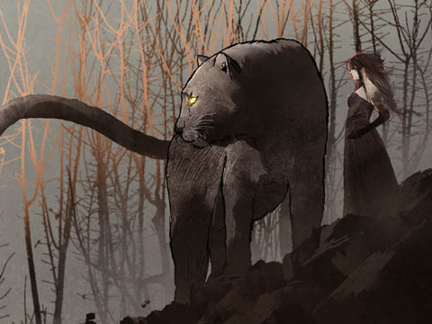
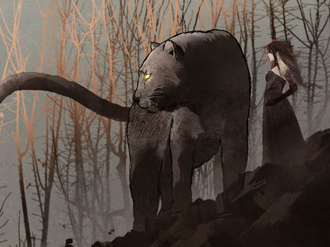

- 第１話 繁殖の村
- 第２話 聖Ｘの宴
- 第３話 キノコの謝肉祭
- 第４話 トロールの太鼓
- 第５話 修羅場か、誰も
- 第６話 いざ、魔法院
- 第７話 雛菊牧場、再び
- 第８話 チューリップの約束
- 第９話 嫐城の華魁たち
- 第10話 魔女っ子の塔
- 第11話 も～っと！ドッカ～ンでナ・イ・ショで配信中！
- 第12話 天下分け目の！
- 第13話 ウィッチリア魔女っ子部長国連邦
- 次回予告
- あとがき
Ａ 靴と刺叉とわたし
「チチ！ そっち行った！ 下から狙って！」
わたしはアリスロッテ。魔法使い。
世界規模で発生した時間軸異常で14歳だか24歳だかわからなくなってしまったふつうの女の子。魔法は使えるけど、まあ、わたしにとっては、それもふつう？
「はあ!? アンタ新入りなんだからチチ様って呼びなさいよ！」
って、甲高い声で応えるのはチチ・ユレール。わたしの先輩。
「新入りは背後に回って！ じゃましないようにね！」
って、こっちはシリィ・スレンダー。
まあ、いろいろあって、幽鬼の森にあるトビチノ村の新しい住人になった。あれからもう２週間は経つかな？ 今日も口うるさい先輩方と食料になるバンダースナッチを追ってハンティング！
「ねえ、シリィ！ バンダースナッチって弱点なに!?」
って、シリィに聞いたら――
「おいおい新入～！ シリィ様って呼ばないと、また怒鳴られちゃうよ～？」
って、横からカァイィ・リップス。被せて――
「弱点なんてどうでもいいわ」
って、シリィ。
「あなた、森で野生動物とか見ると、弱点はなに？ とか考えるわけ？」
バンダースナッチを追い回しながらよ？ 息も切らさずに！
「いや、考えるでしょ。魔法は相性が重要なんだし」
この３人とわたしとで１チーム。
「てことは、象とかサイとかにも弱点属性ってあるんだ？ キリンにも？ ライオンは？」
なんて笑って、ひらひらのゴシックなフリルで密林を駆けるカァイィ。
「魔法使いってのはゴタクが多くていけないわ」――シリィ。
「そう！ 女は黙って物理で勝負！」――おっぱいモンスター。
３人とも戦士系。
「アンタいま、アタシのことおっぱいモンスターって言った？」
武器は刺叉。なんか先っぽがＵの字になった鋼鉄の棒。
弱点わかんないし、とりあえず炎系でも撃っとくかぁ。どーん。
メコメコメコメコーッ！
――って、効いた。
「弱点、炎だよ、コイツ！ バンダースナッチの弱点は炎！」
「弱点なんかどうでもいいよ！ 上げて行こうぜーっ！」
「ええ～～～～っ？」
「そうね。戦いは理屈じゃないのよ？」
なんだかなあ、もう！
燻り狂えるバンダースナッチ。翼竜の一種で細い翼と短めの前脚、極太の後脚がある陸脚類。体長は６～７メートルかな？ 飛ぶのは苦手っぽいけど、ヘビのようにニョロニョロと器用に密林を駆け回る。もも肉が美味しいと評判で、翼の部分を直火でチリチリ炙って食べるのも美味。
わたしが世話になっているトビチノ村は繁殖のための村。世界はあと３年ほどで終焉を迎え、そのときに人口の９割が滅びると予言されている。「だったらその前に増えておけばいい」というのが、トビチノ村の村長、ミュゼのポリシーっぽい。っぽいっていうか、ポリシーだね。うん。
繁殖を支えるカナメは女でしょ？ よって、「いとなみ」における決定権は女が持ち、だれをパートナーに迎えるかは女が指名できる。日によってとっかえひっかえするひとが多いみたい。村ができた当時は男が戦い、女が村の仕事を引き受けていたらしいけど、女が指名する制度のせいか、いつの間にか立場が逆転したって。つまり、男たちは指名されるべく美しさを磨いて女たちの世話を焼き、女たちは互いに牽制して己の戦果を競い合うようになった。
見よ、この、チチ・ユレールのモンスターボディ。
この無駄に女性性が強調された体格だと、本来ならブラをつけていてもぶんぶん揺れるし痛いし戦いでは不利になると言われていたけど、彼女はドワーフ特製の大胸筋矯正サポーターを装着してる。そう、ブラではなく、大胸筋矯正サポーター。モモイロトカゲのなめし革から作られた伸縮自在かつ強靭な布地は極小の面積でもチチのチチをがっちりと支え、刺叉を激しく振り回しても事故でポロリすることはたまにしかない。
カァイィの小悪魔風のフレアのミニも、本来なら密林の木々に引っかかったりして動きにくいことこの上ないけど、こっちはハイエルフが織ったツルッツルでサラッサラのダーク・スパイダー・シルクで作られてて、木の枝に引っかからないどころか、少々の攻撃は受け流す。
シリィが着用しているお姉さん風のムーディなビスチェだって、一見するとシルクだけど、南方の火山帯に住む太古のノームたちが作った極小ミスリル・チェーンの鎖帷子。受けたダメージの９割を吸収し光に変換して放つ、界隈ではライトニング・ビスチェって言われるお値打ち品で、オークションではプール付きの屋敷と同じくらいの値がつくらしい。
防御してる面積はどれも小さくて、肌の露出は大きいけど、そこは気合でなんとかするんだって。極寒の山岳地帯でも、マグマの川が流れる地底洞窟でも衣装は変えない――そんな不思議なポリシーを貫いてるっぽいけど、ポリシーだったらもう、しょうがないよね。
ちなみにわたしはまだ新入りなので、支給されたのは刺叉とブーツくらい。よく木の枝にスカート引っ掛けてるし、ブラウス破れるし、ブラはたまにずり上がったたまま走り回ってる。
捕まえたバンダースナッチは、ハラ掻っ捌いて内臓捨てて、翼の皮はその場で炙って食べて、尻尾切り落として、口からケツまで棒を通して４人で担いで村まで帰った。
「内臓も塩漬けにすると、酒のツマミに最高なんだよなー」って、チチ。
「ええーっ。アタシあれ苦手ー。臭いじゃーん」って、カァイィ。
村に入ると、みんなが出迎えてくれる。
イケメン揃い。
まあ、ブサイクは指名されずにひっそりと村を去っていくから、必然こうなるっていうか、女戦士たちも口では「優しい男がいい」とか「家事をやってくれる男がいい」とか言うけど、繁殖相手として指名するのはイケメン。ブサイクは荷物運んだり、車引いたり。まあ、村にはなんでも揃ってるし、子育ても料理も専用の班があるし、ぶっちゃけ優しさも甲斐甲斐しさも重要じゃない。
一応、非モテのブサイクが暴動を起こさないように、欲求処理用のモックスも用意されてる。ダッチ・モックス、略してダッチモって呼ばれてるけど、あんまり利用されてない。あ、モックスってのはゴブリンやコボルトと同じ、亜人ね。もふもふでずんぐりしてるの。でもやっぱどんな非モテでも、モックス相手ってのは屈辱らしい。たまにイケメンが何人か集まって罰ゲームに使ったりしてるし。とくに半年に一度の繁殖期のメスは臭腺がすごくて罰ゲームにぴったりって言うか、それが手当たり次第にイケメンを追い回して、ま、それも最初は異様な光景だとは思ったけど、慣れた。
「見事なバンーダースナッチですね……」
と、広場に出てきて、櫓に吊るされた獲物を見上げるのがこの町の助役、コート。
村長ミュゼの弟で、年は13歳、あるいは23歳で、ええっと、わたしの11コ下か、あるいは９コ上になるけど、体感的にはわたしの１コ下かな？ 身長もわたしより５センチくらい低くて、素直でいい子。13歳で解釈するといろいろと問題があるので、23歳で解釈するのが通例。ここまでの物語を知ってるひとなら知ってると思うけど、わたしはコートに誘われてこの村にやってきた。
「３日後、助役の成人式だろう？ こいつで祝おうぜ」
この村の成人は14歳か24歳、時間軸異常に巻き込まれてない子は18歳。とまあ、とにかくわたしたちの世界では年齢ってのがそのままの意味を持ってないけど、これもまあ慣れかな。そして男も女も、成人することで「結ばれる」ことが許されるようになる。
チチは刺叉を肩に掲げて、足元に転がしたバンダースナッチの頭部に足をかけてポーズを決める。
「３日後にはついに初床の儀？ それじゃあ、一番手で指名しようかしら」って、シリィ。
「そう、それ！ アタシも考えた！」って、カァイィ。「でも先に予約を入れてる女がいたんだよね～」と、わたしの方に視線を送る。
チチとシリィもその視線を追って、わたしの方を見る。この微妙な空気を感じ取ることもなく、コートはニコニコ。
「ええ、２週間前、この村に来たときにアリスロッテさんから予約を頂いてます」って。
そう、わたしがこの村に来た一番の目的はコートの初床を頂くこと。だから真っ先に予約を入れて――それはつまり、それまでの間は他の男を指名できなくなるって意味だけど、そのために来たんだもん。２週間ご無沙汰とはいえ、そのぶん高まった情熱は、すべてコートに満たしてもらうの。
「はあ？ ２週間前からって、ふざけてんの？」
「ふざけてないです。指名は先着順だって、ミュゼ村長が……」
「じゃあ、わたしが２番目！ 終わったら言ってね！」
カァイィはあっけらかん。
「ちょうど血ぃ噴いてる時期だし、パスするわぁ」
チチはもっとあっけらかん。
「指名の約束、ありがとうございます！ ご期待に添えるように、僕、がんばります！」
と、コートもあっけらかんっていうか、健気っていうか、総じてこの村には外の常識や倫理が通じない。というか、倫理って意味だとさあ、もう関係ないんだよね。
倫理って、なんてゆーの？ 人間の生きる規範？ なんかそーゆー、生きる上でプラスに働くなにかだと思ってたけど、この村での「繁殖」は、女が相手を指名して、着床後４ヵ月で魔法で取り出して、魔導保育器で育てるわけよ。生活は保証されてて、やり逃げする男も、捨てられて露頭に迷う女もいない。そーなるともう、倫理って必要ないんだよね。あ、ブサイクな男の人権については、これはまた別途考える。
それと、この村にはお金がない。すべて共同生活で、三人娘が着てるようなお値打ち品は実力に応じて支給される。「お金がない世界では誰も働かなくなる」って話も聞いたことあるけど、嘘だよね。みんなひとと繋がるため――これをトビチノ村では、聖なる交わり、聖Ｘという――のために働いている。お値打ち品を着て、最高の男を指名するために、あるいは最強の女に指名されるために。ここではむしろお金の方が代用品。
「金なら奪えるが、愛はいまを生きるしかない」
とは、性欲モンスター代表、チチ・ユレールの言葉。意味はようわからん。
「でっかいの仕留めたね、あんたたち。お手柄だよ」
調理場で働いているクルクルロングの背の高い女、リズムリンツはわたしの幼馴染。
「わたしが仕留めたようなもんだけど、チチが仕留めたことになってる」
「そうなの？ 魔法がヒットしたように見えただけじゃないの？ アリスロッテ、思い込み激しいから」
「そんなわけないでしょ」
わたしが故郷の双子原邑でやんちゃしてたの知ってるくせに。
「でも、びっくりだよ。あのアリスロッテがひとりの男に一途だなんて」
「あんただってイディに一途じゃん」
リズは旅の途中で知り合ったイディとこの村に来た。イディはリズの婚約者で、絶世のイケメン。背が高くて、肌は浅黒くてハリがあって、筋肉質でエキゾチック。
チチ曰く――
体中が霊矛※１。
――激しく同意。肌のどこ見ても霊矛に見える。
ほんとはイディの実家の染物商でも継ぐはずだったんだろうけど、イディが「戦士として通用するかどうか試してみたい」というから、ふたりでここに来た。
「そうでもないよ。何人か指名してみたの。イディ以外の男も」
ケッ。男と書いてひとと読みやがった。わたしは禁欲生活を送ってるっていうのに、この女は。
「でも、ピンと来なかった。わたしはイディが一番好き」
「向こうは？ 向こうだってほかの女から指名もらってるでしょう？」
そう尋ねても、リズは洗い場に溜まった器を洗いながら微笑むだけ。
「アンタにもいずれわかるよ。幸せってのが、なんなのか」
「なにそれ。ニヤニヤして。気持ち悪い」
イディの子を宿して、イディとふたりでお父さんお母さんになるのがわたしの幸せですって？ だったら染物商の家に入りゃーよかったじゃん。
わたしの部屋は、女子戦士寮の共同便所の隣。
カギは壊れて閉まらないし、部屋には先輩戦士たちの荷物が置かれてる。
でもいいんだ。３日後にはここでコートをあんあん言わせるんだ。みんなに聞こえるくらい。
そして翌日。目を覚ますとわたしの刺叉がなくなってた。これで３回目だ。前回同様、共同便所の便器に突っ込まれてた。土間に脱ぎ揃えてたわたしのブーツには、泥が入れられてる。ブーツの泥を掻き出すわたしを見て、チチとカァイィが笑って走り去ってった。
１回目と２回目、風紀委員会に訴えたけど、「よくある悪戯でしょう？」「それで誰か死んだの？」と請け合われなかった。
「それに、もし本当に仲間割れだとしたら、重大な規約違反になるから、あなたたちのチームは無期限の活動停止になるけど、それでもいいの？」って。
そのまま泣き寝入りするのも悔しいので、そのへんのヤギのウンコを例の３人の直腸にワープさせてやった。いまごろヤギのウンコでお腹はパンパン。３人とも今日はヤギのウンコを垂れるがいい。
※１：人類の原型であるアダムカドモンに備わっていた人類を生み出すための器官で、なかでも男性に継承されたものを指す。一般的には「ちぬほこ」「ちぬぽこ」と呼ばれるが、親しみを込めて「ポコたん」とも呼ばれる。女性に継承されたものは花冠、あるいは聖冠と呼ばれ、アダムカドモンは霊矛に宿った宇宙の根源力を聖冠に注ぎ込み、人類を創生した。このときアダムカドモンは女であり、聖冠を持ち、霊矛はまだ宇宙の根源力に浮かぶ力の流れだったと言われている。この行為は原Ｘと呼ばれ、その時に分け与えられた宇宙の根源力は、いまも人類に内在している。
Ｂ トビチの村の三人娘
デネア姉さまの夢をみた。
故郷、双子原邑に、多数の幽鬼が出現した夜、そのなかに実体化した真鬼とともに姿を消した、デネア姉さまの夢を。
真鬼を出現させたのは、おそらく魔法院のマリウス・クライスという若くてイヤミで無感情で愛想のないクソで間抜けな魔法使い。たぶん憧弟で、フィギュアとか集めてハァハァしてる。あと、アリとかクモとか無駄に好きそう。「クモのほうがあなたより役に立ちますよ」とか言いそう。多少顔が良くて賢いってだけで女子にちやほやされて勘違いした系？ 女子に興味ありませんみたいな顔して、巨大なタランチュラに体を這われる妄想して己の聖雫に塗れて恍惚の笑みを浮かべる変態だと思う。
デネア姉さまはおそらく、真鬼の転送に巻き込まれて魔法院にいる。
「ん、ん」
わたしがデネア姉さまが攫われる夢を見てうなされていると、コジロウが体を揺する。
コジロウはモックス。
「……コジロウ……早起きだね」
オッカネ山っていうトロールの住処に行った時、なぜかコイツだけついてきた。コジロウって名前つけちゃったけど、どうやらメスっぽくて、母乳も出る。っつーかいま繁殖期らしく、臭腺が活性化してて臭い。嗅いだこともないような匂いって思ってたけど、主成分はγ－デカラクトンとγ－ウンデカラクトンってゆーから人間と同じっていうか、たしかに言われてみれば女子高校生の体操服を煮詰めたような過発酵した甘ったるい匂い。これ、薄めたら変態憧弟捕獲用の罠に使えそう。マリウスとかぜったい寄ってくる。
「んー？」
コジロウが顔をのぞくから何かと思ったら、わたし、涙を流してたっぽい。
「だいじょうぶ。デネア姉さまのこと考えてただけ」
デネア姉さまが消えて、もう１ヵ月以上が経つ。デネア姉さまを探すために旅に出たはずなのに、なんでわたしこの村にいるんだろう……。でも、デネア姉さまだって子どもじゃないんだし、ちゃんと生き延びてるよ……。子どもじゃないんだし……。
女子戦士寮の奥。共同便所の隣の部屋。便所は臭いんで、ディメンション系の魔法で排泄物だけ便器に飛ばす朝。隣の便所から叫び声が聞こえる。ま、ウンが悪かったね！って、スッキリしたとこに、イディが訪ねてくる。リズも一緒。
「おはよーアリスロッテ～」
イディとリズ。お互いにいろんな相手とカンケイしてるみたいだけど、ちゃんとカップルとしては続いてる。これもこの村特有の光景で、似たようなペアは少なくない。カンケイも有りの男女の親友同士ってゆーか、ちょっと距離が近すぎる兄妹か姉弟みたいな感じ。
「てゆーか、すごい匂いだね、ここ」
「わ、わたしの匂いじゃないからね？ 共同便所とコジロウの匂いのマリアージュなのっ！」
幸いコジロウは外に遊びにでてるけど、あいつがいたら卒倒するよ？
と、外へ出ると、「んふ～っ！ んふ～っ！」とか言ってコジロウがトテトテと駆け寄って来てイディに飛びついてそのまま転がって、顔をペロペロ舐めて腰を振り始める。
「待ってーっ！ それわたしが恥ずかしいからやめてーっ！」
鼻を押さえて体をよじらせるイディと、それをケタケタ笑って見ているリズ。
「臭いっ！ やめてくれよっ！ リン！ 笑ってないで助けてよ！」
ちょっと悔しいけど、お似合いのカップルだと思う。
「臭いなんて言ったらコジロウに失礼だよくっくっくっく……」
コジロウは、雨の日に着た体操服を３日放置して、コウジカビとブルーチーズを混ぜて８時間煮詰めて、制汗剤で抑えてみたけど無駄でしたーみたいな匂い。ちょうどそこに通りすがったイケメンのモックスに目を♡にして飛びついて、頭をなでなでされながら草の茂みへと消えてった。
「ところで、今日は何しに来たの？」
リズに聞いてみると、目線でイディを示す。「用があるのは彼、わたしはついてきただけ」って、ちゃんと口で言いなよ。アニメ※２のワンシーンじゃないんだから。
「村長から今朝、話があってね。明日から君たちのチームに合流することになった」
説明してくれたのはイディ。口元がエロい。
「えっ!? イディが!? 本当にいいの!?」
「本当にいいの、って、何をするつもりよ」
「あ、いや、しませんけど」
で、で、でもこのちょっと浅黒い細マッチョで、それでいて柔らかな丸みのある筋肉……これはもう、いただきますでしょ。
「でも……わたしはともかく、あとの３人は性欲モンスターよ？」
「噂には聞いてる。でも、公式な指名外の自由恋愛は、村長に禁止されてるからね。大丈夫だよ」
村長のミュゼ――念の為に書き添えると女性――は、巨大な両手斧でトロールの群れを両断するようなバケモノだ。３人組も、あのひとが定めた掟を破るようなバカでもあるまい……いや……バカかもしれない……っつーか、きっとバカだ……。
「なにか、気をつけるべきことがあるか、聞いておこうと思って」って、イディ。
うーん。村にいてちゃんと観察してるならわかってると思うけど、チチは強い酒を飲ませて脱がそうとするし、シリィはマッサージしてあげるとか言って脱がそうとするし、カァイィは無駄に顔を近づけてきて油断してると自分から脱ぐ……。
「……って、わたしって普通すぎない!? わたし、いちばん損してない!?」
「急にどうしたのよ、アリスロッテ」
ハァ……。それにしても、なんでわたしのところに連絡来てないのよ。コート、なにも言わなかったよね。この村の助役でしょ？
ひとりでてこてこ歩いてコートの部屋へ。
コートの部屋は村役場の裏のミュゼ村長の家の一階の奥。ミュゼ村長は二階のワンフロアを独り占めして、一階には応接とダイニングとサンルーム、それから、おばけが出るって噂される地下室と拷問部屋と、屋根で繋がった別の棟には風呂と薪を積んだ小さな物置があって、三日前に忍び込んだ盗人がいまもそこに繋ぎっぱなしになってて、そこからぐるっと井戸を回ってダイニングに戻って、コートの部屋はその隣のキッチン脇の小部屋。その部屋のまえ、チチとカァーィィが壁に貼り付いてた。
「先輩方、なにやってんですか？」
チチとカァーイィ、慌てて振り返って、口に人差し指を当てて「しーっ！」って。身振り手振りで、穴の？ なかを？ 見ろ？
壁に顔一個入るくらいの穴が空いてて、のぞくとなかではシリィがコートを寝かせてマッサージしてる。コートは腹這い……シリィがその両太ももに……両手のひらを……膝裏から……お尻のあたりまで這わせて……尻の線に親指を沿わせて……菊の花冠を広げるように動かすと……コートのお尻がキュッとすぼまる……
「シリィ先輩、なにやってんの？」
真顔でチチに聞くと、両腕をチチとカァイィに掴まれてだだだっと引き離されて
「コートが未成年のうちにヘンなことしないかどうか見張ってるの！」
「ヘンなことしてんのオマエらだろ」
「いまアンタ、先輩のことオマエって言った!?」
「オマエでも生ぬるいわ」
三日前に忍び込んで縛られたままの盗人が耳をそばだてていたので、ヤクザキックを浴びせてやった。
「ここまでしても落ちないって、女に興味ないんじゃない？」
得意技のマッサージ攻撃で陥落を狙ったシリィ先輩、結局フラストレーションを貯めただけで成果なし。
「だからアリスロッテでいいんだ」
どういう意味よ。なんか腹たったから、盗人にヤクザキックもう一発。
「あのさあ――」
わたしは先輩方にもんのすごく不機嫌な顔をしてみせた。
「こんなこと言うのもなんだけどさあ。もしコートがその気になったとしてもさあ、公式の指名外でやっちゃうとミュゼ村長から半殺しに合うんじゃないの？」
と言ってやっても、先輩方は意に介さず。
「何も知らないのね、新入りは」
はあ？
「女から襲ったら半殺しだけど、男から迫って来た場合は事故でしょ、事故」
「はあ？ 相手は未成年だよ？ それを誘っておいて事故？」
「ほんと、これだから」
「これだからって？ どういうこと？」
「コートはもうあなたから指名を受けてるから、見做し成人ってことになるの」
なんだそれ。
しばらくすると、コートが部屋から出てきた。
「アリスロッテさん、来てたんですね」
屈託のない笑顔。少し赤らんでる。
「来てたけど。あんた、大丈夫だった？」
「大丈夫というと？」
「この３人になにかされなかった？」
「そのことですか。シリィさんからマッサージしてもらって、体が軽いです」
……
「それと、チチさんに飲ませてもらったねっとりした栄養ドリンクで、すこぶる調子がいいし――」
なにを飲まされたんだ。
「カァイィさんからつけていただいたこの魔除けの紋、すごいカッコいいと思います」
それはただのキスマーク。
コートが席を外したあとで、改めて３人と話し合い。
「のぞきじゃないの！ アンタがコートとフライングしないか監視してるの！ フライングなんてことになったら、あんたミュゼ村長に殺されるのよ!?」
「じゃあ、マッサージとかしなくていいじゃない」
「マッサージは情報を聞き出すための口実よ」
「アンタのためにやってんのよ。感謝しなさいよね？」
この村はオープンで、割とプライバシーがない。先輩方３人はコートのストーカーをやっているけど、それで物が壊れたりひとが死んだりしたわけじゃないし、咎められることもない。初床見学ツアーなんてものまで公然と企画されてるし、わたしとコートが結ばれるときも、きっとだれかにのぞかれると思う。でもまあ、逆にそこはのぞかれたいし、見せつけてやりたいとも思うけど、でもなんか。なーんか釈然としない。
「ちなみに、アリスロッテの次は私が押さえちゃったよ」って、カァイィ。
コートはちっちゃくて愛らしいし、ウブだし、働き者だし、けっこう人気高いらしい。
「その次がわたしで、次はリズムリンツって子」って、シリィが言うけど、待って。
「リズも指名入れてるの？」
「そうよ。知らなかった？」
あんのアマ～。
「そのあとも、もう10人くらい埋まってるはずだよ」
繁殖の村と聞いて浮かれてたけど、想像していたのとちょっと違う。いや、みんなでわたしが夢想した通りのムーブをかましてるからこうなってるんだろうけど。
「指名は重複できないから、アリスロッテが次に指名できるのは初床のあと、早くても明後日？」
「そこでコートを指名すると、順番待ちで、次もまた２週間の禁欲生活だね」
なんて話してるとイディが通りかかって、カァイィがピョコンと愛らしく立ち上がって追いすがって「お食事ですか？」って、腕を巻き付ける。あーもう、まったく。
「ああ、うん、一緒にどう？」
「キャッ！ うれしい！ お食事のあと、カァイィのことも召し上がったりするぅ？」
これだ。
「いいね、どこがいちばんおいしいのかな」
断んなさいよ、んもう。
「わっかんなーい。どこがおしいいのかなあ」
って、イディの至近距離でカァイィが首を傾げると、イディの方から唇を軽く触れ合わせる。イケメンから不意に食らう軽いキス。なんでそんなご褒美を、おまえ。それに蕩けるような表情を見せるカァイィ、あざてぇ。今日のデザートをゲットして、腕をぎゅっと握って、おでこをぐりぐり擦り付けて己の匂いをマーキングする。もはや獣の習性。
コートはウブだからこーゆー事情知らないだろうし、これも男からのアクションだからＯＫってことだったら、公式の指名外でもけっこう成立してるってことでしょう？ 憧れた村だけど。わたし、この村嫌いかもしれない。
「ところで、刺叉とブーツの件だけど」
残ったチチとシリィに聞いてみる。
「アタシじゃないって言ったろ？ 証拠はあるの？」って、チチ。
「オマエしかやんねーだろ」
「コートがやったんじゃねえの？ そーゆーイタズラ好きそうじゃん？」
チチは不機嫌そうな顔でわたしを見る。
なんでわたしがそんな顔で見られなきゃいけないのよって、シリィの顔を見ると、
「先輩のこと『オマエ』とか言うひとの話なんか、だれも聞かないわ」
って、二人称なんかどうだっていいでしょーにー。
とりあえずアッタマ来たので、そのへんを這ってたムカデをチチのキャミソールのなかにワープさせてやった。
「あっ！ せ、背中っ！ なんか虫が入ったっぽい！」
３匹いたので、３匹とも。
「な、なんかいっぱいいる！ もぞもぞしてる！」
ざまーみろだわ、と。立ち上がろうとしたら、立ち眩んで、吐き気がしてしゃがみこんだ。な、なんだこれ。えっ？ ちょっとまって？ えっ？
その様子を見て、チチとシリィがピタッと動きを止める。
「もしかして……」
「つわり……？」
んなわけないでしょ、ずっと禁欲生活してるんだから。
「ちょっと、いっしょにミュゼ村長のところに来てくれないかな」って、シリィが立ち上がる。
「いや、待ってよ。つわりじゃないってば。ここに来てまだ２週間だよ？」
「でも、その前も一緒に旅をしてたんでしょ？」
「してたけど、その間ずっと『姉から禁じられてます』って言って、なんにもさせてくれなかったの！」
「させてくれなかったって、やろうとしたってことじゃん！」
と、白熱しかかったところで、
「ギャ～～～～～～～～～ッ！」って、コートの叫び声。
「今度はなに!?」
どどどどどと、足音のするほうに目をやると、土煙をあげて走るコートと、その後ろにはコジロウ。コートが目の前を走り去って、それを追ってコジロウが走り去る。漫画かよ。
「コジロウ、繁殖期？」
「そうみたい。人間年齢だと40歳超えてるのに」
「人間でも、まだまだ現役だよ。40歳は」
あーやだ。聞きたくない。年寄は綺麗に枯れて欲しい。
コートはコジロウの隙をついてなんとか部屋に逃げ込んで、なかから閂をかけたけど、コジロウは壁にあいた穴をみつけて、そこにつっこんではまった。
「コートも魔法使えるし、魔法でなんとかすればいいのに」
わたしがぼやくと、チチが、
「魔法を使う男なんてサイテー」
って。
「そうなの？」
「男は花よ。なんにもできなくて、アタシたちに守られるくらいがちょうどいいの」
それって、外の世界だと野郎が言いそうなご意見。
チチとシリィとわたしとで実況見分。部屋の外にはコジロウの尻。内側にはコジロウの上半身。すっぽりはまってる。
「で、どうする？」って、シリィ。
コジロウは穴にはまって動けない。
「コジロウの発情、あと３日くらいで収まると思うんで、それまでこのままで」
「ええ～っ！ 万がいちスポって抜けちゃったら、僕どうなっちゃうんですかぁ～っ！」
「そのときくらい、魔法でなんとかすればいいんじゃないの？ あなた、トロールの群れのなか平然と歩いてたでしょ？」
そのうちコジロウはアクビして居眠り始めるし、シリィはコートの隣に座って指先マッサージしはじめるし、チチはコートのベッドで横になって鼻くそほじってそのへんに飛ばす。男だろ、それは。完全に。
「双子原だっけ？ 助役が視察に行ってた村」
チチが静かな口調で切り出す。双子原はわたしの故郷の村。その視察の帰りに、わたしとコートは知り合った。
「ええ、アリスロッテさんの故郷だそうです」
「それで、世界を滅ぼすってゆー真鬼はどうなったんだ？」
「消えました。若い魔法使いがいましたから、彼が魔法院に転送したんだと思います」
「そっか。魔法院が世界の滅亡から救ってくれりゃあいいんだがねえ」
「魔法院は魔法院ですよ。僕たちは繁殖を頑張りましょう！」
「いいねえ！ こっちはいつでもＯＫだぞ、少年！」
と、チチはベッドから手を伸ばしてコートの尻を触る。
「チチ！」
もう、油断も隙もない！
「そんなことよりコート……」
シリィがコートの指を丁寧に揉みながら、上目遣いにわたしをチラ見。
「……こんなこと聞きたくないけど、あなたたちもしかして、フライングしてない？」
「だからしてないって言ってるでしょ！」
思わず口を挟んじゃって、
「あなたは黙ってて」
って、シリィは射るような目でわたしを制するけど、こっちは魔法使いだぞ？ てめぇの心臓を取り出すくらい容赦ねえんだぞ。容赦ねえ？ ちゅーちょねえ？ あれ？ まあいいや。
「ミートバンズ持ってきたよーっ」
って、そこにカァイィが入ってくる。
「みんなコートの部屋にいるっていうから、人数分もってきたの。コジロウのぶんもあるよ。ほらほら、おっぱいみたいでしょ。ぷにぷにってやってみる？ 今日はみんなでここにお泊り？」
なんで泊まる気なんだよ。
「いいですね、賑やかそうで」
コートも断んなさいよ。
「でもベッドがひとつしかないし……」
そうそう。
「横にふたり、縦にふたりで、４人までならいける」
縦ってなによ。
「アタシとシリィが横に並んで、アタシの上にコート、シリィの上にカァイィ、ベッドの下にアリスロッテ」
はあ？ ふざけんな。
チチは勝手に食器棚からコップ出して、そのへんにあったボトルあけてとくとくやり始めるし、カァイィはミートバンズ配って、コートに渡すとき「おっぱいだよー」とか言ってほっぺに当てて「揉んでみ。ぷにぷにって」とか言って、コート真っ赤になって照れてるし、あーもうなんだそのクソ純情ぶりは萌え死ぬやんけとか思ってたら、シリィが醒めた目で、「で？ どうなの？」って。
「なんの話？ アリスロッテが何かやらかしたの？」って、カァイィ、ミートバンズを頬張る。ゲップ。ゲップするな。少しは繕え。
「今朝うずくまってた件。あれ、つわりでしょ？ 相手がコートじゃないとしたら、だれとやったの？ けっこう遊んでるってことでしょう？ コートはそのこと知ってるの？」
うっわ。さりげなくコートに「アリスロッテ＝ふしだら女」アピール。おまえら。ひとのこと。うっわ。
「アタシたち、恋愛はオープンだと思うんだ」
はあ？
「今日は誰と誰、昨日はこのひとだったから、今日はこのひと、って、ぜんぶオープンに決めてる」
いや、それがおかしいと思ったことは？
「なのにアリスロッテは、アタシたちの見てないところで、そーゆーことして来たんでしょう？」
いや、それが普通だってば。やってないけど。
この意味不明の理屈をコートはしばらく黙って聞いたあと、
「ああ、アリスロッテさんが……ついに来ましたか……」
って。
「あ、まってまって、それじゃほんとにつわりみたいじゃない。そうじゃないよね？ ちゃんとこう、弁解したりとか、ほら、なんかこう、ちゃんとしとこっか」
ふと気がつくとカァイィがコートの隣で腕に絡まってる。いつの間に。
「それでどうなるのω」みたいな顔でミートバンズ食べてるけど、なんだその神経は。特殊能力か。チチなんか２本目のボトルをコートに開けさせて、「開かねーのか？ 手ぇ貸してやるから、もちっとがんばってみろ」って、後ろから覆いかぶさって、コートの手に自分の手ぇ重ねてぎゅーってやってるし、おまえら自分のこと以外見えてないのか。
「精神系の魔法を同族に対して使い続けると、術者は内部から崩壊していくんです」ってコートが切り出して、やっと本題、
「そう！ そうだよねー……」
って、相槌打っちゃったけど、ええ～～～～っ？
「な、内部から崩壊というのは？」
「あらゆる生命は、星霊体と言われる種で共有する霊体を持っています。同種の生命に攻撃を加え続けると、そこから切り離されて、やがて肉体が腐っていくんです」
「ちょっとまって。そんな話聞いたことがない」
「最終的には朧鬼っていう怨霊になりますが、たいがいその前に勇者様に殺されてしまいますからね」
勇者様っ！
「えっ？ それって、アリスロッテも朧鬼ってのになりかけてるってこと？」
「ええ、そうとも言えます。特に精神系の魔法、相手に反撃のチャンスのない魔法は、自らが属する『種』からの離脱を早めます」
聞いてねーっ！
「なにか心当たりは？」
いや、あるけど。ヤギのウンコを大腸にワープさせたり、ムカデを背中に入れたりとか。
「もしかして、昨日ケーキ食べようとして落としちゃったけど、それもあなたが？」
そっちはやってねーっ！
「で、でも、いままでは平気だったんだけど……」
「なんらかの根拠……たとえば仇討ちのためとか、人助けのためだったら、それは星霊体の意志ともリンクしてますし、乖離は起きません。だけどこれが単なる悪戯だったり、個人的な復讐だったりしたら……」
「いやーっ！ 聞きたくないーっ！」
「フン、やましいとこあるってことじゃん。知ってたけど」って、チチ。
「あ、いや、そういうわけじゃないけど……朧鬼のお話、なんかちょっとコワイなぁって……」
「へいへい。でもアンタ、もしアタシたちに魔法でいたずらしてるとしたら、ミュゼ村長に言いつけて半殺しだからね？」
ひや～～～～！ そっちもコワイ～～～～！
※２：大画面で上演される紙芝居の一種で、枚数を増やして現実同様の動きを見せるところから、魂が注入されたという意味の「アニメーション」、あるいは「アニメ」と呼ばれる。リアルタイムで俳優が声をあて、楽隊が音楽を鳴らして上演されるのが一般化しており、絵やキャラクターの他にも、声の俳優や作曲家に特化したコアなファンも存在している。
Ａ 成人前夜
コートの成人式は明日。
成人式、すなわち、わたしの故郷でゆー「潮騒祭り」。
双子原邑では成人を迎えたひとみんなまとめてやってたけど、トビチノ村はそれぞれの誕生日ごとに祝うらしい。広場に設えた特別な椅子にコートが座って、付き合いのあるひとみんな集まってきて酒を酌み交わす。
そして！ 広場には閨がしつらえられ、薄いヴェールで飾られたベッドが用意されている！
キャッ！ なんのために!?
「これ、年ごとにまとめてお祝いしたほうが盛り上がるのでは？」
ってミュゼに聞いたら、
「それじゃあ１回しか酒が飲めねえだろ」
って。そっか。飲みたいだけか。
ほんで、祭りのメインとなる料理は、こないだ獲ってきたバンダースナッチのはずだったんだけど、村長のミュゼが納得しなかった。ついこないだ鍛冶屋の息子の成人式で、これより大きいクイーン・ギドラが振る舞われたから、最低でもそれより大きいのがほしいって。
「てことは、キング――」
「いや、無理でしょ」
チチが言いかけたところをすかさずブロック。
「その名前を口にすると災いがあるって言われてるから、言わないほうがいいよー」と、カァイィ。
「じゃあ、ゴジ――」
「それもダメ！ 口にすると祟りがあるから！」
と、いうことは――と、諸々勘案した結果、ベヒーモスあたりを狩ることに決まった。狩りに出るメンバーはいつもの、チチ・ユレール、シリィ・スレンダー、カァイィ・リップス、そしてわたし、アリスロッテ・ビサーチェ。イディもチームに加わるって言ってたけど、いろいろ調整して、次回からってことになった。
だって、今回のターゲットはちょっと半端じゃない。
「ベヒーモスって、体重20トンあるぜ？ 倒したとして、どうやって運ぶんだよ」
と、チチが言うと、成人式の準備を視察してたミュゼ村長が通りすがり、
「運搬には、ブサイク隊を30人ほど派遣するつもりだ」
って。
「ブサイク隊……」
それは、聖Ｘと呼ばれる神聖なる交わりに１年以上指名されていない男が強制的に加入させられる労働奉仕隊。「種」を残せない代わりに村の設備を整え、文化を残す――と言われているが、要は戦力外通告で、配属されてすぐ村を去って行く者も少なくい。そこに留まっているのは、いつか聖Ｘに指名される日を夢見るツワモノたちだが、士気は低いし、村に対する反発心も大きい。
「ベヒーモスを捕らえたら、ホイッスル弾を上げるといい。４発与えておく。１発あたり７～８人のブサイク隊が駆けつけるはずだ」
「いや、あいつらに来られても、困る……」
「士気も低いし、まとまるかどうか……」
「ブサイク隊にはすでに打診してある。なかでも活躍した４人には褒美を出すと言ったら、テンション爆上げだったぞ」
「活躍した４人に褒美……？」
「ひとりではなく……？」
「おまえら４人それぞれ、あいつらの中から好きなのを選んで、聖Ｘの相手をすることになっている」
待てこら。
「ベヒーモスは、アタシたちで運びます！」
「たかが20トン！ ブサイク抜きで運んでやらあ！」
いま、太陽が45度ほど上ったところ。明日の日の入りに始まる「火霊の祝儀」に間に合わせるには、明日の正午あたりがタイムリミットか？ てことは、そろそろ出発したほうがいい。
「運搬はともかく、念の為ホイッスル弾も持っていくといい。途中、橋が落ちてたり、岩で道が塞がれてたり、食虫植物に捕まって抜けられなくなったり、底なし沼に沈みそうになったりもするだろう？ そのときに呼べばいいさ」
「イヤぁっ！ なんか変なフラグ立てないでぇっ！」
銀糸川の流れに沿って上流へ向かえば、１時間ほどでベヒーモスたちの生活圏に到達する。川に並走する道はところどころ途切れ、幾度か密林の木々を切り分けて歩く必要があったが、わたしたちには慣れたものだった。そして暫く行くと、第一の関門に出くわす。
……橋が落ちていた。
「イヤぁっ！ ブサイクを呼ぶのはイヤぁっ！」
泣き叫ぶカァイィ。気持ちはわかる。
そのへんの木を倒して橋にするってのも考えたけど、そんなに簡単に倒れるんだったら世の中に木こりなんか要らない。ロープを掛けて渡るにしてもそんな準備なんかしてないし、遠回りするとなると地図もないし、日が暮れちゃう。
「わかった。じゃんけんで負けたヤツがブサイクを呼ぼう」
チチが決意してそう伝えるけど、わたしは空間跳躍で超える。
「あっ！」
「ズルいっ！」
「ズルいとか言われたって……。じゃんけんは先輩方３人でやれば？」
しぶしぶ３人でじゃんけん。負けたのはチチだった。
ホイッスル弾を打ち上げると地響きを上げて目を血走らせた８人のブサイク隊がやってきた。事情を説明すると、ブサイク８人は肩車してタワーを作って、川のこっち岸と向こう岸にかかるように倒れて、自ら橋になってくれた。名付けて、ブサイク橋。
３人が渡りきると、チチは泣ながら８人のなかでも一番マシなのを指名。
「がんばって！ チチ！」
「死ぬことを思えばなんてことないから！」
シリィとカァイィに励まされながら、チチは聖Ｘ報酬を払った。
またしばらく行くと、やっぱり来ましたかって感じで、岩で道が塞がれていた。
押してもびくともしないし、登って越えようとしても苔でツルツルで、しかもヒルがいっぱい潜んでいて、それが腕に貼り付いてくる。
「さっきはアタシがブサイクを呼んだから、今度は残り３人で……」
とかチチは言うけど、わたしは浮遊で岩の向こうへ。
「なんなの、さっきからアンタ！」
「抜け駆けばっかり！」
「そんなこと言われたって……」
しぶしぶシリィとカァイィでじゃんけんして、負けたのはシリィだった。
シリィが「ひとりくらいマシなのが混じってますように」と祈りながらホイッスル弾を打ち上げると、これまた地響きを轟かせて、両親はどんな気持ちで育てたかと思うほどのブサイクが８人駆けつけて、ヒルが潜んでるとかそういうのは一切お構いなく岩をどかして谷底に放り込んでくれた。
シリィは居並ぶブサイクを前に、自分では決めきれないとか言って目を瞑ってどーれーにーしーよーおーかーなー、と、よりにもよってとびっきりのブサイクを引き当ててしまうが、両目はぎゅっと瞑ったまま、自分がなにを選んだか目にすることもなく、両生類の王様のようなブサイクに聖Ｘ報酬を払った。ピストンごとにブサイクたちが掛け声をかけて足を踏み鳴らすなか、チチとカァイィは鳥肌を立てて震えていた。
またしばらく行くと、今度は巨大な食虫植物に４人まとめてパックリとやられたわけだけども、まあ、この程度ならディメンション系の魔法で抜け出るのは簡単なわけで、振り返って見ると、食虫植物にカラダをパックリされて顔だけを外に出して先輩方３人は泣いていた。
「今度はカァイィの番だけど、どうする？」
「イヤ！ ぜったいにイヤ！」
「わがまま言わないの！ アタシたちも耐えたのよ！」
カァイィは、「だってアタシ、排卵日なんだよ？」とか言ってくしゅくしゅに泣き出すけど、
「早く決めないと消化されちゃうよ？」
まあ、死ぬにしたって食虫植物に消化されるなんて最後は迎えたくないわけで、最後は覚悟を決めて、鼻をすすりながら了承してくれた。
カァイィの代わりにわたしがホイッスル弾を上げると、トロールの軍勢かと見紛うこれまた凄まじい形相のブサイクが８人駆け寄って来て、目を血走らせて食虫植物を掻きむしり、食いちぎり、囚われていた３人をぐいぐい引っ張って助け出したが、３人に安堵の表情はなく、カァイィに至っては「このまま死なせて！」と泣きじゃくる始末だった。そのカァイィを食虫植物から引っこ抜いたのが、これまたコンニャク芋すら思わせる芸術的な顔面を持ち、オレが引っこ抜いたのだからオレのものだとばかりにカァイィを抱いて放さず、カァイィはそのコンニャク芋を指名せざるを得なかった。ブサイクもコンニャク芋にまで至ればいっそ清々しいもので、あたかも不気味の谷に遥か及ばぬ土偶のように、もはや目の前にいるのは人間とすら思えぬ自然現象か超常現象、あるいは神の域の出来事と言うべきか、ぬっぽぬっぽと聖Ｘ報酬を支払っている間、カァイィは完全に魂が抜けたような状態だった。
と、このまま順当に行けば、次の障害は底なし沼ということにはなるんだろうけど、ここまでの出来事はわたし、アリスロッテの妄想でぇ、まあ案外普通に何事もなくベヒーモスの生活圏まではたどり着いた。残念だったねぇ、アリスロッテ。先輩方の泣き叫ぶ顔が見たかったねぇ。
「さっきからアンタ、ニヤニヤしてなに考えてるの？」
「どーせコートとの初床のこと考えてたんでしょう？」
「そんな、まさか」
「だったらなに？ アタシらがブサイクと聖Ｘする場面でも想像してた？」
大正解！
ベヒーモスの「存在」に気がついたのは、そんな話をしてるときだった。
「あっ」
って、最初に声をあげたのはシリィ。
黒い大きな影がよぎるのが見えて、わたしたちはすぐに岩陰に身を潜めた。
「ドラゴン？」
チチが岩陰から上空を見上げる。
「たぶんそう。この高度で飛ぶなんて滅多にない」
森の木々がざわめく。小さな動物は騒ぎたてるが、大きな動物たちは息を潜めている。
「ハンティング？」
「可能性は高いね」
「行こう、向こうもベヒーモス狩りかもしれない」
山道へ飛び出して、ドラゴンが向かった先へ。峠超え。
「でも、ベヒーモスがいたとして、ドラゴンから獲物奪うの？」
「しょうがないよ。助役のためだ」
「浮遊で先を見てみる」
そう伝えて木々の間を縫い、上空へ。確かにドラゴンが滑空しているのがわかる。そして、狙いをつけられてるのもベヒーモスで間違いない。すでに崖っぷちに追い詰められ退路を絶たれている。ドラゴンは高い知性を持っている。あの崖から落として、倒れたところを頂くつもりだ。
地上へ。３人に報告。
「ドラゴンがベヒーモスを追い詰めてる。たぶん崖から落とすつもり。うっかり手を出すと、ドラゴンを怒らせちゃう。場所を変えたほうがいい」
「は？ 場所を変えるって、アンタ馬鹿なの？」
はあ？
「そうよ、ドラゴンがベヒーモスを倒してくれるんだったら、アタシらがそれを持って帰ればいいってことでしょ？」
「まってまって、ドラゴンと人間の間に協定みたいなもの、なかったっけ？」
「なにそれ、どこのお伽噺よ」
いや、お伽噺じゃなくって。
「アタシら、トビチノ村のエースよ？ しかーも、村長ミュゼの勅命で動いてんのよ？」
「でも、ドラゴンはどうするの？」
「アンタ、囮になりなさいよ。空飛べるんでしょう？」
「ええ～～～～～～っ!? 飛べるけど～～～～～～～っ」
ええーい、しょうがない！
ウロコの配列や模様から見てヴォルカニック・ドラゴン、弱点はわたしが苦手な氷系、体長15メートルで重量は80トン前後？ 飛翔速度じゃ負けるけど、一度地上に下ろせば、このあたりでは助走距離が足りず飛び立てない。地上戦に持ち込めば逃げ切れる！
チチ、シリィ、カァイィがそれぞれベヒーモスに向かって走り込むと、ドラゴンもこっちの動きを察知、ドラゴンはわたしに突っ込んでくるけど、計算通り！ 地上に引き付けて森の中に引きずり下ろす！ と思ったら、ドラゴンはわたしをスルー！ 距離を取って旋回、ベヒーモスの背後へ!? まって！ 戦略が読めない！
チチとシリィが、崖向こうに到達、ベヒーモスが落下してくるはずのとこ！ だけど、ベヒーモスは逆行、ドラゴンは背後へ、裏を突かれた！ わかったよもう！ ドラゴン関係なく、わたしがベヒーモスを追い詰めればいいんでしょ！ アルケインレーザー叩き込む！
異界点展開！
ベヒの弱点は冷気だけど、ここは炎で押す！ クアドラプル！ ４つの異界点をベヒを囲むよう配置、異界点からアルケインレーザー照射！ ぶっとい灼熱する光線がケージとなってベヒーモスを崖っぷちに追いやると、獲物を奪われることを察したのかドラゴンが襲い来るけど、わたしの術中！ 炎の異界点にまぎれて一個だけ展開した闇の魔法球の重力でバランスを崩し、左へと旋回――
喰らえっ！ 深海の超圧力！
ディーーーーーーーープ・プレッシャーーーーーーーーッ！
ずどぉぉぉぉぉぉぉぉぉぉぉん！
「カァイィ！ ドラゴン落とした！ あいつ坂道ないと飛べないから、いまのうちにベヒーモスを！」
単騎ベヒーモスに対峙するカァイィに指示！
「カァイィ様ってお呼びなさい！ アリスロッテェェェェェェッ！」
ベヒーモスはカァイィを目掛けて突進してくる！ カァイィは背中にクロスするシースから双剣を抜く！ っつーか、刃渡り40センチの剣でどうすんのよ！ とか思ってたらカァイィくるっと一回転して飛び退く！ ナイス判断！ 相手がデカすぎるって……とか思ってたら、ベヒーモスももんどりうって倒れる！ なにがおきたの!? って、ベヒーモスの足の裏に剣が刺さってる！ ベヒーモス痛そう！ めっちゃ痛そう！ 人間の10倍サイズとして、つまり足の裏に４センチの針がぶっすり刺さったのと同じだから、確かに痛いわ。
「うおりゃあああああああああっ！」
って、今度はチチが駆けてきたぁっ！
そしてそのままベヒーモスに正拳重撃！
バキャバキャボキャッ！
って、あの一撃で複雑骨折!?
そのベヒーモスの上にくるくるしゅたっとシリィが舞い降りてぇぇぇぇっ！ 細い槍を空中でくるくるーーーーっと回してぇぇぇっ！ ぐさぁぁぁぁぁっ！ 絶命っ！
「ナイス連携！」
「ドラゴンは!?」
「見失った！ いまのうちにベヒーモスを村へ！」
「無茶言うな！」
とかやってたら、風が、ばさっ！ ばさっ！ って、ドラゴン飛び上がったぁっ！
「マジかっ！」
「森に逃げ込むのよ！」
とか言って木々の間に飛び込むけど、６千度のブレスで森ごと焼かれる！
「なんとかならないの、アリスロッテ！」
「なんとかって、ドラゴンと本気でやりあうつもり!?」
ドラゴンに比べたらわたしたちなんて豆粒、チョロチョロ逃げられると思ったのに、地面ごとボコスカ削られる！
「どうすんのこれ!?」
「とにかくベヒーモスは死守！」
「あとは……」
ひゅるるるるるるるるるるるるっ……
「ホイッスル弾!?」
ひゅるるるるるるるるるるるるっ……
ひゅるるるるるるるるるるるるっ……
ひゅるるるるるるるるるるるるっ……
「４発ぜんぶ!?」
すぐにどどどどどと大地を揺らして何者かが駆け寄ってくる！ ブサイクだ！ 30体のブサイク軍団がこっちに向かっている！
「ブサイクどもっ！ あのドラゴンを押さえるがいいっ！」
ってチチはブサイクに命じるけど、無茶すぎるぅぅぅぅぅぅっ！
しかもまとまりのないブサイク軍団、てんでバラバラに走り回って、ドラゴンも攻撃対象を絞れない！ チチとシリィとカァイィは20トンのベヒーモスを引きずって銀糸川を下り始めるけど、ブサイクの群れがドラゴンに翻弄されてる！ いや、翻弄されてるのはドラゴンか!?
「どうすんのよこれ！」
上空から洞穴発見！
とりあえず、ブサイクを避難させるしかない。ディメンションで１匹ずつ地道にワープさせるけど、ドラゴン暴れすぎて地面はボコボコ、岩山はえぐれて、森の木々もバッキバキ。尻尾でぶーんされてるブサイクを間一髪で救って、次はブレスでふっとばされた別のブサイク、前足の下でミンチ１秒前の別のブサイク、カマキリ拳法のカタを見せてる別のブサイク、そして最後のブサイクを洞窟に転送したとき、ドラゴンは静かにわたしのことを睨んでいた。だけど、向こうももう体力の限界っぽい。わたしも……魔力を……使いすぎた……。
とりあえず逃げなきゃ……。
Ｂ ブサイクたちの褒賞
しばらく気を失って、気がつくとあたりはもう暗くなっていた。
洞窟の中……
小さな焚き火を囲む人影が見える……
わたしが目をあけて、体を動かすと、それに気がついたものが振り返り、その口からは人間のものとは思えないゲロ悍ましい呼吸音が聞こえる……
ふしゅるるるるるる……
ふしゅるるるるるる……
そうだ。わたし、ブサイクたちの洞窟にワープしてきたんだ……。そしてこのブサイクたちは、ホイッスル弾で招集されたブサイク……。招集に応じるのと引き換えに、わたしたちに「聖Ｘ報酬」を求める権利を持つ……。くっ……。魔力を使い果たして、体もろくに動かない……。チチたちもいないし……わたしひとりで「聖Ｘ」に応じるしかないのか……？
ブサイクは横目でちらりとこちらを見て、
「起きたｗｗｗｗ」
とか言ってるが、それっきり動きはない。
「すまないが、代表のものと話をしたい」
契約は履行する。それが村の掟だ。身近にいるブサイクに声を掛けてみるが、二度見して首をひねるだけで、それ以上リアクションはない。なにやら数人でカードに興じているようにも見えるが、わたしとの聖Ｘの権利でも賭けているのか？
「それは、なんだ？」
聞いても答えはない。
「その手に持っているカードはなんだと聞いている」
「あ、え……？ アビッサル・ロータス……インスタントカードで、場に出すときに２つマナを生成して、自らがコントロールするクリーチャー１体を手札に戻すことができる……」
？？？
「いやいや、そのカードじゃなくて、なにやってっか聞いてんじゃないのかな」
別のブサイクが指摘する。
「ああ、これは……芸夢王カード……的な……？」
芸夢王……？
「いったいなんのために？」
「オウフｗｗｗｗ ストレートな質問キタコレｗｗｗｗ カードゲームに意味あるんですかｗｗｗｗ って、テンプレ過ぎて草ｗｗｗｗ」
「オタクまるだしになってんぞｗｗｗｗ」
「仕方あるまいてｗｗｗｗ お主も相当なものぞｗｗｗｗ」
「オタク？ オタクとは？」
「そこからでしたかｗｗｗｗ」
「それにさっきから、こっちと話をしてるはずなのに、こっちを見ないのはなぜだ？」
「見ると減るｗｗｗｗ」「減るのかよｗｗｗｗ」「逮捕されるｗｗｗｗ」「見ただけでｗｗｗｗ」「女子、母ちゃんとしか話したことねえｗｗｗｗ」
「ちょ、ちょっとまって、ちゃんと話そう、ちゃんと。わたしはアリスロッテ、あなたたちは？」
「っつーか、母ちゃん女子かよｗｗｗｗ」「四十路ミラクルｗｗｗｗ」
「四十路ミラクルはいいから……」
「うちは、五・十・路ｗｗｗｗ」「息子無職ｗｗｗｗ」「前世でなにやったｗｗｗｗ」
「聞けよコラ」
「……」
雄弁なようでいて、こちらからの話題には対応できない？ ずっとこっち見ないでカードで遊んでるし。
「ちゃんと話そう、ちゃんと……まずは……お名前を聞いてもいいですか？」
「あー、親の人がつけた名前はあるけど――」
親の人？
「界隈では硝子牙で通ってます」
グラッシーファング？
「おおっ!? 硝子牙殿でしたか！ 神絵師の！」
神絵師？
「いやいや、神絵師だなんて滅相もない」
「いやいやいやいや、拙者、うにもやなるペンネームで描かせてもらっておる者ですが――」
「えっ!? うにもやさんって、『尻出しクマの子隠れんぼ大会』の――!?」
なんだその作品は。
「っつーか、お互いに自己紹介もせずにカードで遊んでたの？」
「たまにあるｗｗｗｗ」「メンバー抜けて途中で入ったときとかｗｗｗｗ」「たまにっていうか、基本ｗｗｗｗ」「ああ、でも、名前が知れてよかったｗｗｗｗ あとでサインくださいｗｗｗｗ」「いやいやこちらこそｗｗｗｗ うにもや殿とはつゆ知らずｗｗｗｗ」
おまえら、こっち見て喋ったら死ぬんか。
「とにかく、聖Ｘ報酬の話をしておきたいんですけど」
「……」
いちいち黙るな。
「積極的ｗｗｗｗ」「ハニトラｗｗｗｗ」
はあ？
「あんま興味ないっつーかｗｗｗｗ」「そうそう、拙者もアスナとゆー動かしづらい理想があるわけでｗｗｗｗ」「２番手に控えてるヒロインってよくないｗｗｗｗ」「隣にいてもいいですかｗｗｗｗ」「ここから始めましょうｗｗｗｗ １から……いいえ、ゼロから！ｗｗｗｗ」「ｗｗｗｗ」
だからこっち見て話せや。
「ところで新刊はいつになるんですｗｗｗｗ エレイン・ビサーチェのｗｗｗｗ」
エレイン・ビサーチェ!?
「ああ、あれもうすぐなんでｗｗｗｗ」「マジですかっ！ｗｗｗｗ」「楽しみにしててくださいｗｗｗｗ」
「エ、エレイン・ビサーチェって……？」
「お、幼女、食いついてきたｗｗｗｗ」
幼女じゃねえよ。
「知らんのかｗｗｗｗ 伝説の魔法使いにしてロイヤル・アーチ、エレイン・ビサーチェのトランキリエン戦役を描いたｗｗｗｗ 牙先生の最新作ｗｗｗｗ」
「さい……しん……？ それ……わたしのお母さんだけど？」
「ええっｗｗｗｗ」
「それじゃ、アリスロッテ・ビサーチェｗｗｗｗ」
「草生やしてる場合じゃねえｗｗｗｗ」
「ああ、うん、さっき言ったよね？」
「あの、エレインがオッカネ山で雷に打たれて身ごもったっていうｗｗｗｗ」
「えっ？」
「そこは漫画のオリジナル設定なんでｗｗｗｗ」
びっくりしたー。
「でも、その処女聖が、なんでトビチノ村なんかにｗｗｗｗ」
処女聖？
「聖なるポルカを踊って、村を浄化するｗｗｗｗ」
わたし、その漫画でどう描かれてるの？
彼らは――わたしがトロールの群れやコンニャク芋を想像していたせいでもあるが、思っていたほどブサイクでもなかった。早口で口数も多いが、こちらを向いて話さず、コミュニケーションは成り立たない。小さなカードに描いた「推しの絵」を交換する奇習を持っているが、慎重なのか、ある程度互いの趣味を確認してからしか出してこない。わたしも流れで「処女聖アリスロッテ」のイラストをその場で描いてもらったが、これをどうしろと。
いつの間にかわたし、寝ちゃってたらしく、気がつくと朝！
寝汗びっしょり！
なんで？ と思ったら、わたしの体に上着が30枚かけられていた。
「牙殿が上着をかけられたのを見て、拙者もｗｗｗｗ」と、うにもや。
「あとの28着は？」
「ほかの連中もノリでｗｗｗｗ」
オタクの習性がわからん！
性欲シスターズはもうトビチノ村に帰り着いただろうか。20トンのベヒーモス肉を運んでいるはず……音を上げてなきゃいいけど……。
「すぐに村に帰る。聖Ｘ報酬が必要なら女子戦士寮に来て。４人までだったら相手してあげる」
洞窟から出ると即浮遊、30メートルほど上昇して滑空。これだと速度も出るし、体力も温存できる。その後ろをブサイクたちがぞろぞろと走ってついてくる。川も岩場もわりと関係なく乗り越えてくる、その恐ろしい運動能力がどこから来るのかわからなかったが、これもおそらく「ノリ」なのだろう。
ベヒーモスを引きずったあとが延々と続く。途中、吊橋が落ちているがベヒーモスを抱えたまま渡ろうとしたのだろう。地面には激しく叩きつけられたベヒーモスのあとがくっきりと残され、そこからも村へ向けて痕跡は続いている。村の近くまで来ると、ベヒーモスを引きずる３人組を見かけるが、とりあえずシカト。そして最後の角を曲がって、村の入口が見えたとき、巨大な影が空へと舞い上がった。
「ボルカニック・ドラゴン！」
その手には小さな人影が掴まれている！ コートだ！
「たーすーけーてー！」
コートがどうして!?
村に入ると騒然としている。
「アリスロッテ！ 見たと思うが、コートが攫われた！」
と、ミュゼ村長。
「応戦しなかったの!?」
「ちょうど戦士たちが狩りに出た時間を狙われた。アタシも便所できばってる最中で身動きが取れず――」
ドラゴンは頭が良いとは聞いていたが、さすがだ……
そこに遅れてブサイクたちと、獲物を引きずったチチたちも戻ってきた。事情を説明する間、ミュゼは遠征の準備を進めてるけど――
「待って！ ドラゴンはこの村がからっぽになるのを狙ってるのかもしれない！」
村長の準備の手が止まる。
「確かに……しかし、なんでドラゴンが……たしか非戦協定があったはずだが……？」
「そ、それは……」
「まさか！ おまえら、ドラゴンの獲物を横取りしたわけじゃ……!?」
大正解。言葉もなく縮こまるしかないわたしたち。
「すぐに獲物を返してこい！ そしてごめんなさいしてくるんだ！」
とはいっても、一晩がかりでベヒーモスを運んだ３人娘はもう死にかけてポンコツだ。
「ええい、獲物はブサイク隊に運ばせる！ アリスロッテ、おまえひとりでドラゴンと交渉してこい！」
「ええ～～～～～～～～っ!?」
「よく聞け、ブサイク隊！ このベヒーモスをドラゴンの巣まで運んでくれたら、抽選で１名にアリスロッテとの聖Ｘ権を与える！」
それ、村長が決めるんだ。
「すぐに行動を開始してくれ！」
……。
しかし、ブサイク隊は戸惑うばかりで動かない。
「どうした、ブサイク隊！ 一生に一度あるかないかのチャンスだぞ!?」
しーん……。
「おまえら、憧弟のまま死んでもいいのか!? どーせ他人がやってる聖Ｘしか見たことがないし、なんなら聖Ｘはフィクションくらいに思ってんだろうが、おまえらの同級生はフツーにやってんだぞ！ 神聖なことでもねーし、なんならエロさえも関係ねえ！ 半分は義務みたいなモンで、ひとりプレイの方が気楽でいいとすら思う、ふつーの、あたりまえのことを、おまえらは夢想で膨らませてファンタジーに仕立て上げて、清楚で貞淑な女を見ると女神に祀り上げるが、アイドルだろうが声優だろうが、イエス・ノー枕をイエスにして彼ピもイエス！ やったぁ！ 今日はゴムなんかいらない！ 安全日だもん！ って、だっこしてちゅっちゅして揉んで揉んで銀河ディスコでフィーバーって！ やってんだよ！ みんな！ 触手ですら！ おまえらは！ 触手以下かっ!?」
ブサイクが泣き出した。それ以上言ったら可哀想。
「アリスロッテ、おまえからも言ってやれ！ いままでやったプレイの数々と、得意なプレイ、やってみたいこと、やられたいこと、なにもかも、すべて！」
「ええー……」
ブサイクだけはカンベン……いやそうじゃなくてー、悩んでたら後ろからスッとメモが差し出された。硝子牙だ。カンペ？ この通り喋れって？ 硝子牙は小さくコクコクと頷く。
「じゃ、じゃあ……」
広場にしつらえらえた小さなステージ。わたしはゆっくりと、一歩だけ前へ。ざわつく聴衆を前に、低い位置にカンペを開いて、チラ見しながら読み上げる……
「フルト・グレイド魔法院第28階位魔法使いにしてロイヤル・アーチ、エレイン・ビサーチェが娘、処女聖、アリスロッテ・ビサーチェです……」
処女聖？
硝子牙の方を見ると、「いいから読め」って。ええっ？ これを？ ちょっと引くんですけど。
「このたび、チチ・ユレール以下３名の村人の咎を贖うべく、北方のライムリッジ・マウンテンに棲むヴォルカニック・ドラゴン、覇王の冠・ヴィゴ・モーテンセンに嫁ぐことになりました……」
聴衆はしんと静まり返り、息を呑む音さえ伝わるよう。
「わたしはこの村で、精霊王グルタルアルデヒドの生き返しであり、永遠の憧弟であるコート・リムラインと形式上の契を挙げ、永遠の処女聖として、この国で聖なるポルカを踊るはずでした……」
聖なるポルカってなに？ 精霊王グルタルアルデヒドってだれ？
「ところが！ わたしたちの些細な過ちで誇りを傷つけられたヴィゴ・モーテンセンは、わたしを差し出さなければ、この村を滅ぼすと通達してきたのです！」
聴衆にどよめきが起きる。聞いてるのは30人のブサイクたち。いや、どこから沸いてきたのかもっと増えてる。
「だけど、悔いはありません！ わたしの血が流されることで、この村が救われるというのなら、わたしは喜んでその礎となりましょう！」
ちょっとわたしもノッてきた。
「だから、どうかお願いです！ わたしの婚礼の引き出物として用意された、このベヒーモスを、ライムリッジ・マウンテンに届けてほしいのです！」
カンペを読み終えると、しばし聴衆はざわついてたけど、すぐに声が上がる。
「そんなドラゴン、俺たちの手でブッ殺しちまえばいい！」
あ、いや、そういう流れでは……
「ああそうだ！ 処女聖アリスロッテは俺たちの希望だ！」
あ、それもなんてゆーか、ご期待に沿えないってゆーか……
「どんなヤツだろうが、アリスロッテを穢させるわけにはいかない！」
いや、もう、じゅーぶん穢れてますんで、そっとしておいてください。
で、なぜかミュゼもこの演説に感激したらしく、作戦をドラゴン討伐に変更。
「そうと決まれば出発だぁ！」
「このご都合主義のカタマリ女がぁーっ！」
「おおっ!? それは褒め言葉かぁ!? 褒め言葉だなっ!? やったるでいっ！」
ベヒーモスの肉に伏兵を潜ませてライムリッジ・マウンテンに遠征することに！ ってゆーか、ライムリッジ・マウンテンなんて名前、いつの間についたんじゃーい！
まあ、いずれにしてもコートは取り返さなきゃいけないし、とにかくもう、めんどくせーんで、ライムリッジ・マウンテンへ向かった。ブサイク30人で20トンのベヒーモス運んでるけど、なんかもう、ピキュミン※３みたい。
太陽が45度を超える頃にライムリッジ・マウンテン到達！ 目の前にドラゴン！ コートはヒモで吊るされてる！
ええっと、ドラゴンとどう交渉すればいいのかわかんない。硝子牙がカンペ差し出してくれて、ホッ。助かった。と、見てみると――
「アドリブでお願いします」
って、難易度高いわーっ！
ええっと――
「そこのヨコシマなるドラゴンよ！ 我こそはフルト・グレイド魔法院のエレイン・ビサーチェが娘！ 処女聖アリスロッテなりィィッ！」
これでいいのか？
硝子牙の野郎が頭を抱えてるけど、ダメならダメって言ってよ！
で、でもやるしかないわ！ 続き、続きよ！
――いざ尋常に勝負、さもなくば、コートを返して
これだ！
「いざ尋常に勝負！ さもな――」
うおおおおおおおおおおおおおおおおおおおおっ！
怒号とともにブサイクが飛び出していく！
「待って！ まだ途中！ 途中なの！」
ブレスで焼き払われるブサイクたち！
「ブサイクーッ！」
ええい、こうなったらもうやるしかない！
とりあえず遠隔操作でコートを救出、あとは……あとはどうすればいい……？ ヘビ！ ヘビがいる！ これをドラゴンの血管内にワープさせる！ しかし！ 堪えてない！ そっか……ドラゴンデカいし、なんてことないのか……じゃあ、ヘビじゃなくて、もっと痛そうなの……石……？ これを血管に……いや、待てよ……？
ドラゴンは怒ってこっちに向かってくるけど、透視術！ あった！ 尿道に結石発見！ コイツを急成長させる！
どどーーーーーーーーーん！
もんどりうって倒れるヴィゴ・モーテンセン！ ぜったい牙がテキトーにつけた名前だけど。――って、胆石も発見！ コイツも！
どどーーーーーーーーーん！
ドラゴン涙目！ 涙目でもがいてこっち見てる！ ぎゃっはっはっは！ って、関節に尿酸結晶を発見！ ついでに痛風のプレゼントーっ！
どどーーーーーーーーーん！
……
ドラゴンは気を失った。
６千度のブレスの直撃を食らって倒れていたブサイクたちが起き上がる……彼らが目にしたものは、たったひとりでドラゴンを倒した処女聖、そう、わたしの姿だった。
かくしてわたしと30匹のブサイクは、コートを連れて村に帰った。もちろん、20トンのベヒーモスも忘れない。ヴィゴ・モーテンセンはちょっと、あまりにも可哀想だったので、尿道結石も胆石も尿酸結晶も取り除いてあげて、二度とわたしたちに逆らわないことを誓わせた。
村の広場でベヒーモスが解体され、調理班の手でメガ盛りのステーキに大変身、コートの成人を祝って飲めや歌えの大宴会が開かれたのち、広場にしつらえられた薄いヴェールつきのベッドにわたしとコートでベッド・イン！ しかし！ それを固唾をのんで見守るブサイクたち！
くーっ……
待ちに待ったコートとの初床なのに、わたしの純潔を守るために働いてくれたブサイクたちを裏切るわけにはいかない！ コートもベッドの周りでギラギラと見守るブサイクの圧に圧されてるし、この状態であんあんもスヤスヤもできるわけがない！
「ねえ、コート……」
「はい、アリスロッテさん。僕だったらいつでも準備はできてます」
コートは硬く決意した表情でわたしを見るけど、わたしがいまやりたいのは――
「ポルカを……踊りませんか……？」
「えっ？」
その日、処女聖アリスロッテ・ビサーチェと永遠の憧弟コート・リムラインは、月の差すトビチノ村の広場でポルカを踊った。ノリの良いブサイクたちも次々と広場に躍り出て、そして女戦士の中に潜んでいた隠れオタクたちもここぞとばかりに広場に飛び出し、ポルカを踊った。
聖Ｘだけが人間の喜びじゃない。
いや、ちがう……これがわたしたちの聖Ｘなんだ。手と手が触れ合って、クルクル回ってるだけなのに、こんなにもときめく……。ブサイクもみんな楽しそうだし、屈強な女戦士がその手を取って楽しげに笑ってる。
コートとの初めての聖Ｘ……それは……村のひとたちみんなで踊るポルカだった……。
※３：幽鬼の森に棲む小型の植物系生物で、数体から数十体が集まり巨大なモンスターの死骸を運んだり、戦ったり、増えたり、食べられたりする。
Ａ 幸せな家族計画
成人のお祝いに、わたしからはコートに「小鳥」をプレゼント。
「ありがとうございます！ 可愛い小鳥ですね」
どうして小鳥を？
って、それは順を追って説明するけど、昨日、森で手懐けてきた子。名前は「デンゼル・ワシントン」。ちっちゃい小鳥だから、強い名前をつけてあげた。ちなみに文鳥。見た目は可愛いけど性格は凶悪。得意技は逆剥け剥がし。実はこの子には秘密があって、クチバシにコートとわたしの名前のルーンが刻んであるの。これで、デンゼル・ワシントンの意識を介してコートの思考をのぞき見ることができるし、リモートで簡単な魔法を使うこともできる。コートのストーキング用？ いやいや、そうじゃなくって。例の３人の先輩の監視用。だってあの３人、なにしでかすかわかんないんだもん。
「ちょっと遅れちゃった。ごめんね」
「遅れただなんて、とんでもない。成人式は昨日ですし、一日中バタバタしてましたから……」
「慣れてるから、ずっといっしょについてくるよ」
「わぁ。初対面なのに慣れてるってすごいですね。魔法みたい」
「あはっ。そうだね！」
魔法なんですけど。
20トンのベヒーモスのおかげで、しばらく食料を狩りに行く必要がなくなった。わたしもめんどくさい先輩から解放されて、コートとふたりで新婚気分を満喫。朝からウッキウキでコートと出かけて、湖畔でお弁当ひろげて「ハイ、あーん♡」とかやってたら、茂みに隠れたチチ、シリィ、カァイィと目があった。
「ぶふぉっ！」
「どうしたんですか？ アリスロッテさん!?」
「ちょっとお茶が気管に入っちゃって……」
っつか、先輩方、なんで出歯亀に来てるのよ！
「ちょ、ちょっと、危険な動物が潜んでたので追い払ってくる」
わたしはいそいそとコートのもとを離れて、先輩方が潜んだ茂みにダイブ！
「（小声で）なにやってんのよ、こんなとこで！」
「（同じく、小声で）アンタこそさっさと聖Ｘしなさいよ！ あとがつかえてるんだから！」
「（同じく、小声で）コートに予約入れてるおかげで、次の予約ができないのよ？ アンタが禁欲生活するのは勝手だけど、こっちまで巻き込んでんだからね!?」
「知らないよ。そんなこと言われたって」
と、ふてくされて見せたけど、でも計算通り。村の規則では「聖Ｘの予約は、ことに及ばなかった場合、自動的に翌日に持ち越される」とあるため、わたしがやらない限り、ほかの誰にも順番は回らない！ わたしはコートの憧弟を守る盾になることができる！
湖畔の夕暮れ。長く伸びた影を引きずる帰り道。
コートは、わたしがいいって言うまで何もしない。一応男の子だし、元気なところが元気になってるのは確認してるけど、「今日はちょっと気分じゃないの」というと、「わかりました！ じゃあ、手を握っていてもいいですか？」って言って、ベッドのなかで手を繋いで、その日起きたことなんかを話しながら眠りにつく。
まあわたしもギリギリのラインで自分を抑えながら、その次の日の夜も――
「ごめんね。今日もダメなの。いつも我慢させちゃって、ほんとにごめんなさい」
って言うと、
「でも、そのおかげで、毎晩ドキドキして過ごせます。それに、たくさんお話ができて、うれしいです」
ってもう、天使過ぎるやろ、そのリアクションは。窓の外では３人組がのぞき込んでるけど、爪の垢煎じて飲ましてやりたいわ。とまあ、そんな毎日が続いて、わたしもムラムラが募るし、ひとりで抱えきれなくなって、三日めだか四日めだかに、
「わたしね、白状するとね、コートを他の女に抱かせたくなくて、順番回さないようにしてるの」
って告白。そしたらコート。
「ええ。知ってますよ」
って。あーんもう、知ってますよじゃないわよ！ だったら求めてよ！ もっと！ 他の子に順番回るのは悔しいけど、コートがそんなに思ってくれてるんだったら、わたし信じて待ってられる！ ……って、あれ？
「でもこれ、こっそり挿れちゃえば、バレないのでは？ のぞき穴から先輩方が監視してるけど、ベッドのうえで毛布掛けてるわけだし、ペロンって尻だけ出して、寝たふりしながら、後ろからゆーっくり」
なにを言っているんだわたしは。
「でも、千里眼のヨシ婆にぜんぶバレますよ？」
？？？？？？？？？？？
「千里眼のヨシ婆・イズ・だれ？」
「村の外れに住んでる、神通力を持ったおばあちゃん。村人全員の聖Ｘに目を凝らしてて、とくに初床が成立した際には、太鼓を叩いて村中にお知らせすることになってるんです」
「なにそのシステム……」
どんどこどん どどんこどん
ちょうどそこに遠くから太鼓のリズムが響いてきた……
「ああ、駄菓子屋のレイちゃん、初床に至ったみたいですね……」
「誰がやったかまでわかるんだ」
「太鼓のリズムで決まってるんです」
どどんごどんどん どどんごどん どどんごどん
「２回目が始まったみたいです」
「そこまでわかるの？」
どどんごどんどん どどんごどん どどんごどん
どどんごどんどん どどんごどん どどんごどん
どん！ どん！ どどどどどどど……どん！
「すごい、同時に逝ったみたいです」
おらこんな村ぁイヤだぁ！
「アリスロッテさん……」
朝方まだぼんやりして横になってると、コートが呼ぶので、何かと思ったら寝てる……
寝言？ わたしの夢を見てるの？
どれどれ……と、マインドリードかけたら、大正解！ コートもムラムラが溜まってるのかわたしの夢を見てるし、しかもわたしに迫られて脱がされようとしてる。わ、わたしも裸だけど、肝心な部分はモヤがかかってて……そうか……見たことないから想像できないんだな？ と、思ってたら、ビクンってなって、小さな声で「うっ……」って漏らす……。ん？ いまどうなったの？ えっ？ もしかして……えっ？
ちょっと失礼します！
思わずコートの出っ張りのところに手をあててみると、湿ってる！ 夢聖だ！ この子、わたしのこと夢見て夢聖してんじゃん！ なんて愛おしい子なの!? そういえばフィンガープレイはしたことないって言ってたし、あーん、なんていじらしいの!? ごめんねわたしのワガママにつきあわせちゃって、溜まってるんだよね？ やりたいよね？ 男の子だもんね？ うわーん、ってコートを抱いて頭ぐりぐりしてたら、「アリスロッテさん……」って薄目を開けて、目をこすり始めた。
「どうしたんですか？」
「なんでもないの！ コート大好き！」
「僕もです。アリスロッテさん。僕、夢を見てました」
し、知ってる。ちょっとのぞいちゃったもん。でも、聞いちゃえ。
「えっ？ どんな夢？」
「アリスロッテさんが出てきて……でも、これ以上は……」
きゃーっ！ 赤くなった！ 至高！
「あーっ、もしかしてエッチな夢見てたなぁ？」
って聞くと、コート真っ赤になって毛布で顔を隠すし、あーもう！
「あれ……？」
「ん？ どうかしたの？」
「なんか、下着が濡れてる気がする……」
キャッ！ なにが起きたか飲み込めてないっ！
「そ、それは、そういう聖理現象だよ！ パンツ洗ってきてあげる！ 脱いで脱いで！」
「こ、ここでですか？」
「毛布かぶってるじゃない。大丈夫よ！ ほら！」
って、ベッドから飛び起きて、コートのパンツ引きずり下ろして、見てみるとビンゴぉ！ 尊くキラキラと輝いて暖かく漂う聖なる香りがキャッ！ アリスロッテ変態！ 御赤飯炊かなきゃだよ、コート！
「洗ってくるねっ！」
って、部屋をでて、あ、ちなみにわたしの便所脇の汚部屋じゃなくて、コートの部屋ね、もち、洗う前にコートの「思い」を受け取らなきゃって顔の前に押し当ててたら、目の前にリズが立ってた。
「アンタ、なにやってんの？」
「あ、ええっと、おはよう……ハンカチで、鼻をかんだとこ……」
リズと一緒に洗い場に行って、コートのパ……ハンカチを洗った。
コートが吐き出したわたしへの愛は布に染み込んで、全体に広がって、白いトゥルンとしたのは見れなかったけど、今晩もがまんしたら、明日もあるのかなぁ……明日も早起きしたら見れるのかなぁ……。まー、変態っぽいのはわかるけどさー。だって、触れてもいないのに飛び出してくるんだよ？ わたしが擦ったわけでもなく、向こうがわたしのこと思って精神だけで錬成した天然物だよ？ 考えただけでドキドキするの、わたしだけ？ アリスロッテこの聖雫で妊娠したい！ お口から妊娠したい！ なんて、起き抜けの変なテンションが抜けきれずにいると、
「わたし、調理班やめて、保育班に移ろうと思うんだ」
わたしの背中を見ながらリズが言った。
「そうなの？ リズ、子ども嫌いかと思ってた」
洗濯の手が止まる。
「うん。嫌いだった。でも……」
「でも……？」
「自分の子ができたら、自分で育てたいなあ、って」
自分の子……。
「えっ？ リズ、もしかして!?」
「あっ！ まだ大声で言っちゃダメ！」
それから、コートのパンツを届けに村長宅裏へ。誰が開けたのかしらんけど、のぞき穴から「洗って来たよー」ってパンツを差し入れると、ベッドの上で体を起こしたコートは毛布で下半身隠してたけど、裸なのがわかった。な、なんでわたし、これしきのことでときめいてるんだろう。雛菊牧場でも、ミル・マッシアーノの屋敷でも、男たちの肌は何度も見てきたし、ごちそうさましてきたのに、今日のわたし、なんか、乙女みたい。変態だけど。
それから、移動申請を出すというリズに付き合って、村の広場にほど近い保育班へと歩いた。
「チチもシリィもカァイィも、子どもいるって知ってた？」って、リズ。
「あ、うん、小耳には挟んでる」
「でも、ずっと預けっぱなしで、会ったことはないんだって」
「そうだね、あの３人から子どもの話なんて聞いたことないし」
「そういうの、わたしには無理」
「知ってた。リズがそういう子だってのは」
「わたし、お母さんになるなんて思ったことなかったけど、でも、子どもできたら、ちゃんとお母さんになりたい」
――女なんか知らない無垢な少年とじゃないと恋愛無理――とか言ってた男性恐怖症のリズが、よりにもよってフェロモン発生機のイディとくっついて、お母さんになろうとしてる。
「でも、保育班って、みんなの子を平等に育てないといけないのよ？」
「そのくらいわかってるよ」
「おなかの子はイディの？」
指名率ではコートと一二を争う相手。その第一子。
「うん。授かったのはここに来るちょっと前だと思う」
「まあ、そっか。そうなるよね」
「名前もう決めてあるんだ」
「早っ」
「男の子だったらキャバレーロ」
「普通に引くわ」
「えっ？ そう？」
「自分の子にケイケンした相手の名前つけるバカがどこにいるんだ」
「そこまで言う？」
「言い足りんわ」
わたし、自分のこと変態っぽいとは思うけど、リズほど非常識じゃないと思う。
広場の一角で子どもたちが駆け回る姿が見える。すぐ向こうに保育班の建屋がある。
「双子原も以前は子どもたくさんいたんだって」
「うん。デネア姉さまのちょっと上の世代かな？」
子ども、子ども、子ども、めっちゃ駆け回る、めっちゃ元気そう。
「わたし、保育班が一括して見てるっていうから、髪型とかぜーんぶ一緒かと思ってたけど、バラエティに富んでるね」
「そこは保育班にだってプライドあるでしょ」
……って、ちょっと待って、ヤバいヤバい。
「どうしたの？」
「めっちゃ美少年いる……」
そーゆーわたしに、リズは露骨にため息をついてみせるけど、いやいやいや、これは来るでしょ。イケメンだらけの村で、しかも排卵日前後なんかみんなとくに厳選してるから、こうなるのは宇宙の必然っていうか、神様わかっていらっしゃるっていうか――
「普通にゾクゾクするレベル……。ヤバい……」
みんな半ズボンで真っ白い足がプリプリしてる。
「ヤバいのアンタじゃなくて？」
あーもう、リズはすっかり気持ちが保護者～！ 思い出してよ！ 野生の獣だったあの頃を！
目の前に駆け寄ってきた少年は、ちょっとワイルドなウルフカットで目元キリッと柔らかな唇、産毛の残る薔薇の頬の下にまだ喉仏も見えない首筋と白く浮き上がる鎖骨が眩しい体脂肪率の低い美少年！ ５年後はきっと傾国のイケメン！
「ねえ、キミ、いま何歳？」
ガコォォォォォォォォォン！
「もう未成年に声かけないから許してぇぇぇぇぇぇっ！」
わたしは保育班に通報されて、２分後には独房に叩き込まれていた。
水牢で、鉄製の仮面を被せられて、両手は後ろ手に鎖で縛られ、ボコボコの床に正座させられて、膝の上には石板が３枚。鉄製の仮面には内向きにギザギザついてて、うっかり暴れるとザックザク。
クッソ、こうなったら魔法で……
と、魔法を使ってみたら、魔法に反応して更に石板が追加で降りてきた。
「魔法も使わないから許してぇぇぇぇぇっ！ 死んじゃうよこれじゃぁぁぁぁぁっ！」
牢から出たのは２時間後。
コートとリズとでミュゼ村長に嘆願してくれたらしい。
「次に同じことやったら死刑だそうです」
コートの部屋に場所を移して２対１のお説教大会。
「いや、そこまで厳しいって知らなくて……」
「相手はまだ４歳ですからね。大問題ですよ」
「いやあ、面目ない……って、４歳？」
「10歳くらいに見えるけど、魔法で育ててるの。言ってなかったっけ？」
「いや、なんか、聞いたことはあるけど……あれで４歳!?」
「うん。名簿で見たけどあの子、カァイィの長男なんだよね」
「あんのクソビッチの長男!?」
「父親はサンデーインパクトだって言われてる」
「なにそれ、馬!?」
詳しく聞いてみると、カァイィとチチには３人、シリィにも２人の子がいるという。
「４人目を生むと『畑』の称号がもらえる」
「それって嬉しいの？」
年齢はばらばらだけど、おそらくみんな両親が誰かなんて知らないし、気に掛けることもない。親だろうが、他の大人だろうが、ただの人生の先輩に過ぎないんだって。
「８年くらいで体は成熟するから、そこで成人ってことにして、年齢もそのときにみなし18歳になる」
「えっ？ みなしってなに？ じゃあ、コートも？」
「いえ、僕はこの魔法育成過程が完成するまえの世代なので……それに時間軸異常で本当の自分の年齢はわかりません」
「まーそうかー。そうだよねー。でもなんか、時間で年齢が決まらないって、めんどくさいね」
そこでなんか時間が止まったように、紡ぐ言葉もなくなって、会話が二呼吸ぶん途切れて、そして、リズ。
「わたしたちが双子原で過ごした十何年みたいなのって、この村だと８年で通り過ぎちゃうんだよね」
リズはお腹に手のひらを当てて、少し遠い目をして、「ほんとにいいのかな。この村で育てて」と続けた。
わたしも少ししんみり。いずれわたしだって――世界が滅びなかったら、だけど――この村で赤ちゃん生むし、この村で育てるし、そしてここで成人して……って……
「あれ？ でもさ、魔法を使って８年で体は成熟するかもしれないけどさ、それって中身は８歳だよね？」
「そう。精神年齢８歳。体は大人だけど性格があどけなくて、まだウンコシッコがギャグの中心、無駄にセミとか獲ってくるし、くつした丸めてポケットに入れるし、ケーキ切り分けるとき妙に厳しくて、自分が食べたいものにはツバつけて、橋を渡るとき手すりをカンカンカンカン、夏休み前日にたくさんの荷物と朝顔の鉢植え持って帰ってきて、なにかと先生に言いつけるし、約束するとき命賭けたがる」
「あーあったわー、命かけたわー。ペンギンは哺乳類か鳥類かで命賭けたけど、どっちも死ななかったわー」
「めんどくせーなアリスロッテ、あんたの子ども時代。っつーか、その鉄仮面はずれないの？ ブタの鼻ついてるよ、それ」
「これ、なんかカギが掛かっててとれないの。ギザギザのせいで口のまわりザックザクだし、頭のてっぺんにベルがあって、歩くとリンリン鳴って恥ずかしい」
などと脱線してると、「僕が聞いた話だと……」と、コートが散らかった話を拾い集めて、仕切り直す。
「歴戦の戦士のなかには、そんな幼い新人に手取り足取り教えるのが好きだってひとも少なくないとか」
「わー。変態だー。自分より背の高い半ズボンのマッチョがおもちゃ壊されたーって泣いて帰って来たのをおーよしよしとか言って膝枕させて、男の子だろっ、いつまでも泣いてたらご褒美あげないぞっ、って脇腹くすぐってきゃははきゃはは、んもう、ほんとおっきい赤ちゃんなんだからぁ、まだまだお母さんのおっぱいが恋しいのかなってシャツの裾を捲ってプリンって、わー、ただの変態だー」
「ただの変態はおめーだろ、アリスロッテ」
とか話してたら、りりりり～んって、矢文が届いた。
「その音は？」と、リズ。
のぞき穴から飛んできた矢が、わたしの顔を覆った鉄仮面に刺さって、頭のてっぺんに吊るされたベルが鳴ったらしい。内向きのギザギザが肌に食い込む。
「痛い……」
手紙はミュゼ村長からだった。
「なんで矢文……？」
「いいから読んで」
「なんで矢文……？」
「こだわるな。読め」
――チチ・ユレール以下、性欲モンスター隊４名、ならびにイディ・アボット、司令がある。すぐに広場に集合せよ。
「うわー、ミュゼ村長らしい無茶な呼び出し～」
「わたしの隊のなまえ、性欲モンスター隊だったんだ……」
Ｂ テントの夜
広場に集合ってことで、助役のコートはもちろんのこと――たぶん、イディにも招集がかかってるから、それでだと思うけど――リズもついてきた。広場中央、ミュゼが背中を向けて腕組みして仁王立ちし、そこに性欲モンスター隊――略してセモ隊とイディが集まってくる。リズはおずおずと少し後ろに、コートはいそいそとミュゼの傍、そしておもむろに、ミュゼが振り返る。
「野郎ども！」
野郎はイディだけなんだけど、このひとには関係ないっぽい。
「オマエらに集まってもらったのはほかでもない！ この森の奥を探索し、村のサテライトを築くためだ！」
ええっと、要するに……
「第二の開拓村を作るということですね？」
コートがフォロー。わかりやすい。
「新しい開拓地は森のずっと奥に作る。まだオレたちが行ったこともないような場所だ。そこにひとが住める土地を探してくるのがオマエらのミッションだ。どんな魔物が潜んでいるかもわからない。命がけの任務となるだろう！ だからこそ、オマエたちに白羽の矢が立った！」
わお！ 期待されてるってことじゃん！
「オマエらくらい好き勝手生きてりゃ、死んでも悔いはねーはずだぁっ！」
ずっこける４人。おいおい。
「異議ありっ！」
「アタシらまだ『畑』の称号ももらってないんだけど！」
欲しいのかそれ！
「ベヒーモス肉もまだ余ってるし！」
食い気かよっ！
「わたしなんかアリスロッテのせいで順番まわってこないのに！」
そこはまあごめんよ！
と、口々に抗議するが、ミュゼの決定が覆るはずもなく。
「この森の奥には地獄が待ち受ける。しかも、ひとが住むにふさわしい土地がみつかるまで、何日も……いや、何ヵ月もかかるかもしれない……」
うぇー。
さすがにこれ聞いて先輩方もうぇー。
でも、それってさあ、それってさあ。チチがチラリとイディの顔を見てミュゼに――
「その間、湧き上がるリビドーはどうすればいいのさ！」
って、そう、それよ。それ。
この村では聖Ｘは指名制だし、イディにはもう両手で足りないくらい予約が入ってる。遠征中は女４人と男ひとりで……まあ、コートが目の前にいるのにこーゆーこと考えるのもアレだけど、わたしたちのなかにはケモノがいるのよ？ いまにもぐんべらずぼらんちょって吠えそうなこのケモノと、どう付き合っていけっていうのよ。
「その点なら心配ない！ 今回の任務のために、特別ルールを設けることにした！」
特別ルール？
「今回の遠征中はなんと！ 自由恋愛を解禁する！」
「えっ！」
あ、ヤバい、顔が綻んだ。平常心平常心。先輩方もひゅ～とか言ってるし――
「じゃあ、４人でローテーション？」って、シリィ。
「アリスロッテはいいよ、３人で回そ」って、カァイィ。
回すっておまえ、問題発言じゃねーのかとか思いつつ、わたしはその、目の前のコートも気掛かりだけど、問題は後ろよ、後ろ。後ろではリズが寂しい目をしてうなだれてるかと思うともう、後ろから前から迫る悲しみのオーラをどーすりゃいいのよってあせあせしてたら、「僕だったら大丈夫です」って、目の前のコート。
「僕はアリスロッテさんの予約があるので、指名されることはありませんし、浮気も出来ません。だけどアリスロッテさんは大事な任務中、フラストレーションを貯めてもいけないので、適度に息抜きを楽しんでください」
天使……。できた男ってのはこーゆー子のこと言うんだわ。コートだったらわたしがどこでだれの子を孕んできても「僕がお父さんになりますね」って、木漏れ日の射す庭で我が子とキャッチボールして自転車の練習して、わたしは白いドレスを着て「あら、まだ遊んでたの？ もう食事の準備ができてるわよって」って、ああ……もしも許されるなら、このままポケットに詰め込んでそのまま連れ去りたい……。でも……コートがそれでよくったって、リズは……？
と、思ってたら、イディが「リン」って呼びかける。わたしがその視線を追うと、リズがつかつかと歩み寄ってきて、イディの尻をぽんと叩いて、
「好き嫌いしないで、何でも食べるんだぞ」
って、イディの顔を見上げて笑ってる。
なにそれ？ 指名ナンバーワンの第一子を宿した余裕？ 正妻はわたし、みたいな？ 下半身の件ではわりと好き勝手やらかしてきたわたしが一番戸惑ってるんですけど。わたしだけ髪とドレスを風に踊らせる乙女なんですけど。
そしたらリズがわたしに近付いてきて耳打ちする。
「キャバレーロのより大きいよ」
って、うわー、もう。あんた、そんな話する子だった？ そこまで露骨なネタ、いままでしたことある？ それに、いいの？ リズ、本当にいいの？ あんたずっと幸せな家庭に憧れてたよね？ 両親亡くなってからずっと施設だったけど、ずっとひとりでおままごとしてたよね？ 普通のお母さんになりたいんだよね？ いいの？ 本当に？
と、迷ってもしゃーない！ とにもかくにも森の奥へ！
まあ、森に入ってしばらくはいつもの調子。スライムとかカラス系のなんかとか角の生えたウサギとか、名前もよく覚えてない雑魚が３匹ずつくらい出て、前衛４人がアホみたいに無双してポコポコ倒して進むと大きめの中ボスがいてって、いつものクエストと同じなので略。ステージ３つくらいクリアして、滝の脇の小道を上るとようやく未開の大地！ そこでは片手片足を上げた石の魔神とか、ドロでできた手とか、いままでの中ボスが雑魚で出てきたりとかするけど、わたしたちの敵じゃない。なんだかんだ言ってもまあ、わたしたちエースだし、そうそう負けはしないでしょうとか言ってたら蜂の巣を引っ掛けて蜂に追い回されて谷底に飛び込んでワニの群れに追い回されたりと、このへんもまあ、お約束って感じで、そして！ ちょっと開けた川沿いの広場へたどり着いた！
「このへん、良さそうじゃない？」
って、わたしが言うと、シリィが、いかにも「あなたの判断は幼稚で聞いてられません」って感じで、「ああ、うん、でも戦略的には拠点はもう少し奥にあったほうがよくない？」って。ケッ。どうせわたしが何言っても反対するんだろ？
「じゃあとりあえず、ここでお昼でも食べない？」
「お昼はもう少しあとでいいんじゃない？」
ほらきた、ほーら。わたしが言ったらなんでもはんたーい。
ほんで「でも、俺も少し腹が減ってきたな」と、イディが言うと、
「アタシもそう思ってたの」
２秒で手のひら返し！
「わたしもここでお昼ごはん食べようって言ったよね？」
「あくまでも腹ごしらえよ。お昼とは違うわ」
違うかボケェ！
「それじゃ、わたしたちで火を熾すから、アリスロッテは食べ物を調達してきて」
って、
「わたしたちというと？」
「わたしと、チチと、カァイィと、イディ」
４人で火を熾す、と。
「食料調達は？」
「アリスロッテ」
火ぃ熾すのに４人で、食料調達はひとりかーい！ 男ひとりと女４人で棒をぐりぐりもじゃもじゃふぅふぅしてああんアタシのカマドの火も燃え上がってきたわぁって、どんな火を燃やすんじゃーい！
「さ、役割は決まったから行ってらっしゃい、アリスロッテ」
「へいへい」
ま、親友の彼ピに手ぇ出す気なんかないし、ひとりでとぼとぼ森に入って、腐って目ン玉取れかかった犬と、豪傑グマと、トサカの生えたニョロニョロ倒して、その先にキノコの山を発見！ 美味しいチョコとクラッカー！ キノコのやまーは赤に紫、緑に青のカラフルなキノコをとりあえず持てるだけ持ってキャンプ地へと帰還してみると焚き火の横でイディはカァイィに膝枕してシリィは腰のあたりに馬乗りになってチチが背中から貼り付いて胸板に指を這わせてチクビのまわりにぐるぐる描いてる！
「おまえらーっ！」
と蹴散らしてキノコのカゴをどーん！
「キノコ採ってきた！」
仁王立ち！
「キノコ!?」
「オチが読めるっていうか」
「いやいやいや、オチが読めるならなおさら食うしかないっしょ！」
って、このあたりのノリはさすが先輩だ。見習いたい。
先輩たち３人、それからわたしと、蒼一点イディ、焚き火を囲んでキノコを棒に刺してちりちりあぶって食す。美味。さすがわたしが採ってきたキノコだ。と、感心していたら、意味もなくチチがケタケタと笑い出す。
「ちょｗｗｗｗ まってｗｗｗｗ これｗｗｗｗ 笑いが止まらないｗｗｗｗ」
「やばいキノコｗｗｗｗ これ、食べてもいいのｗｗｗｗ」
いわゆるワライタケキタコレｗｗｗｗ
「でも美味いしｗｗｗｗ」
「じゃあ食うかｗｗｗｗ」
「見て見てｗｗｗｗ このキノコｗｗｗｗ 顔があるｗｗｗｗ」
シリィが差し出したキノコには顔どころか手足もあって、じたばた暴れてるｗｗｗｗ
「わらわはキノコの女王ぞ！ 焼くでない！ 愚民ども！」
「キノコがなんか言ってるｗｗｗｗ」
「どうするｗｗｗｗ」
「焼いてみるｗｗｗｗ」
「ぎゃああああああああああああっ！」
「キノコの女王ｗｗｗｗ 暴れてるｗｗｗｗ」
「これｗｗｗｗ 幻覚なのｗｗｗｗ リアルなのｗｗｗｗ」
「知らんｗｗｗｗ」
「食うしかｗｗｗｗ」
「くっ！ お、おのれっ……ぐふぁっ！」
「女王死んだｗｗｗｗ」
と、５人でキノコ食べるといつの間にかぐーすか寝ちゃってて、みょ～に息苦しいと思って目を覚ますと、目の下にクマを作ったシリィがわたしの首を締めていた。
「ごっ、ごふぉっ！」
なんで？
「わらわはキノコの女王なり……貴様が食した我が臣民を吐き出すが良い！ さもなくば貴様の命はない！」
シリィがキノコの女王に取り憑かれた!?
「ちょ、待てコラッ！」
フレームランス一発で弾き飛ばしたけど、それって、ネタでやってんの？ それとも本気なの？
騒ぎを聞いてカァイィとイディが目を覚ますと、
「わらわはキノコの女王なりぃぃぃぃぃぃっ！」
こんどはカァイィに襲いかかる。あわててイディが羽交い締めにすると、器用に抜け出して、
「我が臣民の恨み！ 晴らさでおくものかぁぁぁぁぁぁっ！」
と、イディにまで殴りかかって、髪を振り乱して胞子を振りまく！ ってそれ、胞子なの!? フケじゃないの!?
「わらわはキノコの女王なりぃぃぃぃぃぃっ！」
ってもう、うるさい！ っつーか、なんでチチは寝てるのよ！
「シリィ！ ネタでやってんだったらブン殴るよ！」
「っつーか起きろよ！ チチ！」
ケツキック一発、起床。
「ん？ どったの？」
って、見てわかれよ！
「わらわはキノコの女王なりぃぃぃぃぃぃっ！」
と、シリィはチチにも襲いかかるが、チチのカウンター一発で伸びた。
とりあえず、ネタなのか本当に取り憑かれたのか、あるいはキノコの毒で幻想を見てるのかわかんないけど、シリィはそのへんの木に縛り付けて、いつのまにか夕方になっていることに気がつく。
「今日はここでキャンプするしかなさそうだね」と、カァイィ。
「シリィはどうする？」
「どうもこうも、正気に戻るまで放っておくしかないというか……」
「とにかく野営の準備だ」
と、いうわけで、テントの設営はイディ、食料の確保はカァイィとチチ、火を熾すのはわたし、で、キャンプの準備。まあ、魔法使いなんで、火を熾すのは簡単なんだけど、湿ってる木ばっかり。火の付きそうな木を集めるのに手間取ってるうちにイディのテント設営は完了、三角屋根のテントがふたつ完成していた。ひとつは男子用、もうひとつは女子用だけど、部屋割りはたぶんあってなきがごとし。５人で……いや、キノコの女王を除いた４人でひとつのテントで夜を明かすんだと思う。ま、わたしだけ別テントでもいいんだけど。
チチとカァイィが戻って来るまで、村にいるデンゼル・ワシントン……コートに贈った小鳥に意識を集中……すると……デンゼルの視点でコートの姿が見えてきた。ルーンを刻んでるんで、かなり離れた距離でも探すことができる。コートは……わたしのことを思い浮かべて、霊矛を固くしていた……でも、そこからはよくわかってないみたい。手ではじいたりしてため息をついてる……。お、教えたい……。手で擦るんだよって……。以前レクチャーしてあげたときはフィニッシュまでいかなかったし、いや、でも、自分で「擦ると気持ちいいかも」って気がつくとこも見たい。コートの脳内にビジョンを送ってみようかしら……。
「ただいまー」
おおっと。
「あんたイディに変なことしなかったでしょうね？」
って、先輩方が戻ってきた。
「しないよ。あんたらじゃないんだから」
「相変わらず先輩に対する口の聞きかた知らない子！」
「食べ物はあった？」
「あったよ。キノコじゃなくて、フレッシュなオレンジ！」
「そのへんにいたゴブリンに食わせて、毒がないことは証明済み！」
オニか。
「じゃあ、シリィ先輩が起きたら食べさせるかぁ」
チチとカァイィは食べ切れないほどのオレンジをスカートに抱えて、明かりが灯ってる男子テントに。わたしも……みんなが行くからしょうがなくーみたいな足取りであとを追うと、テントの入口をくぐったところで、チチとカァイィ、抱えていたオレンジをゴロゴロと落とした。
「どうしたの？」
と、わたしが覗くと、なんと！ 全裸！ イディが全裸！ 眩しき！ どうやって用意したかしらんけど、ソファに背を預けて、逆に「どうしたの？」って顔でこっち見てる！ こ、これは、まじまじ観察して良いもんでしょうか、それとも、何事もないように振る舞うのが大人なんでしょうか。
「あ、あの、裸族なんだね、イディって」
カァイィ、オレンジを拾いながら尋ねる。ちらちらイディの方見てるけど、目が泳いでる。
「ああ、これ？ 部屋のなかはこの方が落ち着くから」
落ち着くからとかじゃなく、隠せよ！
「けっこうイイモン持ってんな」ってチチ。ストレート。
「ああ、これ？ 空気で膨らませたんだ」
空気で膨らませた？
女子３人の頭上にはてなマーク。するとイディ、
「ほら、ゴム製だから弾力があるだろう？」
と、ソファーの上に座り直してぼよんぼよんって、ソファーの話でしたか。そんなことより、体の動きにあわせて股間のでっぱりがゆらんゆらん。
「いいねえ。その揺れっぷり！」
チチがイディの隣に腰を下ろして、ソファーを揺らすと、イディの体が跳ねてでっぱりがゆらんゆらん。
「わたしも」ってカァイィも隣に座って、両脇を着衣の女子に挟まれた全裸男子ってのも、そーそー目にできるもんじゃーないですよ。もう、ゆらんゆらん通り越してぺったんぺったん。イディのひとり餅つき大会。しかも、このシチュエーションでもイディは平常心。着衣時となにひとつ変わらず、柔らかなでっぱりの突端はまだ半分皮を被ったまま、先端の赤い割れ目を覗かせるだけ。裸族、恐るべし。
「アタシも脱ごっかな！」
と、チチ。タンクトップの肩を両手で持ち上げて首の後ろひっぱって裾をまくってポイしたらモモイロトカゲ革の大胸筋サポーターを両手の親指で伸ばしてぱちんで熟れた果実がぷるん！ 脚部フレアアーマーのボタン解除、分離！ 臀部サポーターも親指かけてスライドさせて分離！ たわし全開！ あと、血止めの栓の紐が１本！ それ、ちょっと、あの、ええっと――まあいいか！
「アタシもー！」
と、カァイィ、上部エクストラアーマーから、第一装甲、第二装甲、内部保護シールド、脚部第一、第二アーマー、そしてガーターベルトオフ！ 臀部サポーター分離！ たわし！
たわしはいいとして……わたしは……？
そして驚くべきはこの状況でもイディのでっぱりに動きが見られないこと。イディの視線はわたしたちを避けるでもなく、ジロジロ見るでもなく、平常心。中腰になってそんへんに転がってるオレンジを拾って、「これ、もらうね」って、また腰を下ろして、わたしはその間、ぷらんぷらん揺れている部分から目が離せない。それ、邪魔にならないの？ 座るときぐにゅってならないの？
「わ、わたしも脱ごうかな」
ってゆーと、チチとカァイィが「てめーもかよ」みたいな目で見るけど、なんでわたしだけその扱いなのかなぁ。
わたしがコソコソ脱いでると、カァイィがオレンジを一房イディの股間に落として、「ごめーん！ 落としちゃったぁっ！」って、イディのでっぱりを「キャ～♡この下だぁ♡」って、手で避けて拾い上げるけど、そこまでされてもイディは平常心！ もしかして、女に興味ない？ リズ、背ぇ高ぇし、男だと思われてる？
なんだかんだで、わたしもフルオープン。でもなんか、裸になると太刀打ち出来ない感。
なんかずっとさ。周りの男子の半分は眼中になかったんだよね。わたしだけじゃなくて、ほかの女子もみんなそうだと思う。ブサイクはダメ。下品なのもダメ。歯が汚いのは論外。恋愛適格者は半分だけ。きっと女子も同じように見られてて、わたしも最初から除外されてたと思うの。チチの胸の膨らみはカァイィの倍くらい。カァイィの半分がシリィで、その半分がわたし。カァイィの肌は柔らかくて、柔輪は少し大きめで薄い色。この３人でわたしを選ぶ奴がいるとしたら、そいつはただの変態だよ。胸が大きい小さいで騒ぐ男子ってバカみたいだと思ってたけど、わたしを選ぶような男よりずっと健全だと思う。コートは……コートはまだ小さいから、胸のことなんか言わないと思う。いまのうちに既成事実を作って、将来を約束して……って、でもこれって、オスの発想なんだよね。
チチがオレンジの房を絞って、イディの胸に垂らしながら尋ねる。
「リズムリンツって子とは、どんなプレイしてんの？」
オレンジの汁を胸に伸ばして、顔には薄皮をペタペタ貼り付ける。
「リンとはバックからが多いかな」
「ワンコみたいに？」
「いや、こうやって、ふたりで横たわって」
……と言ってイディが横になって、目の前にいるリズを抱きかかえるような仕草を見せると、でっぱりが膨らみ始める……。イディ、リズのこと思うと反応するんだ……。
「もっと教えて」
カァイィがイディの前に横になって、リズの代役。イディの手を取って、自分の肌に這わせると、
「このまま後ろから抱きかかえるようにして、繋がったまま本を読むんだよ」
って、イディ。
「本？」
「そう。リンが読んでくれる。俺はずっとそれを聞いてる」
カァイィの影でよく見えないけど、たぶん完全にスイッチ入ってる……。これ、カァイィだからじゃなくて、リズのこと考えてるからだ……。
「えっ？ 繋がったまま？ それって、ずっと腰振ってるの？」
カァイィも興味津々。未知の世界を覗き見るような目。
「いや、たまにだけ。激しく動かすと怒られるから、ちょっとずつ。耳を噛んだり、肌を撫でたりしながら――」と、カァイィをリズに見立ててその仕草をしてみせて、「――リンが本を読んでくれるのを聞いてる。読み終えるまで抜いちゃいけないんだ」って、カァイィのなかにダイブ。
「あん」
カァイィが小さく漏らすと、イディは腰を動かすこともなく、大きな手のひらでカァイィの下腹を押さえて耳の裏ペロペロ。
これを……リズと……。
――あん。ダメよ。ちゃんと聞いてる？
――聞いてるよ。お姫様はその頃どうしてるの？
――お姫様はお城で待ってるのよ――あん。そして――あん。もう。ダメだって言ってるでしょ？
――ごめんごめん。このくらいだったらいい？
――んっ……んんっ……んもう、しょうがないひと。
なんてことを毎晩毎晩やってんのかこの男!?
「えっ？ それって楽しい？」
チチはピンと来てないみたいだけど、わたしは羨ましいよ、そーゆーの。同じことコートとやってみたいし、なんかもう、リズの言ってた「幸せ」ってこれかーみたいな。
「んっ……んふっ……このままアタシが……本を読めばいいの？」
カァイィが息を漏らしながら、本を開く仕草をしてみせるけど、イディは、
「ごめん。リンとの約束で、他の子とは本を読まないことになってる」
って、カァイィを振り向かせて、その口元に顔を寄せて舌先を絡めるキッス。カァイィに収まってた矛を抜いて、仰向けになって、カァイィを抱き寄せて、その腰を自分の上に乗っけて、「これで我慢して」って、雫で濡れた矛先をまたカァイィの鞘に収めると、まるでふたりはヨットのように、深い深い海に向かってゆっくりと漕ぎ出した。セイルがゆっくりと揺れると、ボートも揺れる。
「リンって呼んでるのね」
波と波の合間に、カァイィが尋ねる。
「うん。俺の発音でリズって呼ばれると他人みたいに聞こえるからって」
チチがイディの指をとって、自分の足の付根に導いて、イディの指はその奥の襞の隙間を探し始める。その指が奥から伸びる紐をみつけて、くいくいとその紐を引いて見せると、「抜いていいよ。覚悟があるなら」ってチチが笑って、ゆっくりとイディが紐を引っ張る。ドロリとした塊が落ちると、体に詰まった毒が抜けたようにチチの顔の緊張が解けて、わたしも……反対の指を……。ご、ごめんね、コート。でも、いいって言ったよね？ 怒らないよね……って、３人でリズの彼ピを味わいながら、それでもなんか、わたしはリズが羨ましくてしょうがなかった。
Ａ どいつもこいつも！
野鳥怪鳥魔鳥の類の騒がしいテントの朝。どんどこどんどこと遠くに響くトロールの太鼓。ここは密林。ひとつのテントに女３人と男がひとり。みんなに先駆けてわたしが目を覚ますと、カァイィはイディに寄り添って、イディはチチの腹を枕にして、わたしはイディの腰のあたりで床にごろーんと寝てたっぽいけど、振り向くと！ 目の前に！ 朝の元気なマッターホルン！
ヨロレイヒ～！
せ、せっかくなので、と、袖をまくって、わたしの腕とくらべてみるけど、デカい……。わたしの腕よりひとまわりちっちゃいだけっていうか、こんなの入るの……？ あ、いや、入っちゃったけど、岳の麓には昨日の夜の紅白の雫が森の木々に絡みついてカピカピしていて、こ、これは、だれのために勃えているのでしょうか……いただいてもよろしいものでしょうか……まるで夜のうちに育った巨大キノコのように霊験あらたかに勃え立つ……って、そう言えば、キノコの女王！
とりあえずパンツだけ履いてテントから駆け出すと、目の前にゴブリン！
「こっち見んなーっ！」
フレイムランスでどーーーーーーーんっ！
「まったく油断も隙もないっ！」
それより、シリィは!?
いないっ！
なんか荷馬車１台ぶんくらいのキノコの山があるだけで、シリィの姿がどこにもない！ 女子テント？ まさかあのシリィがわたしたちがあんあんやってるの尻目にひとりで別のテントなんてありえないけど、念の為に覗くと、テントの中にゴブリンのカップル！
ふんご、ふんご、あふあふあふ……って、
「なにやってんだおまえらぁーっ！」
アクチュアル・フレアでどどーーーーーーーんっ！
テント喪失！ ちょっとやりすぎたぁっ！
「なにやってんのよ、騒々しい……」
って、カァイィが目をこすりながらテントから出てくる。
「いないのっ！ シリィが！ そのあたりに縄でくくりつけてたのに！」
と、わたしが指さした方にあるのは、荷馬車１台分のキノコの山は食べ盛り！ チチとイディもテントから出てくる。みんな服着てる。わたしだけ裸。やべぇ。いや、でも、なにもかも見せあった仲だろ、なんで隠す必要がある。なんならわたしだけ臨戦態勢だ。イディの視線だって独り占めなんだから！ なんて思わなくもないけど、冷静に考えるとパンツ一枚のわたしより着衣のチチとカァイィのほうがセクシーなわけで。っつか、なんで負けてんだ、おっぱい出してんだぞこっちは。
「うん……確かに、そこに縛り付けてたよね」
改めてカァイィがキノコの山を指差す。
「ということは……？」
「まさか、あのなかに!?」
急いで４人でキノコの山を掘り起こすと、シリィ発見！ キノコはシリィから生えていた！ ポコポコとキノコを取り除いて、
「シリィ！ しっかりして！ 大丈夫!?」
返事なし！
「ここは、王子様の口づけを……」と、チチ。
えっ？ イディの出番ってこと？
と、思ったら、チチ、さっきシリィからもいだキノコを股間に構えて、シリィの口にずっぽし。
「口づけじゃねーし」
キノコを咥えさせてピストンピストン！ カァイィはケタケタ笑うけど、おまえらがオモチャにしてるキノコ、意味不明の毒性あんだぞ？
「ごほっ……ごほっ……」
シリィが目を覚ますと、
「やべっ」
チチはイディの影に隠れて、シリィが薄っすらと目を開いたその目の前には浅黒いマッチョな王子様！
「良かった……気がついたみたいだね……」
「ええ……」
って、イディのフェロモンとシリィの毒胞子でお花がキラキラ！
「ねえ、これってどういうシーンなの!? どんなテンションで受け取ればいいの!?」
シリィの肌にはキノコが生えてたアトがポコポコと残ってはいるけど、とりあえず命に別状はないみたい。
「大丈夫？ 歩ける？」って、カァイィ。
「心配は御無用……」
シリィは立とうとして、少しよろける。
「オレンジがたくさんあるから、取ってきてやるよ」
と、チチが言うと、
「いえ、大丈夫よ」
と、シリィはそのへんの枯れた切り株に座って、尻から養分を吸収し始める。シリィは恍惚の表情を浮かべ、みるみる朽ち果てていく切り株。
「キノコの習性では？」
「マジ大丈夫なの？」
「なーに言ってるのかしら。アタシを見くびってもらっちゃ困るわ」
って、笑いながら髪の毛をバッサバッサ振ると、白い粒子が空中に飛び散る！
「それって胞子じゃないの!? ただのフケなの!? ねえ、どっちなの!?」
と、考えててもしゃーない！ わたしたちには新しい開拓地を探すミッションがある！ とにもかくにも森の奥へと分け入ると、どんどんどこどこ鳴り響くトロールの太鼓の音、その音源へとココロなしか近づいた気がする。
「これってなんか、ヤバい方に向かってない？」
って、チチに聞いても、
「トロールの集落に出たら、皆殺しにして土地を奪っちゃえばいいんじゃない？」
と、脳筋の模範解答。
「えーっ？ でも、トロール臭が染み付いてるよー？ そこに村作るのー？」
カァイィは多少はマシっていうか、問題は臭いなのか？とも思うが、倫理的にはセーフ。一方、シリィは――
「我が臣民よ……いましばらく我の帰還を待つが良い……」とか言いながら、率先してずがずが歩いていくし。
「シリィ、それ、ネタでやってんの？ それともマジで取り憑かれてるの？」
「愚問……その愚かな口を塞ぐがいい……」
「はあ？」
「わらわはキノコの女王なりぃぃぃぃぃっ！ 口応えするものには呪いあれぇぇぇぇぇぇっ！」
「なんかシリィがヤバいんですけど！ ねえ！ みんな聞いて！ っつーか聞けよ！ おい！」
あたりは明らかにトロールのテリトリー。丸太で組まれた壁とか、吊るされた骨とか、解体された獣とか、それにトロールの姿もちらちら見え隠れする。とはいえ、所詮はトロール……わたしたちの手にかかれば……とも思うけど、敵は何匹いるかもわかんない。いいのかな、こんなとこに入り込んで。
「とにかく行くしかないでしょ。どのみちここ突っ切らないと、森の更に奥にはいけないわけだし」って、カァイィ。
それを受けてチチ、
「それもそう――ぶぺっ！」
なんか言おうとしたところ、投石機の石を顔面に食らって、後ろ向きにゴロゴロ。
「……生きてる？」
「ざけんじゃねぇぇぇぇぇぇぇぇっ！」
と、チチ起き上がって、石の射点にまっしぐら。顔がブーになってる。
「やるしかないわね」
って、カァイィも。
まー、こうなるのはわかってたし！ わたしも異界点展開！ トロールの弱点は光だけど、炎で押す！ 炎しか練習してないし、しょうがないっしょ！ 中央の道を離れるとけっこう入り組んだ地形っぽくて、これじゃあ何がどこに潜んでるのかわかんない！ 浮遊して上空へ……って、なにこれ！
「チチ！ カァイィ！ すごい数いる！ ゴンズイの群れみたいにうじゃうじゃいる！」
「はぁ!? ゴンズイってなによ、もっとわかりやすい例で言って！」
わかれよ！ ゴンズイ玉だよ！ 大型の捕食者から身を守るために――ああもう！
「ええっと、ペンギンのコロニーっていうか、岸壁のフナムシっていうか、春先のおたまじゃくしっていうか、カマキリの孵化っていうか、移動中のヌーの群れっていうか、ピパピパの背中っていうか、コミケの待機列ってゆーか……」
「わかんない！ 数で言って！」
くっそ！ 数なんか数えられっかっつーの！
「２億４千万匹くらいいるのっ！」
「なにぃぃぃぃぃぃぃぃぃぃぃぃぃぃぃっ！」
おーくせんまん！ おーくせんまん！
ちょっと大げさに言っちゃったけど、でも体感ではそのくらい！ ちょうどそのタイミングで、わたしたちの周囲の壁が倒れて、２億４千万のトロールの瞳！
おーくせんまん！ おーくせんまん！
どんどこどんどこ鳴り響くトロールの太鼓をＢＧＭに、出逢いは――ぎゃぁぁぁぁぁぁぁぁぁっ！ 哀愁の――ぎゃぁぁぁぁぁぁぁぁぁっ！ お嫁サン――ぎゃぁぁぁぁぁぁぁぁぁっ！
「ちょっ！ 何が起きてるの！」
「とにかく逃げないとヤバいのっ！」
ふと見るとトロールの群れのなかにステージがせりあがり、中央にトロールのボスが金色のミラーボールのような派手な鎧を着込んでポーズを決め、周囲では取り巻きのトロール・ダンサーズが踊っている！
「トロールのボスキターーーーーーーーーッ！」
ズシャァァァァァァァァァァァァァッ！
「視線のレイザービームキターーーーーーーーーッ！」
「逃げろーーーーーーーーーッ！」
「これ、大丈夫なのっ!? ほんとに大丈夫なのっ!?」
トロールの集落から離れて、窪地に身を潜めるけど、ここはまだトロールのテリトリー。うっかり動けばよろしく哀愁だ。
「して、わらわの国はどうなったのじゃ？」
「なんでこのクソ混乱した状況でアンタはキノコの女王に取り憑かれてるのよ！」
「しょうがない。ミュゼ村長に連絡をとってみる」
「そんなことできるの？」
「できる。デンゼルにはルーンを刻んでるし、いつでも精神をリンクさせられる」
「いやいや、それは嘘でしょｗ」「ご都合主義ｗ」「脳内設定乙ｗ」
うるさいなぁ、もう！ 信じたくなきゃ信じなくていいよ！
トビチノ村――意識を集中してデンゼルを探すと、コートの部屋で水浴び中のとこ発見――コートは――いや、コートはいないみたい。外出中かな？ とりあえず、ミュゼに伝えなきゃ。至近距離からならデンゼル経由でもビジョンを送ることができるはず――
デンゼルにソウルリンク、のぞき穴から抜け出して、村長宅の母屋へ。２階のベランダの窓が開いてる。侵入すると、ミュゼともうひとり……コートがいる……あれ？ コートは泣いてる……？ どうしたんだろう。
「ごめんなさい……僕、アリスロッテさんがいなくて寂しくて……つい……」
コート……。つい……？ ついって、なに？
「コート、おまえが『適度に息抜きを楽しんでください』って言ったのは立派だった。我欲を抑えてアリスロッテに自由を与えてやったこと、俺は姉として、そしてトビチノ村の村長として、誇らしく思っている」
そ、そうか。この村の感覚がまだイマイチつかめないな。
「でも……アリスロッテさんがイディさんと聖Ｘしてるかと思うと……僕、悔しくて……」
あーん、コートったら、やっぱりそうなんじゃない！ で、でも、やってないよ！ わたし、あなたを裏切ることなんかやってない！ いや、やったけど……でも、気持ちはずっとコートラブだからっ！ それになんか、昨日のことはよく覚えてないし、やってない！ たぶん！
「じゃあ、どうする？」って、少し真剣な眼差しでミュゼ。「アリスロッテを呼び戻すか？ そうなると、アリスロッテの戦士としての評価に関わる」
ミュゼからの提案に、コートは少し戸惑う。
「それはできません。僕はただ……お姉ちゃんと……お姉ちゃんとだったら……」
えっ？ ちょっと待って。お姉ちゃんとなに？ もしかして、抜いてもらう？ えっ？ その方向は違うくない？
「僕、ほかの女の人と結ばれるような裏切りはできません！ でも、お姉ちゃんとだったら姉弟だし、アリスロッテさんも許してくれるはずです！」
許すわけねーだろ！
と、ちょっと気を荒らげたら、デンゼルもきゃるるるとかいってコートを威嚇しちゃって、ミュゼが気がついた。
「その文鳥は？」
「ああ、アリスロッテさんから贈られた文鳥です」
「そうか。あいつの細いけど下半身ボリューミーな体型と似てなくもない」
ほっとけ。
しばし言葉が途切れる。コートはずっと泣いてる。ミュゼは呆れたように膝を叩いて立ち上がる。
「わかった。溜まっているんだろう？ だったら奥の部屋に来い」
って、えっ？ ちょ、ちょっと待って！ わかったってなに？ 流れおかしくない？ 姉弟だよ!?
「は、はい！」
コートも！ なんで喜んでるのよ！ くっそ！ いざとなったら文鳥越しの遠隔操作で介入するしかないのか!?
そしてミュゼが奥の部屋の扉をガチャリと開けると……なかにはシルクの薄絹を纏った美形男子が４人！ まって！ なにこれ!? ハーレム？ トップスはＹシャツにも見えるけど、もしかしてパジャマ？ シルクのボトムはサラサラのツヤツヤで、柔らかな布地は股間の構造物に沿ってドレープを作り、歩けばそれが左右に揺れる！ なにこれ!? ミュゼが飼ってる男!? 村長特権なの!?
「驚いたか？」
「これは……お姉ちゃんの愛人……？」
ツ、ツバメっていうの？ それが４人も？
「はっはっは！ 俺様の愛人にするには頼りねえ連中よ！ こいつらは、女との聖Ｘが嫌になって、村から逃げ出そうとした男たちだ」
はいい!?
「あろうことか……男同士のほうがいいなど、ふざけたことを抜かしやがるが……これほどの上玉、追放するには惜しい……」
わ、わかる……！ 追放なんてとんでもない！ 筋肉質のひとりは前もはだけて、ちらりと見えるチクビが眩しき！ 強く気高き大胸筋に咲いた尊き花！ わたし、男のチクビは装甲の穴だと思うの！ お教を書き忘れた琵琶法師の耳、強化しそこねたアキレウスのカカト、それが男のチクビ。マッチョでクールな男でも、押せば飛び出す呻き声。男の呻き声ほど尊きものがこの世にあるだろうか!?
「さっきから文鳥がマッシモのチクビを突き回してるんだが？」
ハッ！ つ、つい自制心を失ってしまっていた！
コートの手に抱っこされて引き戻されて、おおっふ、手のひらのなかは温いのう……しかし、薬指のあたりが気に入らん！ きゃるるるるっ！ 中指も！ きゃるるるるるるるっ！
「女を抱けば裏切りになると言ったな、コート」
「は、はい……」
「だったら、男で抜けばいい」
まってーっ。それちょっと賛成はしないけど反対でもないーっ。なんてゆーか、「初体験」はわたしが頂きたいけど、場合によってはそれも譲ってもいいってゆーか、ちょっとこれ、え～～～っ？
「簡単に紹介しよう。このガタイのいいいかにもオスって感じのマッチョがマッシモだ。普通に攻めに定評があって、こいつの前ではどんな男だろうが乙女に変わる」
グー。それ、グー。なんかもう、ガンガン攻めてコートを一人前の女にして欲しい。
「こっちの少し童顔なのがシャイル。シャイルはお兄ちゃん子でね。幼い頃からずっとふたりで遊んでいたが、兄にステディが出来てから、殻に閉じこもるようなった――」
なるほど、たしかにちょっとおとなし目のタイプ。
「パートナーにお兄ちゃんプレイを求めるが、うちの村には上手にお兄ちゃんを演じる女がいない。それでいまは、ここで引き取っている」
うわー。それ見てみたいけどー、コートにお兄ちゃん役無理そーっ。
「そしてこっちの斜に構えているのが、デイモン。魔王の眷属――左手には悪魔の魂が宿っていて、相手が聖属性だったりすると邪眼が開く」
うわーい、いじり甲斐ありそう！
「自分の脳内設定に浸りすぎて、リアルに対応できないのが難点だ。不意に現実の話をするとキョドって、苦しみ、もがき始め、すべての性技に対する耐性がゼロになる」
うわー、本人攻めのつもりだけど、いつの間にか総受けに回るパターンだー。
「そしてこっちのキザな金髪がフィーヴァ。サディスティックな攻めを得意とし、スパンキングやチョーキング、言葉責め、唾吐き、ディープ・スロートと、素人にはオススメしない――」
ぜ、ぜひそれをコートにお願いします！
「――だが、そんなフィーヴァにも、弱点がある」
なんと！
「それがチクビだ」
尊き！
「行為中に３回チクビに有効打を与えると、20秒間のボーナスタイムが発生し、その間は性格が『甘えっ子』に変わり、受けに転じる――」
うひょ。それ、コートにまかせずわたしがやってみたいんですけど。
「ボーナスタイム中に、前立腺に一定量の刺激を与えることで、ドライ・オーガズム――すなわち紗聖を伴わないオーガズムが発生し、ボーナスタイムは更に20秒延長され――」
ド、ドライ・オーガズムってなに？ アリスロッテ初耳なんですけど、なにが起きるの？
「――そして延長４回目のオーガズムで『トコロテン』が発生――すなわち、霊矛を刺激しないまま菊冠からの刺激のみで紗聖が発生する」
しゅ、しゅごい……トコロテンって……えっ……？ 霊矛を刺激しないまま……？ えっ……？ なにそれ男体の神秘？
「このトコロテンを、達磨返し、あるいは立ち松葉でフィニッシュすると、聖雫は本人の顔面にかかる。この聖雫を指で集めて本人の口に飲ませると、翌日まで性格『甘えっ子』が固定される。あとはアフタートークを存分に楽しむがいい」
こ、この子を選ぶのよ、コート！ わ、わたしが遠隔でサポートしてあげる！
「ぼ、僕は……」
コートが声を震わせている！ 抜きたいよね？ いいんだよ！ 思いっきり抜いて！ 第一希望はフィーヴァ！ 第２希望は……ええっと……マッシモで！
「やっぱりアリスロッテさんのことを裏切れません！」
「ええ～～～～～～～～～～っ!?」
って、やっべ、声が出た。
「な、なんなの!?」
「さっきからひとりでブツブツ言ったかと思えば、大声でええ～～～～って！」
チチとカァイィが引いてる。
「で？ 村長にはアタシたちがピンチだって伝えたの？」ってチチ。
「あ、忘れてた」
「忘れてたって何事!?」
「わたし、もうちょっとデンゼルのことナイショにして、コートのこと観察したい！」
「ちょっとなに言ってるかわかんない」
なんて言いながらカァイィはなぜかイディの隣に座って腕に巻き付いてる。なんなのその習性は！ イディもさりげなく揉むとこ揉んでんじゃないのっ！
と、そこに、投石機の石が飛んできてチチの顔面にクリーンヒット！
「ぶぺっ！」
後ろに２回転！
「ざけんじゃねぇぇぇぇぇぇぇぇっ！」
と、チチ起き上がって、窪地から飛び出すけど、周囲はトロールだらけ！ 顔がブーになってる。
「戦うの!?」
「たりめーだろっ！ ぶぺっ！」
後ろに３回転！
投石機からの石がびゅんびゅん飛んできてる。半分はトロールに当たってるけど、あいつらバカだから大して気にしてない。
「いや、無理だって！ アンタの顔、ゾウリムシみたいになってるって！」
「なんれひゅっほろへれっほどぼげぇ！」
ゾウリムシがなんか言ってるけど聞き取れず！
とりあえずデンゼルには勧誘者のルーンを刻んで、自由行動。これでアイツが、適当な誰かをスカウトしてくれるのを待つしかない！
「逃げるよ！」
「逃げるってどこに!?」
「どこでもいい！ 助っ人が来るまで時間稼ぎできるとこ！」
「ほんとに来るの!?」
って、走ってたら、足元の地面が上昇し始める！
「ちょっ！ なにこれ！」
なんかしらんけど、丸太で組まれた櫓がぐんぐん上がっていく！
「これはっ！ トロールの決闘用の闘舞台！ トロールたちはこの伸縮自在の舞台の上で命と誇りを賭けた戦いをするんだって！」
これ、わたしは浮遊で飛べるからいいけど、他の連中は落ちたら死ぬだろ！ カァイィはイディにくっつきっぱなしだし、シリィは謎の舞踏を踊ってるし、チチは顔面ゾウリムシだし、ガコーン！ と闘舞台が頂上に達すると風なんかもうびゅうう～みたいに音たてて吹いてて子宮がひゅんひゅん。そこに奈落からせり上がってくるトロールの影。ミラーボールみてぇな派手な鎧を着たトロールの親玉！
Ｂ キノコの夜想曲
「誰かと思えば……おまえか……アリスロッテ……」
と、トロールの親玉。背中を向けたままポーズを決めて目深に被った帽子の鍔に手を添えて、視線だけこっちに。
「わたしを知ってる？」
「やはりそうか。俺は……オッカネ山の首領……ミロヒーゴ……」
くるっと回って振り向いて、帽子を飛ばしてセクシー・ユー！
「あ、待って、なんでオッカネ山の首領がこんなとこに？ てゆーか、名前、それ、確定でいいわけ？」
「問答無用ーーーーーーーっ！」
チチが突っ込んでってぇぇぇっ――
「小賢しい！」
弾き飛ばされたぁっ！
大急ぎで浮遊してキャッチ！
「無茶しないで！ あんた、飛べないでしょ!?」
「隙ありぃぃぃぃぃっ！」
イディが飛び出す！
バシィィィィィン！
「待てこら！ 自分の性能考えろおまえらっ！」
「ならばこうよ！」
こうよじゃねーよ！
「わらわはキノコの女王なりぃぃぃぃぃっ！」
キノコも！
わたし、ガンガン弾き飛ばされる先輩方をフォローするばっかりで戦ってる暇ないんだけど！
「ここだと、アタシたちが不利！」
カァイィ、やっと気づく！
「だったら、こうだ！」
チチ、櫓の床に正拳重撃！ ぐらぐらと揺れ出す櫓！
「待てこら！ IQ２かっ！」
櫓は崩壊！ どんどん崩れる足場から逃れるように走るわたしたち！ でもなんかぜんぶ崩れる勢い！ ミロヒーゴも死ぬけどあんたらも死ぬよこれ！ とりあえずイディだけひっつかんで浮遊するけど、重いっ！ めっちゃ重いっ！ わたし非力で有名なのにっ！ 筋肉とかないんだよ？ 皮の下脂肪と骨だよ？ 足元の櫓はもう崩壊してみんな落ちていく～！ さようならわたしたちの人生～！
と、その時！ 巨大な黒い影が横切る！
もしかして！
視界に捉えた真紅の翼は、ヴィゴ・モーテンセン!? デンゼル、どうやって交渉したの!?
ええい、考えてる暇はない！ イディをヴィゴの背中に乗っけて、次！ カァイィ！ 空間跳躍で距離を詰めてヴィゴに振り返ると、向こうはチチを拾い上げてる！ よっしゃ！ わたしはカァイィをヴィゴにパスして次はキノコの女王！ いないっ！ シリィどこ!?って四方八方見渡すと上空にカサを開いてゆうゆう舞い降りるキノコの女王がっ！ マジでキノコだよそれっ！
なんとか無事に地上に降りて、トロール軍団に囲まれてるのは変わりないけど、
「地上戦だったらまだなんとか！」
まあ、かなりのトロールが櫓の下敷きだし、ミロヒーゴも生きてはおるまい。こっちには頼もしい助っ人、ヴィゴもいる。てゆーか、デンゼル、どうやって説得したの？ と、念の為ヴィゴにマインドリードかけると――
――痛風が痛い。
そうか。あとで尿酸結晶砕いてやるから、もう少し手を貸してくれ！
これ、もしかしたら世界中のドラゴン訪ね歩いて痛風治してあげたら、わたしドラゴンの女王になれるんじゃないの？
「わらわはキノコの女王なりぃぃぃぃぃぃぃぃっ！」
あー、えーと、キノコの女王のことは知らんけど。
ヴィゴの６千度のブレスから戦闘開始！ トロールたちが前線を下げ、わたしたちが躍り出る。先鋒、双剣のカァイィ、正面から仕掛け、スライディングしながら体を二回転、右手、左手の剣で、敵の右足、左足を切り落とす。ひゅ～。たまらんぜ。ただの色欲オンナかと思ったがやるときゃやる。
次鋒、チチ、ジャンピングからの脳天ゲンコツで頭蓋骨割り、衝撃はそのまま頚椎から脊髄を走り、尻の穴から内臓を吹き出させる。うひょ。こんな技見たこともねぇ。おっぱいはベイベーのため、いやお父ちゃんのため、と議論はあるが、アイツのおっぱいは拳に乗せる質量のおっぱい、そして自らにご褒美を与える快楽のおっぱい。
そして次はわたし！ アリスロッテ！
魔法の源泉である異界点を空中に展開、その数はざっと20。それぞれ13発のフレームランスを別々のターゲットに同時発射。まあ、３発も喰らえばたいがいのトロールは生きてはいない。敵の視界はプリズミック・ウォールで撹乱し、トドメは重力魔法球で押しつぶす！
そしてトリはシリィ、髪をばっさばっさ振り乱し、「我が臣民よ！ 我らが国を取り戻すのだ！」って、待て待て待て、ずっとそれで行くの？ 本来なら槍の名手って設定で、敵に打ち込んだ槍に雷がずどーんなはずなのに、なんかプチキノコ軍団が現れてトロールに向かっていくんだけど！ しかもプチキノコ軍団、大量にとりついてトロールの栄養を吸い尽くしてんですけど！
「わーがーしーんーみーんーよーっ！」
シリィが両手を広げて踊り狂いながら胞子を撒き散らすと、プチキノコ軍団、こんどはこっちに向かってくる！
「ちょっとなにやってんのよっ！」
プチピンチ！
と、そこに、櫓の瓦礫ががらがらがらーっ！ 土煙もはーっ！の、なかから巨大なトロールの影がどっかーんっ！ 空は厚い雲に覆われ、雷光のスポットライトを浴びて、ポーズをつけてそいつは登場した。戦うミラーボール！
ミィロォヒィィィーゴォォォォォォォォォッ！
「ハッ！ なにが戦うミラーボールだ……」
「きーのこのこのこきのこちゃーん」
「貴様がなんでわたしのこと知ってるか知らないけど……」
「エリン～ギ～ マイタケ ブナシメジ～」
「わたしはオッカネ山で……」
「わが臣民よーーーーーーっ！」
「って、うっさいわーっ！」
と、振り返ったら、シリィの暗黒舞踊に合わせてチチもイディもカァイィも体をくねくね！ 何が起きてるのよもう！
「視線のレイザービィィィィィィィィムッ！」
「キャァァァァァァァァァァァァァッ！」
とっさにバリア張ったけど、直撃！ 反動でふっとばされて岩に激突！ だからわたし物理苦手なんだってばぁ！
「ヴィゴ！ ６千度のブレス！」
ぶふぉぉぉぉぉぉぉぉぉぉぉぉぉぉぉぉぉぉぉぉぉっ！
しかし！ ミロヒーゴ耐える！
「まずい！ ４千度くらいしか出てない！ もう一度！」
ぶふぉぉぉぉぉぉぉぉぉぉぉっ
「更に温度下がってる！ ２千度くらい！ ブレスってそういうものなの!? 温度下がるの!? もう一回！」
ぶふぉっ。
生温けぇ。
「アリスロッテ……オレはかつて、オッカネ山を治める首領だった……」
うおっ！ ボスの自分語り来た！
「ある日……オッカネ山に棲み着いた一匹のモックスが、人間の子を生んだ……」
いや、なんで語るのよ。しらないよそんなの。っつーか、モックスが人間生まないでしょ。
「モックスから生まれた人間は忌み子……オレは……掟に従って……モックスともども、赤ん坊も屠ろうとしたが……」
だから知らんっつーの。
「エレイン・ビサーチェって魔法使いが現れて……」
えっ？
「オレの体に呪いの針を打ち込んだ……」
あ、待って。お母さんが？ そういえばなんか、関係があるみたいな話、あった気がするけど、なんだっけ？
「ちょ、ちょっとまって。ええっと……呪いの針ってなに？」
「フルト・グレイド魔法院に伝わる秘術……力、生命力、知力、耐久力などのパラメータを10％低下させる針を……」
「パラメータって」
「20本撃ち込まれて……山を追われた……」
「ええっと……ちょっと待って……１本で10％で、20本てことは……、足すんじゃなくて、掛ければいいのかな……」
「そこ、こだわるところか？」
「面倒くさいんで殺していい？」
「おまえは算数の問題解いてて面倒くさいと先生を殺すんかぁぁぁぁぁぁぁっ！」
「だってそっちのほうが簡単なんだもん！」
異界点展開！ 最大出力っ！ どどーん！ しかしっ！ ミラーボール鎧にすべて弾き返されてげほっ！ 直撃は避けたけど顔面に瓦礫が飛んできてブー。
「死ぬ……」
バタリ。
「きーのこのこのこきのこちゃーん」
「エリン～ギ～ マイタケ ブナシメジ～」
倒れたわたしの周りをシリィたちが踊りながら回ってる……。
なんかこれもう、真剣に考えるのアホ臭くない……？ なんで戦ってるの？
「忌み子、アリスロッテよ……」
はあ？ わたしが忌み子？ どーゆー意味よ!?
「貴様に……俺様の子を孕ませてやる……」
ガバッ！
「なに言ってんの!? 変態!? て、わー、パンツ脱いでる！ ミロヒーゴのでっぱりがでっぱってる！ ちょっと待って！ 合意できてない！ 拒否！」
と、主張してみたところで、コイツに魔法は効かないし、肝心の仲間たちは――
「きーのこのこのこきのこちゃーん」
――だし、ヴィゴのブレスは――
「げっぷ」
「ゲップすんなボケェ！」
そ、そうだ……わたしも踊ろう！
「エリン～ギ～ マイタケ ブナシメジ～」
「では、参る……」
いや、参るじゃないよ！
「だ、誰かっ！ 誰か助けてぇっ！」
と、その叫びが届いたのか、巨大な斧がクルクル回って飛んできて、ミロヒーゴの脳天にぐっさり！ ずでーん！
そこにくるくるしゅたっと颯爽と現れたのは!?
「トビチノ村の長、ミュゼ・リムライン！ ここに推参！」
待ってましたっ！
「貴様の子種！ 俺様が頂こう！」
って、ミロヒーゴをビシッと指差すけど、その理路はわからん！ っつーか、ミロヒーゴ死んじゃったのでは？
「てゆーか、子種のために来たの？」
「もちろんそうだ」
「ええっと、なんでこの場所がわかったかとか、なんでコイツと戦ってるってわかったかとか、そのへんは？」
「はぁ？ 面倒くせぇこと聞くと、殺すぞ」
ひぃ！ わたしと同じタイプ！
ちなみに、カァイィはイディの腕に巻き付いてちゅっちゅしてるし、チチは後ろから雄っぱい揉んで遊んでるけど、おまえらは危機を察知すると生殖行動を活発化させるミジンコか。まあ、もういいやこいつら。
「てゆーか、トロールと人間の間に子どもってできるの？」
「オレ様の卵子には、オレ様の魂が宿っている。受精させてみせるさ」と、サムズアップ。
根性論か。
ミュゼは指をぽきぽき鳴らして、死後屹立したミロヒーゴの遺体にまたがり、両手をパン！と合わせて、
「憤気脱布ッ!!」
集中した気を股間から一気に吹き出してパンツをズリおろした。たわし丸見え。
「その技ってほかのとこで使う機会ってあるの!?」
「次は……ぐおおおおおおおおおおおッ！ 天破壊劫ッ!!」
ミュゼの下腹部が光り輝く!! なんなのこれ!!
「いまのは？」
「ハァ……ハァ……東洋に伝わる排卵術、天破壊劫……３万メガジュールのエネルギーを持つ卵子を排卵した……」
３万メガジュール……？ 排卵？
「ねえ、それ、思い込みじゃないの？ ぜんぶミュゼの妄想なんじゃないの？」
と、訊いてみるもすでにわたしのことなんか眼中になし！ くっくっくとか言って手の甲でヨダレをぬぐって、ミロヒーゴのでっぱりを体内に導く。しっかしさあ、相手が美青年なら見守りもするけど、トロールでしょ？ ちょっとこれ見るのキッツイわと思って、チチ、カァイィと視線を送るけど、こっちもこっちで……てゆーか、あれ？ シリィは？
シリィの背中が見えた気がして追いかけてみると、その先の少し奥まった谷間で追いついた。そこには、色とりどりのたくさんのキノコがあった。
「シリィ……これは……？」
「ここは……わらわの統べる国、菌類の都・マシュルミア……」
「マシュルミア……？ 本当にあったんだ、キノコの国……」
真ん中に澄んだ池があり、入り組んだ谷のありこちにキノコの茂みが見える。空中には胞子？ のような綿毛？ のような、あるいは妖精なのかもしれない、幻想的なふわふわが浮遊している。
「キノコたちよ！ 目覚めるが良い！ 女王の帰還であるぞ！」
シリィが澄んだ声を響かせると、そこらじゅうのキノコたちがぴょこんと立ち上がり、目を開き、女王の姿を見留める。
「女王様！」
「ご帰還なされたのですね！」
いや、女王ってゆーか、見た目はどう見てもシリィなんだけど、キノコらにはわかるらしい。ってゆーか、なにこれ。いままでシリィの一人芝居説もあったけど、幻覚？ それともリアル？ 戸惑ってると、チチとカァイィ、それにイディもやってきた。
「うわぁ……キノコたちがいっぱい……」
「どうしたんだこれ？ キノコの国なのか？」
って、チチとカァイィにも見えてるらしい。イディはその場にしゃがんで、キノコの一匹を指に乗せて、まじまじと見つめてる。みんな見えてるってこと？
「ここまでの護衛、ご苦労であった」
シリィがそう言って両手を広げると、柔らかく広がった髪から無数の煌めく胞子が舞い上がり、解放されたシリィは、ふわりと深い草の上に横たわる。煌めく胞子は中空で渦巻くように踊っては収束し、ひとつのフォルムを描き出す。それは――美しいドレスを纏ったキノコの女王だった。
「これって……幻覚なの……？」
「わかんない……」
シリィが目を醒ます。
「あれ？ ここは？」
って、答えをせがむようにわたしたちの顔を見上げるけど、わたしたちにもさっぱり。
「あなたがたに、お礼をしなければなりませんね」
女王が言うと、綺羅びやかで幻想的な音楽に合わせて、キノコの肌の美少年たちが現れて舞い踊る。妖艶な腕、なまめかしい脚、光を舞い散らす髪、股間のキノコ……このキノコは個体によって、エリンギ、まつたけ、ベニテング……と種類が変わる。おそらく、それぞれのキノコの精なのだろう。少年たちは、わたしたちの前を通るたびに口付ける。イディにも。
それから、色とりどりの果物が運ばれ、宴が始まった。地衣類に実る赤い実と、キノコの露を集めた天然の酒。女王が腰を下ろすと、そこは深い地衣類で覆われ、みるみる森が広がっていく。女王の帰還と、キノコの森の再生を祝ってキノコたちが歌い、踊り、酒を酌み交わす。
とっぷりと日が暮れると、わたしたちにはひとりずつのキノコの伽があてがわれ、ひとりずつ森のコテージへと通された。わたしをコテージに誘ったのは、ベニテングの精。股間に真っ赤なベニテング。ああ……今宵はここでメイクラヴ。蕩けあうふたつのカラダとカラダ……。で、でも、股間のそれ、ベニテングって、大丈夫なヤツなの？ それに今日はいろいろありすぎて……
「ごめんなさい……今日はその気になれなくて……」
わたしが誘いを断ると、ベニテングの精はくすくすと笑ってコテージの壁の模様に溶け込んでいった。
コテージには家具もしつらえてある。小さなカフェテーブルと、本棚と、ふかふかのベッド。キノコ族って、どんな本読むんだろうって手にとってみると、古代エルフ語。しばらくぼんやり壁を眺めて、いまごろ３人ともキノコの精とメイクラヴなのかな、なんて考えてると、ノックの音。誰だろう。
「どうぞ」
静かに応えると、ゆっくりと開いたドアの向こうにイディの姿が見えた。心臓が高鳴る。よ、４人のなかからわたしの部屋を選んで来たって、どういう意味？ い、いや、偶然よね？ 合法ロリって言われるわたしを選ぶ男なんて、幼女好きのヘンタイって、相場は決まってるもん。
「いらっしゃい。わたしの部屋でがっかりした？」
イディはなにも応えない。
「じゃあ、わたしの部屋だって知ってて来たんだ」
イディは黙って頷く。待って待って。
「何しに？」
ちょっとカァイィの真似して上目遣いにあざとく訊いてみると、その口を塞ぐように軽いキッス。
足りません！ おかわり下さい！ そんなキッスじゃ足りないのっ！
女子を口説くにはまずスイッチを入れるのが肝要。そのスイッチの入れ方をよくわかっていらっしゃる。だけどまだダメ、抑えるのよアリスロッテ。焦らせば焦らすだけ愛は濃密。抜いておしまいなんて思われちゃったらせっかくのディナーがだいなし！ フルコースでいただくのよ！
「今日は少し疲れちゃった」
とか言って、頭をイディの胸に寄せて、そのまんまの体勢でイディの顔を見上げて、唇は半開き、目なんかとろーんって感じで、ほらほら好きにしていいのよ？ もう、アナタのものなのよ？ って、こうやって誘えばいいのか？ これで食いついてくるのか!?
「アリスロッテ……」
って、濃厚にソースを絡めたコクのあるキッス！ やるじゃんわたし！
そのままイディは後ろからぎゅーって抱きしめたまま横になって、ええっと、着衣じゃしょうがない、脱がなきゃ。でもタイミングがない。自分から脱ぐの変だし、脱がされるの待ち？ こーゆーときってどうするの？ 憤気脱布ッ!!ってやればいいの？ オトコってどこでスイッチ入るの？ ええい、ストレートに話術！
「わたしね、コートのことが一番好きなの。でも、いまこの瞬間だけは、あなたのことが一番好き。あなたはどう？ いまもリズが一番？」
こ、これでどう？ リズが一番？ そんなこと言わないでね？
「いまはアリスロッテ」
キタッ！
「ウソよ。証拠を見せてくれなきゃ信じない」
証拠をっ！ なんでもいいから早くっ！
待ってるとイディが後ろから耳を舐めて、大きな手のひらをウエストから体に這わせてくる！ こうやって子宮に手のひらを沿わされるのが好き。この手のなかで、命のいとなみが始まるの。なんて思ってると、その指先がわたしの下腹部内部装甲の内側に入り込む！
「あんっ」
ひとりだと出ない声でも、ふたりだと自然に漏れる乙女のタクティクス。
そして少しずつ、少しずつ装甲を剥ぎ取られる。イディも後ろでもごもごして、装甲を分離、やがて背中にイディの素肌を感じる。腕はぎゅっとわたしを抱きしめて、そしてやっと、ゆっくりとイディのドッキングブロックがわたしの中に入ってくる。目の前ピンクのお花畑。嬉しい……。嬉しいのに、でも涙が溢れてくる。コートはわたしのこと思って我慢してるのに。イディはリズの彼ピなのに。なんでわたしは……って……。
「痛かった？」
イディがわたしの涙に気がつく。
「違うの。リズが羨ましいの」
なんて繕ってみたけど、でもまあ、これもウソじゃないし。わたしもコートと、イディとリズみたいになりたい。なのに、なにやってんだろ。
「いまはアリスロッテが一番好きだよ」
イディの優しいウソ。ココロにもない言葉でわたしを迷わせる。
「じゃあ、本を読むから、聞いててくれる？」
うわー。最低だ。わたしって最低。
「いいよ」
いいよじゃないよ！ 断ってよ！ わたし、流されるの得意なんだからっ！
わたしはベッド脇に置いたエルフ語の本を開いた。エルフ語はちょっと難しいけど、内容はわたしたちもよく知ってるお話。ちょっとたどたどしく読み聞かせると、イディはゆっくりとドッキングブロックを動かしながらわたしの話を聞いてくれる。動きを止めると、ゆっくりと快感はフェードアウト、ふたりひとつに溶け合って、動き出すとまた波が寄せ打つ。
「あん。ダメよ。ちゃんと聞いてる？」
「聞いてるよ。お姫様はその頃どうしてるの？」
「お姫様はお城で待ってるのよ――あん。そして――あん。もう。ダメだって言ってるでしょ？」
「ごめんごめん。このくらいだったらいい？」
「んっ……んんっ……んもう、しょうがないひと」
天国かもしれない。ずっとずっと繋がっていたい。
本を読み終えて、イディもフィニッシュ。わたしはたくさん、たくさんの、イディの白い雫を受け止めた。
野鳥怪鳥魔鳥の類の騒がしいコテージの朝。ここは密林……。
わたしが目を覚ますと、そこにコテージはなかった。
昨日見たはずの森もなくなり、わたしはまばらに生えた草の上に横たわってる。
イディの姿もない。
少し離れたところに、チチが横になっているのが見えた。その先にカァイィも。てことは、みんな同じようにこの辺で寝てるってこと？ 昨日のことって、幻覚？
立ち上がると頭がズッキンズッキンするだけで、あんなにたくさん受け止めたイディの愛が溢れだすこともない。
昨日……イディとのことって……幻覚だったの……？
他の４人も同じなのかなぁ。放っといて谷から出ると、ミュゼとミロヒーゴはふたりでぐーすか寝息を立てていた。
「生きてたんだ、ミロヒーゴ……」
Ａ 桃栗３年
セモ隊――性欲モンスター隊とか言われてるわたしたちが制圧したトロールの集落の総人口は８百匹程度。その１割くらいをわたしたちで屠り、ボスのミロヒーゴはミュゼが捕虜？ ってゆーか愛の下僕にして、残りは追放、村にはわたしたちが入植することになった。川も流れる天然の城塞で、村としては一等地。集落を出ていくトロールは泣いたり怒ったりしてたけど、まあ、こんな良い土地を独占してるトロールが悪いよね。まずはブサイク隊が入植してインフラの整備、ある程度村の機能が整ったところで本格的な植民を開始するって、ミュゼが言ってた。
とりあえずわたしたちのお仕事はおしまいって感じで、ぱたぱたと荷物畳んで、集落でヴィゴの痛風を治療して、頼むぜ！ ダチ公！ とばかりに村まで送ってもらうと、入口に翼を広げた巨大な女神像がっ！
「これは？」
わたしが聞くと、すっと後ろからミュゼが登場、腰に手を当て像を見上げて、
「ああ、ブサイクたちがどっかで拾ってきた女神像を改造したものだ」
「はあ……なんてゆー女神……？」
「処女聖アリスロッテ・ビサーチェ」
「わたし!?」
「よく見てみろ。顔もオマエそっくりに作り直されている」
「しゅげえ。お台場のガンダムみたい」
「おだいば？ なんのことだ？」
「あ、いや、なんか神代エルフの古書で見た気がする」
なんてやってるとこに、コートが駆け寄ってきて、わたしに抱きついた。
「アリスロッテさん！」
たった二晩会えなかっただけなのに、コートは泣き顔でクシュクシュ。
「無事に返ってこれて良かったです！」
イディはリズに迎えられて、チチとカァイィとシリィもそれぞれお目当ての男に声をかけて三々五々シケこむところにシケこんで、広場に残ったカートは、
「ごめんなさい、アリスロッテさん……僕、謝らなければいけないことがあります……」
えっ？ えっ？ なんかあったの？
「ぼ、僕、一度だけ姉の部屋に忍び込んで、お、お、おっぱいを触りました……」
あ、なんだ、そんなことか。あ、いや、触ったんだ。まあ、いいか。
「アリスロッテさんのために憧弟を守るつもりでいたのに、アリスロッテさんが旅先でイディさんと結ばれてるかもしれないと思うと悔しくて……」
コートは鼻水垂らして顔をくしゅくしゅにする。わたしなんかのために、ほんっとごめん。なんかもう嬉しいやら申し訳ないやらで、こっちが泣きそうだよ。
「しょうがないな、コートは。でも、守ってくれたんだよね？ わたしのために」
「ええ、守りました……でも僕……僕……たぶん……変態なんだと思います……」
「えっ？」
ま、待って、コート、裏でなにかやってるってこと!? ちょ、ちょっとお姉さんに話してみ？
「アリスロッテさんとキスすること想像すると、股間が熱くなってきて……」
股間が熱くなって……ふむふむ、それで？
「もんもんとして眠れないんです！」
もんもんとして眠れない、と……えっ？ それだけ？
「そ、そんなの普通だよ！ 好きなひとのこと思うと、だれだってそうなるよ！ 本当の変態ってのは、わたしの白い雫とあなたの白い雫をスプーンで混ぜてあーんしてくちゅくちゅして口移しでじゅるじゅるってするのよっ!?」
「し、白い雫って……なんですか……？」
しまった。
こんなとき、どう言えばいいんだろう。時間軸異常で、実際には血縁関係も不明瞭になってる。わたしは……場合によってはリズと姉妹かもしれないし、年齢だってはっきりしない。コートにしたって、ミュゼの弟だって記憶が正しいのかどうかもわからない。
「大丈夫よ、コート。わたしがコート以外の男に抱かれたりするわけないでしょ？」
って、コートを安心させるためについ言っちゃったけど、言うしかないでしょうよ。だって、「わたしもいろんな男と聖Ｘするから、コートもいろんな女とやっていいんだよ」なんて言いたくないもん。身勝手なんかじゃないよ、みんなそうだよ。
ぎゅっと抱きしめると、コートのコリコリしたところが、太ももの間に触れるの。イディのみたいに大きくはないけど、わたしの宝物。だれにも渡したくない。
「わたし、ちょっと汗かいちゃったからお風呂に入りたいな」
って、ワンチャン期待した乙女の抽象話法。コートとふたりで、とは言ってないけど、リアクション次第でどっちにも転ぶ。コートがちょっとドギマギしてるけど、どうかな？ いけるかな？ ええい、いっちゃえ～！
「ね！ いっしょに桃の湯で汗流さない？」
お風呂は女子戦士寮にもドラム缶風呂があるけど、月に３枚もらえるチケットでもっとゴージャスな公衆浴場、桃の湯を利用できる。男女混浴で、朝から晩まで入り浸って、とっかえひっかえ楽しんでるコも少なくない。そこにコートと一緒に……と思ったのに、コートは戸惑い顔。
「どうしたの？ コートも一緒だよ？ 背中の流しっこしよ」
「ええ、ありがとうございます。でも僕……」
「どうしたの？」
「アリスロッテさんの裸を他のひとに見られるかと思うと辛くて……」
わお！ でもこれ、案外なんでもないんだよね。ジロジロ見て品定めするクソさえいなきゃ「裸ですがなにか？」くらいのテンション。この村じゃ女のほうがオープン。チクビ隠すの男だよ。この村では。
「それに僕……自信がないんです」
「自信？」
「アリスロッテさんの横にいるのが僕なんかだと、アリスロッテさんも肩身が狭いんじゃないかって……」
なーにを言い出すのよ！ あなたの白くてちっこいボディにヨダレを垂らす女だって無数にいるのよ！ 変態だけど！ わたし、お風呂であなたを侍らせたりなんかしたら、「オンナはカラダじゃないのよアハン」とか言って、堂々と胸張って、もう、バックからライト浴びてセクシーポーズ決めてシャワー浴びちゃう！
「そうだ！」
コートがなにか思いついた。
「屋敷の離れに、姉のプライベートバスルームがあります！」
「えっ？ プライベートって、そこ、使ってもいいの？」
「大丈夫です！ ダメだとは言われてませんから！」
なんだその微妙な解答は。
「ぼ、僕、釜焚きをしますから、アリスロッテさんは先に入っててください！」
釜焚き、セルフなんだ。
促されるまま、コートと手を繋いで走った。女子戦士寮に寄って、物干しからパンツとシャツ回収、それと共有のバスタオルを１枚ひっつかんで、両手で抱えてミュゼ宅の離れへ。脱衣所のカゴに着替えを放り込むと、
「それじゃ、釜焚き行ってきます！ 熱かったら言ってくださいね！」
って、コートはボイラー小屋へ。
服を脱いで、タオル持って、浴室に入ると天然石とタイルの湯船、ライオンの口からお湯がとぽとぽと流れる公衆浴場みたいな大きなお風呂。
まずはかけ湯、と、お湯で流すけど、なんかお股ヌルヌル。洗っても洗ってもって感じで、洗いながらずっとコートのこと考えてる。後先考えずにお風呂に誘っちゃったけど、ここでコトに至ったら、その瞬間にヨシ婆が太鼓叩いて、二番手のカァイィがドドドと走ってやってくるわけでしょう？ もっともっと時間かけて楽しみたいのに……なんて思いながら、湯船にちゃぷん。
「湯加減どうですかぁ、アリスロッテさぁん！」
外からコートの声。
「バッチリだよぉ！ コートもおいでよぉ！」
すぐにパタパタと足音が聞こえて、脱衣室に小さな影が駆け込んだのが見える。曇りガラスの向こう、白いシャツとダークグレーのボトムだったシルエットは、みるみる肌色の人影に変わって、脱衣所の籠を棚に戻すとき、ガラス越しにコートのまぁるいお尻がふたつ見えた。コートはタオルを腰に巻いて、少しだけ扉を開けて――
「あ、あのう……胸は隠しておいてくださいね……」
って、
「えっ？ 別に胸くらい、見られても平気だよ」
「でも、胸が見えてたら、僕、アリスロッテさんの方、見れなくなっちゃうんで……」
あー、この感覚。わたしにも昔あった気がする。男なんて普段から裸でウロウロしてるのに、好きな人とふたりになると目を伏せたよねー。
「お胸隠したよぉ～」
お胸。
「お待たせしました」
コートは白いタオルを巻いてるけど、小さなテントを張ってて、それがバレないように手で抑えながら歩いてくる。湯船の近くでかけ湯。わたしに見えないように背中向けて丁寧に洗ってる。コートもわたしといっしょでヌルヌルなのかも。
かけ湯を終えてゆっくりと湯船に足を入れると、濡れたタオルはくっきりと霊矛の輪郭を描いて、コートはそれを隠すように背を屈めて、湯船のなかでタオルの裾がふわっと広がって、
「おいでおいで」
わたしはタオルを縦にして体に乗っけて、おいでおいでするとタオルは浮かんで、ずれて、
「あ、はい」
コートはそれを見ないようにして、中腰でゆっくりとわたしの隣へ。ふたりで肩を並べて座って、わたしはちょっと頭を寄せてみたり。カァイィだったらきっと腕を掴んで巻き付くんだと思う。あいつ、軟体動物だから。何話せばいいんだろ。無限にドキドキする。わたしもちょっとカァイィの真似して、腕を巻き付けてみた。それで？ カァイィだったら？ なにを喋るの？
「今晩、アリスロッテのこと召し上がったりするぅ？」
これも冗談だから言えるんだよね。リアクション次第でどっちにでも転べる。
「えっ!?」
コートの体が少しこわばる。細いけど、男の子の腕だ。筋肉入ってる。
「でも、すぐ終わったらいやだよ？ ずっと繋がってたいの」
「はい！ 僕、がんばります！」
わたしの方見ないで、コートが小さく拳を握る。
――なんで剥いてあげなかったの？
――わたしが剥いてあげたのよ。最初は痛がってたけど、いまはぷるんだよ
雛菊牧場の子たちの言葉が思い出される。キャバレーロとは何度もカンケイしたけど、剥くとか剥かないとか考えたことない。剥いてあげるもんなの？ よくわかんないよ、そんなの。
それから――リズとイディのことを話した。ふたりは繋がったまま本を読んでるんだって、って。じゃあ、わたしたちは何をしようか？ 繋がったままごはん食べる？ 踊ってみる？
「ふぅ、のぼせちゃう。カラダ洗お？」
立ち上がるとコートは目を伏せる。いちお隠すとこは隠してんだけどな。
「コートもだよ。ほら、早く！」
湯船から上がって、「じゃあ、コートからね！」って椅子に座らせて、わたしは背後から、さーて、どう料理してくれようって、まずは自分の腕と体を泡いっぱいにして、ぴとっ。
「ア、アリスロッテさん……」
「こうすると、コートの背中と、わたしの胸、いっしょに洗えるし合理的でしょ？」
「あ……はい……」
そのままコートの腕も、胸も、お腹も、その下もぎりぎりのぎりまで洗っちゃって、「はい、今度はコートの番。同じように洗ってみて」って言いたかったのに、そのまま背中に貼り付いて、
「わたし、コートのことが一番好き」
なんて言って、なんか知らんけど泣いちゃった。
「アリスロッテさん……？」
なんで泣いてんだろ。なんで？
止まんないよう。
「コートが一番好き。独り占めしたい。他のオンナに渡したくない。ずっといっしょにいたい。コートがいてくれたら、他のオトコなんて指名しない。毎日コートがいい」
一昨日の夜、それから昨日の夜も、自分が何やったかなんて忘れてるみたいな言い草。変態で、性欲モンスターで、リズの彼氏だって奪っちゃうようなクズなのに。でも、いまはこれが本音。いまはコートが一番好き。
「わかりました」
わかりました？
「姉に話してみます」
「ミュゼに？」
「ええ。新しい開拓村を、新しいルールで運用できないかどうか」
コート！
思わずコートの顔を両手でつかんでキッス。もう我慢できなよう。泡で濡れた体をコートに預けてしなだれかかって、手をついて仰向けになったコートに覆いかぶさる。タオル一枚はさんで霊矛と花冠が触れ合って、もう無理だよ。わたし処女聖なんかじゃないんだからっ。いま欲しいの。そしてずっと死ぬまで繋がってるの。どがぁぁぁぁぁぁぁぁぁぁぁぁぁん！ そう！ どがぁぁぁぁぁぁん！ って…… どが…… どがぁぁぁぁぁぁん？
どがぁぁぁぁぁぁぁぁぁぁぁぁぁん！
外からだ！
もしかして、ミュゼが連れてきたトロールが暴れてる!?
「……いねーがぁーっ！」
遠くから声が……
「なんでしょう、侵入者でしょうか……？」
コートが体を起こす。片手でわたしの手を握ったまま。やん。そういう仕草に弱いのよう。
どがぁぁぁぁぁぁぁぁぁぁぁぁぁん！
って、うっさいわーっ！ 空気読めやぁぁぁぁぁっ！
「アリスロッテはいねーがぁーっ！」
「えっ？ わたし？」
わたしいますっぽんぽんなんですけど。
どがぁぁぁぁぁぁぁぁぁぁぁぁぁん！
「アァリスロッテはいねーがぁぁぁぁぁぁぁぁっ！」
「なんなの？ ナマハゲ？」
「かもしれませんね」
んなわけないでしょ。
「様子を見てきます！」
って、コートが浴室を飛び出し、バスローブ一枚羽織って外へ。わ、わたしはバスローブ一枚ってわけにいかなくって、洗いたてのパンツに洗いたてのシャツ、靴下はいて、ブラウスと、スカートと、あ、ブラ忘れてる、ええっと、ブラはいいや、あと髪、髪、ブラッシングしてるヒマないし、とりあえずタオルでわしゃわしゃやって、靴履いてゴー！
って、外に出ると、なにこれ！ 派手にやったなぁって感じの破壊っぷり！ これたぶん雷系の魔法だと思う。けっこうな腕前だわ。なんて感心してたら、
「アリスロッテはいねーがぁぁぁぁぁぁぁぁっ！」
と、叫んでる大男発見！ ナマハゲの正体！
なんかサーカスの呼び込みかっつー派手な衣装着て、角のついた鉢金に、髪は逆立てて、顔面には左右非対称のペイント、腰には瓢箪、背中には「ＭＯＭＯＴ－ＡＲＲＯＷ」と染め抜かれた幟を背負って、３メートル以上ある金棒を振り回す。
モモット・アロウ？ どっちかっつーと鬼では？
わたしと、チチと、カァイィと、シリィ、それからイディが広場に大集結！ このクラスの敵を抑えられんのは、この村でもこの５人くらい。
「みんなどこに行ってたのよ！」って、シリィが言うけど、
「シリィ、あんた桃の湯の下駄で戦えるの？」って、カァイィが突っ込む。
そのカァイィもブラウスのボタン開いたままクリップ咥えて髪型整えてるし、イディは頬にキスマーク付いてるし、チチなんか素肌に男物のＹシャツ羽織ってるだけだし、
「みんなで一斉に聖Ｘするのやめて、戦闘当番決めない？」
ま、その話はあとで。
「それじゃ、俺から」
って、イディがくるくるってハンマーを回して構えて飛び出さんとすると同時に、
「待って！」
シリィが制する。
「あれ！」
と、指差した先は、傾奇者がくるくると空中で回してる金棒――
「たーすーけーてー！」
って、コートがくくりつけられてる！ コート攫われがち問題！
コートのバスローブがはだけて、チチ以下３人の視線がわたしに突き刺さる。
「な、なんでわたしがそんな目で見られなきゃいけないのよ!?」
「アァリスロッテはいねーがぁぁぁぁぁぁぁぁっ！」
またご指名だ。わたしが行かなきゃダメみたい。
しょーがないなぁ、もう！ コートになにかあったら、あんた蒸発するんだからねっ！
「アリスロッテはわたしだっ！ コートを放してもらおう！」
「ああ？ なんだその口の聞き方わぁ！」
「はあ？ 村で狼藉をはたらくバカには十分すぎる物言いだろ！ 返せよ！ バーカ！」
「てめぇ、おれを誰だかわかって言ってんのか？」
「てめぇなんかただのバカだ！ バーカ！ よーくわかってるわバーカ！ どこのだれか知らんけど、バカ属性マックスの見た目ものーみそもバカのただのバカだこのバーカ！」
「てめえこそ語彙力バカしかねーバカだバーカ！ てめえの語彙はバカしかねえこの語彙力ゼロのバーカ！ 語彙増やせバーカ！」
はあっ!?
「いや、おまえこそ語彙力って言葉、最近覚えたばっかりだろ！」ってシリィ。
「語彙力ねーのはてめーだっつーの！」ってカァイィ。
み、みんなアタマいいな……。
「ね、ねえ、シリィ、ごいりょくってなに？」
「あ、まって。それ、マジで言ってる？」
「あ、うん、知ってなきゃ恥ずかしいこと？」
「オレも聞いたことはあるが、意味まではわかんねー」ってチチ。
そ、そうだよねー。
「わたしもなんか聞き覚えはあるんだけど、意味とかみんなフワっとしたイメージで使ってるよねー。アジェンダとか、エビデンスとか、なんとなーく使ってるけどだれも意味知らなかったーみたいな」
「あんた、バカなの？」
「じゃあごいりょくの意味説明してよ！ いまここで！ 辞書とか見ないで！」
「語彙力は語彙力でしょ!? 知らないほうがおかしいでしょうよ！」
いや、ここで仲間割れしてもしょーがないじゃんっ！
「とにかくコートを返しなさいよ！ このバーカ！」
「バカじゃねえし！ 返してもいいが、条件がある！」
「またごいりょくの話!?」
「語彙力の話じゃねえ！ 貴様がヴァラー騎士団から預かった金魚の話だ！ そいつと引き換えならこの男を返してやる！」
「金魚？」――チチ
「どこにいるの？」――カァイィ
「ええっと、詳しく言ってなかったけど、空間多重化って魔法を使って、わたしのおなかの中に……」
「おなかのなかって……？」
「ここから挿れるの……」
わたしが股間を指し示すと、みんなサッと引いた。
「さあ！ 金魚をよこすがいいっ！」
あーもう！
「よこせったって、この金魚は、わたしが魔法院に入るときにも重要になるかもしれないのっ！」
「だったらちょうどいい」
「ちょうどいいって何が！」
「オレはその魔法院から派遣されてきた、フルト・グレイド魔法院第31階位魔法使い――」
さ、31階位!? お母さんが28階位で、シシリールーってひとがたしか29階位で、それよりも上!?
「――大審問長官にてアーチ・コンシストリー、カルガモット・アナス・ゾノリンチャが弟子――」
あ、31階位って、カルガモのこと!?
「――四天王がひとり！ モモット・アロウ！」
長い！ 肩書長いっ！ しかも大半はカルガモの肩書！ 本人の肩書、最後だけ！
「フッ！ 四天王のひとりで、最初に出てきたってことは最弱ってのが定番ね！」って、カァイィ。
「やっちまおうぜ！」って、チチ。
しかし、モモットは動じない。
「残念ながら、四天王のうち最も階位が低いのはナシール・ロイド、22階位。オレはその上、23階位だ」
誤差の範囲！
「でも、最初に出てきたってことは、一番弱いからでしょう？」
「そうじゃねえ！ ナシールはすでに死んだんだよ！」
四天王のひとり、最初から死んでた問題！
「雨の森で！ 気の狂った魔法使いに！ アルケインレーザーで体を切断されて！」
「あ、それやったの、たぶんわたしだ」
モモット沈黙。
「誰が信じるかバーカ！」
「上空からのアイスブレードと投網で襲ってきた連中でしょ？」
モモット沈黙。再び。
「ハッ。雨の森で戦うんだ。氷で攻めるのが定番だし、読めて当然だ」
「深根草の精錬結晶を粉塵爆発させて、幻覚を見せたの」
モモット沈黙。三たび。
「てめぇがナシールを殺しやがった魔法使いかぁっ！」
「先に襲って来たのそっちじゃん！」
「ナシールはオレの大先輩で、カルガモット卿に18年仕えた古参だったんだぞ!?」
「知らないよ、個人がどうだったかなんて」
「四天王がひとり、ロイヤル・アックスのカーキスも体を真っ二つにされて、コンシストリー・シシリールー殿の秘術でなんとか命を繋ぎ止めた……」
「真っ二つ……」
わたしといっしょじゃん。
「右手と左足は焦げて使いモンにならず、そのへんの他人のものがくっついたツギハギ人間だ」
「うわぁ。それは災難だったね」
ええっと、モモットと、ナシールと、カーキス、これで３人。桃太郎系かと思ったら桃栗三年のほうか。てことは、あとはクリ系？
「もうひとりの四天王は？」
「オレと同期、３年めのクリスは――」
ビンゴォッ！
「あの戦いをきっかけに田舎に帰った！ 実家のりんご農家を継ぐためにな！」
四天王のひとり、りんご農家継ぐため実家帰った問題！
「っつーか、なんでよ」
「そもそも魔法院に入ったとき、命がけの戦いに駆り出されるなど想定外なんだよっ！」
「そりゃそうか」
「魔法院で少なくとも３年……長いやつは10年以上修行して、卒業しても就職口があるとは限らねえ。貴族のお抱えの魔法使いになれりゃあいいが、そうでないヤツは魔法院に残って後進の指導に当たる。魔法院では教授だ先生だと呼ばれるが、給料は安いし、研究費は出ねぇ。本書いて、ゼミ生に買わせて、たまにバラエティ番組にイロモノ魔法使い枠で呼ばれてギリギリ食いつないで、いざ戦争になったら真っ先に招集されるのはオレたちだッ！」
「知らないよ、そんなこと聞かされたって」
「とにかく、金魚を出せ。死にたかねーだろ。お互いに」
シリィがアイコンタクト。マインドリードを掛けると、「金魚を渡すフリをして。向こうがコートを解放したら、全力で潰す」って。ＯＫ！ その作戦で！
「はいはい。それじゃあ、出してあげるからちょっと待ってて」
わたしが背を向けると、
「ここで出せ」
って、モモット。
「おまえの体に空間多重化して封じられているのは知っている。ニセモノにすりかえられてはたまらん。いまここで、オレの目の前で出せ」
しょうがないなあ、もう！
「だれか洗面器もってきて！」
シリィが差し出す。桃の湯のロゴが入った黄色い洗面器。
「あんた、桃の湯の下駄だけじゃなく、洗面器まで持ってきたの？」
「うるさい」
わたしは差し出された洗面器にまたがり、両手をパン！と合わせて、
「憤気脱布ッ!!」
ずばぁぁっっぁぁッっっ！
体内の気を一気に解放してパンツをずり下げる！
コートが引いてるけど、あなたの愛する姉が使った技なの！ 見て覚えたの！
そして、多重化した空間を再リンクさせて……
「金魚出産ッ!!」
ぶっしゃあぁぁぁあっっぁぁっ！
わたしのお股から金魚がビチビチ！ 見るのよ！ コート！ これが大人のオンナのリアルなのよっ！ 膝のあたりに止まったパンツでバウンドして洗面器にぽちゃん！ 洗いたてのパンツだから、金魚も安心ねッ！
「素直でいい女だ！」
モモットはそう言うと金棒をスイング、コートがスポっと抜けてどっかにふっとばされる！
「あっ！」
って、全員でどどどどとコートを追いかけて、ずさぁっと落下点に先回りして見事にキャッチ！
「素晴らしい連携プレイです！」ってコート。
「いや、連携してねーし！ ひとりでじゅーぶんだったし！」
しまった！
Ｂ シリィ・ザ・ライトニング
広場方面を見ると、モモットの背中に翼が生えて、ばさっ、ばさっ、って！
「わたしの金魚！」
くっそうこうなったら！
ヒュィィィィィィィィィィィィィィィ！
わたしが口笛を吹くとヴィゴ・モーテンセンが飛んでくる！
「あんたいつの間に手なづけたの!?」って、チチかシリィかカァイィが聞いてくるけど、説明略！ サムズアップだけしてドラゴンに飛び乗って、
「ヴィゴ！ さっきのクソ桃野郎を追いかけて！」
しーん。
「どうしたの？」って、シリィ。
「追いかけないの？」って、カァイィ。
「あ、そうか！ ここでは助走が足りないから飛べない！」
「どうすんのよそれ」
「とりあえず村を出て助走できる場所探そう！」
と、川沿いの細い道をドタドタ走って、崖発見！ あそこからぴょーんって、ぴょーん！ ヴィゴ見送り！ ここじゃ無理だって？ どこまでドタドタ走るのよ！ クソ桃野郎どっか行っちゃうよう！ って、こんなときこそ魔法！ 風の魔法球展開！ ウインドブラスト10本重ねがけでどうだ！ ぶおおおおおおおっ！ って、まだ足りんかっ！ ええい、20でどうだ！ ぶふぉろろろろろろおおおーっ おおっ？ おおおーっ!? ようやく浮き上がるヴィゴの巨体！ そのまま羽ばたいて上昇気流に乗って、遥か彼方に桃野郎らしきちっこい影発見！
「あいつよ！ 追いついて！」
風がびゅんびゅん、ヴィゴの背中は硬くてボコボコで捕まるとこないし、これじゃボコボコつきの三角木馬だわって、でもうっかり腰を浮かすとそのまま風で飛ばされそうになる！ ドラゴン乗るのもっと楽だと思ってたのに！ でもターゲットとの距離はみるみる縮まっていく！ 空戦能力ではこっちが上！
人間のカタチが識別できる距離まで来ると、向こうも臨戦態勢、雷の異界点を展開、数は７つ。23階位って言ってたけど、それってどのくらいの腕なんだろう。あれが限界なのか、隠し玉があるのか。こっちは炎の異界点、挨拶代わりのフレームランス連打！ 刹那！
「ライトニング・クラウドォォォォォォォォォ！」
桃野郎の雄叫びとともに、７つの異界点から雷雲が渦巻く！
てか、クラウドォォォ！ ってなんなの!? クラウドォォォ！ って！ クラウドは子音のＤで終わるから「オ」は発音しないでしょ！ そんな発音で技名叫ばれるとこっちが恥ずかしいんですけど！
ライトニング・クラウドゥ（オは発音しない）に呑まれ、ヴィゴ制動が効かず暗雲に掠り、暗雲からは雷撃が閃く。急ぎスライスバックでターン、下方に潜り込みいったん距離を取る。
「あの雲、めっちゃ帯電してる。遠隔でフレイムランスを当てるしかない」
相手は異界点を水平に展開してる。上下は手薄。それなら！ 上か下どっちからでもいいけど、地上に逃げられたら面倒だ！ 下から攻める！
「ヴィゴ！ 敵の真下を抜けて！」
スカイワードアセント――上昇、そして竜首を水平に戻して加速、回り込みつつ滑るように敵の真下へ、異界点展開、ヴィゴに追従させながら射程圏内！
「行けぇぇぇぇぇぇぇぇっ！ フレイムランス一気射出ッ！」
が！ 帯電したライトニング・クラウドからの雷光ですべて相殺、桃野郎のターン！
「ライトニング・ボォォォルゥゥゥゥゥゥゥ！」
だからなんでボォルゥゥゥゥって「ウ」で伸ばすんだよ！ ボールの最後はＬの子音だろうがよう！ 母音のＵはどっから来たんだよ！ って、ライトニングボール追従してくるし！ ピッチアップからのクルビットで回避、そのままアセント！ 急上昇！ スルーしたライトニングボールは連続で地上の森に叩きつけられる。大木を砕くほどの威力。連続で食らうとヴィゴでももたない。でも！
「仕掛けるよ！ ヴィゴ！」
敵はこっち指差したりポーズ決めたりして、「キサマにオレが倒せるか！」とか「わがなんちゃらかんちゃらの恨みッ！」とか言ってるっぽいけど、聞こえず！
闇の魔法球！ グラヴィティ・ホール！
重力の井戸を桃野郎の真下に固定、そこを中心に暗雲が渦となって流れ始める！
「これで向こうはこの空域から逃げられない！ 上空から嵐の渦へと急降下、物理で叩きのめす！」
スカイワードアセント！ 上昇！ そこに――
「ライトニング・ミサイルゥゥゥゥゥゥゥ！」
って、なんでいちいち余計な母音を足して伸ばすのよ！ しかもぜーんぶライトニング！ ライトニングライトニングライトニングってなんでもライトニングつければいいと思って！ ぼくのさいきょうのこうげきらいとにんぐみさいるぅーって、技名考えたの小学生!? 戦ってるこっちが恥ずかしいんですけど！ とか言ってたら電撃ミサイルの雨あられ！ 空圧制動をかけるも、間に合わずヴィゴ被弾！ ええい！ こうなりゃ生身で！
上空でヴィゴから飛び降りて滑空！ 囮の魔法球展開！ しかし！ 桃野郎の傍は雷光の坩堝！ 被弾！ 被弾！ 被弾！ 待ってこれ！ 生身で近づくの無理では!? ええい、こうなったら……
デンゼル！ 応答して！ わたしの声が聞こえる!?
その頃、のどかなトビチノ村では、置いて行かれたセモ隊の面々がのんびりと屋台で買ったタコ焼きを食べていた。
「なんか、ずいぶん破壊されたね」
「こりゃあ、ミュゼが起きたらタダじゃすまねぇぞ」
って、ミュゼ寝てるの？
文鳥の使い魔、デンゼル・ワシントンは、コートの部屋の水入れにちゃぷん。羽をふるふるして水を背中に、頭に、首にと掛けて、そしてまたふるふるふる、水を背中に、頭に、と、ここでわたしからの信号をキャッチ！
「ちゅん！」
「ちょっと身体貸して！」
ソウルリンク！
のぞき穴から抜け出して広場にたむろってるセモ隊のもとへ！ いた！ セモ隊、タコ焼き食べながら談笑中！ わたしが死闘を繰り広げてるときに！ って、愚痴ってる場合じゃない！ 文鳥越しのマインドビジョンで語りかける……通じるか……!?
「チチ！ カァイィ！ シリィ！ わたしピンチなんだけど！」
ぴたりと動きが止まる３人。
「いま文鳥が喋った？」
「…………」
「いやいやいや」
って、何事もなかったように笑ってタコ焼きを口に、
「タコ焼き食ってる場合じゃないっつーの！ わたし桃野郎と戦ってピンチなの！ このままじゃ負けちゃうの！ わたしらの村をボコボコにした相手なんだよ！ あんたらも手を貸しなさいよ！」
「…………」
「腹話術？」
「わたし！ アリスロッテ！ 文鳥にしゃべらせてるの！ そういう魔法なの！」
「ああ」
「ははは」
「かくし芸」
「かくし芸じゃないわよ！ もっと驚くとか、耳をそばだてるとか、ましなリアクションしなさいよ！ 気にせずタコ焼き食ってんじゃないわよもう！」
「で？ なんだっけ？」
「なんだっけじゃないわよ！ わたしここから北東に40キロくらいのとこで桃野郎と空中戦やってんの！ でも向こう、雷雲を纏ってて雷ビカビカで近づけないの！」
必死に訴えてるのに、３人ともどう反応していいか困ってる。
「あー」
「あーじゃねーよ、なんか喋れよ」
「まー」
「まーって――ぎゃああああっ！ ライトニングボール被弾！ 死ぬって！ ちょっ！」
「ええっと」
「助けに行くにしても、アタシら飛べないし」
「根性でなんとかしてよ！ って、うわぁぁぁぁぁっ！」
「ドラゴンで迎えに来てくれるならともかく」
「いや、無理ごめぎゃああああっ！ コイツ、村をボコボコにうおっ！ したっとおおっと!? 悔しくないあがっ！ はうっ!? ぎゃああああっ！ ヴィゴ！ ちゃんと攻撃あぎゃああっ！ って、チチ！ カァイィ！ ちゃんと聞いてた!?」
「あ、うん」
なにその生返事！
「てゆーか、文鳥に指図されたくない」
「文鳥をバカにするなぁっ！ きゃるるるるるるるっ！」
「痛い痛い！ つつかないでっ！」
ドラゴンで空中戦やりながら遠隔の文鳥でチチを追い回す！ わたし、めっちゃ器用！
「ハァ」
このため息はシリィ？
「雷だったら、わたしが行くしかないわね」って。
「おおっ！」
そう言えばシリィも同じ雷属性だ。戦士系と魔法使いって違いはあるけど、まあ、同属性の敵に好き勝手やられたらプライドが許さんだろう。
「でも、40キロをどうやって移動すればいいの？」
戦力投射能力問題！
「努力と！ 根性で！」
「とりあえず出発はするけど、到着するのは早くても明後日よ？ いい？」
「いいわけないでしょ！ こっちもうボロボロなんだからっ！」
と、そこに現れたのはブサイクたち。覇気がない。不気味な愛想笑いを浮かべて、視線を泳がせながらやってきた。ここはコミケ会場ではありません！ お引き取りを！ 口を開いたのはチェックのシャツのメガネ。
「その声……処女聖・アリスロッテですね？」
処～女～聖～は～やめてくれ～！ 共感羞恥で死ぬからやめてくれ～！
「移動する方法ありますよ」と、メガネ。
「なんと！」
「村の入口に持ってきた女神像を調べてみたところ……どうやらメソメソポタポタミャアミャア文明の――」
「長いっ！」
「――遺物だってわかったんです」
「で!?」
「同様の女神像は、この大陸のあちこちにあり、どうやらメソメソポタポタミャアミャア文明では――」
「長いっ！」
「――転送装置として使われていたようで――」
「なんと！」
「――ちょうどここから北東へ40キロの地点にも、転送の門としての女神像が発見されてます」
「めっちゃご都合主義！ その設定考えるくらいだったら、謎の力で瞬間移動してもいいんじゃないかっちゅーくらいめっちゃご都合主義。しかも文明の名前テキトウ」
「じゃあ、なかったってことで」
「ごめんなさい！ アリスロッテまちがってた！」
ってことで意識を本体に戻して、ヤヴァい！ 重力の井戸が消え掛けてる！ それに、ヴィゴの体力も落ちてるし……桃野郎からのライトニング・ミサイル！ 第一波！ 避けて！
トビチノ村へカットバック、作業服着たひとらが駆け回り、村のはずれの空き地の地面がスライドして開き雷塔がせり上がってくる。作業員が牛車を誘導、大きなゴムのタイヤが回って、車に曳かれて女子戦士寮がふたつに分離、調理場もガコンと揺れてスライドを開始、ヨシ婆の家は背後へスライド、それらの地下からぜんぶで４つの雷塔が出現、作業員の手で水車から、あるいは風車から伸びる極太の動力ケーブルが接続される。
森の上空へカットバック、桃野郎からライトニング・ボール連続射出、ヴィゴ旋回して躱すが最後の一発を被弾。わたしはプリズミック・ウォール展開。桃野郎の視線から姿を消すが、桃野郎はアルケインレーザー発射、屈折する閃光がわたしの傍をかすめる。
シリィは第一級戦闘用装備、女神像の前の台座へと上がると、隣のブサイクからヘルメットを差し出されるがそれを断る。そこに掲げられた大型水晶板にはわたしと桃野郎の戦闘が中継されてる。どんなテクノロジーかは知らん。シリィはそれを横目に見て、銀の槍を背中のシースにセット、台座に立って壁面に背中をつけると、後ろの扉が開いて台座ごと女神像内部へと移動、台座はそのままエレベーターとなって女神像内部を上昇、同時に女神像の４つの翼が開き始める。
わたしは円筒状に配置したプリズミック・ウォールをマトリックス展開、幾何学的に再配置されたクリスタルのオベリスクの間を通してフレームランス！
トビチノ村に響くサイレンの音、アナウンス――
「魔導力回路を起動します。ただちに雷塔より離れ距離をとってください。繰り返します。魔導力回路を起動します。ただちに雷塔より離れ距離をとってください」
オベリスクの隙間を抜けてライトニング疾走！ ヴィゴ被弾！ しくじった！ 桃野郎は新たな魔法球を展開！ プリズミック・ウォールが砕け始める！
もう保たない！ 急いで！
村じゅうの交通シグナルがすべて赤に変わり、足を止める住人たち。水車の中の歯車がガコンと切り替わり粉挽きの臼が止まると、雷塔の先端が輝いて、インバーターの高周波ノイズが唸りをあげて、作業員は対閃光バイザーを下ろす。
「いよいよか？」
と、チチ、カァイィ、イディ、コートもバイザーを下ろしその様子を見守るなか、女神像の４枚の翼が開くと同時に、村の４箇所の雷塔が巨大な雷光を放ち、爆音を轟かせてその翼に集中させる。水晶板のなかではわたしたちが戦っている。プリズミック・ウォールを砕いて至近をかすめるライトニング・ボール、桃野郎の連続ライトニング・ミサイルとわたしの連続フレームランスの正面からのぶつかりあい、火球と雷球とが連続して炸裂、他方、トビチノ村も凄まじい霊気の振動に見舞われている。４つの魔導素粒子の衝突によって生み出された高エネルギー魔粒子が女神像の構成元素を励起させ、像は、いや、村全体が七色の光を放ち始める！
「魔導の門が開きます。総員、衝撃に備えて下さい。魔導の門が開きます。総員、衝撃に備えて下さい」
アナウンスが響くなか、シリィは女神像のなかで仁王立ちして腕組みしている。幽鬼の森のなか、トビチノ村が震え、閃光を放つ。空を裂くような極大のノイズ。真昼の空に星が見える。空間が歪み始める。視界中のすべてのものが二重化し、捻じれ、裏返る！
「ヴィゴ！ シリィが来るまで耐えて！」
森の一点から光が立ち上る！ あそこにもしかして！ メソメソポタポタミャアミャアミャアの女神像が!?
ヴィゴで旋回していると光の柱の先端、地上数十メートルの空間にシリィが転送されてくる！
最 終 決 戦 兵 器 降 臨！
うぉぉぉぉぉぉぉぉぉぉぉぉぉぉぉぉぉぉぉぉぉぉぉっ！
脳内に再生されるＢＧＭ！
白銀の槍を背中に背負って目を閉じて腕組みして、幾重もの光の糸で編まれるように姿を現し、顔をあげ、目を開き、微動だにせず自由落下！
「ヴィゴ！」
ヴィゴを落下点へ回すと、腕組みしたままでシリィが降り立つ。そしてゆっくりと背中の銀槍に手を伸ばし、抜槍、桃野郎を見据えてポーズを決める。
「あんな敵に手こずってたの？ アリスロッテ」
むかつくー！ あんた見ただけで戦ってもいないくせに！
「ヴィゴ！ 正面突破よ！」
って、勝手に命令すんなし！
ヴィゴ大きく羽ばたいて加速！ 敵の正面へ！
「いや、無茶でしょ!? あれ、ただの雲じゃないのよ!? ビリビリがすごいのよ!?」
って、聞いちゃいねえ！
追い風に乗って加速するヴィゴ！ 乱流が渦巻き翼は白く細い雲を曳いて、向かい風を受けながらシリィが銀槍を下からすくい上げるように振り上げると、帯電した衝撃波が走り桃野郎に纏わった暗雲が割れる！
空が……!? 割れたッ……!?
桃野郎は「うぬぅこしゃくな！」とか言ってるっぽいけど聞こえず！
「ライトニング・ミサイルゥゥゥゥゥゥゥ！」
うわー、こっちは聞こえるぅ！
「来るよ！ 雷光弾！」
しかし！ シリィはポーズを決めたまま避けもしねぇ！ 仕方ない！
「空圧制動ッ！」
「邪魔よ！」
ガッ！
って、バリア張ってあげたのに蹴落とされたぁ!? はあ!? 邪魔ぁ!? なに言ってんの!? はあ!?
まったくスタンドプレイにも程があるでしょ、って距離を取って眺めてると、ライトニング・ミサイルは引き付けられるようにシリィに全弾命中！ ほーら言わんこっちゃない！ 一発着弾するごとに激しい閃光を放つけど、大丈夫なの!? と思ったら、ノーダメージ。はぁ!? 銀色のビスチェが青白く輝いてるし、もしかして……雷のエネルギーを吸収した!? これがライトニング・ビスチェの力……!?
ヴィゴは桃野郎に向けて滑空、そのまま物理で蹂躙するかと思いきやエルロン・ロール、エルロン・ロールってのはええっと、翼のさきっぽだけくいって捻って回転する技で、横一回転して離脱、シリィはヴィゴから飛び降りて槍で殴りかかる！ 捨て身かよっ!? 桃野郎が金棒で受けて、それを大きく振り回しシリィの胴を狙う！ もう！ 飛べもしないくせに飛び出して、どう避けるつもりなのよ！ 地球での自由落下ってのは、言葉で言うほど自由じゃないのよ！ と、思ってたら避けた。どうやって？ 続く攻撃も左右に飛んで躱してる。
「なんで飛べるのよ！」
思わず突っ込んじゃったけど、全身が光に包まれてる……もしかして静電気!? あたりは桃野郎の雷雲で帯電してるし、それを利用して浮いてるの!? さっきからわたし、めっちゃ説明口調だけど、でも、そういうことよね!? シリィはなんかすごい剣幕で距離詰めて右に左にズシャーッ！ ブワッシャーッ！ 回転してからの突き！ 桃野郎は突き出された槍の穂先を掴んでニヤリとかするけど、シリィの術中、槍を引いて前に転がされて後頭部への踵落とし！ 体が崩れたところに槍を振り上げて桃野郎の翼を叩き折ったぁっ！ 両翼大破！ 黒い羽がばさぁっ！っと風に舞い散ると、桃野郎はそのまま自由落下に身を委ねる！
「わたしの金魚！」
金魚にも遠隔盗視が効いたはず！ コンセントレーション！ 金魚の視界に意識を集中すると、見えた！ っていうか見えない！ 闇の中！ でも、側線に水流を感じる！ 瓢箪のなかだ！
遠隔操作で瓢箪を引きちぎり、引き寄せる！
桃野郎は意識を失ってる。死んでるのかもしれない。浮遊も発動させず、身動きもしないまま落ちていく。カルガモ四天王のひとり、モモット・アロウの最後。
――死にたかねーだろ。お互いに。
か。
傷ついたヴィゴを労りながらトビチノ村へ帰ると、仁王立ちして腕を組んだミュゼの姿があった。
「アリスロッテ！」
勝利の余韻、それと疲労、ようやく緊張から解放されると思ったのに、ミュゼの顔は険しい。
「今回のクソ魔法使いは、おまえの金魚を狙ってここに来たそうだな!?」
やっべ。その件か。
「事情は聞いた。騎士団と魔法院がともに探している金魚だそうだな」
「あ、うん。そうみたい」
「すぐに返してこい。返してくるまでこの村には入れん！」
「うそーん。いま疲れてるし、明日とかじゃ……」
「なんだその夏休みの宿題を溜め込んだ小学生※４のような言い訳は！ やるべきことを後回しにすることが、どんな悲劇を生むか……オレの叔父は健康診断に行くのを嫌がって膵癌の発見が遅れていまステージ４で治療中だし……知り合いの個人企業を営んでた脚本家は役員の改選による変更登記を伸ばし伸ばしにして50万の罰金を払うことになったんだぞ！」
「知らないよ、そんなこと……」
「しかも、個人で50万払わされたんだぞ!? 会社の会計からじゃなく！ 個人で！ 半年後に故郷で催される同窓会に好きだった竹下さんが来るって聞いて何十年ぶりに再会できるってワクワクしてたのに、生活がピンチに陥って諦めるしかなくなったんだぞ!?」
「だれよ竹下さんって……」
「50万！」
「だから知らないって言ってるでしょ！」
……こうしてわたしは、トビチノ村をあとにすることになった。
幸いなことに追放じゃない。コートの指名は継続したまま。金魚を返すまでコートとは会えなくなるし、コートにも我慢を強いることになっちゃうけど、でもまあ、しょうがない！ デネア姉さまを探すためにも魔法院には行かなきゃいけないわけだし！
※４：この世界でのセレスティア・プライマリー、あるいはアーク・レクチャーハウスと呼ばれる12歳までの子どもが通う施設のことを指しているが、馴染みのない概念なのでここでは小学校と訳した。夏の暑い時期にはサマー・レスティア（神学系の施設ではピルグリム・シーズン）と呼ばれる長期休暇があり、現実世界に対比させると夏休みに近い概念になる。
Ａ パッチワークマン
「保育班に移動されたんですね、リズムリンツさん」
「そうなの。ちょうど人手が足りないからって……ところでコート助役、今日はどんな用件？」
ぷるるるるる
ぷるるるるる
「――あっ、少々お待ちを」
「えっ？ いまの音って文鳥？ 文鳥ってそんな声で鳴く？」
「もしもし？」
『あっ！ コート!? いまどこ？ なにやってるの？ 変な女に絡まれたりしてない!? 大丈夫!?』
「ああ、大丈夫ですよ。いま保育班に回覧板を持ってきたところです」
『保育班ってリズの!? リズには気を付けてね？ アイツ男性恐怖症とか言いながら二人きりになるとポエム語りだすから。過去の話とか聞いてしんみりしてたらパクっだよ、パクっ』
「ええ、目の前にいますよ。代わりましょうか？」
『あー、えーっと、いや、別にいい。話すことないし』
「いや、ちょっと待って。いま文鳥に憑依して話してるのってアリスロッテ？」
『あ、リズも聞いてた？ やっほー。当たりだよー。遠隔操作で声帯利用して喋らせてるんだよー』
「そんなことできるんだ……」
『遠隔盗視併用すると映像も見れるよー』
「ストーカー？」
『ストーカーじゃないよう、ただデンワしてるだけじゃーん』
「デンワ？」
『デンゼル・ワシントン、略してデンワ』
「デンワ……」
「アリスロッテさんの方もお変わりありませんか？」
『あいかわらずかなー。いまから魔法院に殴り込むとこー』
「殴り込むって……」
『なんか、金魚受け取ってくれないのよう。マインドリード掛けてもたぶんブロックされるし、もう殴り込むしかないよねー』
「あ、それだったら、マインドリード、バレずにかける方法、ありますよ？」
『えっ？ マジで？』
「大きな音とかに気を取られてるときだったら、気付かれずにスルッといけちゃいます」
『あっ！ そっか！ その手があった！ じゃあちょっと情報収集からやってみるよ！』
「それがいいですね！ がんばってください！」
『それじゃ、切るね～』
――ガチャン、ツーツーツー
「ガチャン、ツーツーツーとは？」
「よくわかりません」
「ってか、あなたアリスロッテとはさっさと別れたほうがよくない？ めっちゃ苦労すると思うよ、あれ」
回収した金魚はとりあえず携帯できる水筒に移した。永続魔法の生体保護が施されてるから、わたしのなかに挿れてるよりはいいかな。
でもさあ。それが、おかしいんだよね。
金魚がヴァラー騎士団のアルミナ姫とエンタングルした状態ってのは聞いてて、たぶんわたしがデンワに施してるようなアレがアレされてんだろうだけど、金魚をマインドリードすると、アルミナ姫といっしょにカルガモの姿が見えるの。
カルガモってのは、桃野郎を送り込んできた魔法使いで、悪いヤツでしょう？ ヴァラー騎士団とは対立してるはずなのに、アルミナ姫はカルガモから薬を受け取って、それを服用してる。カルガモが金魚を探してる理由はきっとそのへんにあるんだと思うんだけど、魔法院は受け取り拒否でしょ？
なんで？ って感じ。
はい、そんなわけで本日は、大陸の西の外れ、テルル精王国にあるフルト・グレイド魔法院近くまでやってきましたぁ。テルル精王国は、わたしたちの住むラゴール王国の首都デルクモにある包領国で、まわりはぜーんぶラゴールの土地に囲まれています。わたしの故郷、双子原邑からは歩いて一月かかるとか言われてたんですけど、トビチノ村からだとドラゴンで一瞬でしたぁ。いやぁ、偉大ですねえ、ドラゴン。
そのテルル精王国、大きさは４時間もあれば歩いて１周できるくらいの小さな国ですが、古くから伝わる魔法技術を求めて世界中から魔法使いが集まってくると言われておりまして～、ごらんいただけますでしょうか、北東のほうには騎士団領のフラウロス城も望むことができて、ほんっと、まさにこのあたりが大陸文化の中心なんじゃないかしら～みたいなところで～す。
あ、見てください、絵描きさんがいますね～、ちょっとインタビューしてみましょう。
「は～い、ボンジュ～ル、こんにちわ～」
「こんにちは～」
「素敵な風景画ですねー、ここへはよく絵を描きにこられるんですか？」
「ああ、よく来るよ。このあたりは景色もいいし、メシもうまい。それになんたって、文化人が多くてねえ、いい刺激になるよ」
「なるほどわかりますぅ。あっ、ここに描かれている建物はもしかして……」
「ああ、これはあれだよ、ほら、あそこにある、テルル精王国が誇るフルト・グレイド魔法院」
「あちらに見える建物ですね？」
「おうよ。門構えなんか、実にいいもんだよこれが。アンタもあとで見てくるといいよ」
「そうですね～、憧れてたんですよ～。ありがとうございました～。メルシ～ボク～」
えー、ここからだとちょうど西塔の正面になりますが、あちらですね、あちらに見えていますのがみなさんもよくご存知、フルト・グレイド魔法院！ 上空には黒雲が見えますね～。魔力が集まったものだと言われてますが、地元のひとはゴルジ体と呼んでいるみたいですー。
みなさん、あの、こんな話を聞いたことありませんか？ フルト・グレイド魔法院で３年間学べば、ヤバい系の魔法を封印した証、テルルの聖印をもらえるって。そうなんですよー。もらえるんですよー。それがこの国にひとが集まるゆえんなんですねー。
わたしも本当はこの聖印をもらうはずだったんですけどねー。なんの因果か、いまはお尋ね者として逃げ回る日々です、とほほほほ。
と、言うことで、今日はこのへんで――
『――以上！ テルル精王国からのレポートでした～！』
「８８８８８８８８８！」
『ねえ、コート！ 配信どうだった!? 声聞こえてた？ わかりやすかった!?』
「ええ、ばっちりです！ カァイィさんたちもいますけど、代わりますか？」
『ゲッ！ なんであいつらまでいるのよ！』
「僕、このあとカァイィさんと食事に――」
『ぜーったいダメ！ 何されるかわかったもんじゃない！ っちゅーかカァイィ！ 聞いてる!? あんた、コートに手ぇ出したらコロすからねっ！』
「わかってるわ、アリスロッテ♪ 村の掟だもの、手ぇなんて出すわけないじゃない。アタシはただ、待ってる だ け♪」
あんのアマ～！
さっさと金魚届けて村に戻んなきゃ！
とりあえず、魔法院の先生も生徒もよく利用するという正門前のカフェにボンジュール。
コートは、物音で気を逸らせばマインドリードかけてもバレないって言ってたけど、やってみるとマジ簡単。お喋りに夢中になってるときでもスルっと入った。とりあえず、リサーチした内容はメモ。
- 騎士団に金魚のエンタングル技術を提供したのは、死人魔法使いシシリールーの弟子、ベルカミーナ。目的は不明。ベルカミーナは死人を操作するシシリールーよりも更に踏み込んで、生きてようが死んでようがお構いなく実験材料にする。自分の卵子を使った人工生命の実験までやってるっぽい。ゲロゲロ。
- このベルカミーナに反対してる勢力の筆頭がカルガモット卿、通称カルガモ。シシリールーとカルガモは直接は対立してないけど、ベルカミーナのせいでふたりの仲はピリピリ。聞く限り、ベルカミーナってのがトラブルメーカー。
- そしてこの、シシリールーとカルガモの争いに対して長老会は静観の構え。シシリールーもカルガモも、どっちも学院外の特任教授らしくて、長老会はどっちにも与したくなくて、金魚にもノータッチ。魔法院の方針は長老会が決めてて、おかげで金魚の受け取りも拒否されちゃってる。
- で、マリウスってウスラバカが長老会の下の理事会の指示であれこれ動いているらしい。理事会は学務課、総務課、人事課などに別れてて、ベルカミーナの指揮で動いてることもあれば、カルガモの依頼をこなしてるときもある、と、シシリールー曰く、マリウスは自我のないデク人形。
- そして、カルガモの一番弟子、四天王のひとりカーキスは、桃野郎が言ってたように雨の森で瀕死の重傷を負って、シシリールーの手で命を吹き返したらしい。手足はツギハギのパッチワーク状態だって。それにしても、わたしひとりにカルガモの四天王が動いたのすごくない!? やるじゃんわたし！ と、思ったけど、雨の森はシシリールーのテリトリーで、そっち警戒してたんだって。でも、まあ、それにしてもすごくない？ 四天王の手足ぽーんだよ？
- ちなみに、カーキスは反政府組織の髑髏党の元リーダーで、残虐で、冷酷で、勝つためなら手段も選ばず、背中にはドクロの入れ墨があるとのこと。雨の森で暴れた魔法使いのことめちゃくちゃ恨んでるらしいけど、なんかわたし、めっちゃヤバい感じ？
と、ざっとまとめることんなところだけど、めんどくさいことに、金魚を取り返そうとしてるのはカルガモとベルカミーナ双方らしく、丸く収めるには金魚は長老会に納めるしかないっぽい。
でもその長老会が受け取り拒否してるわけでしょう？
となるとカルガモに金魚返すしかなくなって、そーなるとベルカミーナだって村を襲ったりもしないじゃない？ あれあれ、これで解決じゃーん？
ぷるるるるる
ぷるるるるる
がちゃり
『あ、コート？ アリスロッテだけど、いま魔法院の前のカフェにいるんだけど、ミュゼいる？』
「ああ、いると思いますよ。代わりましょうか？」
『うん！ お願い！』
ぽ ぽーん ぽ ぽーん ぽぽ ぽーん ぽん ぽーん ぽぽ ぽーん ぽ ぽぽぽ ぽーん ぽっぽー ぽ ぽーん ぽ ぽーん ぽぽ ぽーん ぽん ぽーん ぽぽ ぽーん ぽ ぽぽぽ ぽー……
「俺だ。どうした？」
『あ、ええっと、アリスロッテだけど、金魚のことなんだけどー、魔法院っていま、ベルカミーナ派とカルガモ派ってのが内部で対立してるらしいのね？ それでこの両方が金魚を狙ってるらしくて、長老会に返せばすべて丸く収まるらしいんだけど――』
「だったら長老会に返してこい。いちいち呼び出すな」
――ガチャン、ツーツーツー
話になんねえ！
思わずテーブルを拳でなぐりつけると、隣に座ってる男が、
「どうしました？ お嬢さん」
って微笑みかけてきた！
お嬢さんって！ あてくしのことかしら！
サラサラの長い髪を左右に流した涼しい目！ 白くて細い鼻筋に面長な顔！ 銀色の細いバンダナ！ わ、わ、わたし、また運命的な出会いに出会っちゃった？ わたしにはコートがいるのに、か、神様はわたしに何を求めているの？
――わしは神様じゃー。愛は自由じゃー。楽しむがええー。
って、いま神様の声が聞こえてきたんですけど！
「あ、あ、あの、ちょっと旧友のひどい言葉思い出しちゃって」
「アハッ。おかしなひとだ。ガンフからですか？」
「ガンフ？ ああ、この髪の色？ 違うの。出身はずっと東。イルガヤ郡」
ほんとは更に向こうのド田舎だけど……。
ん……？
よく見るとこのひと、右手と左手の肌の色が違う……。
「どうしました？」
「んーん！ なんでもないの！」
「ああ……手の色ですか？ これね……少し前の戦役で右手と左足をなくして……シシリールーって魔法使いをご存知ですか？ その方に修復してもらったんです」
カーキスじゃん！
ヤバい！ マインドリードブロックしなきゃ！ で、でも、動揺しちゃってるから、さっきの一瞬で読まれてる可能性も……
「あ、あの、わたし、リズムリンツ・ベクターって言います」
本名なんか名乗れない！ 今更だけど、頭のなかをイディの妄想で埋め尽くす。マインドリードされても、出てくるのはイディのマッターホルンだ。
「はじめまして、リズムリンツ。僕はユズ」
偽名だろそんなの！
遠隔操作、ウェイターの盆を傾けてカップを落とす。がしゃーん、と店内に響く音に合わせてマインドリード……。
葡萄畑が見える……実家……？ 母親らしき姿がある……。
――どうしたの、ユズ、一日じゅうほっつき歩いて……
――なんでもないよ、そろそろ帰ろうと思ってたとこ……
確かにユズだ……
てことは……雨の森の戦いに巻き込まれた、別の魔法使い？ 話を合わせるしかない。
「ユズさんは、この店にはよく来るんですか？」
「ええ。たまに」
「ということは、フルト・グレイドの学生さん？」
「ええ。アテンディングですけどね」
アテンディングが何かしらんけど。
「リズムリンツさんは、魔法は？」
「わたしは……あんまり……」
「じゃあ、テルル精王国へは、純粋な観光？」
や、ヤバい……探り入れられてる……と、とりあえず小さく頷いとく。
「……桃栗三年、柿八年、
人の命は五十年、
夢の浮世にささので遊べ……」
と、ユズって野郎が口にする。呪文？
「桃と栗は３年で実をつけ、柿は８年で実をつけます。人の命は50年。夢のように短い人生だ。だったらせめて、酒を飲んで遊ぼうじゃないか――と、そんな歌です」
「わ、わたしどんな呪いかけられるかと思ったけど、呪文じゃないんですね」
ハハハって笑うユズ……イケメン……ってことは、たぶんいいひとだな。イケメンに悪いひといないもん。
そこに、くるくるの髪の毛をアップにした女子ふたりが登場。
「あら、ユズっぴ、今晩のお相手はガンフの少女？」と、モブＡ。
「そんなんじゃないよ、エイダ」と、ユズ。
さすがモブＡ、名前もＡだ。
「わたしもずっと待ってるんだから誘ってよう」モブＢ。
「彼女とは知り合ったばっかりなんだ、ビーチェ」
名前もＢ、と。
「あら彼女、気をつけたがいいわよ。彼、女ったらしで有名なんだから」
「あとで店に行くよ。シーナにもよろしく言っといて」
そしてＣ。
モテモテ……ってことは、たぶんいいひと。悪いひとがモテたりしないし、逆に言うと、モテるひとの価値観に世界を合わせればいいんじゃない？
女たちは別の知り合いをみつけて、そっちへ移動。ユズもすぐ、
「じゃあ、約束があるんで」
って、去ってった。
ん……？ 去ってくの？ めっちゃ警戒してたわたしは？
これ……ええっと……わたしがせっかくの出会いを逃しちゃった可能性から、店を出た瞬間に切り刻まれる可能性まであるわけでえ。それに、わたしがアリスロッテだってバレてるかもしれないし、リズムリンツだって信じ込ませてるかもしれない。これちょっと、どう動けばいいのかわかんない。でも、殺るんだったら殺るチャンスはいくらでもあったわけでしょう？ あるいは、アリスロッテの実力を測りかねて様子を伺ってた？ さすがはアリスロッテ様！ って、いやいやいや。
とりあえず、さっきの女たちにマインドリードかけてみるけど、ユズがユズなのは間違いないっぽい。まあ、マインドリードはある程度撹乱できるけど、みんながみんなユズはユズだってイメージしてるんだったら、それはユズなわけでぇ。
警戒心マックスで店を出たけど、ユズが襲ってくる気配はない。
ホッとしたり、がっかりしたり。
と、立ち尽くしてたら、後ろから目を塞がれた!?
なにこの古典的な攻撃！ こんなもの――
「だーれだ」
……えっ？
「あててみてー」
って、ユズの声！
「ユ、ユズ？」
目隠しを解いて振り返ると、肩越しにイケメン。
「あったりー。声を覚えてくれたんだね。うれしいよ」
白い歯がキラリーン！
そしてバックステップぎみにわたしの前に出ようとして、ユズは――
「おっとっと！」
とか言って転んだ。
「いっけねー、へへへっ」
なにこれ、もう！ 神様！ 神様はわたしにどうして欲しいの……？
――わしは神様じゃー。イケメンに悪いヤツはおらーん。楽しむのじゃー。
「うふっ、ユズったらそそっかしいんだからぁ♪」
コートのことは気になるけど、いまのわたし、アリスロッテじゃないから！ リズムリンツだから！ イディに出会ってない世界線のリズムリンツ！ 親友のアリスロッテがちゃんと魔法院に入学できたかどうか気になってここまで一人旅して来た友だち想いの清楚で純真な少女！ それがわたし！
そのままふたりはテルルの町へと繰り出す。
「この町へは今朝着いたばっかりで、右も左もわからなくって」
「それじゃあ、僕が案内するよ」
旧市街の裏路地、迷路のような古い町並みに、彼のお気に入りの小さなセレクトショップ。看板のない小さなカフェでエスプレッソを頼んで、アパルトマンの階段に腰掛けた少年から木の実のブローチ、教会の裏の広場を抜けた静かな坂道、息を切らして駆け上って、アコーディオンの音が遠くに聞こえるなか、おもちゃのようなテルルの街並みを見下ろすと、糸杉の街道、なだらかに輪郭を描く丘の向こうに夕日が沈もうとしてる。
「この街には、言い伝えがあるんだ」
「えっ？ どんな？」
「日の入りから、夕日が沈むまでキスしていたカップルは、永遠の幸せを手にすることができる」
えっ？ 永遠のって、わたしにはコートが……ええい！ いまを生きなくてどうするアリスロッテ！ いいやアリスロッテなものか！ わたしは緩くてガバガバの尻軽女リズムリンツ！ いまがなければ明日もないし、未来もない！ リズムリンツにはいまこそすべてだ！
「素敵……」
「リズムリンツ……」
夕日が地平線に触れると同時に、彼の唇がわたしに触れる。まるで夕日が森に溶け出すように、彼の舌がわたしの中に溶け込んでくる。わたしも舌先で彼に触れると、彼の腕は固く固くわたしを抱きしめる。リズムリンツは魔性の女。彼の固くなった霊矛に下腹を押し当てて、その胎内の温度を彼に伝える！ ここよ！ ここが今宵あなたの帰る場所！
日が暮れると新市街の並木通りからパサージュへと入り、静かな中庭を抜けて蔦の絡まる小さなホテルのベルベットのカーテンに囲まれた柔らかな部屋、扉を閉めると同時にキス。口を合わせたまま彼はネクタイを解いて、わたしもブラウスのボタンを外す。ネクタイを抜きながら、彼の左手はわたしの胸へ。わたしは彼のベルトに手をかけて、お互いにお互いの服を脱がし始めて、するするっとズボンが落ちると、薄衣の向こうにはいきり立った彼自身が心臓の鼓動に合わせて静かに上下し、ブラウスと、スカートと、キャミソールに、ブラと、彼の体には縦横の生傷が奔る。彼が言ったように、右手と左足は別人のよう。その生傷から、ツギハギのすべてから、彼のフェロモンが溢れてくる。彼は立ったまま少し背をかがめて、わたしに残ったひとひらの理性に指を挿れて、そのまま体を低く肌を滑らせて、その最後の一葉がつま先をくぐると、次はわたし、彼のまえに膝をついて、ウエストに指をかけて、そのヴェールを、ゆっくりと、山を超すように、ぷるんとさげると、横になっていた突起がわたしの方に伸びてくる。おかしくて笑っちゃう。舌で舐めるふりをすると、背を屈めて、抱きかかえられてベッドへ……。
……輪る薄桃色の夜。
深く深く忍び込んでくる彼の硬いスティック。
ああ……４つの異なる生体波を感じる……右手……左足……カラダ……まるで４人のひとに同時に抱かれるよう……
何回いったかわかんない。ぜんぶなかに受け止めちゃった。
眠たげにトロンとしたユズの目は甘い蜂蜜。全裸にバンダナだけを纏った彼の膝枕。わ、わたし、コートとユズと両方ともステディにすることってできないかな？ トビチノ村の新しい開拓地で３人で暮らすの。そうすれば浮気じゃないし、コートだってきっと、「アリスロッテさんがそれでよければかまいませんよ」って言ってくれる。
彼の腕の傷跡……。わたしがアルケインレーザーで切断したんだ。わたしの体にも同じように真っ二つにした傷跡あったけど、こっちはシシリールーの処置が早かったおかげか、もうほとんど目立たない。わたし、彼の人生の責任を取りたいの。大きな傷跡の他にも、いくつもの傷がある。背中には黒い痣が見える……。火傷？ 火傷とは違う。痣……にしては、なんか変……入れ墨……。
入れ墨！
髑髏が描かれている！
ビンゴぉ！ 髑髏でーす！ このひと髑髏の入れ墨ありまーす！
って、やっぱこれ、カーキスじゃん！
Ｂ あなたを穢したくない
ま、マズい……
いま逃げだせばわたしだってバレるし、いや、相手は四天王よ？ もう正体はバレて、向こうは確実な攻撃のチャンスを狙ってるのかもしれない。だって、こういうのっていくら万全を期しても、主人公がやり返すでしょう？ そうならないための秘策……ハッ！ わたしのカラダのなかに注入された彼の雫！ こ、これがすでにわたしのカラダを蝕んでいるのかもしれない……くッ……排出しなきゃ……！ ゆ、指でくちゅくちゅ……あん……片手はそう……胸に添えて……あん……ドロリと溢れだす彼の雫……熱い……あん……
「まだ足りなかった？」
きゃーっ！ カーキスに気づかれたわぁっ！
「ごめんね、気づいてあげられなくて……」
やーん！ こ、断ったら怪しまれる～！ もいっかいだけ～！
輪る薄桃色の夜～っ！
気がつくと朝。絶倫マシーンはベッドから消えて、テーブルには朝食と書き置き。
――魔法院に行かなきゃいけないから、またいつか
朝食はトーストとオムレツと、ソーセージ２種類にハム３種類。三角のトーストは網カゴのなかで保温用の布がかかって、小瓶に入った２種類のジャムと、バターと、クロテッドクリーム、コーヒーと紅茶のポットが両方用意されて、ワゴンにはアイスピッチャーにオレンジジュース。サラダは見たこともない青々とした葉っぱと、うすーくスライスしたなんかの根菜とセロリとエンダイブと、あとはフルーツ、りんごオレンジグレープフルーツにメロン。それにチーズが３種類。
け、結婚して、カーキス！
いや、そうじゃない！ 罠よ！ 食べたらいけないわ！ いやでも、これを食って死ぬか、生きてゼリー飲料すするかの選択だぞ!? 毎日毎日ゼリーちゅーちゅーしてジャバウォック追い回すより、アリスロッテこれ食べて死にたい！ 完食！ 大満足！
ぷるるるるる
ぷるるるるる
「おはようございます！ アリスロッテさん！」
『あ、コート……』
「僕、今朝もアリスロッテさんの夢を見たんですよ？ それでまた下着が濡れてて――」
『わたしも！ わたしもずっとコートのこと考えてた！』
「本当ですか？ うれしいです、アリスロッテさん！」
『それより、カァイィたちから変なことされてない？』
「ええ、食事もダメだって言われたから、それもちゃんと断ってます！」
『あと、シリィにマッサージされたり、チチから変な液体飲まされたり、リズから本を読んであげようかって誘われたりしてない？』
「はい、アリスロッテさんとの約束、ちゃんと守ってます！」
『良かった……。この４人と接触するときは、必ずわたしにデンワしてね？』
「もちろんです！」
『それじゃ、またあとで。切るね』
「ええ、またあとで。愛してます。アリスロッテさん」
『……わたしも』
ガチャン、ツーツーツー。
いいよね。少しくらいウソついたって。だれも不幸になったりしないもん。
例のＡＢＣ３人娘も魔法院の生徒だった。まだ聖印もない一回生。学校前で見かけて声をかける。
「おはよう。エイダだっけ？」
「あ、昨日の子？ ええっと……」
「リズムリンツ・ベクター。リズでいいよ」
「リズっぴ」
リズっぴ。
「昨日はどうだった？ ユズと寝たの？」
ああ、うん。ユズなのかカーキスなのかしらんけど。この子はどうなんだろう。知っているのか知らんのか、騙されてるのか、グルなのか。
「……それなんだけど、あのひと、本当にユズなの？」
「どういう意味？」
わたしは――飽くまでもリズとして知る範囲でだけど、エイダに訊いてみた。背中に髑髏の入れ墨があったこと。髑髏の入れ墨は髑髏党の代紋、一般人が髑髏党の代紋なんか利用したらどんな目に合うか……みたいなこと。
「あなたも見たことあるでしょう？ しかもあれ、ただの党員の図案じゃなかった。額に蜘蛛の影が浮かんだ――総長の代紋だったわ」
そう言ってやると、しばしきょとんとしたあと、噴き出した。
「あはは！ おっかしい！ あなた何言ってるの？ 彼、90エーカーの葡萄畑とシャトーを持った准爵なのよ？ それがなんで髑髏党なんてやるわけ？」
准爵……キャバレーロもそうだ……いい印象がない。
「貴族だから、みんなちやほやしてるんだ……」
「まあ、ぶっちゃけそうかな。准爵は形爵だから一代限りでしょ？ だからユズには継承されないけど、でも、魔法が使えるのよ？ いままで20人以上の魔法使いが叙爵されてる。彼の代で制爵に陞爵される可能性だって十分考えられるわ」
なるほど……謎は解けた。爵位の話はようわからんけど、制爵の立場を手に入れるために芝居を打ってるってわけか。小賢しい。
「でも、もし本当に彼が髑髏党の総長だったら？ 殺人、放火、なんでもありだった髑髏党の総長が魔法を修め、貴族の身分を手に入れようとしている……。果たして、なんのためだと思う？」
「あはっ！ それってインボー論？ あなたアタマ大丈夫？」
だめだこりゃ。
昨日、デンゼルで配信した丘の上でヴィゴを呼んで、ユズの生家へ。直線で30キロ。谷間の集落にそのシャトーを見つける。
ドラゴンで乗り付けるものは珍しいらしく、村のものたちが集まる。子どもたちが遠巻きにヴィゴを見守り、その目を輝かせている。すぐに村の有力者――おそらくは村長だろう――が駆け寄ってきて、うやうやしく「本日はどのようなご要件で」とへりくだってみせる。ドラゴンに乗ってるってだけでこの扱い。誇らしいやら、アホらしいやら。あ、なんかちょっとゴロがよくない？ 誇らしいやら、アホらしいやら。
「シャトーを案内してほしい。屋敷のなかも見学させてもらえるか？」
自分で言うのもなんだけど、エラそう。双子原では貴族の家どころか、庭にすら入ったことない。庄屋の家ですら地下牢に入れられたのが最初で最後。
わたしが村長とともに歩みだすと、ヴィゴはその場で腰をおろし、村の子どもたちがこわごわと集まってくる。
「乱暴するなよ、ヴィゴ！」
葡萄畑を右手に見ながら、ユズの生家へ。広い庭のある、ちょっとした城。
玄関ホールに通されると屋敷の使用人たちがいそいそと出迎える。ホールには肖像画。サーベルを腰に差した全身像。
「これは？」
「こちらは、テルルの魔法院に通われておるユズお嬢様の肖像でございます」
「ユズ……お嬢様……？」
「ええ、それがなにか……」
肖像画の男……いや、女性として見れば女性だ……それは明らかにわたしが見たユズとは違う。それに、お嬢様？
「ずいぶんと勇ましく描かれているんだな」
「ええ、お嬢様の希望でこのような姿に」
てことは、やっぱり昨日のカーキスはニセモノってことじゃん。この絵だと髪も茶色いし、性別まで違う。
「そうか。ユズという名の響きからブロンドかと思っていたが、違うのだな」
まあこれもちょっと偉そうな喋り方だけど、わたしもなりきっちゃってる感じ。
「ええ。この集落のものはみな褐色の髪をしており、ナリサカール家もその例に漏れません」
ナリサカール家ってのは、ユズのファミリーネーム。ユズ・ナリサカール。２階からいそいそと当主が降りてきて、挨拶を述べる。だけど、もう用は終わった。
「双子原からの使者で来た。友好都市を結ぶ相手を探しているところだ」
と、適当なことを言ってテルルへと戻る！
てことで、ユズの正体は判明した。極悪テロリスト集団、髑髏党の総長で間違いない。いろいろ調べた結果、７つの騎士団を壊滅させた極悪人ということがわかった。逃げればトビチノ村に呼び込むことにもなりかねない。だったら、叩くしかない。たとえそれで、わたしの命が潰えることになっても。
ランチタイムの魔法院上空、ヴィゴで旋回、ヴィゴに気を取られてる連中に手当たり次第にマインドリードしてカーキスを探す。すぐに発見！ ちょうどランチを終えたばかり。例の３人をはべらせて、談笑しながら歩いて、なにそれ悪党のくせに。魔法院も近い。邪魔が入る前に速攻でカタを付けるかぁ！
ヴィゴから降りるわたしを見て、カーキスの目の色が変わる。
「おやおや、リズムリンツさん……成体のヴォルカニック・ドラゴンを操られるとは……あなたいったい、何者なんです？」
それ、マジで言ってんの？ わたしの正体なんか、とっくに知ってるくせに。
「知ってるでしょう？ わたしのことは、すべて」
向こうには聖印がある。先制はしてこない。やるときは一発で仕留めないと、向こうに戦術の幅を与える。
刹那、マインドブラスター、動きを封じられる。カーキスが!? 聖印で封じられてんじゃないの!? マインドブラスターが効いてる隙に遠隔操作、金魚の水筒を奪われる、くっそ！ 油断したっ！ ブラスターの効果切れたら目にもの見せてやる！ と、水筒の動きを目で追っていると、水筒はモブギャルの手元へ!?
「これでいいんだよね！ ユズ！」
術者はあの女？ じゃあ、マインドブラスターも!? あっぶなー！ これでうっかりユズを攻撃してたら、ユズの聖印の封印効果を解くところだった！
「あんた、魔法使いでしょ!?」と、水筒を持った女。
「朝、マインドリードかけて、この水筒のことも調べたのよ！」
って、ＡＢＣのどれか。朝会ったってことはＡのアイーダかな？ あれ？ エイダ？ と、この程度の扱いだから、油断しまくっちゃってるわけで……。それにしても、ヴィゴ目当てかしらんけどひとが集まってくる……たしかにバエるからなー、ドラゴンは。魔法院のすぐそばってのがやっばいよねー。
「ヴィゴ、上空で待機して」
そう伝えると、ヴィゴはどたどたと走って離陸。
「リズムリンツ、この金魚をどこで手に入れたか話してもらおうか」って、ユズ。
オーケー、飽くまでもリズムリンツってことで行くのね？
「親友のアリスロッテから預かった」
「預かった？ どうして？」
「あいつとは……灰鷹宿で別れた。あいつは魔法院で聖印を受けるはずだったが、なんかいろいろあって、トビチノ村ってゆー聖Ｘやり放題の村に行って……そのとき、この水筒を預かった」
辻褄あってないけど、知らん！
「なるほどね。この水筒は残念ながら、魔法院のものなんだ。返してもらえないかな」
ウソつきー！ 騎士団のものじゃーん！ わたし、ぜんぶ知ってんだからね！
「今度はこっちが質問する番だ、ユズ。背中の入れ墨のことを説明してもらおうか」
ユズは黙って、言葉を返さない。
「アイーダ、ビーチェ、シーナ、おまえらも見たことがあるだろう？ そいつの背中の、髑髏の入れ墨を。テロリスト集団髑髏党の代紋だ。しかも、蜘蛛の影の入った総長の紋、そんな入れ墨を刺れたヤツはこの世にひとりしかいねえ。カルガモ四天王がひとり、カーキス・レトライバー」
「なにいってんだバーカ！」と、取り巻き女。
はあ？ バカ？
「髑髏党は悪のヴァラー騎士団の下部組織を７つも潰した英雄だ！ ユズがその総長だなんて、むしろ大喜びだね！」
髑髏党の総長が英雄～!? なんだその昆虫並の意見は！
「騎士団を殲滅しただけじゃないんだぞ!? いろんな村で強盗、強姦、破壊の限りを尽くしてんだぞ!?」
「どーせ騎士団の息のかかった村だろ!? 滅ぶのが当然だ！」
話んなんない。ギャラリーめっちゃ増えてきたし、もう。
遠隔操作で水筒を奪い返す。水筒は空中をぷかぷかとわたしのほうへ……しかし、モブＡがこれに追いすがり、抱え込む。重い。離してよ、もう！
「ビーチェ！」
ユズが指図すると、ビーチェまで飛んできて水筒にしがみつく。なにそれ。女をそうやって利用するひとなんだ。顔はいいけど中身腐ってんじゃん。
「シーナ！」
シーナは躊躇。
「おまえも！ 行けよ！ 学費のこと忘れたのかよ!?」
うわっ。事情はわからんが、なんかサイテーなこと言ってる。
ギャラリーのなかにかなりの使い手が混じってる。幾度もマインドリードがかかる。なにそれ、警告のつもり？ そのたびにブロックはしてるけど、そちらに気を取られていると水筒を奪われる。
刹那、シーナの体が浮き上がり、わたしのほうに飛んできた!?
「うわあああああああああっ！」
遠隔操作でシーナを放り投げたな!?
ギャラリーに混じってた魔法使いが一斉に異界点展開！ いや、わたしじゃないって！
「シーナッ！ 大丈夫かっ！」
って、カーキスが叫びながら水筒に駆け寄るけど、おまえがやったんだろうがぁっ！
空中に留まった異界点から、アルケイン・ショット一発が足元に刺さる。
誰が撃ったのっ!?
カーキスほくそ笑んでわたしのほう見るし、手段を選ばないとかじゃなくて、純粋にセコいよ！
わたしも異界点展開、フレイムランス射出！ 13本の炎の槍が水平に広がるとその刹那、同時にわたしを囲む異界点から色とりどりの魔法が打ち出される！ ちょっ！ 待って！ フレイムランス制動！ 空中制止！ カーキスを狙った13本のフレイムランスがヤツを貫く直前で停止、同時にわたしに向けられた数百の魔法弾……フレイムランス、ライトニングボルト、アルケイン・ショット、スタラグアイスが空中に停止。くっそ！ なんて数よ！ 魔法じゃ圧倒的不利じゃん！
「てゆーか、いまの完全にこのバンダナ男が悪いよね!? みんな見てたでしょ!? わたし悪くないよね!?」
ギャラリーが顔を見合わせて首をひねってる。どうするこれーみたいなこと言って、とりあえず魔法弾の先端をカーキスの方に向ける。ふぅ。なんとか通じたっぽい。
「くっくっくっく……見事だよ、リズムリンツ・ベクター……」
えっ？ なに？ もしかして、ようやく正体ばらすフェイズ？
「俺様はフルト・グレイド魔法院第31階位魔法使い、大審問長官にてアーチ・コンシストリー、カルガモット・アナス・ゾノリンチャが弟子、四天王がひとりにして髑髏党総長！ カーキス・レトライバー！」
あいかわらず長いっ！ と、カーキスが大見栄を切ると、空中に静止した魔法弾の先端がこんどはわたしの方に！
うそーん！
「みんな、見てたでしょ？ コイツが遠隔操作でこのコを飛ばして、わたしにぶつけたのよ!? 被害者はわたし！ コイツが四天王だからって判定変えるの!?」
魔法使いたちは顔を見合わせるけど、判定は覆らず！ んもう！
「ヴィゴ！」
空中で待機していたヴィゴをカーキスの背後に下ろす！
魔法使いたちは一斉に魔法弾をヴィゴに向けるけど、空中に待機させて何度も方向転換させた魔法弾なんて威力はヘロヘロ。空圧制動で全消し。もうこっちのもんなんだからっ！
「聖印のおかげで、先制攻撃はできないんでしょう？ だから先にわたしに魔法を使わせようとしてる。あわよくば自分では手をくださず、民衆に蹂躙させるつもりで。だけど、ドラゴンならどう？ 同魔法反撃の原則は適用されないわ。一撃であなたは死ぬ」
まあ、のーがきなんか言ってないで殺しちゃえばいいんだけど、問題はギャラリーよ。一方的に殺しちゃったら、わたし蜂の巣じゃん。でも、さすがにドラゴンを前にして、カーキスはたじろいでる。
「ま、待ってくれ！ ちょ、何が起きてるかオレにもわかんないんだよ！」
はあ？
「まだしらばっくれる気？」
ギャラリーに紛れた魔法使い――何人いるのかわかんないけど――はまた異界点を生成し始める。ヴィゴを警戒してか、さっきより多い。空中に無数の異界点が浮かび上がる。
「オ、オレはカーキスじゃない……ユズだ……」
「はあ？ さっきカーキスだって言ったじゃない！」
「の、ノリで言ったんだよ！ そっちがウソだ！ ユズってのが本当！」
「ノリってなんだっ！ こっちは……その金魚のために、四天王ひとり殺したんだぞ！」
ギャラリーに動揺が走る。でももう、しらない。
「こ、怖い顔するなよ……昨日の晩のこと思い出してくれよ！ あれがオレだよ！」
うっさい。サイテー男。
「ユズは女性だって話だけど？」
「だからわたしがそのユズなの！ わかってよ！」
「口調を変えたって騙されるかーっ！」
「お願い。これは返すから……」
カーキスが水筒を持って、わたしに差し出す。罠だろ、ふつーに。
「あ、あのねリズ、ちゃんと説明するから聞いて。聞いたことがあると思うけど、魔法院を出た魔法使いの20人以上が叙爵して、貴族になった……」
「だからなに？」
「でも、貴族になった魔女はいない」
「それが？」
「魔法使いと魔女じゃ意味が違う。魔法院は、魔女を魔法使いにするための学校。それに、父の准爵を継ぐには、わたしも男になるしかなかった」
えっ？ ちょっとまって。自分がユズだって設定で押し通す気？
「……カーキスの体を得たのは幸いだった……ちょっとはしゃぎすぎたのは反省してる……わたしは……この金魚をカルガモット卿に届ければ、叙爵のチャンスがあると思った……だけど……諦めよう……この水筒は君に返すよ……」
周囲には数百の異界点が浮かんでいる。このうちのいくつかは、カーキスが生み出したものかもしれない。油断すればわたしは切り刻まれる。あるいは、カーキスがわたしに撃ち抜かれたフリをして見せれば、いきり立った魔法使いたちは、一斉にわたしを攻撃する。相手はその、一瞬の隙を狙っている。
膝をついたカーキスの傍に、取り巻きの女たちがゆっくりと集まってくる。みんなで盾になるつもりか、それとも、ともにわたしに平服するつもりか……そう思っていたら、取り巻きのひとり、おそらくシーナだろう。――カーキスの背中をナイフで刺した。
「わたしの家族は、髑髏党に皆殺しにされた！」
「ち、違う！」
逃れるカーキス。追いすがるシーナ。反射的にカーキスが魔法球でシーナを弾き飛ばすと、空中に待機していた異界点のひとつがカーキスを撃ち抜く。カーキスはそれに反応、反撃を試みるが仇となって取り巻く異界点から色とりどりの魔法弾が射出される。
「待って！」
今更だけど、コイツたぶんカーキスじゃないっ！ ユズだ！ 空圧制動を張るけど、遅かった。高低様々な音を響かせて無数の魔法がユズを貫く！
マナウォール……渾身のバリアーを張ってユズに覆いかぶさるけど、ユズにはもう呼吸がない。それでも浴びせられる無数の魔法弾。それはユズに向けられたものか、わたしに向けられたものか。
わたし、ユズに抱かれたとき、４人の生体波を感じてた。体と、右手と、左足だってのはわかったけど、もうひとつがどこかなんて考えなかった。
気がつくとユズの体はボロボロ。
銀色のバンダナが血に塗れて、それを取ると、腕と足の継ぎ目と同じように、額から後頭部を継ぎ目が一周してる……。４人目は脳だったんだ……。脳はユズだったんだ……。なんで気付かなかったの……。最初から彼女そう言ってたのに……。
――結婚して、カーキス。
わたしがそう思った相手は、カーキスじゃなくて、ユズだった。
なのに……なんで……。
ぷるるるるる
ぷるるるるる
「おはようございます！ アリスロッテさん！」
『あ、コート……』
「僕、昨日もずっとアリスロッテさんのこと考えて、よく眠れませんでした」
『うん。そうなんだ』
「それで、今朝は少し遅く目を覚まして……って、どうしたんです？ 元気ありませんね」
『うん。あのね、コート。わたし、あなたの指名取り消そうと思うの』
「指名……えっ!? ど、どうしてですか!? 僕なにか気に障ることしましたか!?」
『そうじゃないの。わたし、いつそっちに戻れるかもわかんないし、いつまでもあなたを縛りたくない』
「で、でもそうなると、カァイィさんが２番目の指名だから、僕、カァイィさんと初床を経験することに……」
『うん。悔しいけど、村のルールだから』
「そんなの嫌です！ 初めてはアリスロッテさんて決めてたんです！」
『わがまま言わないで。わたし、ブサイクたちが言うような処女聖でもないし……いい子でもない。……わたし黙ってたけど、イディとも寝たし、昨日も別の男と寝たの……』
「え……それ……でも、それでも、アリスロッテさんはアリスロッテさんだから……」
『ダメ、コート。あなたは、わたし以外のひとと恋をして』
「でも……僕は……」
ガチャン。
ツーツーツー。
コート。あなたを穢したくないの。わたしみたいな、最低な女の手で。
Ａ 騎士キャバレーロ
こんこんこん。
「すいませーん。アリスロッテですー。シシリールーはいますかー」
いろいろとふっきれた。
トビチノ村にはチチとシリィとカァイィ、それにイディがいる。わたしがいなくても、あの村はなんとかなる。それで、ヴィゴを駆って雨の森、夜哭城へ。
「あいよう！」
古くて大きな扉の向こうから声が聞こえる。
ブラッド・アップルの声。パタパタと扉に駆け寄ってきて、貼り付いて、扉越しにくぐもった声で尋ねる。
「アリスロッテ様はえー、どちらのアリスロッテ様で？」
「どちらって、トビチノ村の？」
「そりゃー、魔法使いのアリスロッテかー、魔女のアリスロッテかー、どっちなんだい？」
はあ？
「めんどくせーこと聞くと殺すぞ」
「へい！ 大正解！ 入っておくんなし！」
と、扉が開く。
首と両手両足に継ぎ目があるゾンビメイド、ブラッド・アップルが、ぎょろっとした目でわたしを見て笑う。
「コンシストリーより魔法使いも魔女も入れるなとのお達しだ。めんどくせーことを聞いたら殺すお客様なら大歓迎。さてさて、めんどくせぇこと、めんどくせぇこと、なにをご用意すればよろしいのやら。困りましたよ、ブラッド・アップル。んー。しばしお待ちを。しばししばし」
「シシリールーは？」
「シシリールーってのはどのシシリールーだい？ 奥にもいるけど、そのシシリールーだったらちょうど死んだところさね。アタイじゃ目ぇ醒ませらんねーから、てめえはてめえでご自愛くださいと、コンシストリーのお帰りを待ってるところでい」
「コンシストリーってのは？」
「フルト・グレイド魔法院第29階位魔法使いにしてコンシストリー、シシリールー、この城の主さね」
「そのシシリールーに会いに来たんだけど」
「ならばコンシストリー殿とお言い青二才。この世界にゃシシリールーなんて腐るほどいるんだ。ここだけの話、アタイもシシリールーさ。それにアンタだって。アンタとアンタのつなぎ目はシシリールーだ」
「ああ、はい、よくわかんないけど」
「アンタ、お茶は飲むかい？」
「ええっと、お茶がなにを指してるかにもよる」
「お茶はお茶だろう。葉っぱを摘んで来るんだよ。どーせ墓地の方は草むしりしなきゃなんないんだ。葉っぱ葉っぱ葉っぱ毎日毎日もう山のようさ。お茶もサラダも腐るほどあるよ」
「お茶はいいです。それで、コンシストリー殿は？」
「ああ、たしかアルミナ姫と男を買いに行ったよ」
男を買いに？ どういう意味だろう。
「いつ戻るの？」
「そりゃー、過去の話かい？ 未来の話かい？」
「未来に決まってんだろ」
「チッチッチ。アンタ、皮肉ってもんがわかってないね。いまのは『過去の話なら答えられもするが、未来の話なんかわかるかボケェ』って意味だ」
「だったらそう言えよボケェ！」
「ひゃっひゃっひゃっひゃっ！ ボケェときたか！ 楽しいねえこれは！」
「わたし、魔法院に金魚を返したいの。でも、魔法院が中に入れてくれないし、魔法院の知り合いはシシリールーくらいしか知らないし」
「だったら出しな、その金魚を。アタイがコンシストリーに渡してやらあな」
「いや、長老に返せって、うちのボスがうるさいんで」
「なぁにぃ！ 長老ってこたぁ、神岳ルシーニーに行くってぇのかい？」
「しんがく……？ それってどこ？」
「なーんにもしらないのかい！ アリスロッテったら！ ルシーニーは神仙たちが修験のために駆けずり回った神の山だよう！ 学校はテルルに作ったが、長老たちはいまもずっとそこにいるのさ。それで、どうやったら会えるんだい？」
「どうやったら会える？ って、いや、それはこっちが聞きたい」
「まいったなこれは！ ブラッド・アップルまいったよ～！ んっ！ よっしゃ待ってろ！ アタイが調べてやんよ。ちょっとそっちのシシリールーの着替えをさせておいておくれ！ 死んでるほうな！」
「死んでるシシリールー……」
「昨日拾ってきたのさね。沼にはまっちまって、肺のなかドロだらけで、シシリールーの生霊を大さじに２杯飲ませたが、ぜーんぶ吐いちまった」
……めんどうなことは考えないようにしよう。
「あった、あった、さすがですねブラッド・アップル、見つけましたよ、ありましたよ！ ほら、ちゃんと、ここに！」
「それは？」
「初代コンシストリーのメモだ」
「初代？ シシリールーって、何者なの？」
「はあ？ めんどうなことを聞く子だねえ。シシリールーってのは、どのシシリールーだい？ 古今東西シシリールーだらけでこちとらお困りやがってんでい！」
「いまのひとりごとだから。流して」
「あいよう！ アンタこれ、わかったよ。カンタンなことだよ。評議会メンバーの推薦のあるもののみ面会の申し入れができる、とあるねえ」
「評議会ってのは？」
「ラゴールの王立評議会さね。ラゴールのすべての貴族が名を連ねる社交組織だよ」
「うわぁ。縁のない世界……」
ん？ 待てよ？
「貴族って准爵でもいいの？」
「もちのロンだわよ！」
キャバレーロのお父さん、准爵のリフト・クロワだし、頼んでみるかぁ。
キャバレーロは、双子原邑の港湾管理官、准爵リフト・クロワの嫡子。
邑に真鬼が現れた晩に消えたフィアンセ、デネア姉さまを探して旅に出て、その途中でリタイア。花売婦たちが共同生活する雛菊牧場で、いまも暮らしてる。
牧場へは茅場宿から伸びる街道を１時間歩く。ヴィゴは目立ちすぎるので山間で降りて、徒歩でとことこと街道へと抜けると乗馬の集団が向かってくる。７～８騎ほどの小さな集団。のどかな山道だし、乗馬クラブかとも思ったけど、先頭の１騎は鎧を着込んでいる。とはいえ、ヴァラー騎士団のような威厳のあるものでもない。脇に避けて眺めていると、向こうもわたしのこと眺めてる。
「あ」
乗馬隊の足が止まる。先頭の鎧、キャバレーロだ。
「もしかして、アリスロッテ？」
声をかけてきたのは、ブチの馬にまたがったラフなカッコの女子。農耕用の馬なのでずんぐりしてる。
「あ、うん。エレーナ？」
「そう！ 帰ってきてくれたのね！」
「あ、いや、帰ってきたというか、うん、ただいま」
「久しぶりだな、アリスロッテ」
って、キャバレーロもなんか、いい感じにカッコよくなってる。
話を聞いてみると、ハイバラッドの郡――つまり雛菊牧場や茅場宿を含む大川右岸地域――で、騎士団ブームが訪れてるっぽくて、それで雛菊牧場でも騎士団を作って、オークの群れを追ったりして小金を稼いでるっぽい。要は、領主がどっかと戦争するつもりなんだろうけど、お上のことは知らん。
「西の方にドラゴンが降りたらしくて、それで警戒に出てるんだ」
と、キャバレーロ。まあ、ヴィゴのことだね。それにしても、久しぶりに見たけど、やっぱ顔はいいわ。顔は。
「ドラゴンに……この数の兵力で……？」
「戦いを挑むわけじゃない。動きを把握して、住人に適切な指示を与える必要があるからね」
言うこともなんかそれらしくなった。ドラゴンってのはまあ、ヴィゴのことだと思うんだけど、「それわたしの友だちだよ」って、このタイミングで言っていいかどうか。
「とにかく、わたしたちはパトロールして来るから、アリスロッテはロッジで待ってて」と、エレーナ。
「ああ、急ごう」
と、キャバレーロの激で、パカパカと馬を飛ばして駆けてった。そんなに走らせるとすぐバテるよー。と、思ったけど、ま、いいカッコしたかったのかもしれない。キャバレーロだもんな。
懐かしい荒れ地の山道。
そう言えば、みんなで歌いながら歩いたよね、ここ。あのときはみんなニットのビスチェだったよ。花売婦だったみんなが、騎士だなんて。大怪我しなきゃいいけど。とは言え、戌神とは真正面から戦ったし、ぶっちゃけキャバレーロよりは根性座ってると思う。戌神はまあ、わたしが呼び込んじゃったようなもんだけど、みんなのおかげで倒せたし。
と、雛菊牧場に着くと、ロッジの前で戌神が薪割りしてた。
「戌神……薪割りしてんの？」
「ああ。ヌシはアリスロッテか。ここでメシを食っているんだ。働かねばな」
戌神は額の汗をぬぐう。
犬って額から汗かくんだ。
まあいいか。
広場ではモックスたちと人間の子がいっしょに走り回って遊んでいる。みんなが戻ってくるまで、ロッジ前の椅子に座って、戌神と話した。戌神が魔法を教えて、何人かは魔法を使えるようになったとか、体術もかなり向上したとか。
「またいつ、あんたみたいな敵が襲ってくるかもしれないもんね」
「手厳しいな、アリスロッテ殿は」
あとは騎士団の話。騎士団には大きく分けて、神殿騎士団、公立騎士団、民間騎士団があって、雛菊牧場が始めた雛菊騎士団は、半公立なんだって。どこが「半」かって言うと、この牧場の領主が、どっかの騎士団のエラいひとで、正騎士の称号を持ってて云々。なので、キャバレーロも正式な準騎士の称号を持ってるって。へーって感じ。聞いたけどすぐ忘れそう。
「エレーナは牧場の子だけで民間騎士団をやるつもりでいたんだがな。民間では、郡境を超えられん。キャバレーロなら准爵の嫡男で、活躍次第では正騎士の称号も与えられる。そうなると、郡境どころか、国境も超えられる」
ちなみにこの場合の「国」は、ラゴールとガンフ・オルアのことじゃなくて、ラゴール統一以前の国、シーダの郡のスルガの国、ハイバラッドの郡のオーミの国の境のことを指すんだけど、けっこうごっちゃに使う人が多い。世代にもよるかな。正確には州境ってことになる。
「ふーん。それで、騎士団はどこと戦うの？」
そう聞くと、遠くを見ながら話してた戌神が、じっとわたしの顔を見る。
「ま、魔法使い……？」
「おそらく、そういうことだろう」
わたしたちじゃん。
「エレーナはそのこと知ってるの？」
戌神は静かに首を振って、みんなが戻ってきた。
キャバレーロの他はみんな女子。エレーナ、ミディクル、ミザリ、ルネッティ、アルレ、レンシア、総勢７名。
「かっこいいね。七人の騎士」
「でしょ？」
そう言えば戌神と戦ったときに、わたしの服を着て囮になってくれた子がいたっけ。あの子、たしか――
「ペルーアはどうしてる？」
わたしが無邪気に尋ねると、エレーナの顔が曇った。
ロッジの裏、採掘坑へと至る小径の脇の草むらに、小さな墓があった。
「シフィリスの末期で。あなたと会った頃も、一日中寝てることが多かったの」
シフィリス感染症はいわゆる聖病で、他にも感染してる子が多い。ひとによって進行はまちまちで、運が悪いと１年２年でこの世を去ってしまう。
「戌神と戦ったときは元気そうだったのに。わたしが無理させたから」
「なに言ってんのよ。いっしょに牧場を守ったんだよ。息を引き取るとき、寝てるだけの人生じゃなくて良かったって言ってたよ」
「ペルーア……」
「それと、これ。探したらあんたの分もちゃんとあった」
エレーナに手渡されたのは、木の実を繋いだ素朴なブレスレット。そういえば戌神も、ほかの子たちも身につけてる。
「これは……？」
「ペルーアが息を引き取るまで作ってたんだ。木の実いっこいっこはわたしたち、繋がってひとつになるんだ、って」
涙が噴き出した。あの日戦ったみんなが……敵だった戌神でさえこれを身に着けてる……。なのに、これを作ったペルーアがいないだなんて。なんでこんなにわたしの周りってひとが死ぬの？
涙をこぼし始めたわたしの肩を、戌神がぽんぽんって叩いた。
「ときは動いている。過去を見るな」
それからロッジへ。
「泊まっていくんだったら、シーツはここに入ってるから自分でメイクして。食事も時間になったら食堂に集合」
「あのころと一緒だね」
「キャバレーロとはもう話した？」
「ううん、これから」
「変わらないよ。彼も」
キャバレーロの部屋はロッジの２階の個室。ノックして中に入ると、ベッドメイクしてる子の姿があった。
「しばらく見ないうちに、綺麗になったね、アリスロッテ」
読んでいる本を戻して、ベッドメイクの子に退室を促す。上げ膳据え膳は相変わらずみたい。手首には金のブレスレット。自分のこと、なんだと思ってるんだろう。
「そちらこそ、お元気でなにより」
キャバレーロはグラスをふたつ用意。琥珀の雫で満たして、そのひとつをわたしに差し出し、ベッドに促す。まあ、相変わらず。断るけど。
「今日はお願いがあって来たの」
「お願い？」
「うん。魔法院の長老に、騎士団から預かった金魚を返さなきゃいけなくって、それで長老に会うための紹介状が欲しいの。あなたのお父さん、准爵、リフト・クロワの」
「なんだ。お安い御用さ」
キャバレーロはグラスにほんの一口だけ口をつけると、それを持ったままわたしの顔に唇を寄せる。そのままベッドに押し倒そうとするから、わたしは思わずマインドブラスターから空圧制動のコンボ。空圧制動は対魔法用の技で、人体に使っても風圧を感じる程度でしかないけど、マインドブラスターで瞬間的に神経を麻痺させて使うと吹っ飛ぶ。キャバレーロはグラスを持ったまま尻もち。
「おいおいおい。その扱いはないだろう。失礼だな、フフフ」
誤魔化し笑いをしながら立ち上がる彼。
「わたしが？ 失礼？」
「いや、失礼は言いすぎた。まずは飲まないか？ 話はそれからでも遅くない」
まあ、早い遅いの話でもないけど、飲む気分でもないし。グラスを置いて話の続き。
「あのね、キャバレーロ、聞いて。デネア姉さまはたぶん魔法院にいるの。わたし、いろいろあって魔法院からは締め出されてるけど、この金魚を届けたら突破口になるし、デネア姉さまを迎えにいけるの。デネア姉さまはあたなのフィアンセなのよ？ わかるでしょう？」
キャバレーロは服にこぼれた雫をハンカチで拭きながら、話は聞いているのか、いないのか。
「デネアがそれを望んだのかい？」
ハンカチを丸めて、籠に入れる。
「そんなの、会ってないんだからわかるわけないでしょう？」
「じゃあ、紹介状もなしだ」
はあ？ なんでそうなるの？ わけわかんない。
「君は変わったよ。アリスロッテ」
そりゃ変わるでしょうよ。ここ数ヵ月でどんな経験してきたと思ってんの？
キャバレーロはゆらゆらとわたしに近づいて、
「昔の君だったら父にも紹介できるが、いまのわがままな君を大切な家族に紹介するわけにはいかないな」
わたしの手首を取る。なんだそれ。
「離せよ、クソが」
「ん？」
戸惑う。
「殺すぞ、てめぇ」
「フ、フフフ……やっぱり子どもだな、君は……アリスロッテ……。怖い顔するなよ。紹介してもいいって言ってるだろう？」
わたしの手を離す気はないらしい。笑って冗談にするつもりだろうが、やっぱクソだわ、この男。
「いらねえよ。クソが。ひとを押し倒そうとしといて、まずはごめんなさいだろうが！」
ドスを効かせてやるとようやくキャバレーロ動揺。視線が少し泳ぐ。
「こっちはこの金魚のために、もうふたり殺してんの。カルガモット卿の四天王の、モモットと、カーキス。どっちもアンタよりずっといいヤツだったよ。これでアンタを殺せないんじゃあ、死んでいったふたりに顔向けできないんだよ！」
空圧制動！
壁まで吹き飛ばしてやった。
「紹介状は取り消す。あんたには頼まない」
わたしはキャバレーロのベッドのシーツも枕カバーも剥ぎ取って丸めて床にたたきつける。
「あんたがベッドメイクやりな！ できなきゃ床で寝るんだね！」
あーイライラする！
「エレーナ！ ちょっと騎士団のことで話がある！ エレーナ！」
それから、洗い場でエレーナと話し合い。わたしの剣幕に驚いた戌神もなだめながらついてきた。
「キャバレーロはずっとああなの？」
「うん、なにを見たか知らないけど、言わんとすることはわかる」
「わたし、あいつを双子原に戻して来ようか？」
「それもね。肩書が欲しいんだよ、こっちとしても」
「肩書だったら、正騎士の領主がいるんでしょう？」
「うん……でも、シフィリスの末期なんだ……」
「違うの。そいつを担げって言ってるんじゃないの。実質騎士団を動かしてるあなたを騎士団長に任命してもらう。わたしが掛け合ってもいい」
「無理だよ。ヴァラー騎士団にはヴァラー騎士団の掟があるんだから」
「あーもう。雛菊牧場はヴァラー騎士団の下部組織なの？」
エレーナは眉を寄せて苦笑い。
「助言があるの。エレーナ」
「うん？ 聞くだけは聞く」
「キャバレーロは双子原に帰す。あなたたちは民間騎士団として、地元の警備を中心に動いて。どうせキャバレーロが指揮してたら前線は無理だから、現実的な落とし所だと思う。でなきゃ、自分の命なんて守れないよ？」
「まあ。そうよね。そろそろ考えなきゃいけないのよね」
なんて話してたら、キャバレーロがおずおずとやってきた。
「あのう、さっきはすまなかった……久しぶりに会えたのが嬉しくて……つい昔のノリで……」
エレーナは肩をすくめて立ち去ろうとするけど、「これは雛菊牧場の問題」と、その手を引いて留まらせる。
「父には紹介するよ。デネアのこともお願いしたい」
「わかった」
「だから、騎士団はこのまま俺に預けて、そっとしておいて欲しい……」
「なんだそれ」
もう呆れ果てちゃって、なに言えばいいのかかわかんない。静かに成り行きを見ていると、またぽつぽつと言葉を漏らす。
「カルガモット卿のことは聞いてる。その四天王がどれほどのものかも。でも、知らなかったんだ……アリスロッテがそれを仕留めるほどの力を持ってるだなんて……」
力があるかどうかって問題じゃないでしょうに。
「だけど俺だって、この騎士団を大きくして、いずれハイバラッド随一の騎士団と呼ばれるようにしたい！」
子どものように口を尖らせる。
「無理。あなたにはメンバーの命を守れない。そう思うでしょ、戌神も」
「ここで角を立てる気はない。聞かんでくれ」
「頼むよ！ アリスロッテ！ エレーナ！ こないだのシーダの郡との模擬戦だって勝ったんだから！ アリスロッテに負けないくらい俺だって成長してるんだよ！ 俺の夢を潰しに来るなよ！」
「夢!? 夢の話!? ねえ、聞いた、エレーナ!? 夢って言ったよ、このひと！」
准爵は地域の有力者に功績に応じて与えられる形爵。子が同じ実績を上げなければ一代で途絶える。クロワ家は海賊の取り締まりで功績を認められた。キャバレーロが准爵に留まれるかどうかは、キャバレーロ次第。事情は察するよ。でもさあ、戦場では数百、数千の兵を指揮した連中が鎬を削りあうんだよ？ そこに彼女らを連れていくの？
エレーナとふたりであれこれ注文つけてると、キャバレーロは泣き出した。
「わかってるよ！ だから努力してるじゃないか！ 俺なりに！」
男の子は泣いちゃいけないとか、そういうこと言いたいわけじゃないけどさあ。
やっぱないわ、エレーナ。
「決めた！」
ヒュィィィィィィィィィィィィィィィ！
立ち上がって口笛を吹くと、すぐにヴィゴ・モーテンセンが現れた。
砂塵を舞い上げてロッジの前の広場に舞い降りると、ロッジよりも大きいその駆体に、みんな戸惑う。
「翼を下げて、ヴィゴ。初心者ひとり乗せるけど、いつもの調子で飛ばして」
Ｂ 優しい世界
雛菊牧場から双子原まで。往路はたしか１週間近くかかったはず。その距離をヴィゴなら１時間。不慣れなキャバレーロはわたしの背中にしがみついてる。双子原では海岸へと着陸。観光客用のポータルがある場所。あのとき、真鬼が現れた場所にも近い。減速、いったん海岸線を超えて旋回、高度を下げ、幾度かホバリングしての着地。ひとがいない場所をと思ったけど、すぐにみつかってひとが集まる。
集まってくるのは物好きや怖い物知らずが中心で、それを掻き分けるようにして港湾管理の兵士たちが槍を持って駆けつけるのだけども、向こうもおっかなびっくり。もう夕暮れの時間。太陽は山陰に隠れ、それを映した茜色の空が山の輪郭を描く。キャバレーロは足元フラフラで、ヴィゴを降りるとその場でリバース。
とりあえず、兵士たちに状況説明。
「アリスロッテ・ビサーチェだ。港湾管理官、准爵リフト・クロワ殿の嫡男、キャバレーロ・クロワをお連れした。ドラゴン酔いしてるようだが、健康に別状はない」
キャバレーロはしゃがみこんでる。
「立てる？」
「ああ、なんとか」
手を貸して立たせると、恐る恐る近づいてきた兵隊さんが、おずおずと顔を覗き込む。
「まことにキャバレーロ殿でございますか？」
「ああ。キャバレーロだ。すまないが、肩を貸してくれ」
そして、ギャラリーのなかにお母さん――エレイン・ビサーチェの姿を発見。わたしが気がつくと、
「よう！ 派手な帰還だな！」
と、手を振って見せる。
「うん！ ただいま！」
キャバレーロはそのまま邸宅の方へ、わたしはお母さんと懐かしの故郷を歩く。
「あれから半年……いや、厳密には８ヵ月か……」
「そんなに経った？」
「フフ、呑気なものだな。魔法院へは行っていないと聞いてるぞ。それから、四天王のことも」
「ああ……殺すつもりはなかったんだけど……」
「そこも含めて。シシリールーから聞いたよ」
「やっぱり知り合いなんだ」
「滅多に会うことはないがな」
海岸から続く小径の途中にあった自宅は引き払って、そこにはもう別の家族が住んでいた。生け垣越しに覗くと、作務衣姿の男が庭を掃いている。
「あ、寺生まれのティーサン……？」
「知ってるのか？」
「うん、噂だけ」
わたしの声に気がついてティーサンは手を合わせて軽く会釈。わたしも同じように会釈を返す。
「今日はどうする？」
「とりあえず休みたい。だって今日は、雨の森から古都ナニアを経由して雛菊牧場までが２時間でしょう？ そこから更に双子原まで１時間。鞍をかけてないから脚で抑え込んでなきゃいけなくって」
「ワープポイントは？」
「ヴィゴが一緒に行くって」
「ずいぶん懐いてるな」
それから庄屋の家へ。いまはお母さんも住む家。
「アリスロッテ！ 久しぶりだな！ まあ、上がってくれ！ デネアのことはともかく、キャバレーロを送り届けてくれたそうで、いやあ、なによりだ。さあ、上がって上がって」
故郷は落ち着くけど、庄屋の家はいまいち落ち着かない。わたしのことはいろいろと噂になっているらしく、四天王とはどう戦ったのか、トビチノ村はどんなところかと質問が来る。それと、キャバレーロが身を寄せていた牧場のこと。まあ、要は花売婦のコミューンなんだけど、そうは言えないわけで。いろいろ気を使うところはあるけど、でもまあ部屋は広いし、食事も豪勢な海の幸だし、いいか。
「やっぱ双子原の魚は最高だね、お母さん！」
「ああ、この季節はなんといってもカニだ。あとはメバルもいけるぞ。メバル」
それとトイレ。
庄屋の家のトイレはモックストイレ。用を足したあと、モックスが舐めて綺麗にしてくれる。わたしが用を足したあとも、待機していたコタロウが「ん。ん」と言って近づいてくる。でも。
「いいよ、自分で拭くから」
って断って、コジロウのこととか、牧場のこととか思い出して、切なくなった。それで、食事の用意された部屋にコタロウを連れて戻ると、庄屋が噴き出した。
「ア、アリスロッテ！ おまえっ！」
まあ、食堂に便器もってきたようなもんだしな。その反応は予想できたけど。
「この子、牧場に連れてってもいい？」
「ああ、いや、かまわんが、モックスが欲しいのなら一匹見繕ってやろう。そいつはいわゆるご不浄ってヤツだ。連れ歩くには向かん」
「そーゆーことじゃない。この子を連れていくの」
「んんん、わかった。そいつを譲ろう。しかしここには連れて来んでくれるか？」
庄屋の眉毛は笑ってるときも困ってるときもハの字で、両眉の間に複雑なシワが寄る。
「お母さんもこの子、使った？」
「いいや。わたしは手で拭いてる」
「そ、そうなのか？ アレルギーかなにかあるのか？ それとも、まだわしに遠慮しておるわけではあるまいな？」
焦ってるときも眉はハの字。
「モックスのこと知ってたら、トイレになんか使えないよ」
お母さん、苦笑い。
「オッカネ山にも行ったそうだな」って。
「うん。コジロウ……じゃわかんないか。コーヒー色のブチのモックスにも会ったよ。女性だって思わなくて、コジロウって名前つけちゃったけど。いまトビチノ村にいる」
お母さん、ため息。
「話そうか。そのモックスのこと」って。
「いや。いい。もし話を聞くにしても、彼女と一緒のときがいい」
もうわかってるよ。わたしたぶん、モックスとの取り替え子だ。北のガンフ・オルアで生まれて、モックスに取り替えられてオッカネ山にいたんだ。だからお母さん――エレイン・ビサーチェとは血が繋がってない。そういうことでしょう？
「もう、モックスをトイレに使わないで欲しい」
「そうだな。うちではそうするよ」
「はっ!? うちではって、わし抜きで決めるのか!? わ、わしは反対だぞ!? いや、最初から反対と決めているわけではないが、まずは話そう。わしがこの家の主なのだからな」
ヒュィィィィィィィィィィィィィィィ！
わたしが口笛を吹くとヴィゴ・モーテンセンが飛んできて、庭木を倒して中庭に着地。
「この子も今晩、ここに寝かせてもらっていい？」
「あ、はい。ご自由にしてください」
庄屋の眉はハの字。
「あと、モックストイレも使わないで。賛成？」
「は、はい。賛成です」
ハの字。
次の日は朝っぱらから騒がしく、街道から一本奥まった細い坂道を港湾管理局の騎兵がどどどとやってきて、
「アリスロッテ・ビサーチェ殿をお迎えにあがりました。准爵リフト・クロワ閣下が、お礼を申されたいとのことで、ぜひ屋敷のほうまでご足労頂きたいと希望されております」
庄屋はあわてて茶を出そうと住み込みに手配させているけど、騎兵たちは眼中になし。
「出世したもんだな、アリスロッテ！」
「なんかね、ヴィゴ連れてると貴族の屋敷がフリーパスなんだよね」
「だろうな！ まさに鬼に金棒だ！」
それから馬車でクロワ邸へ。うっかり中庭に降りたヴィゴは飛び立てず、渡り廊下をまたいで外に出ようとするが、庄屋宅の離れを尻尾で大破させて、裏山の一部を崩落させて、なんとか外に出てどっかに飛んでった。まあ、いろいろとごめん。
ぷるるるるる
ぷるるるるる
「えっ？ アリスロッテさん？ デンワしてくれたんですね!?」
『あ、コート！ 硝子牙いる!? 大急ぎで原稿頼みたいの！』
「原稿というと……」
『なんか急にスピーチすることになっちゃって！』
「あ、はい、探してみます」
『デンワに豆苗食べさせたらファックスモードになるから、出来上がったらそれで送って！』
「ええっと……はい！ 了解です！」
港を見下ろす山腹、クロワ邸の庭では数百の兵が正装して隊列を組んでわたしを迎えた。
キャバレーロがわたしの隣に立って、居並ぶ騎兵のまえで「偉大なる魔法使いにして、天空を駆ける赤き竜の使い手、アリスロッテ・ビサーチェだ」とか言って紹介して、「わが双子原の未来はアリスロッテとともにある！」とかなんとか。そして、キャバレーロの合図で数百の兵が最敬礼。うわー。これ見せたかったんだろー、キャバレーロー。見栄っ張りなんだからー。
「アリスロッテ！ スピーチを！」
きたきたきたぁ！ でも準備はバッチリよ！
一歩前へ！ 気持ちのスイッチ、オン！
「……ただいま紹介に預かりました――フルト・グレイド魔法院第28階位魔法使いエレイン・ビサーチェが嫡子、トビチノ村、聖翼モンスター隊４番手にして聖なるポルカの踊り手――処女聖！ アリスロッテ・ビサーチェです！」
聖翼……。読みは性欲といっしょ。地元帰ってきて自分のこと性欲モンスターだとか処女聖だとか言いだすのって、ただのパープリンなんだが。
「このたびわたしは、フルト・グレイド魔法院によるクジラの強奪に巻き込まれたデネア・スイーベルを探すべく、准爵リフト・クロワが嫡子、キャバレーロ・クロワとテルル精王国を目指しました。少し間を取る。ですが、魔法院の内部対立に巻き込まれ、デネア・スイーベルの発見には至りませんでした。ここで会場を見渡します。そして静かな口調で、わたしアリスロッテ・ビサーチェと、キャバレーロ・クロワが旅先で見たのは、厳しい現実です。騎士団と魔法使いとが対立し、闇の奸計渦巻く世界、ここで少しタメをつくります、これこそがこの世界の崩壊の引き金を引くもの、それが、感情を込めて、滅びの正体なのです！ この現実をみなさんに訴えるべく、また、未来へと向けていま我々がなすべきことを確かめるべく、|わたし、アリスロッテ・ビサーチェは、|トルツメ故郷双子原へと戻って参りました。ここは詩情を込めて、観衆の共感を引き出します。世界には真鬼による滅亡が迫っています。少しずつテンションを上げて。だけどわたしはこれを食い止めたい！ デネア・スイーベルが消えたことも、決して無関係ではありません！ その背後にある理を解き明かし、ともに滅亡を食い止めようではありませんか！ いよいよクライマックス！ みなさんもどうか！ 処女聖アリスロッテと！ ポルカを踊って下さい！ 右手を高く天へと差し伸べる」
いやあ、持つべきものはオタクの友人だ。結婚式のスピーチも、転校生の挨拶も、焼き芋売りも、告白のセリフも、ぜんぶオタクに依頼したらいいんじゃない？
無事紹介状を手に入れてコタロウを連れてヴィゴにまたがり、びゅーんとひとっとび牧場に戻ると、コボルトの軍団がわちゃわちゃと戦っているのが見えた。無数のコボルト。コボルトと言えばベルカミーナ？ 牧場の子たちと戌神とで防戦してるけど、数が半端なくて、ヴィゴを下ろせる場所がない。でもまあ、相手はコボルトだ。身ひとつで飛び込んで、戌神と背中を合わせる！
「戌神！ コイツらは!?」
「おそらくはベルカミーナ様の配下」
「目的は？」
「あの方は実験用のモックスを常に探しておられる」
「実験用？」
「人工子宮だ」
戌神は――はっきりと聞いたわけじゃないけど、ベルカミーナの卵子とコボルトの精子で作られた合成生物。それを胎外で育てているような話も噂では聞いた。それが人工子宮？ それがモックスから作られてるってこと？
「モックスたちは？」
「領主殿の小屋に避難させている」
「あそこ、入ってもいいんだ……」
「シフィリスはモックスには感染しないと言われている」
「いざとなったら騎士様がモックスを守ってくださるってこと？」
ま、わっかんないけど、そろそろカタをつけるしかないわね！
「炎の異界点！ あーんど！ プリズミック・ウォール！」
「待て！ なにをする気だ！」
「アルケインレーザーの射程にいる牧場の子は23人！ 全員座標把握、コボルトだけ一気に焼き切る！」
「ま、待ってくれ！ 全員はやめてくれ！ 何人か叩けば残りは敗走する！ 無駄に殺すのだけはやめてくれ！」
「そんなこと言われても！」
「空圧制動！」
「わたしの異界点消すなーッ！」
「だから話を聞けと言うておる！ おぬし、空圧制動の周波数を30キロヘルツまで上げられるか？」
「30キロヘルツってなに!?」
「ドレミファソラシド～を６回重ねた高い音だ！ それをプリズミック・ウォールに共鳴させる！」
「やったことないけど、それをやればいいの!?」
「ああ、その高さで、最大出力！」
「わかったぁっ！ 超！ 高！ 周！ 波！ 空圧制動！」
発動とともにプリズミック・ウォールは幻想的な光を放ち、苦しむコボルトたち！
なるほど、これ、コボルトにしか聞こえない音域で攻撃してるのね？
「ぐわぁぁぁぁぁぁぁぁぁぁっ！」
「戌神も苦しんでるｗｗｗｗｗｗ」
「草を生やす場面ではぐわぁぁぁぁぁぁぁぁぁぁっ！」
コボルトは退散した。戌神は耳から血ィ噴いて倒れてるけど。
「死んだ？」
いや、息はあるっぽい。でも耳が聞こえないってジェスチャー。なんか、すまんことしちゃった。
見上げるとヴィゴが旋回している。コタロウも無事みたい。ほっと胸を撫で下ろしていると、
「パンツがいないの！」
と、ピリアが走ってくる。ピリアはエレーナの娘。10歳くらいに見えるんだけど、エレーナどう見ても20代前半だし、それに時間軸異常もあるし、本当の娘かどうかわかんない。
「パンツとは？」
「お友だち。パンツの模様があるの」
モックスか！
「パンツが連れて行かれた！ 茅場宿の方だ！」
と、今度はミディクル。油絵が趣味の子で……って、説明いれてる場合じゃない。
「ヴィゴ！」
わたしはすぐにヴィゴに飛び乗って八重津街道を南下、爆速で走る二頭立ての馬車を発見！
「降りて戦うと逃げられる可能性がある。馬車を掴める？」
荷馬車をガッ！ バサバサーッ！ って。
ヴィゴ、躊躇。馬が可哀想？ 馬が暴れそう？ まあ、確かに。戌神といいヴィゴといい、優しい世界。わたしだけだわ、まず殺すって考えるの。
「軛は遠隔操作で外す。荷馬車を掴んだら、空中でわたしが侵入して、安全にパンツを下ろす。それでいい？」
パンツを下ろす。
「とーにかく作戦実行！」
軛解除！ 背後から迫るヴィゴを恐れて馬は加速、荷馬車は減速し間が離れてきたところで、荷馬車をガッ！ バサバサーッ！
アセントして上昇気流旋回、わたしはヴィゴの脇をすりぬけて馬車へ。風がびゅーびゅー吹いて地上が遠く見える雲のあいまに荷馬車に飛び乗る。なかにいたのは――目を赤くらんらんと輝かせる漆黒の鎧!?
敵!?
「おまえがモックスを奪いに来た主犯かーっ！」
衝撃――
次の瞬間、わたしは荷馬車の外に弾き出されてる……体が動かない……ひゅうひゅうと風を切る音を聞きながら、どんどん高度が下がっていく……な、なにがおきたの？ ……くっ！ ステータス回復！ 浮遊で体勢を立て直すと、荷馬車から次々とアルケイン・ショットが打ち出される。闇系。見たまんま。威力は凄まじく、掠めただけで全身に痛みを感じる。
空圧制動！
効かない！
馬車にはパンツがいる。こっちから攻撃できない。乗り込むしかない。肌に密着させてマナ・ウォール展開。これである程度は防げる。旋回しながら接近、向こうはアルケイン・ショット連打、２発食らう。右肩と左脇。距離を詰めて空間跳躍で馬車の中へ。虚を突かれた漆黒鎧の隙をついて、パンツをディメンション、
「ヴィゴ！ パンツを拾って！」
パンツを拾う。
一旦空間跳躍で外へ……あれ……？ 使えない……？
右手と脇腹が黒ずんでる……なにこれ……
漆黒鎧が異界点を展開する……
わたし、死ぬのでは？
次の瞬間、馬車が砕かれる。ヴィゴが砕いてくれたんだ。わたしと漆黒鎧は空に放り出され、鎧の空戦能力は不明、わたしは魔法が使えない。鎧は空中でこちらに向き直る。戦闘態勢。わたしは……視界が霞んで……そこに猛スピードでヴィゴが突撃、鎧を咥え、咥えたまま空中で６千度のブレス。殺った……？ いや、鎧は反撃する。鎧を吐き出し距離を取るヴィゴ。わたしは……
Ａ バース・コントロール
柔らかな陽の射し込む奥まった森の広間の、まるで鳥の羽のように柔らかなベッドの上に静かに横たわって風の囁き、水の吐息、そして土に眠る虫たちの寝息を聞いていた。光はその一片一片に澄んだ音色を湛えて、視線を合わせるそばからキラキラと砕けて降り注ぐ。鳥になるのかな。わたし。天空に囀る鳥。瞬く光。
木漏れ日の斜線にコートの姿が見えた。しばらく見ない間に、ずいぶん背も伸びたし、大人になった。
「アリスロッテさん」
透き通った声。大人になったね。
「なあに？ どうしたの？」
わたしが問うと、その唇がゆっくりと動く。
「僕はずっと、憧弟のまま。あなたを待っています」
えっ？ わたしが指名をキャンセルしたこと、みんなに伝えてないんだ……。
コートは優しく微笑んで、わたしに口付ける。
甘い甘いシロップがわたしに流れ込み、わたしは舌を伸ばして深く深く求める。
「コート……」
口の端に漏らして目を開くと、そこはただの無機質な白い部屋だった。
「気が付きましたか」
……って、コートじゃない！ だれ!?
「まだはっきりとは見えてないようですね」
いや、ちょっとまって……い、いまあんた、チューしてたでしょ？ と、体を動かそうとしてるのに力が入らない。わたし……薬を盛られてる!?
「12日間眠ってたんです。筋力も落ちてますし、無理しない方がいいですよ」
12日……？ 眠ってた……？
視界のなかのボヤけた像が、ゆっくりと焦点を結ぶ。
「あなたは、だれ……？」
「フルト・グレイド魔法院、26階位魔法使いにして執行官、マリウス・クライス」
「マリウス……？」
って、イヤミで無感情で愛想のないクソで間抜けなド変態魔法使いじゃん！ くっ……視界はともかく……力が……
「無理しないでください。まだ呪いも抜けきっていないし、体を起こすのは無理です。腕は挙がりますか？」
腕……うん……腕を挙げるくらいなら……って……視界も……なんとか……って、なっ、なんなのこれ!?
「わたし……服は……？」
「服は洗って殺菌して保管してあります」
殺菌して、保管？ いや、そのまえ。
「ちょっと待って。あなたが脱がせたの？」
パン……ツも履いてないんですけど……。
「はい」
いや、はいじゃねーよ。
「なんで脱がしたままなの？」
「着せる理由がありません」
いや、あるだろーがよ。
「ちょっとまって。わたしはだか。横になって動けない。あなた服着てる。他人。なんかおかしいと思わない？」
「……ん？」
考えることか？
「温度は25度、湿度は50％に固定してあります。人間にとって快適な環境ですが、細菌類も繁殖しやすい。特にあなたが受けた呪いは、皮膚の炎症を伴い、定期的に消毒する必要があります」
「いや、まって。定期的な消毒とは？」
「保湿剤を含んだ低濃度のエタノールを含ませた布で、汗、ならびに体表の老廃物を取り除いて――」
「あなたが拭いてるってこと？ わたしのカラダを？ 全身？」
「ええ、ほぼ全身です」
「ほぼ？」
「口腔内、鼻腔内、あるいは眼球等は含みません」
えーっと。そこに含まれていないプライベートなゾーンがいろいろある。
「なんとも思わなかった？」
「なんとも？ 質問の意図がわかりません」
逆にどこがわかんないのかわかんない。
「いやらしいこと考えなかった？」
「ああ、性的欲求の話ですか。残念ながら、僕には理解できません。しかし、仮に僕に性欲があって、あなたを見て性的な興奮を覚えたとして、なにか問題はありますか？」
えーっと。なんの問題があるんだっけ？ いや、呑まれてどうする。
「やらしいことしたんじゃないのって聞いてんの！」
「聖Ｘのことですか？」
飛びすぎ。
「そう。その手前とか」
「手前？ 手前とは？」
えーっと。
「キスしたりとか、おっぱい揉んだりとか」
「聖Ｘのまえがキス……？ おっぱい……？ よくわかりませんが、意図してそれをしたことはありません」
意図して。
「意図せずしたことは？」
「あなたはフィーディングポットを受け付けなかったので、食事をすべて口移しで提供しています。その過程で形式上はキスと呼べる状態を経由しています」
「あ、待って。ええっと」
形式上っていうか、キスそのものじゃん？
「なんでしょう？」
食事を？ 口移しで？ えーっと。
「歯磨きとかした？」
「もちろんです。口腔内はライトスフィアによって雑菌を死滅させ、一時的に体液の分泌も止めています。あなたを回復させるためにやっているんです、雑菌を移すようなミスを僕が冒すわけがないじゃないですか」
めっちゃ合理的な配慮してもらってる気がするけど、なんか腹立ってきた。
「もういいですか？」
もういいとは？
わたしが一瞥だけして言葉を返さないでいると、マリウスは静かに部屋の隅に移動して、椅子に座って本を読み始めた。
性欲がない？
んなわけないでしょ。アホくさい。
ふとマリウスが本から目を上げて、わたしに振り向く。
「ところで、聖Ｘの手前がキスやおっぱいを揉んだりというのは、どういう意味ですか？ 関連するんですか？」
「ごめん。ちょっと寝るわ」
デク人形め。
しばらく寝ちゃってた。
夢……のようなものは見ていたけど、ぼんやりと覚醒はしていて、ときどき目を覚ましながら夢のことぼんやり考えて、また眠りについて、見る夢もなんか、わたしだけ裸で食事してたりとか、服を探してたりとか、そういうのばっかり。
「アリスロッテさん」
って、声が聞こえたときも、あんまり眠ってるって自覚はなかったけど、割りとしっかり眠ってたっぽい。
「ん？」
「食事の時間です。フィーディングポットを利用できますか？」
フィーディングポット？ マリウスが差し出してるものを見ると、いわゆるあの、病気のひとが水分を取るときに使う、口の長い急須みたいなヤツっぽい。
「やってみる。あんたの口移しなんかゲロ吐きそう」
マリウスは急須をわたしの口に添えて、ゆっくりと傾ける。蜂蜜に似た甘いシロップ。まだ体は起こせないけど、視力は戻った。手も動く。首も。体にはタオルが掛けられてる。これ、さっきはあったっけ。
「タオル掛けてくれたの？」
「あなたが見られたくないと思っているようなので、一応掛けておきました」
気は使ってくれるんだ。
「これさあ。おしっことかはどうするの？」
「尿道にカテーテルを差してあります。尿は下の容器に溜まるので、定期的に処理しています」
「えーっ。それって、わたしのお股からパイプが伸びて、ベッドの下におしっこ貯めてあるってことー？」
「正解です」
「ウンコは？」
「溜まったらディメンションで処理してます」
マリウス、無表情。
「わたし、ウンコ見られたくない」
「どうしてですか？ ウンコはウンコですよ？」
無表情。
脚も動く。でも、力が入らない。手はぐーぱーできるようになった。起きてすぐはそれもできなかったから、回復するのそんなに時間かからないのかも。回復？ って、いったい何から回復するのか理解できてないけど。場合によっちゃ、ただ気を失ってただけのわたしをこのクソバカが拾ってきて、薬で麻痺させて飼育してる可能性だってあるわけでしょ？ 昆虫採集みたいに。
「どうして助けたの？」
「どうして？」
「質問変えるわ。わたしをどこで見つけて、あなたはそのとき何をしていて、どうやってここに運んできたの？ それと、ここはどこなの？」
「あなたは、ハイバラッド郡北部の翡翠湖の上空でグリアスと交戦、意識を失ったまま落下していたので、咄嗟にカーサ・ギヤマへとワープさせました。カーサ・ギヤマはわかりますか？ 翡翠湖から北西に93キロ。ここがそうなんですが、僕の家があり、ワープポイントは僕が管理しているので安全にワープアウトできます」
「情報量多いわ。要点かいつまむことってできないの？」
「要点……？」
あーもう。
「あなたがあの鎧――グリアス？――そいつを仕掛けてきたの？」
「グリアスはベルカミーナと生物学上の同一人物です。クローンを改良したと言われています。長老会が監視対象としており、執行官である僕が行動を監視、記録していました。この報告はすでに長老会へ上がっており、あなたのことも念のために報告してあります」
うえーん。情報量多いー。どう噛み砕けばいいのかわかんなーい。
「ベルカミーナはそのグリアスで何をしようとしてるの？」
「今回はグリアスのテストでしょうね。コボルトを指揮させて、モックスを捕獲できるかどうか。あなたが阻止したため、このテストは失敗に終わりましたが、グリアスの性能を見るには十分だったと思います」
「グリアスとヴィゴ……ヴォルカニック・ドラゴンはどっちが勝ったかわかる？」
「ドラゴンはトビチノ村に帰りました。グリアスは行方不明。だけど致命傷は負っていません。案外、あなたを探しているのかもしれませんね」
うぇー？ あ、そうだ。
「ベルカミーナがモックスを攫って人工子宮を作ってるって本当？」
「ええ。事実です。８年前にその試作機が――」
試作機って。道具みたいに言う……。
「――トビチノ村に導入されました」
…………。
「そこですでに何人もの子が育てられています。あなたもご存知でしょう？」
トビチノ村の育成システムが……？ モックスの子宮で……？
「ちょ、それって、ええっと、トビチノ村もベルカミーナの悪巧みに一枚噛んでるってこと？」
「悪巧み？」
「悪巧みでしょうよ！ なんでいちいちわかんないのよ！ モックスはわたしたちの友だちなのよ!? それを道具みたいに扱って！」
「モックスはそもそも増えすぎています。本来なら生涯で10から20の子を生んで、そのうちの１割から２割しか残ってなかったんです。それが人間と生活圏が重なり、人間が天敵を倒すものだから、数の抑制が効かなくなっているんです。これはモックス側も問題視しており、魔法院と共同して一定の出産を経た個体を去勢しています。ベルカミーナはそこで摘出した子宮を再利用して、生命魔学の臨床へと応用しています」
「でもそれ……！」
「どこが悪巧みですか？」
「いや、おかしいって！ じゃあなんで雛菊牧場にモックスを攫いに来るの、って話でしょう？」
「法の話ですか？」
「そう！」
「だったら、ハイバラッド郡では私営の花売りは禁止されています。雛菊牧場では違法な魔薬を利用した乱Ｘも行われており、魔法院はハイバラッド郡より正式な治安維持の依頼を受けています。それに、家出した女性が花売婦として従事している例も確認されているほか、低年齢での出産や、聖病の蔓延など、複数の問題が指摘されています。にも関わらず、騎士団が活動を支援しており、ハイバラッドの治安部隊は踏み込めない状態です」
「それは一方的な見方でしょう!? 騎士団が支援ったって、病気で動けない騎士がひとりいるだけだよ!? それにみんな幸せにやってるの！ みんなで力をあわせて生きてるの！ それが悪いことなの!?」
「僕は事実を述べただけです。善悪は判断しません」
あーもう！ このデク人形がっ！
「汗をかいたみたいですね。体を拭きましょう」
「今日は要らない。自分でできる」
「でしたら、消毒したタオルを置いておきます。僕はこれで」
次の日になると、ずいぶん体を動かせるようになった。腕にも力が入るし、なんとか体も起こせた。お股からはパイプが出て、ベッドの下につながってる。マリウスは相変わらず。部屋の隅で本を読んでる。
「わたし、すっぽんぽんなんだけど」
マリウスがゆっくりと振り返る。
リアクションは？
とくになし？
立ち眩み。
「あ、まだ本調子じゃないわ」
わたしが横になると、マリウスはまた本を読み始める。
「ところでさあ、水筒どうした？」
「あなたの服と一緒に保管してありますよ」
「中身は知ってる？」
「アルミナ姫とエンタングルした金魚ですね」
「うん。わたしそれ、長老会に返したいんだけど」
「わかりました。僕が預かることはできませんが、あとで相談しておきます」
「てゆーか、エンタングルってなんなの？ 意識をリンクさせて通信とかに使うの？」
図星でしょ？ わたし、デンゼル・ワシントンで同じことやってるんだから。
「それもありますが、簡単に言えば、魂のスペアですね」
斜め上行った。
「戦場で死んだときに、金魚から魂を戻して蘇生できるんです。だけど、悪用される可能性がわかって、回収しています」
「悪用というと？」
「屍体をつなぎ合わせたものに魂を吹き込んで利用できるんです」
あ、それやってる魔法使い知ってるわ。
「魔法院ってなんでもありだね」
マリウス無言。「そうだねー」とか、「そうでもありませんよー」とか、そーゆー自然な会話はできないっぽい。
「クジラはなんのために攫ったの？」
「詳しくは知りませんが、子宮の利用でしょうね」
聞かなきゃ良かった。
「あのとき、真鬼が出たでしょう？ あれはあんたが召喚したの？」
「あれはクジラの星霊体、つまり、クジラという種が呼び出したと言われています」
「クジラという種が呼び出す？ ってことはさあ、つまり人間という種も真鬼を呼び出せるってこと？」
あれ、世界が滅亡するときに勝手に沸いて出るんじゃないんだ。
「ええ。魔法院では第30階位のイニシエーションを受けるための指針になります。これができるのは長老テレンパレン、並びに主筆指導官カルガモット卿、それとあなた、アリスロッテ・ビサーチェの３名のみ」
「わ、わたしが真鬼をっ!? それって、キャスリーン!?」
「キャスリーンがなにかは知りませんが、僕のゴーレムをボコボコにしたあなたのゴーレムですよ。あれが真鬼だったと言われています」
「すごいじゃん！ わたし！」
「上はまだ半信半疑です。それが事実ならベルカミーナはあなたを殺しに来ますよ」
「えっ？ そ、そうなの？」
「あのひとは、いままで多くの命を実験に注ぎ込んできました。僕にクジラを捕獲させたのも、おそらくは真鬼を生み出すためでしょう。あのひとは頑なにあなたを否定しています」
うひゃ！ めっちゃ嫉妬じゃん！
その日の昼には、ずいぶんと体も軽くなった。
普通に体を起こせるし……まだ少し立ち眩みはあるけど、だいぶ力が入るようになった。
「ねえ、マリウス。カテーテル抜いていい？」
「構いませんよ。尿瓶も用意してあるので、尿意を催したら言って下さい」
うひゃ。
「おしっこくらい自分で行くよ」
と、引っ張ってみるけど、なんかちょっと引っかかった感じで抜けない。
「僕がやりますよ」
って、マリウスがわたしの足の方に来て背を屈める。女の子の体で一番複雑なところが丸見えなんだけど、ま、いいか。
「カテーテルのなかでも、フォーリーって呼ばれるもので、先端にバルーンがついて抜けなくなってるんです」
「それって、どんな拷問に使うの？」
「医療器具です。魔法院でも専門の部署があるので、いつか案内しますよ」
「え？ わたし入学してないのに、入れるの？」
「希望するなら、僕が手続きします」
説明しながら、マリウスはフォーリーの先端の？ バルーンを？ 小さくして？ ゆっくりとわたしの体から抜く。
「でもわたし、出禁だよ？」
「出入り禁止がどの部署から出されたものかもリサーチできます。問題があれば、一気にそれを解決しようとするのではなく、ひとつずつの要素に分解して対処していけばいいんです」
ごもっとも。
「それでさあ。これでもなんも感じないんだ」
「なにがですか？」
「聖的なこと」
「特に聖Ｘをしたいとか、おっぱいを揉みたいとかは思いませんね」
「真顔で言われるとわたしも辛いんだけど」
でも、ぜったいウソだよ。
「わたし、12日間寝てたんだよね？ その間はどうしてたの？ 男の子って溜まるんじゃないの？ ハダカの女子が近くに無防備に寝てたらさあ、よーしおっぱい吸ってやれーとか、聖雫飲ましちゃえーとか、そのくらいは考えないの？」
「それはどういう発想ですか？ 具体的な例があって帰納的に推測したのか、あるいは医学的な知識から演繹的に推測したのか、どちらでしょう？」
うえーん。でもまあ、これはこれでいじり甲斐はあるのかなあ、なんて思ってたら早速尿意が。
「トイレどこ？」
と聞いて、軽やかにベッドから降りると立ち眩み。よろけるとマリウスが抱きとめる。いやん。クソ馬鹿変態のド腐れ野郎なのに、わたし、ときめいてる。
「尿瓶を用意します。少し待っててください」
「ありがとん」
尿瓶♡ ちょっと憧れの尿瓶♡ アリスロッテの尿瓶初体験はクソ馬鹿変態のド腐れ野郎に言葉責めされながら、しかも向こうは着衣、こっち全裸♡ キャッ♡
「終わったら、服もお持ちします」
「服は別にいいかな。しばらくこのままで」
「ねー、もう、たいくつー。少しくらい遊んでよー」
本を読んでるマリウスの机の上に体育座りするくらいには回復した。
「本棚があるので、自由に読んで下さい」
「そーじゃなくてー」
お股かっぽかっぽ。こっち見ろー。女の子の秘密大公開ー。
「じゃーいいよもー、勝手に遊ぶからー」
机の上に立って、上からツバ垂らしてみる。
じゅるー。
「魔法院から借りてきた貴重な本なんです」
と、空圧制動で弾き返された。んもう！
マリウス、傘をさして本の続き。
「いーけないんだ、いけないんだ！ 部屋で傘さしちゃいけないんだ！」
後ろからぴっとり。耳たぶペロペロ。カァイィみたいに腕に絡まっておデコをぐりぐり。あたしの臭い。他のメスに縄張りを示すの。
「おなかすいたよう。お口で欲しいよう」
足元でルームシューズに噛みついてゴロゴロしてたら、マリウスが本をパタリと閉じてわたしを見下ろす。
「ありました。ちょっとベッドに横になってください」
えっ？ まって？ それっていいことが起きるの？ 悪いことがおきるの？ 表情読めないのでちょっとドキドキするんですけど。
「この本によると、女性には性欲というものがあるそうです」
いや、あるだろう。
「自覚はないかもしれませんが、あなたの行動もおそらく性欲が原因でしょう」
めっちゃ自覚ある。
「この本に、その解消法が書いてありました。それを試してみたいと思います」
おう！ そう来たか！ 大賛成！
わたしはベッドに飛び乗ってにゃんこポーズでゴロゴロにゃ～ん♡ どう？ 可愛い？
「真面目にやってくれませんか？」
はあ？
「せっかくここまで回復したんです。性欲なんかで失敗したくありません。まっすぐ横になってください」
それって楽しいかぁ!? いや、でもせっかくその気になったんだから従うけどー。
とりあえず言われた通りまっすぐ仰向けになって、ちょっと脚を開いて、腰のあたりではマリウスが本を読みながら片手で接触してくるけど、これはこれで……
「ここですね。ここに刺激を与えると書いてあります」
そう、そ こ♡
「あん」
「痛かったら言ってくださいね」
「うん！ す、少しなら大丈夫よ、痛くっても」
マリウスのぎこちないフィンガーテクニック。
「おっぱいを揉むと書いてあるので、あなたはおっぱいを揉んでいてください」
それわたしがやるのかぁ？ ちゃんと本読めてるかぁ？ まあ、この際だから揉むけどさぁ。
「あん……いやん……んっ……」
マリウスの手が止まる。なんで？
「腰を動かさないでもらえますか？」
はあ？
「施術中ミスがあるといけません。動いてる間は安全のため施術を中断しますね」
うえーん。つまんないよーう。
「あ、まって下さい、女性が腰を動かすこともあると書いてありますね。なるほど、そうだったんですね」
「でしょう？ 動かすでしょう？」
「じゃあ、まずは左右から動かしてみましょう」
「はい？」
「合図をするので動かしてください、では……はい！」
うえーん。これじゃただの実験動物だよーう。
Ｂ 乙女のストラテジー
あれから何日経ったっけ。
マリウスはもう部屋でつきっきりでもなくなって、わたしも久しぶりに服なんか着て、外に出てみた。
外ではマリウスが花壇に水撒き。
「へぇー。こんな一面もあるんだ」
マリウス、静かに振り返る。
「花が珍しいですか？」
このリアクションももう想定内。
「聞き忘れてたんだけどさぁ、デネア・スイーベルって名前、聞いたことない？」
花壇は完全な左右対称に作られてる。そういえばわたしが寝ていたベッドも壁に寄せられることなく部屋の中央にあった。マリウスって、ヘンなこだわりがあるっぽい。
「ええ、知ってますよ」
って、知ってんのか。ちょっと拍子抜け。
「そのひと、わたしの知り合いなの。いまどこにいるかわかる？」
「しばらくベルカミーナの研究室でコボルトの世話をしていたはずです」
ゲゲッ。
「そ、それって、デネア姉さまも変な人体実験に使われたりしてない？」
「どうでしょうね。具体的には聞いていません。ただ、熱心なベルカミーナ支持者のひとりではあるみたいです」
ゲロゲロ。
「その、ベルカミーナってひとには会える？」
「……会わないほうがいいですよ」
「なんで？ 向こうがわたしの才能に嫉妬してるから？」
「いえ、みんな感化されるんです」
えっ？ いままでの話をどう組み立ててもただの狂人なんだけど!?
「カルガモット卿の教え子のなかにも、ベルカミーナの講義に共感したひとが数多く存在します」
「いや、おかしいよ。命を弄ぶようなヤツに？」
まあ、わたしもあんまり命を大切にするほうじゃないけど、ありえないでしょ。どう考えても。
「どうしてもと言うなら、魔法院のアンガス・ディドッシュというひとに会うといい。繋いでくれるはずです」
「偉いの？」
「立場は理事会総長、27階位。腕はそれ以上のはずなんですが、カルガモット卿が昇格に反対」
「大丈夫なの、そのひと」
「面倒が嫌いなんです。すべて門前払い、もしくはオールＯＫかどちらかですね。対面までこぎつければ嫌とは言いません」
「カルガモット卿が昇格に反対してる理由、わかる気がする」
マリウスをデク人形呼ばわりしたシシリールーも屍体で遊んでるし、ぶっちゃけ、魔法使いの倫理観おかしい。カルガモがいちばんマシに聞こえるレベル。
「デネア・スィーベルを迎えに行くんですか？」
「うん。婚約者が地元で待ってるんで」
マリウスは水やりを終えて、しずかに雑草を摘む。
「花、好きなんだね」
花壇の縁はアイアン製の柵が打ち込まれて、１本１本に鍔のような出っ張りがあって、剣にも見える。
「花屋になるつもりでした」
マリウスは静かに、ぽつりと漏らした。
「えっ？」
「両親が花を育てて、市場に卸していたので、僕もいつかそれを継ぐんだろうと」
ええっと、それって「ご両親は？」って聞いていいもんなの？ それともなんかの事故で亡くなったとか、暗い過去に繋がる系？
「でも、母が月へ帰って――」
は？
「父はそれ以来、ニコラス・ケイジ天文台でずっと月を眺めています」
それは、詩的な意味で？ それとも、魔法使いにはそれも普通のこと？
「人間じゃないんです。僕は」
えーっと。
とりあえず、ここは誤魔化そう！
「マリウスは、どんな花が好き？」
「どんな花……考えたこともなかった……」
「どの花も全部好きーみたいな？」
「好きというのがよくわかりません」
「そ、そっか。月から来たお母さんの子だもんね？」
こ、これ、話をあわせていいもんなのか？ いじるの楽しそうだけど、こーゆーのって一線超えたら懐いてくるパターンじゃない？ 懐いたらポイってできる？ ポイしなかったら二人まとめてキラキラメルヘン兄妹とか言って指さされるのよ？ いや、でもこっちだってリビドーの臨界、ここはいまを生きよう！
「じゃあ、自分を花に例えるとなんだと思う？」
「どうでしょう。黒いチューリップ？」
黒いチューリップときた！
「えっ？ えっ？ 黒いチューリップなんて見たことないんだけど、本当にあるの？」
うっふん！ 乙女の知らない教えてストラテジー！
「ありますよ。黒と言っても濃い赤紫か暗褐色だったりしますが、品種によってはほとんど黒と変わりなく見えます」
なーんだ、ちゃんと喋れるじゃーん！ マリウス～！
「じゃ、じゃあさあ、わたしはチューリップに例えると何色かなあ？」
「そうですね、ライトニングサンか……キャンディプリンス……」
きゃっ！ 乙女！
「ライトニングサンは明るい藤色というか、ラベンダー色で、あなたの髪色に近い。キャンディプリンセスはもう少しピンクがかっていて、性格の印象はこちらに近いですね」
うへ。花に例えられたの人生で初めて。キショ気持ちいい。
「見たいなあ、そのチューリップ」
「じゃあ、どこかで球根を手に入れて来ますよ。いつかこの花壇に咲いたら、見に来るといいです」
さりげなく死亡フラグ立てんな。
「それでさあ、黒いチューリップと、藤色のチューリップをかけ合わせると、どんなチューリップになるかなあ？」
うっふん！ 乙女の意味深テンプテーション！
「どうでしょうね。ネグリタのような紫色になる気がします」
「ネグリタ？」
「品種です。チューリップの」
「そのチューリップも見てみたいな。この庭でも交配できる？」
あなたの雄しべと、わたしの雌しべで！
「交配には何年もかかります。それまでに世界が滅亡していなければ」
草むしりの手を止めて立ち上がるマリウス。その手を取って、
「ね、ね、チューしよ。リップとリップで。チュー」
ここで押すしか！
「どうしてですか？」
「そうしたらわたし、胸のなかにネグリタのチューリップを咲かせるから」
うっふん！ 乙女のメルヘンお花畑！
「じゃあ、いつかネグリタの咲き乱れる日までの、遠い約束として」
おおっ!? これで乗ってくるの？ これって、乙女のプロンプトインジェクション？
そうして口付けるふたり。
第一防護壁突破！ 最強の死亡フラグ立てちゃった感じだけど！
マリウスが暮らしている家は、両親と住んでいた家だという。
山間にあり、冬は雪に埋もれるけど、このいったいだけは永続魔法でヒートスフィアを展開して花を咲かせてるんだって。家の裏には池があり、カモが泳ぎ、池の周りには四季色とりどりの花が咲き乱れる。月に帰ったっていうお母さんは――これ、わたしの推測でしかないんだけど、たぶん、死んじゃったんだと思う。ずいぶん小さい頃に月に帰ったって話だし、お父さんが「月に帰ったんだよ」って言い聞かせたのをハイティーン？ あるいはトウェンティーズになったいまも信じてる。まあ、マリウスの性格だったらさもありなん。わたしもあえて否定したくない。
マリウスはわたしが手を握ってもコートみたいに照れたりはしない。ただその意味に戸惑って、でもしばらく繋いでるとそれにも慣れて気にしなくなる。水辺のベンチ。ノームの置物と藤棚。水草の合間にカエルが飛び込む。ふたりでベンチに腰掛けて、
「ねえ、チューリップ」
ってねだると、キスしてくれる。
たぶんこれ、聖Ｘを促すハックもあるんじゃないかな。チューリップでいう雄しべと雌しべが人間にもあるんだよって教えてあげれば、案外スルっといける気がする。死亡フラグ立ってるけど。いやいや、死亡フラグだなんて、縁起でもない。
それにしても、あんなにイヤな奴だったのになんかもうメロメロ。ちょろいなぁ、アリスロッテ。ほんっとチョロいよ。でも、お腹すいたときに目の前に食べ物あったら嫌いなものだって食べるでしょ？ それが案外美味しかったりするわけじゃない？ それが人生ってモンじゃないかなぁ。
家の前に戻る頃にはもう恋人繋ぎ。
これもう、今晩にも頂けちゃうんじゃないかって予感がビンビンしてると、どっかぁぁぁぁぁん！
隕石が落ちてきたぁぁぁぁぁっ！
風にめくれ上がるスカート。
「いやぁん、パンツ見えちゃう」
うっふん！ 乙女の恥じらいプロトコル！
マリウス、なんのリアクションもなしで落ちてきた隕石のほう睨んでるし……って、これ隕石じゃないじゃん！ シュウシュウ煙吹いてるけど、漆黒鎧！ グリコだっけ!? ちがう、グリアス！
ゆっくりと立ち上がり、わたしの方を向いて……
「パンツを……出せ……」
いやん、人工生命体のほうがマリウスより人間っぽい。
「それはダメぇ」
なんて言いながらスカートの裾を上げてパンツをチラリ。なんかもう、いろいろあって脳がバグってるわぁ。
「そのパンツ、ちがう！……モックスのパンツ！」
ああ、そっちのパンツか。あれ、ヴィゴがたぶん保護してくれてると思うけど、隣ではマリウスがモックス柄のパンツを思い浮かべてる。ぶっちゃけどっちも知能低そう。わたしもだけど。
「仕方がありませんね」
ってマリウス、臨戦態勢。
他方、グリアス――
右手に魔法球が見えたと思ったら次の瞬間にはアルケイン・ショット！
マナ・ウォール間に合わない！
と思ってたらわたし、瞬間移動。マリウスがディメンションさせたっぽい。アルケイン・ショットは背後の池の水面を切って向こう岸で巨大な土煙をあげる。
「アリスロッテ。あなたはまだ万全じゃない。僕がやります」
いや、でも、相手は強敵でしょう？ とは思うけど、やっぱちょっと見学。手ぇ出すにしても、向こうの性能を見極めないと。
マリウスが右手をあげて指を開くと、花壇の縁の柵が光り輝いてザザザッと宙に舞う。50本くらいザザザッ！ これ、双子原で戦ったときに使ってたヤツだ。剣に見えてたけど、園芸用品？ そして同様に左手も。更に50本ザザザッ！ それが非同期でひゅんひゅんとグリアスに飛んでいくと、一発二発はアルケイン・ショットを当てて躱すも、残り98本、たまらず空へ。しかし、マリウスの放つ光の剣はグリアスの姿を追う。相手は散発的にアルケイン・ショット――たぶんわたしが受けた呪い効果のあるヤツ――を放つけど、マリウスは多重身で躱して的を絞らせない。
それにしても見事に避ける。
「大丈夫。アルケイン・ショットは曲率半径30メートル。この距離ならほとんど直線で来ると考えればいい。魔法球の位置さえ把握していれば一点で防御できます」
あ！ そういうことか！
グリアスは別の魔法球を展開、異界点だ。異界点は通常の魔法球よりエネルギーが一桁多い。キャストタイムと精神力消費があるから、使い所が肝心。たとえるなら、魔法球がカプリコの一個売り、異界点がカプリコのホームパック。食べ切れるならホームパックの方がお得だけど、いろんなお菓子を食べたい場合には個別に買ったほうがいい。うっかり異界点を出すと、遠足にカプリコのホームパック買ってきたヤツみたいになる。アルケイン・ショットはもう見切られてる。ここで異界点を展開してくるということは、別の魔法で来る――
と思ったら、アルケイン・ショット連打！
全弾回避！
よっしゃ！ グリアスはバカだ！
外れたショットもマリウスの光の剣で完全相殺、流れ弾がどっかに着弾することもなく消滅！ パーフェクト！ それでも向こうは次の異界点、また次の異界点と展開して圧してくるが、最終的にはマリウスが圧す。ショット打ち尽くしたところに光の剣を４～５本叩き込まれて、グリアスついに膝をつく。
そこに――
「おいたはダメだって言ったでしょ～♪ グリアス～♪」
どこからともなく艶のある声。
クルクルの黒い巻き毛にウサギの耳、黒と紫のドレスの女が、ゴシックのパラソルをくるくる回して上空から舞い降りてくる！
「ベルカミーナ……？」
あ、あれがベルカミーナ!?
「ひさしぶりねえ、マリウス」
長いレースの手袋にフリフリの見せペチコート。細い足にニーハイソックス、厚底の靴。
「あなたが女の子を匿うなんて、お姉さんちょっと嬉しいわ。だってあなた、そういうのぜんっぜん興味示さないんですもの。最初はすんごい傷ついたのよ、アタシ」
なにを言いにきたの、このひと……。
「こっちがアリスロッテちゃんね。はじめまして。アタシがベルカミーナ。名前は聞いてるでしょ？」
「…………」
「あら、黙っちゃった。どーせいろんなこと吹き込まれたんでしょー。魔法院ってそういうとこなのよー。オトコ同士で足引っ張りあって。アタシはそういうのちょっとごめんなさーいって感じで一歩引いてたんだけど、そしたらアタシがいないところで言う言う。笑っちゃうわ、もう」
思い描いていたキャラとちがう。ここで会うとも思わなかったし、さっき紹介されたアンガスってのに会いにいく流れだとばっかり。もしかして、世界線が変わった!?
「ええっと……デネア姉さまのこと、知ってる……？」
「ええ～っ？ いきなり～？ こーゆーときって、まずは世間話じゃないの？ お天気の話とかー、どこ出身ですかーとかー、芋煮は牛ですか豚ですかーとかー、魔女っ子はどこから見てますかーとかー、でもまあ、今日は許してあげる。デネアのことね？ もちろん知ってるわ。双子原の子でしょ？」
無駄な会話多い。
「わたし、デネア姉さまを探してるんです。昔からの知り合いで、フィアンセが――」
「ん。ぜんぶ聞いてる。大丈夫よ」
そしてこっちには喋らせない。
「あー、でも、ここじゃなんだから、なかで話してもいい？」
両手を肩のあたりにあげて、軽やかに軽いステップで歩く。
「わ、わたしはかまわないけど、マリウスが……」
マリウスは何も言わず、顔だけをツンと家の方に向けて、「しょうがねえな、入れよ」って感じ。まあ、よっぽどベルカミーナが嫌いなんだろうなってのはわかった。
「いっつもこうなのよ、彼」ってベルカミーナは肩をすくめて笑う。
「グリアス～！ あなたは魔法院に帰ってて～！ ちゃんとひとりで帰れるかな～？」
って、ベルカミーナが言うと、グリアスは、
「あおーん。あおーん」
と、寂しげな声をあげて歩いて去ってった。
歩いて行くんだ。
３人でのお話は、わたしのベッドがあった部屋。
ベッドを奥に寄せて、椅子を３つ、同じ方向を向けて等間隔に並べた。なぜ同じ方向？ と、これは対称、直線、等間隔が好きなマリウスの性格のせい。奥の壁には棚があって、そこに置かれた筒状のキャニスターは完全に等間隔でラベルも正確に正面に向けて並べられている。椅子に座って話をするとき、ベルカミーナが少し椅子を動かすと、マリウスが睨みつけた。
それを見てベルカミーナ、「こいつぅ～」って、ほっぺたを指でぷにって。
マリウス無反応。
「ねえ、マリウス。このまえの宿題、解けた？」
って、ベルカミーナ。マリウスに問いかける。
マリウスは表情を壊さない。
「魔法使いと魔女の違い。同じでしょーか、違うでしょーか」
これに近いこと、たしかユズも言ってた。カルガモの教え子なのに、あれ、ベルカミーナの受け売りだったんだ。
ベルカミーナが猫の目のようなセクシーな視線で返事を促すと、マリウスはひとつ深く息を吐いて答える。
「同じではありませんね」
そうなの？
「それじゃあ、アタシたちは、なに？」
はたしてわたしたちは、魔法使いか、魔女か。でもこれ、わたしとベルカミーナは魔女で、マリウスは魔法使いってことじゃないの？
「わかりません」
わからない？ どうゆうこと？
「正解」
あ、正解なんだ。
「魔法院のものたちはみんな、『フルト・グレイド魔法院、第何階位魔法使いにして、なんたらの役割、どこのだれそれ』って名乗りをあげる。でも、ひとりとして魔女を名乗るものはいない。魔女はどこに消えたの？」
それにしても色っぽいお姉さん。少し鼻声系。
「魔女は消えていません。ただ、名前を失っただけです」
なんのことやらちんぷんかんぷん。魔法院に入ったらこういうこと学ぶの？
「正解。でもね。アタシは、アタシ自身に刻まれた魔女の名、魔女の刻印を消したりはしない。アタシは、フルト・グレイド魔法院、第28階位魔女にして、生命探求官、ベルカミーナ・ミラン」
てゆーか、そろそろ本題に入らない？
「アリスロッテ。あなたは？」
あ、急にこっち来た。
「めんどくせーこと聞くと殺すぞ」
「あら怖い。でも、頼もしいわ」
ベルカミーナは脚を高くあげて組み替えて続ける。
「デネアは、こっちに転送されたとき、怯えきっていたわ。下着もつけずに、薄い上着一枚で、薄暗い部屋に真鬼と自分ひとり。しばらくは部屋の隅に隠れてたけど、どうやってあの子に気づいたと思う？」
わかった。ベルカミーナは質問するのが好きなひとだ。二択の質問しておいてどっち答えても不正解とか言って説教してくるパワハラ上司。人事に言っても放置されて部下がポロポロ辞めてって、プロジェクト破綻しかけてるのにのらりくらりと言い訳して立場にしがみつく。そーゆーの上長がちゃんと気づかないと、会社としてダメでしょう、シリーズが人気作でも無能なトップに任せたら会社の評判はガタ落ちするんだぞって、古代エルフ語の本に書いてあった。
「雑誌のホロスコープ！」
「エンタングルしてたの。一緒に転送されてきたクジラと」
ボケたんだから拾ってくれー。
「クジラとエンタングル!?」
マリウスが素直にびっくり。
「それで、デネア姉さまはどこに!?」
空気なんか読まずに突破。
「ヒントは十分にあげたつもりよ、アリスロッテ」
はあ？ やっぱこのお姉さん、パワハラ気質だわ。「自分から聞きにきなさい？」とか言いながら、聞いたら聞いたで「自分で考えなさい？」とか言うタイプ。ほんで、言ってないのに「言ったはずだよね？」で、無駄だと思って無視してたら「なんで聞いてくれなかったの？」って、でもまあ、パワハラだったらしょうがない。受けて立とう。
「あ、あと３つヒントをください」
「３つは多いわねぇ。２つでどう？」
まあ、こーゆーのもね、相手の提案をまんま飲むのは負けだと思ってるタイプにありがちな反応。んもう、しょうがない。
「その代わり、フリーで質問していいわよ」
あ、いいじゃん。
「じゃあ、ひとつめ……クジラはいまどこにいるの？」
「クジラは……どうしよっかなぁ、これ言ったら一発だなぁ……じゃあ、ヒントのヒントね？」
ダメじゃん。
「アタシの研究施設。乗り込むならお手柔らかにね」
その研究室がどこよって話なんだけど、まあ、相手はパワハラだ。最悪のパワハラを思えばこの程度。ネタにして笑い飛ばせば、やがて消滅すると信じるしかない。
「じゃあ、次の質問……」
次ってゆーか、最後。これはデネア姉さまの行方を探るっていうより、デネア姉さま自身のことだけど。
「デネア姉さまは、あなたに弟子入りしたの？」
「んー、厳密には弟子じゃないわね。でも、コボルトの世話をしてもらったり、いろいろと動いてもらったからぁ、まあ、弟子と変わらなくもないけど、学生じゃない子を弟子だって言っちゃうと学務課から怒られちゃうのー」
学務課のせいにした。そろそろ数え役満。
「そだな。あなたスジがいいから、もうひとつ教えちゃおっかな～」
可愛くもったいつける妙齢のお姉さん。ここで意地悪されたらババァとか言っちゃう。
「あの子がお世話したコボルトは、ククイ沼の遊廓にいるわ」
素敵なお姉さん！
「そのククイ沼とかいうところでは、コボルトの乳を揉みながら扇子を投げたり三味線弾いたり太鼓持ち呼んでとっぴんぱらりんで遊ぶので？」
「のんのんのん。コボルトは釜焚きや薪割りなどの裏方。肉体でご奉仕するのはニ・ン・ゲ・ン♡」
ニ・ン・ゲ・ン♡
Ａ ３つの坐薬
ベルカミーナは傘をくるくるまわしながらフェードアウトしていった。
なーんかいいなあ、キャッチーで。わたしも戦ったりとか、尿酸結晶砕いたりとかじゃなくて、あーゆー魔女っ子みたいなことやりたいよ。てゆーかさあ、世の中の魔女っ子も戦い過ぎなのよ。なんかもっとさあ、幸せでアホなことやろうよ。って、愚痴ってもしょーがないんだけどー。
「ベルカミーナの研究施設ってどこ？」
マリウスに訊いた。
「首都デルクモの南の山岳地帯に、スーサの古代塔があります。おそらくそこでしょう」
てゆーか、いまいる場所がわかんない。
「距離は？」
「西に４百キロ」
ヴィゴで３時間かあ……って、でも、ヴィゴ、トビチノ村へ帰っちゃったし……
「ここからトビチノ村は？」
「ざっと３百キロというところでしょうか？」
「ククイ沼の遊廓ってのは？」
「あれは確か瓜沢宿ですから、東に２百キロですね」
「瓜沢宿？ 地元なんだけど？」
「魔法院の正門前、あるいは瓜沢宿の公営ポータルでしたら、僕がワープで送れますよ？」
「地元」にリアクションは？ そうなんですかーとか、どんなところですかーとか。
「ワープしますか？」
おい。
「ワープはありがたいけど、でもそこって安全なの？」
ワープ用のポータルは各地にあるけど、安全なものは少ない。このまえも子どもが「置き板」をして死者が出た。ワープアウト地点に板を置いておくという子どもからしたら他愛ないイタズラだけど、ワープしてきたひとは身体が真っ二つになって死ぬ。わたしもちっちゃい頃、海岸のワープポイントを逆さまにして、ワープアウトしてきたひとを脳天から岩場に落として血だるまにして遊んでた。あと、ワープポイントを海に沈めたり、砂に埋めたり。いまにしてみれば、少女時代の楽しい思い出。港湾管理の兵隊さんからは「そのうち死者が出るからやめろ」って何度も怒られたけど、いまの子って板を置いたりするんだ……。そういうのって、友だちとケンカすることもなくなって、現実の「痛み」を経験することがなくなったせいだと思う。みんなアニメや芸夢でしか痛みを知らないから、手加減を知らない。だからワープポイントにいたずらなんかできるんだ。
「宿場町の主要なワープポイントは、管理が義務付けられてますから、比較的安全です」
比較的。
「わかった。距離的にはまず、ククイ沼から回るのが良さそうね……って、わたし今晩はマリウスを口説いて調教して遊ぶんじゃなかったっけ？」
「調教ってどういう意味ですか？」
「あ、ごめん。ひとりごと。ワープ頼める？」
「構いませんが、あなたはまだ体調が万全ではありません。念のため薬を用意しますので、それを携帯してください」
「薬って？」
「急な運動などで発作が出たときに服用してください。錠剤、シロップ剤、吸入剤、どんな形でも用意できますよ」
「携帯するなら錠剤……でも、シロップ剤のほうが美味しそう……」
「あと坐剤」
「坐剤でお願いします////」
「カプセルのサイズは、２センチ、５センチ、20センチと選べますが」
「20センチでお願いします////」
こうしてわたしは20センチ級の坐剤３本をバッグに入れて、ククイ沼の遊廓がある瓜沢宿へと降り立った！
夕なずむ空の下に綺羅びやかな提灯と篝火が灯り、丹塗りの檻から遊君たちが手を伸ばす目貫の正面からしゃなりしゃなりと歩いてきたのは黒と紅との金襴緞子の打ち掛けをセクシーに着崩した華魁の姿！
しかも！ この街の華魁は女じゃない！ 男だ！
しゅっとした細い顔のキリリの眉に紅紫の目張りして口にまばゆき茜の紅差し雪の真白に浮かび上がる胸鎖乳突筋！
「おおっと！ お沈穂太夫のお出ましだぁっ！」
お沈穂太夫っ！
名前もステキ！
きゃーっ！ こっちむいてぇ！ お沈穂ーっ！ お沈穂ーっ！
「なんでもサガミの国造の瓢殿が変わりモンで、女より男の方がいいなどと言い出して、ここククイ沼の遊廓は男遊廓に作り変えられちまったってぇ話だ」
「変わりモンだなんてとんでもない！ 男こそ至高！」
「いよっ！ お沈穂太夫！」
「お沈穂ーっ！」
固有名詞だからいくらでも連呼できるぅーっ！
ちーんぽちんぽちんぽちんぽちんぽちんぽっ！
ちーんぽちんぽちんぽちんぽちんぽちんぽっ！
「いい声掛けだねえっ！ お姉さんっ！ 寿司食いねぇ！」
ちーんぽちんぽちん……おおっと、お沈穂太夫に目を奪われてる場合じゃない！ ククイ沼の中央に聳え立つ遊廓、嫐城へ！
まずは橋を渡って湖中島へ、嫐城前のゲートで手荷物検査！ まずい！ わたしのバッグには長さ20センチ直系５センチの坐剤が３本！
「これはなんだっ！」
「いや、ええっと、これは、ペ、ペットボトル……？ 的な……？」
ぶっちゃけ20センチがこれほどの大きさなのは想定外。わたしの拳と大きさ変わんないっつーか、発作が出た状態でこれを尻に入れるの無理だろ。
「ひっ捕らえろーっ！」
ひぃぃぃぃぃっ！ 捕まってたまるかぁぁぁぁぁっ！
空間跳躍で距離を開けて茂みに飛び込んで、灯籠の裏、垣根の板を蹴破って城の外周へ、湖沿いに行くと通路は途切れ、そこからは石垣をフリークライミング、小窓から忍び込むとそこは厠！ 臭い！ とりあえず！
「あースッキリしたぁ」
と、いかにも用を足してスッキリの顔で厠を出ると、廊下に検非違使２人組の姿！ わたしを探してる！ 振り返り人垣をかき分けて走り出すと検非違使も追ってくる！ 階段へ、手すりを滑って１階、地下へ、どたどたと厨房を抜けて酒蔵、冷蔵庫、搬入口から職員通路に入ってはしごを登って１階の屋根裏、心臓ばっくばく、でもそろそろ巻いたはず。廊下へ出て歩いていると、目の前から歩いてくる遊男にどーん！ バッグの中身ががらがらーっ！
「やばい！ わたしの坐剤！」
どうしようどうしよう、急いで手を伸ばすと、赤い着物の遊男も同時に手を伸ばして触れ合う指と指。絡み合う視線。
「あっ……」
「……ずいぶん大きな坐剤でありんすねぇ。お嬢さんがこれをお使いになるので……？」
ああ……なんて雅な華魁コトバ……。低音のイケボが子宮まで震わせる……。
鼓動はもう爆発寸前。もう無理。わたし、そのまま気絶。
気がつくと暗い個室の布団にプリケツで寝かされ、さっきの赤いべべ着た遊男がわたしの尻を指で押さえてるぅー。ちょうど将棋を指すような姿勢で、右手人差し指はわたしの尻へ。
「気が付かれたようでありんすなぁ」
「え、ええ……これはいったい、どういうシチュエーションでしょう」
「さっきの坐剤に『気を失うていたら使っておくれ』と書き付けが挟んでありんした。わっちはただ、その通りにしたまででありんす。暫く押さえておらんと腹圧で戻される旨書いてありんしたから、かようにしてわっちが押さえているのでありんす」
そうか、マリウスがメモをつけておいてくれたのね。おかげで命拾いしたわ。
「あ、ありがとう……よく入りましたね……」
イケメン遊男の指に押さえられて、わたしの腹のなかで坐剤が溶けて浸透していく……。に、妊娠しちゃうわたし……。
ガラガラッ！
「ここにいたぞ！」
ひえーっ！ 検非違使きたぁ！ 見つかったぁーっ！
とりあえずパンツずりあげて廊下を出て疾走！
吹き抜けに飛び出して吊られた照明につかまって、ゆあーん ゆよーん ゆやゆよんで向こう側に着地！ 階段上って、２階、３階へ、渡り廊下から別棟へと駆け抜けて、いっけなーい！ 捕まる捕まるぅ！ と、曲がり角を曲がろうとしたら紫の着物を着たイケメン遊男と正面衝突！ バッグから坐剤がこんころこーん！
「わ、わたしの坐剤！」
ああ、もう無理……意識が遠のいていく……。
気がつくと星の降る廻縁で床に転がされて、後ろからさっきの紫のべべを着た遊男がわたしの尻を足のつま先で押さえてるぅー。欄干に腕をもたれてアンニュイな姿勢で、足！ 足でわたしの尻を！
「気が付いたでありんすか」
どどぉぉぉぉぉぉぉぉん！ ぱらぱらぱら。
空には花火が打ち上がってるぅぅぅぅぅぅ。
「あ、あなたが坐剤を入れてくれたんですね……わたしなんかのために……」
「野暮を言いなさんな。手にしたる坐剤に文のあったゆえ、ここはわっちの出番とばかり、ひと肌脱がせてもろうたのでありんす」
イケメン遊男のつま先にぐいぐい圧されて、わたしの腹のなかで坐剤が溶けて浸透していく……。ああん！ 赤ちゃんできちゃうよぉーっ！
「あのう！ お、お礼をしたいのですが、なにかわたしにできることは……」
「何を言わっしゃんす。ぬしの笑顔さえあれば、わっちはそれだけで満足でありんす」
どどぉぉぉぉぉぉぉぉん！ ぱらぱらぱら。
「あああ……素敵な夜ですね……」
「あそこだーっ！ 廻縁にいるぞーっ！」
地上をパトロールしていた検非違使に見つかってしまった！
わたしは欄干を超えて屋根瓦の上を疾走！ 反対側から下の階へ！ 忍者と鉢合わせるがええい面倒だと蹴落として部屋の中に飛び込んで、男腰元の帯を「あ～れ～」とくるくる回す越後屋と代官をスルーして廊下に出ると、奥に検非違使、やばい！ とっさに小部屋に駆け込むとそこは厠！ じゅ～し～♪ じゅ～し～♪ 検非違使は「不審者は紛れ込んでおらぬか！」と声掛けしながら近づいてくる！ まずい！ 個室の戸を開くと、そこには便器にまたがった漆黒の着物を着たイケメン遊男！ 心臓バックバク！ 尻を出して和式便器にまたがるイケメンが振り向いて微笑む！
無理！
気がつくとわたしは、日本庭園を模した絢爛豪華な風呂の洗い場のエアマットに寝かされて、尻を押さえられていた。
そうそう、腹圧でするっと抜けないように、しっかりと押さえて……ああん、手の指、足の指ときて、こんどは何で押さえられてるの？ 腹のなかで……腹のなかで薬が溶けていく……。あなたとわたしの命のいとなみがぁ……。ああん！
後ろの人影は襦袢だけ巻いて片膝をついている。わたしも手ぬぐい一枚纏っただけ。ああ……恋の予感。肉体と肉体で恋をするのよ。なんてステキなシチュエーションなのかしら。このまま泡泡でぬるぬるぺったんぬるぬるぺったんのめくるめく夜が始まるのよ。
と、振り向くと……
「みーつーけーたーぞー」
って、わたしの尻を押さえていたのは検非違使！
「なんでこうなってんの!? イケメンはどこに行ったの!?」
検非違使はわたしの尻に突っ込んでた警棒を抜いて、ぺろーりぺろーりと舐めてわたしを威圧する！ はだかんぼだし、このまま外には出られない！ こうなったら！ と、わたしが湯船に飛び込むと、
「させるかぁ！」
と検非違使が湯船の栓を抜く！
途端、巨大な水流がわたしをもみくちゃにして飲み込んだぁっ！
あ～～～～～れ～～～～～～！
水流でぐるんぐるんになりながら、わたしはパイプのなかをがむしゃらに泳いで、わけもわからないまま「ぷはぁっ！」っと飛び出したのはボイラー室。コボルトたちが窯焚きしてる。
「おおっ！ 怪我の功名とはこのことね！ あなたたちを探してたの！」
コボルトは３匹。顔を寄せ合って、頷きあって、寄ってきてくんくん臭いを嗅ぎはじめる。とくに尻の臭いを丁寧に。手のひら出すと、ペロペロ舐める。習性は犬。
「わん！」
鳴き声も。
しばらくすると警戒心を解いて尻尾を振りだす。
コボルト語ってよくわかんないけど……
「人間の言葉はわかる？」
３匹とも首を振る。
「わかんないんだ」
３匹とも頷く。
「どうしよう。このまますっぽんぽんで過ごすわけにもいかないし……」
なんて呟いてたら、コボルトたちはわたしに浴衣を用意してくれた。嫐城のロゴが入ったやつだけど、案外可愛い。でも下着とかないし、なかすっぽんぽん。
「てゆーか、本当は人間の言葉わかるでしょ？」
３匹とも首を振る。
「そっか」
あ、あ、あ、あれ？ そう言えば、金魚は？ 厠で気を失って、浴室ではすっぽんぽんだったから、その間の脱衣所？ あれ、何階だっけ？
「あ、あのさあ、わたしの荷物探してきてくれる？ どっかの脱衣所にあると思うんだ。服はワンピースで、淡い水色で、リボン付いてて、あと下着と、靴と、靴下と、小さいバッグと、あと水筒が入ってるはずなの」
そう伝えると、コボルトたちは顔を見合わせてなにか相談して、１匹がどっかに出かけてって、すぐにわたしの荷物を持ってきてくれた。
「ありがと。やっぱあなたたち、人間の言葉わかってるよね？」
３匹とも首を振る。
「お散歩行く？」
３匹とも尻尾振ってぴょんぴょん跳ね始める。
「注射もして帰ってこようか」
尻尾巻いて物陰に隠れる。
念の為にバッグを確認。金魚の水筒を……と思って確認してみるけどないっ！ 水筒がない！ その代わり、20センチの坐剤が１個残ってる！ あんの検非違使の野郎～っ！ 間違えやがったなぁ～っ！
「これはどういうことかわかるかな～？」
コボルトたちに訊いてみるけど、首をひねる。
「あたしの尻の穴に突っ込まれてるのが金魚の水筒ってことなのよっ！」
とりあえずコボルトたちに手つだってもらって、うんとこしょ、どっこいしょ、水筒は無事に抜けました！
まあ、会話は成立してんのかしてないのかよくわかんないけど、マインドリードかけたり、脳内に直接ビジョン見せたりして、デネア姉さまの行方を聞いてみた。それでわかったことは、どうやらこの３匹はここに来て長いらしく、ここ１年のベルカミーナがなにをしていたかは知らない、つまりデネア姉さまのことも知らない、と、調理場に新入りが来たから、そいつなら知ってるかも、と。
「調理場かあ。その子をここに連れてきてもらえる？」
３匹とも首を振る。
「無理、と」
その子に聞いてきてもらうってのも、難易度高いし、自分で行くしかない。
「でもわたし、廓んなか自由に歩けないんだよね。ちゃんと入場券買ってないから」
というと、コボルトの１匹がどこからともなく手首に巻くチケットを持ってきて、わたしの手に巻いてくれた。
「おー。グッガール、グッボーイ、グッガール、グッボーイ」
これで検非違使に見つかっても大丈夫！
デネア姉さまの情報を知るコボちゃんを探しにいくかぁ！
Ｂ 廓の死闘
ボイラー室を出ると、ずんずんたんたんずんずんたんたんと太鼓のリズムが鳴り響く。
――みんなーっ！ 盛り上がってるかぁーっ！
謎のＤＪ……？ なにこれ……。
――ＯＫＯＫ～！ 楽しんでもらってオレも嬉しいよ。だがまだまだ。お楽しみはこれから！ 次はいよいよ、嫐城名物！ 総踊りの時間だぁ～っ！ さあ！ 客も遊男も使用人も！ みんな大広間に集まってぇぇぇぇっ！ うーたーげーのー始まりだぁぁぁぁぁぁっ！
ＤＪが告げると明かりが消えて、色とりどりのカクテル提灯にミラーボールが回りだす！ 部屋という部屋から客も遊男も使用人もこぞり出て、大広間に集まるサムライ・海賊・大泥棒から忍者・同心・岡っ引き、流しの三味線・水戸の隠居に桜吹雪の素浪人ときて鼠小僧に男腰元ダンサーズ！ ピンスポットが駆け回るなか、腰とハートで刻むビート！ その熱気で大広間が夜空へと舞い上がる！
ＤＪにスポット。
――ドラムス！ オレの友だち！ アヒトイナザワ！
スポットはドラムスへ。
ハラ！ キリ！ ジョウ！ トウ！
アヒトイナザワの謎のカウントからファズの効いた野太いギターのストローク！
ミュージックスタート！ レッッッッッツ！ ダンシィィィィィン！
ゆ、遊郭ってはじめて来たけど、こういうところなの？ わたし、間違った歴史刷り込まれてない？ わたしも混ざって踊りたいけど、踊ってる場合じゃない。調理場行かなきゃ。
廊下を小走りに駆けると、客間はガラガラ。調理場にたどりつくと、調理場もガラガラ。見習いのコボルトまで踊ってるの？ どーゆー場所なのよって思ってたら検非違使と遭遇！
「みーつーけーたーぞー！」
と、検非違使は警棒を構えるけど、わたしには手首に巻いたチケットがある！
検非違使が警棒で殴りかかってくるところにチケットをかざすと、そこからあふれる眩き閃光に圧され検非違使の体は吹き飛ぶ。
「キサマッ！ そ、それは……！」
「キサマじゃないでしょ！ わたしはここのお客様よ！」
わたしは検非違使から警棒を取り上げる。ただの棒ではなく、ボコボコがついた金属の棒。
「お客様を不審者呼ばわりしたあなたには、相応の罰を受けてもらう！ さあ！ 尻を出して菊の冠を広げるのよ！」
「ひぃーっ！」
恐れをなした検非違使は泣ながらパンツを下ろして、前かがみになって菊の花弁を広げる。
「あら。顔に似合わずキレイな菊の花ね。もしかして……処男なのかしら？」
「か、かんべんしてくれ。わしの尻の穴はマロニーすら通さないことで有名なんだ。頼む！ そんな棒を入れられたら……！」
「大丈夫よ。ゆーっくり、優しく挿れてあげる。そのうち気持ちよくなるわ」
「そ、そうか……。この度はわしのほうにもミスがあった。ここは致し方ない。しかし、優しく頼むぞ？ ゆーっくりだぞ？」
「わかってるわ……」
「恩に着る……」
って優しくしてあげると思ったら大間違いよ！
ぶっすり！
「のわっ！」
ぐりぐりと捻りまでいれて奥のほうまでテイキン・オフ！
「思い知るのよ！ 破南瓜の痛みと乙女の恥じらいっ！！」
尻に警棒を突っ込んだまま検非違使を吹き抜けの吊り照明にくくりつけていたら、近くの部屋から声が聞こえてきた。
総踊りの時間だっていうのに、いったいなにを話してるのかしら。どれどれ。
早見沙織の声に似た女「わたしはただ、兄の命を救いたいだけなんです！」
田中敦子の声に似た女「だから言っているだろう？ わたしが扱えるのは屍体だけだ。おまえの兄が生きている限り、わたしにはどうしようもない」
あ、この声聞いたことある。シシリールーだ。
早見「あなたの弟子のベルカミーナは生体を扱えると聞きました」
田中「ならばあいつに頼めばいい。わたしが感知する問題じゃない」
早見「だけどベルカミーナとの接触は……」
田中「カルガモット卿がいい顔をしない……か」
早見「ご存知なんですね」
田中「ああ。ベルカミーナとの接触はわたしも薦めない。カルガモット卿との接触もしかり、だ」
早見「どうしてですか？ カルガモット卿は、騎士団と魔法院の唯一と言っていい接点なんです。魔法への対抗手段は、すべてカルガモット卿がもたらしてくれています……」
田中「姫、はっきりと申そう――」
姫？ ということは受け答えしてるのって、アルミナ姫？
田中「カルガモット卿はもう失脚する」
早見「失脚……？」
田中「わたしのバカ弟子が根回しして追い込みにかかっている。カルガモット卿がもし魔法院を追われることになれば、身を寄せる先はラゴール王室かヴァラー騎士団だ。そうなるといずれ、魔法院と王室、あるいは騎士団は戦争を始めることになる」
早見「そんな……コンシストリー殿は、己の弟子の暴走を見過ごされるのですか？」
田中「正当な手順でことを運んでいるものを、どうやって止めることができる。むしろ院の規律を乱しているのはカルガモット卿だ。そなたたちの騎士団に、どれほどの機密が漏れているか、そなたも知ってるであろう？」
早見「そう……なんですね……。わたしはてっきり、敵は真鬼だと思っておりました」
田中「真鬼か……それを召喚できるのが、長老テレンパレン、そしてカルガモット卿のふたりだと言われているが、そんなもの――」
ガラガラッ！
釘宮理恵の声で「わたしにも真鬼を召喚できます！」
思わず戸を開けて飛び込んじゃったけど、アルミナ姫の脇に控えた、ええっと、エルロンとフラップだっけ？ ふたりが剣を取って立ち上がる。
「何者だ！」
「命が惜しければただちに立ち去るがいい！」
やっばー。このふたり程度だったら魔法で倒せるとは思うけど、それもまずいよね？
「もしかして……アリスロッテさん？」
あ、アルミナ姫が気づいてくれた。
「え、ええ……、今日はちょっと、知り合いの行方を探しに……」
「立ち聞きしていたのか？」と、シシリールー。
「あ、ええっと、聞くつもりはなかったんだけど、聞こえてきたってゆーか……」
「大事な話をしているところだ。外してくれるか？」
シシリールーは外へと促すけど、
「待って下さい！ 真鬼を召喚できるというのは本当ですか？」
アルミナ姫が待ったをかける。
「本当っていうか、らしいっていうか」
戸惑っていると、シシリールーが呆れたようなため息を吐く。
「たしかに、マリウスのゴーレムを破ったゴーレムが真鬼だと言われている。だがそれを見たのはマリウスだけだ。その報告を受けた魔法院理事会総長のアンガスがそれを真鬼だと推定した。レポートにもそう書かれている。だが、上層部でその話を信じてるものはいない」
えっ？ マ、マジで？ アンガスって無能の見本みたいなキャラじゃないっけ？ それ、ちょっとショックなんですけど！
「あ、あの、別にわたしが本当に真鬼を召喚できるとかじゃなくて、なんてゆーんだろ、あの、場の空気を和ませようかなー、みたいな？ も、もちろん信じてなんかいないわ！ わたしふつーにゴーレム作っただけだし、真鬼とかなにそれって感じ！ それをマリウスが真鬼だー、３人目の真鬼使いだーとか言って、あはははは！ おっかしいよね？ わたし、人生で一番笑っちゃったもん。あははははは！」
「必死ですね」ってエルロン。
「共感羞恥でこっちが死にそうです」ってフラップ。
殺すぞおまえら。
「うふふ。純真なんですね、アリスロッテさん。そんな与太話を信じるなんて」ってアルミナ姫。
「いや、そんな、わたし……！」
って、過呼吸ヤバい……視界が歪んできた……発作が……！
「どうしたアリスロッテ!?」
「……発作が……薬を……バッグのなか」
視界が暗くなる……。
「バッグのなかだな。待ってろ」
「エルロン、フラップ、コンシストリー殿のお手を煩わせてはなりません、あなたたちが」
「「はいっ！」」
「……って、これ、坐剤なんですけど……」
「そ、そんなものが……？ なんて巨大なんでしょう……」
「お、おまえがやれよフラップ……」
「オレが!? マズいとこ見えちゃったらどーすんだよ！」
「……み、見えてもいいから……早く……死ぬ……」
バタリ。
「も、もういいかな？ まだ押さえてなきゃダメ？」
エルロンかフラップの声だ……。
「ああ、どうせ気休めだ。適当でいいぞ」
気休め!? いまシシリールー、気休めって言ったぁ!?
気がつくとわたしは部屋の隅にプリケツで寝かされ、エルロンとフラップに両側から尻の穴を押さえられていた。いやん。ダブルできたのね？
「ありがとう。助かったわ」
パンツ直して、体起こして、髪を整えて。エルロンとフラップ照れてるし。純情かよ。フフフ。
「マリウスが処方したのか？」って、シシリールー。
「うん。グリアスってヤツと戦ったとき、呪いを受けちゃって、その解呪のお薬……」
「そうか。グリアスというと、ベルカミーナの」
「うん。マリウスの話だと、ベルカミーナのクローンから作ったって」
あ、待てよ。言ってから気がついたけど、これもマリウスの思い込みだったらどうしよう。
「なるほどな。ベルカミーナからはずいぶんと強い呪いを仕込んだと聞いていたが、その呪いもほとんど消えているようだ」
そっか。そのへんは正解？ それにしても、腕は確かなんだな、マリウス。
「ちなみに先ほどの坐剤、念のために調べさせてもらったが、プラシーボだった」
ふむふむ。
「プラシーボ？ というと？」
「ああ、とくに薬効はないが、使えば思い込みで効果が出る。いわゆる偽薬だ」
「偽薬!?」
マリウスからもらった坐剤が!?
「そう。中身はただの信玄餅だった」
「信玄餅って！ わたし尻の穴から信玄餅食べちゃってたの!?」
「そうなるな」
なんたる屈辱！
マリウス！ あんたってひとはぁ！
あ、いや、でもさ、前向きに考えるなら、わたし傾国のイケメンに、尻から信玄餅食べさせてもらったわけで、はい、あーん、社員旅行で買ってきたんだ、おいしいかい？ あーん、きなこ吹いちゃった～ごめ～ん、舐・め・る？……って
「納得できるかぁぁぁぁぁぁぁぁぁっ！」
アルミナ姫はくすくすと笑っている。エルロンとフラップは場所が場所だけに落ち着かない様子。基本的に女が遊ぶとこだし。それにしても騎士団領のあるマツェ、あるいは魔法院のあるテルルからもずいぶん遠いんだけど……いやまあ、話の中身が中身なだけに、遠く離れたこの場所を選んだってことなのかな？
「アリスロッテさんを見ていると、母のことを思い出します」って、アルミナ姫。
「母の？」
それって、わたしがフケてるって意味？ 合法ロリって言われてるわたしが？
あ、いや、違う。アルミナ姫とエンタングルした金魚をずっとおなかの中に入れてたせいかも。あ、そうだ。金魚。……でもなあ。どうしよう。トビチノ村に帰るには長老に返すしかないけど、ここでアルミナ姫かシシリールーに返せって言われたら断るわけにもいかないし……。ま、知らん顔しとくか。
アルミナ姫とシシリールーの話は、しばらく続いた。そのなかで――
「このままだと、双子原も騎士団の連合から外れることになる」と、シシリールー。
双子原が？ 騎士団の連合から？ 外れる？
「あ、あの！ 地元なんですけど、双子原！ 連合からはずれるって、どういう意味ですか？」
思わず割り込んだ。
「ああ、そうだったな。しかもキャバレーロの件、おまえが深く絡んでいるそうじゃないか」
ああ、うん、そうだよって、ちょっと得意なってると、
「えっ？」
とか言って、アルミナ姫とエルロンフラップがギロッとこっち睨んだんですけど、なに？
「准爵リフト・クロワの嫡子、キャバレーロ・クロワが半年に渡って雛菊騎士団に拉致されていた――」
って、シシリールーが説明してくれるけど、拉致？ なんでそんな話になった？ 雛菊騎士団だって、こないだ騎士団になったばっかだよ!?
「――双子原領主アルーネ・カルティカ公は雛菊騎士団、ならびに、それを統括するヴァラー騎士団にその説明を求めている」
「説明って!?」
「まあ、弱小な兵団ではあるが、他州の貴族を拉致していたんだ。その理由は述べる必要があろう」
「いや、それはー」
一個ずつ説明しようと思ってたら、アルミナ姫。割り込んで――
「納得できません！ それをわたしの兄がやったと言うんですか!?」
あ、まってまって、なんか面倒なことになってる。雛菊騎士団の話に、なんでアルミナ姫のお兄さんが関係あるの？ 雛菊騎士団にいるのは……ん？
「もしかして……雛菊牧場にいる病気の貴族って、アルミナ姫のお兄さん？」
エルロンフラップが顔を見合わせてる。こそこそ耳打ちしたりして。
……いっけなーい。これもしかして、ヒミツのお話だった？ アリスロッテ、空気読めてなかった？
「あー、ええっと……ちょっとこれ、わたしの地元絡んでるんで、えーっと、ジモティのわたしから説明するとね、キャバレーロが希望してあそこに留まったの。離れに騎士が住んでることは聞いてたけど、会ったことないんじゃないかなー」
アルミナ姫が、わたしの言葉に耳を澄ます。とにかくまあ、キャバレーロがぜんぶ悪いのよ。あなたのお兄様は関係ないわ。
「キャバレーロ……本当はデネア姉さま……ええっと、婚約者を探すために旅に出たんだけど、軟弱なクソ野郎だから途中で挫けちゃって、花売婦の集落に嵌って聖Ｘ三昧の日を――」
「雛菊牧場って、花売婦の集落なんですか？」
やばいやばい。アルミナ姫、こっち睨んでる。
「わたしはただの牧場だとしか聞いていません！」
立ち上がっちゃった。
「あ、いや、花売婦も何人かいるー、みたいな？ 騎士のひとはそんなに関係してなかったかなー、みたいな？」
めんどくさー。世間めんどくさー。もう、いいじゃん花売るくらい。戦争してんでしょ、騎士団って。花売るくらい、なによ。っつーかキャバレーロの野郎……！ 地元でどんな説明しやがったのよ！ ブッ殺しておけばよかった……！ とまあ、そのへんの事情はぜーんぶ話して、要はキャバレーロがクソで、その件はわたしが本人に問い詰めてごめんなさいさせるってことでいったんカタはついて、それはまあいいんだけど、わたしの目的がちっとも果たせてない！
「事情はわかりました」と、アルミナ姫。
「でも、兄を助けたいという思いは変わりません。コンシストリー殿、今日はあなたを落とすために、この場所を選びました――」
わお！ なんかぶっそうな話！
「エルロン！ フラップ！」
アルミナ姫がふたりに命じると、二人は入口の引き戸の両側に立ち――
「コンシストリー殿……これでも嫌だと申されますか？」と、アルミナ姫。
きゃーっ！ なにが起きるのーっ！
がらがらっ！
エルロンフラップが引き戸を開けると、めっちゃ美味しそうな料理を抱えたコボルトの軍団がぁっ！
「世界中の美味しい料理を取り揃えました。もしひとつでも美味いと思う料理があったら、そのときはテーブルにチップを置いてください。コンシストリー殿の負けです。兄の件でご尽力して頂きます」
ああ……優しい世界……。警棒つっこんじゃうわたしとは育ちが違う……。
「良かろう」
とか言ってシシリールー、勝負を受けるけど、まってまって、目の前にお目当てのコボルトがいるんですけど。ちょっとまって。シシリールーはすでに料理を口にして、「う……美味……」と言いかけて堪える謎の勝負が始まっちゃったけど、わたしの目的、こっちなんで！
「コボルトー！ まってー！ 話を聞かせてー！」
料理運んでたコボルト約10匹が一斉に首を傾げる。可愛い。
そこでなんとか聞き出せた情報によれば――
とびちのむら、でねあ、はかい
「破壊？ 破壊するってどういうことかなー？ もう少し詳しく知りたいなー」
しきゅう、でーた、かいしゅう
「し、子宮って、魔法育成システム？ そのデータ？ データったって、そんなものちゃんと残ってないと思う！」
こども、さらう
「うっそ！ それマジでヤバいんだけど！」
要はデネアがなぜかトビチノ村の子どもたちを攫おうとしてる!? そしてこんな状況なのにシシリールーは料理をたいらげ、本能的に懐からチップを出そうとするのを必死に堪え、
「……いまのは、美味かった……美味かったぞ――――――っ!!!」
って、ぜぇはぁ言ってる。なにそれ。
「でしたらチップをお支払い下さい！ 負けを認められたらいかがですか!?」
どんな戦いだ。わたしいま、ただごとじゃないんだけど。
「ハァ……ハァ……この戦いになることはわかっていた……」
いくらトビチノ村にはセモ隊３人組もミュゼもいると言ったってさあ……。
「今度はこっちの番だ……」
と、シシリールーが呼び鈴を鳴らすけど、いやいや、こっちの番とかじゃなく――すぐにガラっと戸が開き、運ばれてきたのは巨大な俎板に裸のオトコが横たわる男体盛り！
トビチノ村のことはセモ隊にまかせた！
「これでチップを払ったらあなたの負けだ……わたしの協力は諦めてもらう……」と、シシリールー。
俎板に横たわる全裸のイケメンに盛られた寿司に刺し身にオードブル！ 股間のでっぱりに被せられた伊勢海老が、シュトラウス交響詩「ツァラトゥストラはかく語りき」をＢＧＭにゆっくりと首をもたげて、連なる万国旗が上がってゆく！ 女体では不可能なこの演出！ ゆっくりと振り返るイケメンの笑顔が眩しき！
「ああっ……こ、これはっ……！」
アルミナ姫、頬を紅潮させて目を輝かせる！
「アルミナ姫！ お気を確かにっ！」
恍惚の表情。手の震えを抑えながらブリの刺し身を皿に取ると、ワサビと薬味はチクビの上に！ 箸でつまもうとその先端が触れると男が喘ぐ！
「ああっ！ 尊いわっ！」
アルミナ姫、思わず懐からお札を出して、横たわる男の口に咥えさせようとするが、間一髪我に返って、その手を掴んで必死に堪える！
「ふっふっふ……ならば次は、名物のオニオンリングはいかがかな？」
おおっと、オニオンリングは伊勢海老の下！ 輪投げのようにでっぱりに刺さっているぅっ！
オニオンリングを外すには、伊勢海老の頭を取らなければいけない！ アルミナ姫がゆっくりとそれを外すと、そこに現れる人肌の松茸！ 剥き出しのツヤツヤ！
こ、これ、わたしが食べちゃだめなの!? わたしが食べたらどうなるの!?
アルミナ姫、思わず目を瞑って箸を伸ばすと、その箸は男の松茸をつまむ！ 手応えを感じて、右に左に傾けると男は思わず腰をくねらせる！
「ひ、姫！ 松茸をつまんでおります！ オニオンリングはその下です！」
目を見開くアルミナ姫、思わず箸を落とすが、ギリギリの状態で理性を繋ぎ止め、素手で掴みとってこれを完食。
「ハァ……ハァ……さすがね、コンシストリー殿……でも、次はわたしの番……」
アルミナ姫がぽんぽんと手を叩くとモデルのように美しいイケメン登場！
「このイケメンは……？」
「フッフッフ……これがわたしたちの最終兵器……」
イケメンは背中を向けて何やら準備を始める……固唾を飲んで見守っていると……
１……２……３……４……
リズムを取って華麗にターンを決めると口と鼻とに棒を刺した変顔ブサメイクのイケメンっ！ そこに流れ出す安来節！ 安来節にあわせてヘッピリ腰でどじょう掬いを踊るっ！
ああっ！ イケメンのどじょう掬いよっ！ どじょうが次々に掬われて、すべて逃げ出していくわっ！ でも、どじょうはそこじゃないのっ！ どじょうはあなたのそこにっ！ そこにいるじゃないっ！
シシリールー、思わず懐に手を突っ込んで財布を握りしめて苦しんでるっ！ いまにもお札を取り出してイケメンの懐につっこみそう！ 小さくガッツポーズをしているアルミナ姫も苦しそうだ！ 変顔のイケメンから目が離せない！ 場合によってはアルミナ姫が先に落ちる可能性もっ！
しかし！ それでも決着がつかない！
「イケメンのどじょう掬い……さすがに虚を突かれたが、これしきで理性を失うわたしではないっ！」
エルロンとフラップはすでに虚無の顔になってる。
「次はわたしの番だ……」
「ゴクリ……」
「これを食らうといい！」
ライトが消えると、どこからともなく流れ出すリズム……
たんたららった、たったんたん
たんたららった、たったんたん
「こ、これはっ!?」
たんたららった、たったんたん
「まさか……伝説の……!?」
たんたららった、たったんたん
「姫！ 逃げてください！」
が、ときすでに遅し！
「いでよっ！ お沈穂太夫ぅぅぅぅぅーっ！」
シシリールーのシャウトとともに、野太いサックスのソロ！
ほゎ～～～～～～～っ ほゎわ～わ～ わわわ～～～～～～～～っ
お沈穂太夫の登場だぁぁぁぁぁぁぁぁぁっ！
たんたららった、たったんたん
赤いスポットライト、拭き上げるスモーク！
上座、鼓・三味線の楽師の脇から躍り出て、お沈穂太夫が床に寝そべる！
ほゎ～～～～わわ～～～～～～っ ほゎわ～わ～ わわわ～～～～～っ
演じるのは伝説のエロ芸！
「ちょっとだけよ……」
加藤茶のタブゥゥゥゥゥゥゥーッ！
たんたららった、たったんたん
こ、これは……！ 加藤茶などというふざけたコメディアンで見るから気が付かなかったが、これを山下智久が、斎藤工が、あるいは阿部寛が演じると言えばその破壊力は伝わるだろうか！ 真っ赤なネグリジェがはだけ、高くあげたその脚になまめかしい指を這わせ、低音のイケボで、
「あんたも好きねぇ」
鼓を打ってた楽師、三味線を弾いていた楽師が連続して気を失う！ ここはすでにお沈穂太夫が支配するお沈穂空間！ アルミナ姫、必死に堪えるがすでにお札を握りしめている！ シシリールーもまた同様にお沈穂太夫のエロスに抗えずにお札を取り出す！ 柱やテーブルに捕まって必死に抵抗するも、カラダは沈穂を求める！ まるでブラックホールのような巨大な重力！ エルロンとフラップは完全に虚無。無言でただ見てるだけ。そんななか、アルミナ姫とシシリールーは己のなかに眠る生殖本能と戦う！ 果たして！ 先にお沈穂太夫の懐におひねりを挟んだのは……！
アルミナ姫だぁーっ！
「ああっ！ わたしとしたことがっ！」
Ａ 死亡芸夢
その日は嫐城で仮眠を取って、早朝、双子原へ。
ぷるるるるる
ぷるるるるる
「はい！ アリスロッテさんですね！ いまどこからですか？」
『あー、いま馬車で移動中～』
「もしかして、帰ってくるんですか？」
『いや、まだ金魚返せてないの。でもちょっと知らせておきたいことがあって』
「それは良いニュースですか？ 悪いニュースですか？」
『んー。残念ながら。でも、早めに対処できたら良いニュースになるよ』
「わかりました！ メモします！」
『ん。あのね。わたしが探してるデネア姉さまってひとがいるんだけど、どーも、トビチノ村の子の誘拐を企んでるっぽいの』
「誘拐って！ いったい何のために？」
『んー。魔法の育成システム？ あれのデータが欲しいみたい』
「データが欲しいだけで誘拐だなんて、ちょっとひどすぎませんか!?」
『だよねー。セモ隊とミュゼに警戒するように伝えておいてー。わたし、ヴィゴとはぐれちゃって移動が徒歩か馬車なの』
「わかりました！ アリスロッテさんはどうなされるんですか？」
『デネア姉さま、スーサの塔ってとこにいるらしいから、乗り込んで話しつけてくる。まあ、早くても１週間後だけど。いや、もっとかな』
「了解です！ 健闘をお祈りします」
『ふあ～。わたしちょっと寝るんで。これで～』
「あ、アリスロッテさん……」
『ん？ どしたの』
「僕、ずっと待ってます。アリスロッテさんを」
『…………』
「…………」
『バカ言ってんじゃないの。ちゃんと指名は取り消したってみんなに伝えて、オトコとしての仕事を果たしなさい？』
ガチャン。
ツーツーツー。
ほんっと。バカなんだから。
夕方近くになってようやくクロワ邸にたどり着き、キャバレーロを呼び出した。
広い応接間。
「説明して。あなたが雛菊牧場に拉致されたなんて話を流したせいで、ヴァラー騎士団激オコなんだけど。あなた、騎士団と戦争するつもり？」
「ちょっとまってアリスロッテ、順を追って話そう」
キャバレーロは着席を促し、ソファに腰掛ける。
「どうぞ。聞くから話して」
わたしが立ったまま話を続けると、キャバレーロもまた立ち上がる。
「まずその、雛菊牧場が僕を拉致したってことに決めたのは僕じゃない。領主の制爵アルーネ・カルティカ公だ。僕は父にもアルーネ公にもウソは言ってない。だけど、僕を――つまり、竜使いであり、カルガモ四天王のふたりを撃破したアリスロッテ・ビサーチェの盟友として騎士団の長に据えるため、穢れた過去を精算する必要があった」
「穢れた過去？ 本気で言ってるの？ あなたがそれを本気で通すつもりなら、ラゴールの法廷に立つことになる。あなたが拉致されてない、ただ魔薬やって聖Ｘに溺れてただけって証拠はいくらでも出てくるし、わたしも証言する。それでも通すの？」
「うん。通すと言ってる。これは僕が決めたことじゃないので、冷静に聞いてほしいんだけど、双子原の蒼鯨騎士団は、雛菊牧場を壊滅させるつもりだ。もう騎士隊を進めるべく、周辺諸国には根回しを始めている」
バカだバカだとは思ってたけど、ここまでとは。
「わたしが、そんなことさせると思う？」
「僕も止めたよ。でも、双子原には平時で２百の兵がある。徴兵すれば２千は集まる。その数が集まるのは、竜使いアリスロッテの盟友の僕がいるからだ。そしてそれがラゴールの正式な騎士団の下に加わる。他方、雛菊牧場はせいぜい40人。はっきり言えば、全員が無法者だ。ハイバラッドにしても、居座ってる騎士のせいで手が出せないだけで、本音では潰したくてしょうがない。その雛菊牧場の40人をすり潰せば、２千の兵がラゴールの傘下に入る。アリスロッテ、君が弓引こうとしてる相手は僕でも、蒼鯨騎士団でもなく、ラゴールなんだよ」
騎士団結成ブームはハイバラッドだけではなく、ラゴール王室が音頭を取る王国全体の話だ。敵は魔法院。あるいは、北方の大国、ガンフ・オルア。どこが正しいとかではなく、戦いたいんだろう。バカだから。
「わかった。次に会うときは敵だから。覚えておいて」
「待って」
「まだなにか？」
「このことは父にも、アルーネ公にも相談してみる。そして、説得してみるよ」
「わかった」
「僕を、いままでのキャバレーロだとは思わないで」
「そう。期待しないで待ってる。あ、そうだ。デネア姉さまがみつかりそう」
「えっ？ 本当かい？」
「うん。だけど、あなたには返さない。あなたは別のフィアンセを見つけて」
「わかった。来てくれてありがとう」
だれがあんたなんかにデネア姉さまを渡すもんか！ だれが！
双子原を出てちょうど10日。幽鬼の森の入口のあたりでヴィゴを呼んで、ひとまずはデルクモへ向かう。ひさしぶりのシャワーのために。
フルト・グレイド魔法院の入口にあるウーガ・ブリッジから南方へ20キロほど行った谷間に、スーサと呼ばれる小さな集落がある。この谷を流れる小さなスーサ川は山中を大きく蛇行し、聖なる川カムドに合流、この川がデルクモ市とテルル精王国の国境を形作る。スーサがカムドに流れ込む小さな谷間にヴィゴを下ろし、川沿いにスーサの塔を目指す。ところどころに目深にヴェールを被った歩哨の姿がある。侵入者を警戒してるつもりかもしれないが、これなら逆にやりやすい。わたしはひとりの歩哨を眠らせ、羽織っている上着を奪った。漆黒に染め抜いた羊毛のツイード。おそらく魔法院のローブだろう。全身をすっぽりと覆い、正体を隠すのにはちょうどいい。
歩くこと小一時間。トラブルもなく塔の下まで到達。石造りの巨大な塔。しかも、かなり古い時代のもののようだ。もしかしたら前千年紀の遺物かもしれない。高くそびえ立ち、上の方には展望台のような張り出しがある。しかし、さすがにこの入口は簡単には通れまい。
ん？
近くにツキノワグマ発見。こっちを見ている。よし、あいつを使おう。
右手を大きくぶん回して石を投げる！
コツン。
ウグァァァァァァァァァァァァァァァッ！
クマ怒った！ こっち来る！
「うわぁぁぁぁぁぁぁぁぁっ！ 助けてくれぇぇぇぇぇぇぇぇっ！ クマだ！ クマが出た！」
と、大声で叫びながらこのままスーサの塔へ！ 混乱に乗じてスルッとなかに潜り込む寸法だ。
「ど、どうしたんだおまえ！」
「こっち来るな！」
「助けてぇぇぇぇぇぇぇっ！」
バタン。
………………。
ウグァァァァァァァァァァァァァァァッ！
「扉閉めんなぁぁぁぁぁぁっ！ 助けろこらぁぁぁぁぁぁぁぁっ！」
クマ！ クマ！ う、後ろからクマ！
くっそ！ こうなったらフレームランスで仕留めるしか！ 罪のない野生動物だけど致し方ないっ！
魔法球展開！ フレームランス！ どーん！
クマ死んだ。可哀想に。
おもむろに塔の扉が開き、逃げ込んだ守衛がクマの死骸に気を取られている隙に、なかへ。結果オーライ。踏み込むとそこは、花咲き乱れる妖精の園だった……。
鳥がさえずり、蝶が舞う。ファンシーな小動物が楽しげに跳ね回り、室内なのに青空。そして一面に咲き誇る花、花、花。
いったいなんなんだここは。
足を踏み込むと、わたしの足元の花が枯れる……。いったいどういうことだ。上にあがる階段はこの先に見えている。進むしかない。しかし、足を踏み出すごとに花が枯れていき、ファンシーな動物たちが悲しげな目でわたしを見ている。そしてついには青空も黒い雲でかき曇り、雷鳴すら聞こえ始める。そのとき――
「なんてひどいことをするの……」
背後から悲しみに震える声が！
振り返るとピンク系の服を着た赤い髪の少女がわなわなと手を震わせてわたしを睨みつけている！ 動物たちは怯えて少女にすがる！
「悲しみと絶望でジュエリーランドの輝きを壊すもの！ 勇気と情熱のウィッチ☆ルビーが許さない！」
ま、まって！ 急なことでよくわかんないけど、もしかしてわたし、悪役設定!?
「ひらけ、心のプリズム！ 宿れ！ 七色の光！ マジカル・カラー・チャージ！」
わたしそっちやりたい！ ねえ！ わたしが敵!? 聞いてないんですけど！ 待ってってばぁ！ とか言ってるうちに変身を終えて眩しい光がパァァァァァァァァッ！
「燃える勇気は、太陽の輝き！ 笑顔を照らす情熱の炎！ ウィッチ☆ルビー、ここに参上！」
「わ、わたしアリスロッテ！ わたしも魔女なのよ？ うふっ。な、仲良くやりましょ！」
両手広げてるんるんって感じでルビーに近づいてみるも、足元の花が枯れてく！
「あなたの醜いココロが、草花の命を吸い取っているのよ！」
「うるさいっ！ あ、うるさいは言い過ぎちゃったわ！ 違うの！ そう、これは呪いなの！ わたしも本当は魔女なの！」
とか言ってるわたしの姿は、外で奪った漆黒のローブに包まれてる！ しかもクマの返り血浴びてる！
「わーっ！ わーっ！ 違うのっ！ 見て！ 本当のわたしはこう！」
ローブを脱ぎ捨ててじゃじゃーん！
しかし！ 中身はそのへんのスーパーで親が買って１年着たきりのヘロヘロのワンピース！ ウィッチ☆ルビーと比べると布地のツヤが違う！ 彩度が違う！ 色数が違う！ 着た回数もシミやホツレもフリルの数もぜんぜん違う！
「あ、あのね、ひとを見た目で判断したらいけないと思うの。わたしまだ、なんてゆーか、見習い？ そう、見習いだから私服だけど、ココロはルビー、あなたと変わらないわ！ ジュエリーランドの輝きで世界中のひとを幸せにしましょう！」
「わたしは騙されない！」
「どうしてそんなこと言うの？」
また一歩近づくと、また足元の花が枯れていく……。
くっそ。
「どう？ まだなにか言うことはある？」
やってらんねーわもう。
「くっくっく……魔女っ子だかなんだか知らないけど……もうどうだっていいわ……」
「本性を現したわね!?」
「どうせわたしなんか、なにをしたって魔女っ子にはなれないのよ！ だったらこうしてやるっ！」
藤棚に手を触れると藤棚がみるみる枯れていく！ 蔦のブランコも一瞬で枯れる！ 池に手ぇ突っ込むと毒の沼になる！ めっちゃ悲しい！ やりたい放題なのにめっちゃ悲しい！
「ああっ……世界から光が奪われていく……」
苦しみ始めるウィッチ☆ルビー。ためしに手を掴んでみると……。
「あああああああっ！ ジュエルパワーがっ！」
と、苦しんで変身が解ける始末。
うわぁっはっはっはっは！
って、思わず高笑いしちゃったけど、これ、どうすればいいのよ！
――負けないで！ ウィッチ☆ルビー！
どこからともなく応援の声が！
――負けないで！ 立ち上がって！
――わたしのルビー！
――がんばって！ ウィッチ☆ルビー！
「ウィッチ☆ルビィィィィィィィ！ ふっかぁぁぁぁぁぁぁぁつ！」
わあ、復活したぁ。
「みんな！ 応援ありがとう！ 止まってる暇なんてない！ 私の魔法で、世界を熱く染め上げちゃうよっ！」
決めゼリフ来たぁ。
「サンライト・ルビィ・スプラァァァァァァァッシュ！」
ぎゃあああああああああああっ！
死ぬーーーーーーーっ！
ずぎゃんっ！
ん？
何が起きた？
「やっ！ ひさしぶりねアリスロッテ！」
カァイィ！
「やっぱり魔法使いはまどろっこしくていけないわ」
シリィ！
「女は黙って物理で勝負っ！」
おっぱいモンスター！
目の前ではウィッチ☆ルビーが煙噴いて倒れて、周りの景色は石壁の塔の内部に変わっていた。
それにしても恐ろしい……いまのはコイツが見せていた幻影……？
「ヴィゴが飛んでったのが見えたから、急いで村を出たの」
「デネアって魔女、ここにいるんでしょう？」
「あ、いや、デネア姉さまは魔女ってわけじゃ……」
「でも、どのみちアタシたちの力が必要でしょ？ デネアってヤツがどんな女か知らないけど、アタシの子を攫わせたりしないわ！」
あ、一応子に対する愛情的なものはあるんだ……。
「当時一番人気のサンデーインパクト……排卵日に合わせて指名するの、けっこうたいへんだったんだから！」
それは馬の価値観。
とにかく上の階へ！ 螺旋階段を走るわたしたち！
「イディはお留守番？」
「彼はミュゼの伽」
「リズかわいそ」
「そんなことよりアンタ、さっさとコートと済ませちゃいなさいよ！ コートも可愛そうだよ、オトコとしての使命が果たせないんだから！」
コート……わたしがキャンセルしたこと、言ってないんだ……。
「そうそう、みんなコートの予約取り下げちゃって、残ってんのはひとりだけよ」
「ひとりって？ カァイィ？」
「アタシがそんなお預けプレイ我慢できるわけないでしょ。駄菓子屋のレイチェルって子。知ってる？」
「いや……レイチェルって名前、初出では？」
２階へ到着！
うわーい、お菓子の世界だぁ！ 世界が色とりどりの果物やクリームやクッキーでできてるぅ！
「こ、この階はなに？」
「これたぶん、魔女っ子が作り出してる幻影だと思う」
わたしがイチゴに触れるとぉ……？ 梅干しになるぅ！
バナナに触れるとぉ……？ タクアンになるぅ！
クリームに触れるとぉ……？ うわぁ鼻噛んで丸めたティッシュになっちゃったぁ！
「なんてひどいことをするの……」
背後から聞こえるこの声は！ きたきたきたぁ！ 魔女っ子がきましたよぉっ！
振り返るとグリーン系の服を着た、緑の髪の少女！
「妬みと欲望でスイーツランドのハピネスを壊すもの！ あなたの汚れたハート！ ウィッチ☆エメラルドが癒やしてあげる！」
グリーンで癒し系！
「ひらけ、心のプリズム！ 宿れ！ 七色の光！ マジカル・カラー・チャージ！」
うえーん！ ほんとはそっちがやりたいんだよう！
「清らかな知性は、大地の囁き。明日を育む安らぎの風。ウィッチ☆エメラルド、準備は整いました！」
ドレスの裾を持ち上げる優雅な決めポーズ！
「わ、わたしこっちがいいかも！ エメラルドになりたい！」
とか言ってたらセモ隊が瞬殺。
「ぷしゅう」
ウィッチ☆エメラルド、ぷしゅうとか言って倒れてるんですけど！
「弱っちぃなぁ」
「強い弱いじゃなくて、なんかこう、憧れみたいなものないの!? 技名とかも気になるじゃん！ セリフ聞きたかったとか、技見てみたかったとか、グリーンで森でお菓子系だから、きっと森のみんなにお菓子を作ってる設定なのよ!? 優雅にハーブティ決めて小鳥を指に止まらせてニッコリみたいな公式イラストとか想像できないの!? そもそも魔女っ子でグリーンはレアで、赤系や黄色系は２人いるのにグリーンはいないなんてことざらにあるのよ！ その貴重なグリーンを瞬殺って！ 魔女っ子もので登場して技も使わず死んでった子っている!?」
がばっ。
「あ、起き上がった」
「死んでないのでご心配なく」
バタリ。
「あ、倒れた」
気を取り直して上の階へ！
「３階はたぶんウィッチ☆サファイアで、氷系だと思う」
「知的でクールなお姉さん系ね」
「いや、ウィッチ☆アメジストで、ミステリアスな転校生の可能性も」
「あの、最初はちょっとイヤなイメージで、魔女っ子だかなんだかわからないし、敵かな？ と思ってたら助けてくれる系の？」
「そうそう、それでいて実は甘党で、おばあちゃんっ子で、猫が好きで、どーゆーわけかみんなが知らんこと知ってて、『あなた達が探してるのはこれでしょ？』とか言って、謎の本を差し出してくるような」
「ちょっと待って、それ、どのシリーズのだれ？ だれイメージすればいい？」
「サファイアとアメジスト、どっちがいい？」
「アメジスト！」
「わたしも！」
全員一致でアメジスト推しで３階に辿り着くと、そこは氷の世界！
「わー。サファイアか」
「テンション下がることないと思うの！ クールな二番手好きだって世の中にいっぱいいるし！」
「二番手で悪かったわね！」
背後から声がする！
「覚悟しなさい、静謐なる世界に混乱をもたらす、ヒートランド大王の手下ども！」
もはやなんのために戦うのか理由がわからない！
「ひらけ、心のプリズム！ 宿れ！ 七色の光！ マジカル・カラー・チャージ！」
変身タイム。
ちゃっちゃらー、ちゃらりらー、ふっふっふーん。
「変身タイムって、こうやって冷静に見ると、バカが踊ってるようにしか見えないね」
「ＢＧＭとか、現地だと鳴ってないんだね」
「とう！」
終わったっぽい。
「気高い希望は、星空の瞬き！ ストップ！ 地球温暖化！ ウィッチ☆サファイア！ お相手するわ！」
「よっしゃあ！ やったるでーい！」
ぐわっしゃぁぁぁぁぁぁぁぁぁぁぁん！
チチが飛び出して正拳を食らわすが、厚い氷のブロックを砕いただけ！
「ふっふっふ。それは氷に映ったわたしの虚像！ 次はこちらから行くわ！」
と、氷のブロックが横からどーん！ ぎりぎりで躱す！
「ウィッチ☆サファイアは？」
「うふふ……こっちよ……」
「くっ！ 喰らえっ！」
ぐわっしゃぁぁぁぁぁぁぁぁぁぁぁん！
「そっちはニセモノ……こっちよ……」
ぐわっしゃぁぁぁぁぁぁぁぁぁぁぁん！
「おーっほっほっほ！ 南極地下深くの万年氷でできたグラッシー・ラビリンス！ あなたたちに抜け出すことができるかしら!?」
それもう、ヴィランのセリフでは？
「アメジストがよかった……」
「うるさい！ 死ねい！」
というか、ヴィランでは？
と、IQ低い３人が翻弄されてるうちに、わたしは浮遊して階段へ！
次はいよいよ最上階！
Ｂ 魔女っ子アリスロッテ
最上階、廊下を歩いて左手にある扉をがらがらっと開けると、そこは朝の学校の教室だった。
「あ、来たみたいですね。じゃあ改めて。転校生を紹介します。トビチノ村高校から転校してきた、有栖川ロッテさんです」
転校生？ わたしが？ 先生の声、聞き覚えがある……顔をあげると……！
「デネア姉さま……？」
「え？ なんのことかしら？ それよりも有栖川さん、みんなにご挨拶を」
黒板には見知らぬ異国の文字でわたしの名前らしきものが板書されてる。わたしは……有栖川……？
「はじめまして。有栖川ロッテです。趣味とか特技はとくにありません」
教室を見渡すと、さっき戦ったルビー、エメラルドの姿も。サファイアの姿は見えない。まだあの３人と戦ってるんだろうか。
それでわたしが転校生ってことは……あれ？ これってもしかしてわたし……魔女っ子バイオレットポジション？
サファイアは２時間目が終わって教室に入ってきた。腕に包帯を巻いて首から吊ってる。あの３人にやられたってことかな。
お昼休み。一緒にお弁当食べない？って誘われて、お弁当なんか持ってきてなかったわたしは急いでパンを買ってきて、「わたし、ここを卒業したら電照菊を育てるの。雷の魔法で」とか、「わたしは地元の水源を守るため、水魔法を頑張ってる」とか、「炎の魔法で温泉ってのもいいよねー」みたいな話をした。
「５時間目は体育だよね？ 体操服なかったら貸してあげるよ。わたし今日見学だから」って、前髪にクリップした子が言ってくれて、わたしはペルーアのことを思い出した。
――服を貸して。あなたはこっち。
――大丈夫。手はきれいだから、あなたには感染してないと思う。服はごめんね。
戌神との死闘で、わたしの服を着て囮になってくれたペルーア。わたしの手首には、ペルーアが作ってくれた木の実のブレスレット。
「どうしたの？」
「あ、なんでもないの。ちょっと前の学校のこと思い出して」
「わたし、月野っていうの。仲良くしましょう」
月野……なんか大成しそうな名前……
「そしてこっちが、親友のルナ」
ルナまで。
「ヤシガニなの」
うわー。ほんとだー。ヤシガニがお弁当食べてるー。
「カニ」
お弁当の時間が終わる頃、そそくさと教室を出ていくルビーたち３人の姿が見えた。こっそりと追いかけて、屋上へ。塔屋の影に隠れて集まった３人の話を、こっそりと聞いた。
ルビー「岸断高校にも魔法使いがいるって話、知ってる？」
サファイア「聞いたことがあるわ。でも、生徒にはその気配は感じない。いるとしたら教師のうちの誰かね」
エメラルド「なんだ、その話？ あれほぼ軽鴨教頭で間違いないらしいわ」
ルビー「そうなの？」
エメラルド「だってあの先生、雨の森の殺戮の現場に居合わせたのよ？ あの惨劇から無傷で帰ってくるなんて、常人じゃ無理よ」
ルビー「そっかー。でも岸断高校でなにするつもりなんだろ」
エメラルド「さあねえ。まえの高校で、真鬼を作ろうとしてクビになったって噂だしい。岸断で作る気なんじゃない？ 真鬼を」
サファイア「！」
エメラルド「どうしたの？」
サファイア「そこにいるのはだれ!?」
しまった！ みつかった！
「にゃ、にゃあ～」
ルビー「なーんだ、ネコかぁ」
こんなんでいいんだ。
放課後、職員室。
「先生……いいえ、先生じゃないわ。デネアお姉様……ですよね？ いろいろと聞きたいことがあるの」
「デネア姉さま？ おかしなことを言うのね。ふふふ」
なにそれ、しらばっくれてるの？ というか、この茶番はなに？ 幻覚？ 平行宇宙？ コント？ 学芸会？ 番外編？ 妄想？ スピンオフ？ ドラマＣＤ？ 没シナリオ？ ファンイベントで配られたパンフレットの１ページ漫画？ 魔女っ子ものコラボ？ 二次創作？ ミリしらアリスロッテ？
「しょうがない子。せっかくだから、この学園の秘密を教えてあげるわ。いらっしゃい」
先生は書類をとんとんと揃えて、引き出しにしまって、静かに立ち上がる。
廊下。渡り廊下。先生のあとに続いて、第二体育館へ行くと、ダンス部？ あるいは合唱部？ たくさんの女子部員たちが手拍子に合わせて体を動かしていた。
「これは……？」
「我が学園が誇る……魔女っ子☆倶楽部よ」
「魔女っ子☆倶楽部!?」
「部」じゃなくて「倶楽部」なんだ。しかも☆。
「なあに、驚いたりして。魔女っ子☆倶楽部のエース３人とは、もう手合わせしているはずよ？ 先生が知らないとでも？」
「いっけなぁい。先生にはお見通しかあ」
「ウフフフフフフ」
「アハハハハハハ」
「ねえ、アリスロッテ。あなたも魔女っ子☆倶楽部に入らない？」
「えっ？ わたしが？ で、でも、ちょっとまって……てゆーか、これは、なんなんですか？ 幻覚？ わたしいま、本当はどこにいるの？」
「なにを言うのかしら。おかしな子ね。ここは塔上学園、あなたは今日転校してきたばかりの転校生、有栖川ロッテじゃない？ 頭でも打ったのかしら？」
「まってまって。ちょっとわかんない。わたしが有栖川ロッテだとしたら……デネア姉さまは……？」
100人中１人が狂えば、それは狂気だ。しかし100人中99人が狂えば、彼らは正常で、残されたひとりが狂ったのだ。狂気とは、理性が多数派である社会において、沈黙を強いられた少数派のことである――と、だれかに聞いた気がする。
「デネア姉さま？ んーそれってだれのことかなあ？ わたしはね……よーく見ててね……」
デネア姉さまは胸のペンダントからスティックを取り出す！
「ひらけ、心のプリズム！ 宿れ！ 七色の光！ マジカル・カラー・チャージ！」
デネア姉さまも!?
ちゃっちゃらー、ちゃらりらー、ふっふっふーん。
変身はそれなんだ。
変身タイムが終わるとスティックから光が溢れ出す！
「星の生命をこの身に受けて！ 生々流転の力司る永遠の輝き！ ウィッチ☆ダイヤモンド！ あなたのハートに結晶します！」
ま、眩しい！
虹のように煌めく白銀フィッシュテイルの甘ロリ系、胸元とヘッドドレスに淡い金のリボン、シルクのレースの手袋と腿まである真っ白いエナメル！
「どう？ 素敵でしょう？」
う、うう……。やっぱわけもなく圧倒される……。わたしも魔法で戦うのやめて、それやりたい……。変身したい。
「何も言わなくてもわかってるわぁ～！ ごらんなさ～い！」
デネア姉さまがバトンをくるくるって回すと、わたしも魔女っ子の衣装に！
「00年トゥエィ王国ＤＲＭ第二期魔女っ子４番手、バイオレットポジションの衣装よ」
ほんとだ……藤色の衣装に高いヒールのブーツ……ああ……泣きそう……憧れの転校生ポジション……バイオレットだったら多少身勝手で協調性ないわたしでもやっていける気がする……
「これを着たら……フラットした気持ちもシャープになる……？」
「もちろんよ。シャープでも～っとでドッカ～ンよ。どう？ 魔女っ子になりたいでしょう？」
なりたい……。魔女っ子にっていうか……いまじゃないわたしになりたい……。
「でもわたし……」
わたし……なにがしたいんだっけ……？ なんのため故郷を出たんだっけ……？
「なにを迷っているの？ シンデレラになりたくないの？」
わたし、世界を滅ぼす真鬼と戦うの？ だったらこの衣装ぴったしじゃない？ 魔法使いか魔女かなんて関係ないよ。わたし、これがやりたいんだよ、本当は。でも……。
「わたし……デネア姉さまを双子原邑に返したいの……。真鬼が出るまえの時間に戻りたいの……」
「あら、つまらないことを言うのね。そんなこと言う子は知ーらない♪」
そう言い残してデネア姉さまの姿は消えた。
デネア姉さまばかりか、わたしの衣装も、目の前にあった塔上学園も、なにもかも……。
残されたのは暗い部屋。ヘロヘロのワンピース着たわたし。石造りの塔の最上階。そして、目の前には空中にぽっかりと浮かんだ球体水槽があり、巨大なクジラがわたしを見ている。
いまの魔女っ子学園って……このクジラが見せた幻想……？
「たいへんなことになったアリスロッテ！」
チチの声だ。階段を駆け上がってきた。
「うおーっ！ クジラだぁっ！ なんでこんなとこに水槽がっ!?」
「このクジラは双子原の……ってゆーか、たいへんなことって？」
「そうそう！ 光の剣を使う魔法使いが乗り込んできた！」
「マリウス!?」
「とりあえずシリィとカァイィが抑えてるが、べらぼうに強ぇ」
「わかった。だったらわたしが話すわ」
わたしが踵を返し、階段へ向き直ったとき、
「話になるかしら。向こうはアナタを殺しに来てるのよ？」
わたしの背後、暗闇のなかから声が聞こえた。振り返るとスポットライト。ベルカミーナだ。なんか、空中に浮かんだダメになるソファに座ってる。
「わたしを殺しに？ マリウスが？ わたし、あの子のこと、もうすぐ落とせるってとこまで行ってるのよ？」
たぶん、だけど。
「あらぁ、それはいいわねぇ。彼、どんな顔でアナタを抱くのかしらぁ。でも、向こうはデク人形よ？ 命令されればなんでもするわ。アナタを抱くのも、アナタを殺すのも、表情ひとつ変えずにこなすでしょうねぇ」
「向こうが殺す気で来るんだったら、わたしだって遠慮しない。あんたには関係ないでしょ？」
「まあ、うぬぼれやさんだこと。アナタが叶う敵じゃないってのは、アナタが一番知ってるって思ってったわぁ」
ベルカミーナが脚を組み替える。
「オレもあいつらの加勢に行ってくる。さっさとそいつをぶっ飛ばして来い」
チチが階下へと消える。
「だれがマリウスに命令してるの？」
「アタシにアナタを利用されたくないお爺ちゃん」
「カルガモのこと？」
「そうよ。あのお爺ちゃん、真鬼を生み出せるなんて世迷いゴト言ってるのよ？ 真鬼が世界を滅ぼすって言われてるのに、じぶんから呼び出しちゃうなんて、コワイコワイ♪」
「なんでわたしがあなたと組むことを阻止するの？」
「それがさぁ、あのお爺ちゃん、アタシが魔法院を乗っ取るって、変な妄想しちゃってるのよぉ。なーんか歳を取るとみんなそうみたいねぇ。思い込みが激しくなって、自分の感情がコントロールできなくなるんだって」
ベルカミーナが目を細めて投げキッスすると、空中に窓が開いて外の様子が映し出される。
「見て♪」
たしかにマリウスだ。セモ隊の３人と戦ってる。
「わたしも行かなきゃ！」
「あーんもう、単細胞のおバカさん♪」
「はあ？」
「ちゃーんと見ないと、ダ・メ・よ、あの子たちの戦い方。ほら、この子のドレス。ハイエルフのダーク・スパイダー・シルクでしょう？ さすがの回避率よね。マリウスの攻撃をことごとく弾いてる。そしてこっちは……いやん、すごい！ ライトニング・ビスチェね？ ダメージのほとんどを吸収して光に変えてるわぁ。この子はドワーフの大胸筋矯正サポーターかしら？ 肉体の能力を30倍にまで高めるって噂は、本当のようね♪」
「何が言いたいの？」
「アナタが行けば、２秒で切り刻まれる♪」
「でも……」
「これ以上放っておくことはできない？ ……わかるわぁ、アナタの気持ち。だけど、行けばお荷物になる。だって、体術には自信がないんですもの。ちゃんとした装備があれば助けに行けるのに、これじゃあなーんにも出来やしない。そうでしょう？」
「確かにそうだけど……でも３人を放ってはおけない！」
「そう言うと思ったわ。実はね。お姉さん、いいもの持ってるのよ？」
「いいもの？」
そう言ってベルカミーナは手のひらを広げ、キラキラと溢れ出した光は空中にドレスを浮かび上がらせる。そこに現れたのは……憬れの魔女っ子衣装……。
「じゃじゃ～ん♪ これは『シトロン☆トパーズ』、イエローポジションね。元気で明るい魔女っ子のムードメーカー。そして……」
ベルカミーナはまた別の衣装を浮かび上がらせる。今度は白？
「そしてこっちは最新作の『スイート☆クリスタル』。ホワイトポジションだけど、スケルトンなの」
ス、スケルトン？
「ほら、ブラの刺繍が透けて見えてるでしょう？ 同じくスケスケ素材のビスチェや刺繍入りのペチコートと合わせるととーってもキュートでエロ可愛くて、とくにバストにボリュームのある細い子が着ると破壊力満点♪」
破壊力って。
「そしてこれが『アメジスト☆フラワァ』、深い洞察力と神秘的な技……」
て、て、て、転校生のバイオレット！ アリスロッテそれがいい！ アリスロッテそれにするぅ！
おもわず震えながら手を伸ばす。
「で、でも……これ……お高いんでしょう？」
「月ごとの契約だったら、毎月銅貨99枚。１年契約なら毎月79枚で、年間で銀貨１枚以上お得になるわ」
「まさかのサブスク……？ それずっと払わなきゃいけないの？ いまマリウスを追い払いたいだけなのに!?」
「最初の１ヵ月は、む・りょ・う♪ 30日間のうちにキャンセルしたら支払いはゼロよ♪」
うわーっ！ 悩むーっ！ そうやって契約して解約方がわからずに放置したサブスクが無数にあるー！ カードで引き落とされてるのにどこから請求されてるかも覚えてないし、運よくホームページにたどり着けてもアカウントもパスワードも忘れちゃってログインすらできないヤツー！ って、古代エルフ語の本に書いてあったーっ！
「でもね。その代金を完全にゼロにする方法があるの」
「ほんとに!?」
「アタシのゼミ生になるの♪ そうすれば完全に無料で、しかも自動的にバージョンアップされるわ♪」
完全に罠の臭いがするーっ！
「そうそう、ここまで話したら、マスタープランのことも話とかないとね♪」
「マスタープラン？」
「これよ」
そう言ってベルカミーナが示した先には、大人びた黒いエナメルのドレス！
「モデル『ウィッチ☆ブラック』。全身がハイエルフのダーク・スパイダー・シルク製で、インナーには古代ノームのライトニング・ビスチェ、下着にはドワーフ製の大胸筋矯正サポーター……これは巨大なバストをしっかり支えると同時に、小さいバストの子が身につけるとカップサイズが２つアップするの」
「カップサイズが２つも!?」
「そう。Ａカップの子はＣカップに、Ｂカップの子はＤカップ、Ｃカップの子はＥカップになるのよ」
Ｃカップが小さいバストの子扱い！
「AAのアナタだったら、Ｂカップになるわ」
言語化されたくない！
「ブラックポジションは、無類の技を誇る寡黙なゲームチェンジャー、しかも『ウィッチ☆ブラック』は指揮官用として設計されているの。これを着ると、半径２キロの魔女っ子に、アナタの能力でバフを与えることができるわ」
「わたしの能力でバフ!?」
「そう！ アタシの弟子たちって、まだアナタほど魔法を使えないの。だから、このドレスを通して、アナタの魔力にシンクロさせてあげてほしいの」
わたし、めっちゃ期待されてる！
「これらの魔女っ子衣装が、アタシのゼミ生になれば、すべて無料で手に入ります！」
うわーい！ 無料って言葉大好きーっ！
「アンガスから、アナタが真鬼を呼び出したって聞いたときは、正直悔しかったわ。何日も眠れなかったくらいよ。でも、考え方を変えたの。魔女っ子には世代交代がつきもの。活躍するのは若い世代でいい」
「活躍するのは……若い世代……」
「そ♪ アタシは、最高の魔力を持つアナタに、指揮官になってほしいの」
「で、でもわたし、指揮官には向かないっていうか、わたしなんかほら……」
「バストサイズを気にしてるの？」
「してないわよ！ あんた女子をエンパワーメントする気あるの!? ないの!? どっち!?」
「うふっ♡ もちろん冗談よ♡ でもね、聞いて。シンデレラストーリーが必要なの。田舎の生まれで、故郷ではパッとしなかったありふれた少女が、最強の魔女っ子になる。その姿を見れば、多くの人が魔女っ子に志願するわ。クラスで目立たない子でも、勇気を持って学校に行けるようになるし、男子にも言い返せるようになる。魔女っ子の決め台詞は、ただのカッコつけじゃないのよ？ 生きる力よ！ 魔女っ子は、か弱い女子に、生きる力を与えるの！」
「生きる力を与える！」
水晶板には外の様子が映し出されている。セモ隊の３人は、マリウスの光の剣の攻撃をなんとか躱してはいるけど、目に見えて体力が落ちてる。
「わかった。とりあえず無料期間だけ、お試しで使ってみる。ゼミ生になるかどうかはそれから……」
「あら嬉しいわ。モデルはどれにする？ そうねえ、アナタだったら『アメジスト☆フラワァ』もいいけど、アタシとしては『ウィッチ☆ブラック』を着てほしいわぁ♪」
くっ……ブラックも捨てがたい……。しかしここは……。
「アメジスト……フラワァで……」
別にわたし、ベルカミーナに感化されたってわけじゃない。わたしはただ、あの３人を助けたいだけ。
「りょ～かい♪ アメジスト☆フラワァもステキよ♪ プライドの高いあなたにぴったり♪」
「うん。なるよ、魔法少女に。……でも、ひとつだけ聞かせてほしい。ベルカミーナ。あなたの目的は？」
「アタシの目的？ それはねー、魔法使いを滅ぼしてぇ、魔女の世界を作ること♡」
第11話 も～っと！ドッカ～ンでナ・イ・ショで配信中！
Ａ 激突！ 魔女っ子 VS 騎士団
「バイオレット・プリズムー！ セーット！ アーップ！」
ペンダントからプリズムスティックを取り出すとテーマソングとともに変身バンク！
ＢＧＭは Cheap Trick の『Ronk'n'Roll Tonghigt』！
スティックで宙を叩くと、周囲の景色がパリンと割れて、無数の鏡の破片が舞う「ミラー次元」突入！ 可愛くウインク♡ スティックの万華鏡を覗くと、瞳の中に虹色の幾何学模様が映り込み、色彩が溢れだす！
「回れ！ 運命のプリズム！」
勢いよくスティックのリングが回ると、カシャカシャカシャッと背景の模様が変化して、その模様が光のドレスとなってわたしの体に流れ込む！
わたしは輪りながら Ronk'n'Roll Tonghigt！ ブーツがしゅいんっ！ スカートがふわっ！ グローブがしゅいんしゅいん！ きらきらが集まってパススリーブ！ 胸元のリボンが風になびいて、ラベンダーの髪がふぁさーっ！ ヘッドドレスがきらきらきら～ん！
鏡で分割された背景に、わたしのシンボル、紫のスペードがピタリと揃って、クルクルと落ちてくるスティックをキャッチ！
「キュリオスの瞳！ アメジスト☆フラワァ！ あなたのヒミツをキャッチするっ！」
「いや～ん♡ 素晴らしいわ、アリスロッテ♡ んーん、アメジスト☆フラワァ♡ あなたの活躍はアタシのゼミ生30人に魔法の水晶板で中継させるわぁ♡ それじゃあ、ココロおきなくマリウスをオシオキしてくるのよぉ♡」
「アメジスト☆フラワァ、りょうかいっ！」
塔を飛び出すと、セモ隊の３人がゼェハァ言って倒れてる！
「最初に言ったはずですよ。あなたたちでは僕にかなわないと」って、マリウス！
「くっ……ここまで強いとは……！」って、シリィ！
先輩たちを……こんなに追い詰めるなんて、許さないっ！
「そこまでよ！ マリウス・クライス！」
「ん？」
「アリスロッテ！」
「んーん！ わたしはアリスロッテじゃなくて……ええっと……選ばれしクリスタルの戦士！」
「クリスタルの？ 戦士？」
え？ 変？ クリスタルの戦士、変？ ど、ど、ど、どう言えばいいんだろう……は、配信されてるのよね!? こーゆーときは硝子牙！ そうよ、わたしのなかに硝子牙を下ろせばいいんだわ！ えー……
「やぁやぁ、そこなる愚かでマヌケな魔法使いよぉ！」
「えっ？」
「遠からんものは音に聞けぇ、近くば寄って目ぇにも見よぉっ！」
「な、なにが始まったの？」
「われこそは光の守り手、八百万の色彩を束ね、七色の約束を背負いし者なりぃぃぃぃぃっ！」
「だ、大丈夫なのアリスロッテ!?」
「あなたどんな改造手術受けたの!?」
「うっさい！ 最後まで聞いて！」
３人組は戸惑ってるけど、マリウスは無表情。
「えー……プリズムを覗けば、ひとつにあらず。万の輝き、千の星々の、鏡の迷宮、揺らめく幻影、回せばカシャリと運命が変わり、覗けばキラリと真理が写るー」
「ちょ、ちょっとあれ、止めた方がいいんじゃない？」
「わ、わたしは関わりたくない！ アンタが止めてよ！」
「月欠ける夜、影法師。孤独を道連れ、アメジスト。過去も未来も、万華鏡。裁きの鏡に、逃げ場なし。冥土の土産に、とくと拝まんわが輝石ぃ！」
「こ、これは何が起きてるんですかっ!?」
あ、エルロンとフラップも来た。
「わ、わ、わかんない、アリスロッテが変になっちゃったの！」
「この魔法使い（マリウスをジト目で見て）のせいですか!?」
「僕は関係ありませんよ。（パックの豆乳飲みながら）口上が終わるのを待ってるんです（無表情）」
「五つのプリズム、重なりて、七色の夢、今ここに！ 月に代わってお仕置き……は、よそ様の話、我ら、プリズム・ウィッチ！ 極彩色のぉ塵となるまでぇ――」
「そろそろ終わりそうな流れじゃない？」
「憎むな殺すな赦しましょ～、我が万華鏡にて、極彩色の塵と化さん！」
「終わり？」
「あぁーかぎのやぁまぁもぉ今夜を限りぃ――」
「終わらなかったぁーっ！」
「可愛い子分のてめえたちとも、別れ別れになるかどでだぁ！」
「これはなに!? カブキ!? カブキなの!?」
「あああ、みいさん、こうして二人が一処に居るのも今夜限りだ、来年の今月今夜のこの月を殿中でござる！ 殿中でござる殿！ 刀をお納めくだされ止めてくれるな梶川殿！ 武士の情けじゃ討たせてくれい！」
「いまどのくらいなの？ まだ続くの？」
「おおハムレット！ お前はこの胸をまっぷたつに裂いてさあ３コーナーを過ぎてクローディアスがポローニアスを飲み込みにかかる一方ハムレットはまだ後ろだ絶望的な位置からいや鞭が入った狂気を帯びたような加速で大外から一気に上がって尼寺へ行けっ！ 尼寺へ行けハムレットぉっ！ ぱーぱーぱぱー ぱっぱ ぱっぱぱー ぱぱぱ ぱっぱっぱっぱっぱー ぱぱぱぱー ヤマト！ 発進！ ヤマト発進します！ ぎゅおーんぎゅおんぎゅおんぎゅおん！」
「ヤマト発進したぁ！ ヤマトぉ！」
「波動砲！ 用意！ ぱぱぱぱー ぱぱぱぱー ぱぱぱぱー どぅどぅっとぅ どぅどぅっとぅ どぅどぅっとぅ どぅどぅっとぅ ぱぱぱぱー ぱぱぱぱー ぱぱぱぱー 光と人の渦が溶けていく！ あれは憎しみの光だ！ 二人が戦うことなんてないのよ！ どぅどぅどぅん！ どぅどぅどぅどぅん！ しゅう！ 戦争だからって！ 兄さぁぁぁぁぁぁん！ ゴッドマァァァァァァズ！」
「いまの兄さんはどっちの兄さんなのっ!?」
「元気ですかぁーーーーっ！ メロスは腕に唸りをつけてセリヌンティウスの頬を殴った！ パトラッシュゥゥゥ！ メーテルゥゥゥ！ 歴史に名を刻め～～～お前ら！ アメジスト☆フラワァ！ 推して参る！」
セリフが終わるとともにマリウス異界点展開、合計12、各点から複数の光の剣生成、早いっ！
「えっ？ 終わったの？」
「ジュエル・スプラーッシュ！」
無数の宝石状の異界点を打ち出す！
「マリウスよくあの口上の終わりを検出できたわね」
「カレイドスコープ・クラーッシュ！」
「なんでアリスロッテが押してんの！ ちょっとアタシなっとくできない」
「ちょっとそこうっさい！」
打ち出された輝石からミラーハウス効果を伴う極彩色のレイザービーム！
光の剣の８割はこれで消滅！ 残りは！
「本気出しなさいよマリウスー！」
おまえらーっ！
「レインボーソード！」
虹の七色をひとつに集めたレイピアで叩き落して、
「手ぇ抜いてんじゃねえぞマリウスーっ！」
「これじゃあアタシたちが霞んじゃう！」
霞んでろバーカ。
「星の光よ！ 力を貸して！」
宇宙の果てに輝くクエイサーから放たれる高エネルギー宇宙線がわたしのスティックに流れ込む！
「断罪の光柱！ スターダスト・ガンマレェェェェェイ！」
ばしゅううううううううう！
どしゃぁぁぁぁぁぁぁぁぁっ！
ずどどどどどどどどどおおおおおおん！
「ぷしゅう」
勝った！ マリウスにぷしゅう言わせた！
「それにしても……なんなの、そのパワー……」
って、３人とも目を丸くしてる。
「ふう。さすがに死ぬかと思いましたよ」
って、マリウスが立ち上がった！
「死んでなかったの!?」
「技は派手ですが、威力はそれほどではありませんね。バエを中心に調整された見世物用の魔法です。それじゃあ僕には勝てませんよ？」
「はあ？ いまわたし勝ってたじゃない！ そこまで言うんだったら、もういちど勝負しなさいよ！」
「残念ながら、司令は解除されました」
「司令が解除された？」
「帰ります。またいつか会いましょう」
マリウスは去ってった。
「なんなのそれ！」
「というか、エルロンとフラップは何しにきたのっ！」
「ぼ、僕らにまで噛みつくことないじゃないですかぁ」
「まあ、そうね。でも、ここは見ての通り、魔法院の施設がある場所で、しかも山奥よ。偶然来る場所じゃないわ」
「ええ、それなんですが、騎士団がいまたいへんなことになっていて、内戦が始まるかもしれないんです。それで背後の安全を確保すべく、この塔の代表宛の親書を携えて参りました」
「ちょっと待って。内戦ってどういうこと？ 騎士団の内部分裂？」
「そう。説明はフラップ頼む。オレは姫からの書状をなかのひとに渡してくる」
「わかった」
塔のなかに駆けていくエルロンを見送って、フラップが続ける。
「もともと騎士団は緊張状態にあったんです。ファデリー閣下……あ、これはアルミナ姫の兄君なんですが、体が弱く前線で指揮を取れなくて……」
「ああ。あの雛菊牧場で養生してる騎士？」
「そう。ナイショなんですけど」
「ごめん、バラしちゃった。でもチチもカァイィもシリィもバカだから大丈夫」
「あっはっは！ ちげーねえ！」
「カァイィバカじゃないよー」
「いいから続けて」
「ヴァラー騎士団は、ラゴール正騎士隊の統括を任されています。騎士団長は雛菊牧場のファデリー閣下が務めていることになってるんですが、名前だけです」
「それが、破綻したってこと？」
「ええ」
「きっかけは？」
「双子原の蒼鯨騎士団が、雛菊牧場を壊滅させました……」
「うそ……キャバレーロが……？」
「雛菊牧場……雛菊騎士団は戌神を筆頭に必死の防衛に当たったんですが、多勢に無勢……一晩ともたずに壊滅、炎に包まれ……ファデリー閣下含む全員が……」
「みんな死んだのっ!?」
「ええ……残念ながら……」
――このことは父にも、アルーネ公にも相談してみる。そして、説得してみるよ
待って……？ 全員？ 全員ってどういう意味？ エレーナもピリアもミディクルもルネッティ死んだの!? キャバレーロが殺したの!?
――僕を、いままでのキャバレーロだとは思わないで
キャバレーロッ！ 最初から信じてなんかいなかったけど！ いったいどういうことなのよっ！
「大丈夫ですか、アリスロッテさん」
「う、うん……」
奇跡を信じるしかない……。死ぬわけがない……。あんなに虐げられて……それでもがんばって生きてたのに……死ぬわけがない。
「蒼鯨騎士団は？」
「行方不明。混乱に乗じて姿を消してます」
そんな話をしていたら、塔の上から破壊音が響いて、上空からフラップが落ちてきた。
ゴロゴロゴロゴロ。
「いってぇーっ」
あ、生きてる。30メートルくらいあるのに。
「派手にやられたな、フラップ」
「ああ、しょうがない。内容が内容だ」
「書状の内容ってなんだったの？」
「魔法院が管理する、スーサ一帯、並びにニコラス・ケイジ天文台の割譲……事実上の宣戦布告です」
「なんでそんなことをっ！」
「僕にも詳しいことはわかりません。ただ、ベルカミーナを失脚させないと、いずれにしても戦争に突入するんです」と、フラップ。
「違うね。魔法院を支配しないと、騎士団が内部崩壊する。ベルカミーナは口実だよ」と、エルロン。
「騎士団は、ラゴール統一前の国の代表が名を連ねる戦国時代の遺物だ。とくにワガクト家とリーモ家の間には、ラハガキセの戦いからの遺恨が残ってる。ラハガキセで敗れたリーモ家はスオウに減封されたが、再度ヅマシ家と組んで国家転覆を狙っている。ヅマシ家は大国ガンフ・オルアとの交流があるとも聞くし、テダ家の動きも読めない」
難しい話はパス！
「カルガモが糸を引いてるの!?」
「糸を引いているかどうかまではわかりませんが、深く関わっていることは事実です」
ひょろろろろろろろろろろろろっ！
「あ、ちょっとまって。いまのは？」
「信号弾さ。交渉が決裂したら上げろって言われてるからね」
「はあ？」
「開戦の……合図です……」
ちょっと待てこらーーーーーーーーっ！
キーン♪ コーン♪ カーン♪ コーン♪
コーン♪ カーン♪ キーン♪ コーン♪
チャイムの音とともにスーサの塔から、ブレザースカート姿の女子がぞろぞろと出てきた。
「これは？」
「下校時間？」
「おおっと！ おれたちは敵になりそうだから、ここで退散させてもらうぜ！」「すみませ～ん」と、エルロンフラップ去ってった。なんだったの。
「あ、もしかして、有栖川さん？」
そう声を掛けてきたのは、体操服を貸すって言ってくれた前髪クリップの子。
「あ、うん。ええっと、月野さんだっけ？」
「そう。そしてこっちは親友のルナ」
「カニカニ」
ヤシガニまで。
「すごいね。有栖川さんって正式魔女っ子なんだ」
「月野さんは？」
「わたしは見習いだから、フリルのついてないグレーの見習い服だよ。えへへ」
――生徒会より緊急連絡。生徒会より緊急連絡。魔女っ子☆倶楽部のメンバーは全員第三級戦闘準備。敵の侵攻に備えてください。繰り返します。生徒会より緊急連絡――
「それじゃ、わたしも」
と、月野って子は見習い魔女っ子に変身！
「カニカニ！」
ヤシガニも変身！ キュートな魔女っ子衣装！
正式な魔女っ子はわたしの他には、ルビー、エメラルド、サファイアの３人。敵の数はわからないけど、普通の騎士だったら敵じゃないはず。
直後、無数の矢が雨のように降り注ぐ！
「気をつけて！」
まあ、この程度の攻撃だったら、わたしのフレームランスで。相殺。
「こ、これはなんですか!?」
月野って子は怯えた目でわたしを見る。
「これから魔法院と騎士団の戦争がおっぱじまんだってさ！」って、チチ。
「アタシたちはどうする？」って、シリィ。
「トビチノ村は無関係さ。勝ちそうなほうに最後に乗っかればそれでいい」
それさすがにズルくない？
「わたしはそうはいかないよ。魔女っ子になったんだから」
「あ、そうだ！ 騎士団の男を狩って、何人か連れて帰らない？」って、カァイィ。
「それ、いい！」
「倫理観とかどうなってんの？」
「だって、戦争で死ぬくらいだったら半殺しにして持って帰ったほうがいいんじゃね？」
いや、そういうの冗談で言って相手が目ぇしかめてくれたらそれでいいんだけどさぁ、たまにその理屈で納得しちゃうバカが……って、まあ、いいか。もうすぐ人類滅亡するし。
なんてやってたら、投石機で石がびゅんびゅん飛んできた！ びゅんびゅんびゅんびゅん！ 流れで戦闘開始！
しっかし、飛んでくる石の数がハンパない！ 正門も生け垣もボッコボコ。
「魔法で止められないの!?」
「石は無理！」
「おーっほっほ！ 石は無理ですって！ 衣装も揃えて魔女っ子になったのに、性能は相変わらずね！ アタシなんかこうよ！」
って、シリィが笑いながら槍で投石をごんごん打ち返す。
くっそー。
投石で障害物が破壊されると今度は巨大な弩から丸太のような矢が飛んでくる。
「おーっほっほっほ！」
シリィは笑いながら矢を撃ち落としてるけど、
「撃ち漏らし多すぎ！ バリスタを叩いてきて！ バリスタ！ あの、コーヒー淹れてくれるバリスタじゃなくて、バリスタ砲のことだからね！ ボケなくていいからね！」
「メルシー、マドモアゼル？」
バリスタ来たーーーーーーっ！
「おーっほっほっほっほっほ！」
ボコボコに叩かれてるぅーーーーーーーーっ！
「きゃっ！」
月野被弾！
「カニッ！」
ヤシガニも被弾！
敵陣から飛んできた石矢はルナの脚を貫通、その２本を噛み砕く！
「ルナァァァァァァァァァァァッ！」
「まずいよ！ エメラルド！ サファイア！」
前線からルビーが駆け戻ってきた。アメジスト！も呼んでほしい。
「騎士の連中、魔法が通じない！」
「ええ～～～～～～っ!?」
どよどよどよ。
「おーっほっほ！ あなたたちはここで静かにしてなさい！ アタシたちが叩いてくるわぁっ！」
って、バカ３人は飛び出してった。
「敵の数は!?」
「およそ２千」
「２千!? ３人で抑えられるわけないじゃない！」
そうだ！
「魔法が効かなくても、遠隔操作だったら行けるんじゃない？ 持ち上げて落とせば大ダメージよ！」
「遠隔操作……？」
魔女っ子たち、首をひねる。
「もしかして、やったことない？」
こ、これって！ わたしが指揮官用の魔女っ子衣装を身に着けて、みんなにわたしの能力をコピーする流れじゃーん！
セモ隊３人が突っ込んでったけど、攻撃の手は緩まない。むしろ熾烈さを増している。
サイレンが鳴り響く。
――生徒会より緊急連絡。生徒会より緊急連絡。全生徒、第二級戦闘準備。体育会系のクラブは全員魔女っ子隊に合流、最終決戦に備えて下さい。繰り返します――
第二級戦闘準備!?
塔のなかから続々と量産型魔女っ子とヤシガニ魔女っ子が出てくる！ ヤシガニいっぱいいる。っつーか、ヤシガニの方が多い。みんな魔女っ子服。ヤシガニって、ええっと、もういい、考えない。敵は巨大なミサイル状のものを打ち上げ、そのミサイルは上空で無数の石槍になって降り注ぐ！
「きゃあーーーーーーっ！」
「カニィィィィィィィ！」
怒号が飛び交う。ひゅうひゅうと聞こえる投石の音に少女たちは怯え、いつの間にか火の手も上がり、慌ただしく救護班が駆け回るが、その救護班にも石槍が降り注ぐ。
「わたしのグラッシー・ラビリンスで足止めする！ エメラルドはけが人の救護を！」
「わかった！」
「ガッ！ ガニィッ！」
ヤシガニ被弾！
「ヤシガニたち前に出過ぎよ！」
「ちがうわ！」「ガニッ！」「あの子たち、壁になるつもりよ！」
「ガニィィィィィィィッ！」「無茶よ！ いくら殻が厚いからって、音速で飛んでくる石槍をっ！」「ガニッ！」「ガニッ!?」「バリスタだったら、わたしの炎の魔法が通じるかもしれない」「ガニッ！」「ガニィィッ！」「この弾幕のなかを」「ガガガガッ！」「つっきるっていうの!?」「ガニィィィアアァァッ！」「このままじゃヤシガニたちがっ！」「３年２組、ヤシガニ隊信号喪失！」「ヤシガニ隊を戻してっ！」「それはダメよ！」「ガギャァァァァッ！」「あの子たちにだって」「ンガニャァッ」「魔女っ子の」「ガニィッ」「プライドがあるわ！「ガニッ！」「ガニガニガニッ！」「プライドの」「ガニッ」「ために、命を賭けるっていうの!?」「ガニィィィィッ！」「１年４組、ヤシガニ隊信号喪失！」「このままじゃ全滅しちゃう！」
――生徒会よりガガガガッ！緊急連絡。生徒会よりガニィィィィッ！緊急連絡。全生徒、カニッ！第一級戦闘準備。ガニッガニッ！文化部・帰宅部もガニッ！すべて魔女っ子隊にガニィィィィィィィッ！合流、本土決戦にガニッ！備えて下さいガニィィィィィィィッ！
「ぶ、文化部まで……？」
「ガニィッ！」
「すでにラグビー部も柔道部も壊滅しているのよ……？」
「ガニィィィィィィィッ！」
くっ……こうなったら……！
たったったったったったったっ！
塔の階段を上がると、ダメになるソファに深く腰掛けたベルカミーナの姿があった。
「なにも言わないで♡ すべてお見通しよ♡ ウィッチ☆ブラックの契約に来たんでしょう？」
「…………」
「衣装は用意してあるわ。これを着たら、半径２キロメートルの魔女っ子に、あなたの能力がコピーされる。この絶体絶命の状況も一発で覆るわ」
「……能書きはいい。急いでる」
「うふっ♡ いつになくシリアスじゃな～い♡ でも、ウィッチ☆ブラックになるまえに、一言だけちゃーんと聞かせてほしいのぉ♡ アタシのゼミ生になる、って」
Ｂ 登場！ ドスキイタ仮面
「ブラック・プリズムー！ セーット！ アーップ！」
ペンダントからプリズムスティックを取り出すとテーマソングとともに変身バンク！
ＢＧＭは Led Zeppelin の『移民の歌』！
スティックで宙を叩くと、周囲の景色が漆黒に染まり、無数のコウモリが舞い飛び「ミラー次元」突入！ セクシーにウインク♡ スティックの万華鏡を覗くと、瞳の中にモノクロームの幾何学模様が映り込み、わたしの影はシルエット！
「回れ！ 運命のプリズム！」
勢いよくスティックのリングが回ると、カシャカシャカシャッと背景の模様が変化して、その模様が闇のドレスとなってわたしの体に流れ込む！
わたしは輪りながら Ah-ah, ah! ブーツがしゅいんっ！ スカートがふわっ！ グローブがしゅいんしゅいん！ 闇の欠片が集まってパススリーブ！ 胸元のリボンが風になびいて、白銀の髪がふぁさーっ！ ヘッドドレスがでゅわわわ～ん！
鏡で分割された背景に、わたしのシンボル、漆黒のドクロがピタリと揃って、クルクルと落ちてくるスティックをキャッチ！
「闇を見る瞳、ウィッチ☆ブラック、あなたの闇に忍び込む」
塔の暗闇から扉が切り取る四角い光のなかへ。一歩脚を踏み出すと、汎用魔女っ子にわたしの能力がコピーされ、その衣装もエナメルの黒に染まる。
目の前に巨大な投石が迫るが、
「遠隔操作……」
瞳の前に水平にＶサイン、空中で破砕。アーハン！
壊れた荷馬車や樽や木箱やピアノや棺桶を遠隔操作で次々と投石の射点へ向かって投げ飛ばすっ。でもこんなのはただのお通し。魔女っ子たちもヤシガニたちも、もうやられてばかりの無力な存在じゃないっ！
敵の攻撃が凪ぐ。
足元には無数のヤシガニたちの死骸……。くっ……。このなかに月野の親友、ルナもッ……！
「反撃、開始ッ」
わたしの合図で百人の魔女っ子が飛び出す！ 投石もバリスタも空からの石槍ももはや敵じゃない。遠隔操作で破壊しながら、騎士たちの元へと乗り込む。魔法は効かないけど、問題じゃない。バリスタぶん投げて押しつぶしてもいいし、自らの装備した剣で喉を突かせてもいい。すぐに形勢は逆転、敵はボッコボコ！ 白目剥いて魂抜けてぼえ～んだっ！ まさに快進撃！
しかし！ そんなわたしの前に、白銀の鎧を纏った騎士が立ちふさがる……薄靄のなかシルエットだけで、その顔立ちははっきりとはしない。
「キサマがアリスロッテか……」
「フッ。どこの騎士サマか知らないけど、死にたくなければ兵を引いて立ち去りなさい」
と、ちょっと髪を手で流したりして警告してやってんのに耳も貸さないで、両手剣を振り上げ斬りかかる。
フン！ どうせコイツにも魔法は効かないんでしょっ！
わたしは身近にある岩を遠隔操作で持ち上げて、騎士野郎目掛けてブン投げるっ！
が！ 岩は騎士野郎に到達することなく、手前で静止して落下!?
「なんでっ!?」
騎士サマがゆらゆらと近づいてくる。この衣装……双子原の蒼鯨騎士団!?
「アンチ遠隔操作フィールド……残念ながら、オレには一切の魔法が通じねえんだ、お嬢ちゃん」
そう言ってサディスティックに笑う口元……
「キャバレーロッ!?」
キャバレーロは両手剣を振り回して私を薙ぐ。咄嗟に後退、近くに倒れている兵の盾を拾って目の前に立てるけど、一発で破壊され、更に後退。
「キャバレーロ？ オレはそんな名前じゃあねーぜ」
たしかに、キャバレーロとは声が違う……。低音でドスの効いた声。だけど髪型や衣装は確かにキャバレーロだ。
「あなた、なにものなの!?」
「よーく聞きな！ オレは……ドスキイタ仮面！ キャバレーロの魂のコピーだ」
「はあ？ ちょっと待って！ 魂のコピーって、こんなのが何体もいるってこと!?」
「勘がいいじゃねーか。その通りだぜ」
それって、わたしの能力が魔女っ子たちにコピーされてるように、キャバレーロの能力がコピーされてんの？ いったいだれがそんなことを!? カルガモ!?
ドスキイタ仮面は剣を振り上げる。わたしはその場から飛び退くも、振り下ろした剣から衝撃が走り、その斬撃波を寸で躱すと、衝撃は背後の大木を真っ二つにする。な、なんなのこれ！ わたし、さっきパワーアップしたのに、ほとんど活躍の機会もないままにピンチに陥ってるんですけど！ とにかく逃げるしかないけど、向こうも追ってくる！ 山小屋発見！ 逃げ込むけど両手剣で粉々！ ひいいいいっ！ テーブルに隠れてもテーブルは粉々！ ひいいいいっ！ なんとかしないと！ と思っていたら、バナナ発見！ バナナだ！ ふと見るとタライも発見、こっちには鍬！ そしてこっちには宝箱とバネとボクシンググローブ！ そうだわ！ わたしはドスキイタ仮面から逃げ回りながら、これらで罠を組み上げる！ そして組み上げた罠を逃げ回りながらセットする！ あれはこっち、これはこっち、これとこれとこれで、起点はこのバナナの皮！ これで勝つる！
「魔法は通じないようだけど、運動能力はさっぱりね！」
挑発してやると、単純単細胞のドスキイタ仮面がわたしを睨みつける！
「悔しかったら、わたしを捕まえてみなさい！」
そうしてわたしはドスキイタ仮面をおびき出すために走る！ まずはバナナの皮めがけてよっしゃぁぁぁぁぁぁっ！ って！ わたしが滑ったぁぁぁぁぁっ！ 木にぶつかって鉄球が落ちてきてボガンでフラフラしてたら鍬を踏んで柄がばちぃぃぃん！ そのまま倒れてスイッチ押して樽がゴロゴロ頭上から落下ひょいひょい避けるもロープに足を引っ掛けて包丁飛ばし罠発動、とぉっ！と避けたら頭上の鐘に首突っ込んで撞木で鐘がご～んで落下して樽に嵌ってゴロゴロ、板に乗リあげると上から岩が落ちてきて飛ばされてびょーん！ トロッコに着地！ トロッコ走り出して導火線に火が着いたダイナマイトいっぱいぎゃーっ！ 死ぬーっ！ トロッコはそのままトンネルのなかへ！ と思ったら壁に描かれた絵でどっかーんぶつかってダイナマイトもどっかーん！ 空中に投げ出されて尻に火！ 尻に火がついた！ しかし！ 落下地点に「消化器」の立て札が！ ラッキー！ 助かった！ と箱を開けるとボヨヨンパンチでブー。
それを見ていたドスキイタ仮面。ボロボロになったわたしのほうにゆっくりと歩いて来て、わたしを見下ろす。
フッフッフ……かかったわね……。
（絆創膏やタンコブでボロボロになりながら）ここまでの罠はすべててめえを油断させるためのフェイクなんだよっ！
竹槍のいっぱい刺さった落とし穴に落ちて死ねぇっ！
スイッチオン！
地面の隠し扉がパカッ！
ぎゃあああああああああああああっ！
わたしが落ちたああああああああああああっ！
浮遊で一命をとりとめて地上へ上がると、待ち構えていたドスキイタ仮面が両手剣を構える。うそーん。わたし、死んじゃうの？ けっこういいとこまで追い詰めたのにー。
「そのへんでいい。剣を引け。ドスキイタ仮面」
この声は!?
ドスキイタ仮面の背後からカルガモ登場！
「やっぱりあんたが絡んでたんだ。何しに来たの！」
「ずいぶんとベルカミーナと近しいようだから、伝言を頼みに来た」
「伝言？」
「これ以上オレの邪魔をするな。聞かぬようなら、本気で潰す。ただちに魔女どもを引き上げさせろ」
「ふざけないで！ わたしたちは悪には屈しない！ たとえあなたがどんな怪人をけしかけてきても！ わたしたちは負けない！」
「ハッ。どっちが悪党かよーく考えるんだな」
「マリウスにわたしを殺すように依頼したヤツが悪党に決まってるじゃない！」
「ならば、ベルカミーナが悪党ということになるが、よろしいか？」
「はあ？ 何言ってんの？ マリウスにわたしを殺せって命令したのはあんたでしょう？ 老いぼれちゃって、覚えてないの？」
「魔法院を通じてマリウスにおまえの処刑を依頼したのはベルカミーナだ。おまえにその衣装を着せるための自作自演。まんまと乗せられたんだよ」
「じゃあ、証拠を見せてよ！」
「ベルカミーナに同じことを言ったか？」
「はあ？ なにそれ。あんたに言ってんだから、あんたが答えて！」
「証拠などあるものか。魔法院の記録も極秘事項で表には出るまい。そもそも『アリスロッテを殺してくれ』という依頼が魔法院に通ると思うか？ おそらく『スーサの塔への侵入者の排除』で依頼されたものだろう。仮にオレが魔法院を介して依頼を出すとして、どんな依頼なら通ると思う？ 騙されたんだよ、あの女に」
「こんの悪党め！ そうやって口からでまかせを言う！ わたしは騙されてなんかいない！」
「事実おまえはその衣装を着てるではないか。オレの教え子もずいぶんあいつに感化されてしまった。みんな女だ。生命を弄ぶことへの忌避感は誰よりも強いはずが、コロッと靡いて、その衣装に袖を通した」
「でも、仮にベルカミーナが嘘をついてたとしても、それはあなたみたいな悪党を懲らしめるためよ！ ルール無用の悪党を追い詰めるには、時にはルールを破らなきゃいけないときがあるの！」
「同じセリフを他の教え子からも聞いた。いまベルカミーナの下で魔女っ子をしているルビー、サファイア、エメラルド、もともとは３人ともオレのゼミにいたんだ」
「あーっはっは！ 自分の不人気を自慢してるの!? こっけいなお爺ちゃん！ 孫にモナカあげて縁側でネコ撫でて昆布茶でも飲んでればいいのよ！」
「言っておくが、おまえたちではドスキイタ仮面には勝てんぞ」
「はあ？ なに言ってんの？ さっきギリギリまで追い詰めたの見てなかったの!?」
「追い詰められたのではなく？」
「追い詰めたの！」
「そこまで言うなら、致し方ない」
「やっと納得した？」
「ようやく真鬼を呼び出せる魔法使いに会えたと思ったが残念だ（チラッ）」
「あ、まって！ わ、わたしが真鬼を呼び出したの、信じてる系？」
「ああ。おまえが呼び出したのは、異界点を仮想生命源とした人工トゥルクだ。しかも、宇宙の根源力を操っていたと聞く。魔法院でもオレと長老しか使えないはずだったが、驚いたよ」
「まってまって……フータンなんとかは知らんけど、もし仮にあなたが正しいとしたら……ベルカミーナ、悪党ってこと……？」
「いや、あいつも悪党ではない。話が通じる相手でもないが、通じる前提で接するよりない」
「なんなのそれ、もっとハッキリ善悪つけないとだーれもあんたの話なんか聞かないよ？」
カルガモが懐から取り出した指輪をかかげると、その深紫の宝石から闇が噴き出す。
「伝言、頼んだぞ」
「待って！ 伝言は引き受けるから、一個だけ質問に答えて」
「なんだ？」
「魔法使いと魔女は同じなの？ 違うの？」
「その問いからは離れたほうがいい……」
「どうして？ 答えられないの？ ヒミツがあるの？」
「……その問いを紐解いたとき、この宇宙は消失する」
「はあ？」
カルガモは闇のなかで寂しげな表情を浮かべ、その闇は消滅。同時に、カルガモの姿も消えていた。
「……さあ、続きを楽しもうじゃないか」
あれ？ ドスキイタ仮面、残ってる。
「あんたも一緒に消えなさいよ！」
「うるさい！ ここで死ねえ！」
ドスキイタ仮面が一歩踏み出すと、足元のロープを引っ掛けてタライが落ちてきた。
クリティカルヒット。７万ダメージ。ドスキイタ仮面死亡。
「アリスロッテ！ 無事か!?」
チチが駆け寄って来る。
「あ、うん！ なんとか」
「東の方、カムド川の向こうは大惨事だ。前線の魔女っ子が半分以上やられた」
「えっ……もしかして、わたしのバフ範囲から離れた？」
そうか……ずいぶんと西の方にはずれちゃってたんだな……。
「知らねーけど、さっき信号弾が上がった。戦力を塔前に集結するってよ」
「でも、倒れてる子たちを助けにいかないと！」
「しょうがねえな。じゃあここでバイバイ。アタシは塔前に行く！」
「わかった！」
東へ走る！ カムド川がどれかわかんないけど、目の前に見えてきた川がそうに違いない！ 空間跳躍、20メートルの空間ジャンプ！
そこでわたしが目にしたのは……累々たる魔女っ子の屍体……。
「なにこれ……」
いや、死んでるわけじゃない。息はあるみたい。近くにウィッチ☆エメラルドが倒れてる。
「何があったの!?」
「ウィッチ☆ブラック……みんなは大丈夫……わたしが……蘇生……」
エメラルドが蘇生してくれたんだ。
「じゃあ、すぐに息を吹き返すのね？」
「逃げ……て……」
背後にドスキイタ仮面！
顔と衣装はキャバレーロ！ 違う！ キャバレーロのフリした他人！ 両手剣でひと薙ぎ、ギリ躱す。バックステップ。小石を遠隔操作するけど、アンチ・フィールドに弾かれる。倒すには、物理しかない。そうだ、ウィッチ☆ブラックに仕込まれた大胸筋矯正サポーターで体力は30倍になってるはず……よっしゃ！ ヤクザ蹴り浴びせて反撃！ と思ったけど、効いてない！ もしかして、向こうも特殊装備？ こっちが強くなったぶん向こうも強くなってたら意味ないじゃん！ 咄嗟に逃げ出すと別のところにもいた！ あららこっちにも！ 騒ぎを駆けつけて５体くらい集まってくる！ こんな森のなかヴィゴを下ろせないし、上空に逃げると、塔の前から離れすぎて魔女っ子のバフが切れる。囲まれないようにしながら、みんなと合流するしかない！
と、走ってたら、目の前に巨大なモックスがっ！
な、なにこれ!?
通常のモックスは１メートルくらいなのに、３メートル？ いや、それ以上ある！
敵か味方かわかんないけど、後ろからはドスキイタ仮面が５人も追いかけてくるーっ！ 幸いモックスの足元はガラガラ！ そこをくぐり抜ければ！ と、スライディングするときモックスの傍らにいる魔女っ子の姿が！ 草の上を滑りながらお互いに目が合う！ キラキラの白い甘ロリのフィッシュテイル！ 胸とヘッドドレスに薄い金色のリボン！ デネア姉さま!?
「行くのよ！ コケモモ！」
デネア姉さまがモックスに命じると、迫りくるドスキイタ仮面にモックス・パンチ！ モックス・キック！ モックス・ヘッドバッドにモックス・ニードロップ！ 最後はモックス・ジャイアントスイングでドスキイタ軍団を蹴散らしたぁっ！
「な……なにこれ……？」
巨大モックスはぽんっ！と20センチほどのリスっぽい小動物に早変わりして、てててと駆けてきてデネア姉さまの肩に駆け上った。
「え？ ちょっと可愛いんだけど……」
「あら、アリスロッテ。ひさしぶりね。潮騒祭り以来かしら？」
「え、ええっと……そうね……お元気そうでなにより……」
「魔女っ子たちが苦戦してるって聞いて駆けつけてみたけど、これなら大丈夫そうね」
「大丈夫？ 果たして大丈夫でしょうか？」
「他のみんなは？」
「あっちのほうに戦闘不能の魔女っ子多数……それと、主力部隊は塔の前に集結……」
「コケモモ！ あなたは塔の前で加勢してあげて。わたしは倒れてる魔女っ子を見てくる」
と、デネア姉さまが命じると肩の小動物は巨大なモックスに早変わりして、ドタドタと駆けてった。
コケモモって言うんだ……。それにしてもデカい……。ひとりのコケモモと言うにはあまりにも大きく、ふたりのコケモモと言うと人口の辻褄が合わない……。
「あの生き物はなに？」
「あれは、魔女っ子の相棒として開発されたマスコット・モックス。略してマモ。手乗りモックスとギガント・モックスにシェイプチェンジできるの」
そ、それめっちゃくちゃ欲しいんですけど！
Ａ 魔女遺物
「そうなんだ……わたしを探して、キャバレーロとリズと３人で旅に……いろいろあったでしょう？」
「うん。でも途中ではぐれてバラバラっていうか」
魔女っ子を介抱しながら、デネア姉さまと話した。
「でもキャバレーロはもうダメ。言いたくないけど、すっかり汚れちゃった」
「そう……でも、わたしだってそんなに綺麗じゃないわ」
「うーん。わかんないけど、キャバレーロはそのレベルじゃない。わたしの……わたしの仲間を……」
殺したかもしれない……。
息が詰まる。考えたくない。そんなことない、生きてるはずだって信じたいのに、みんなの顔を思い浮かべると胸が引き裂かれそうになる。これ以上なにかあったら、わたしどうなるかわかんない。
「わたしはいいの。キャバレーロがどんなに汚れたって。いつかキャバレーロが迎えに来てくれたら……あるいはわたしから迎えに行けたら……」
「幻滅するだけだよ？」
「わたし、彼の遺伝子が欲しいの」
えっ？
「はい。治療はこれでぜんぶ終わったわ。あとはエメラルドにまかせて大丈夫」
そのウィッチ☆エメラルドはデネア姉さまの背に抱きついて泣いてる。
「怖かった……みんな死んじゃうかと思った……」
「ほらほら、泣いてないで。みんなを癒やすのがあなたの役目でしょう？」
デネア姉さまは、優しくエメラルドの肩をさする。あの日のままのデネア姉さまなのに、どこか違う。大人になったっていうか。落ち着いたっていうか。あるいは、世の中のこといろいろ諦めたのかもしれない。
「この近くに、わたしの研究室があるの。スーサの塔から１キロしか離れてないし、バフは届くわ。少し見ていかない？」
「でもわたし……」
「わかってるわ。でも、この先あなたは、重要な決断を迫られることになる。そのためにも、見ておいたほうがいい」
デネア姉さまと木漏れ日の小径を歩く。
いまごろ塔の前ではどんな死闘が繰り広げられてるか知らない。たまに遠くに砲撃音、あるいは魔法の炸裂音が轟く。３つ、４つとそれを聞き流しているうちに、それもだんだん聞こえなくなる。
「噂は聞いていたわ。あなたのこと」
噂……どの噂だろう……。
「オッカネ山でコデックス・オブ・ライフを盗んだのも、あなたでしょう？」
ああ、それかー。
「うん。生活費を稼ぐために必死で。賞金稼ぎと一緒に。どうしてわかったの？」
デネア姉さまの横顔は昔と変わらない。潮騒祭りの夜、キャバレーロと結ばれる寸前で別れたあのとき。そのまんま接ぎ木できそうなのに、でもそこには、ぽっかりと開いた穴がある。
「その盗賊が連れた相棒に、オッカネ山のトロールが全員かしずいたって聞いて。それで調べてみたの。それで、あなたのお母さんが元からいた首領を追い出したって話に出くわして」
「うん。そうらしい。でも、わたしもその話、詳しくは知らないの」
「オッカネ山に魔法院の遺跡があったでしょう？」
「ああ、うん」
「あれは、魔女の遺跡なの」
「魔女の？」
「そう。魔女たちが、自分の血で書いた本がたくさん眠っててね」
げげっ。
「大半は魔法院が接収したけど、コデックス・オブ・ライフだけ見つからなくて。それをガンフ・オルアが賞金稼ぎを雇って盗み出した」
「ガンフ・オルア？」
「そう。あそこはフータンヌルイを信仰する宗教国家で、魔法院と同じように真鬼を作り出そうとしてる」
「えっ？ そ、それ、もしかして例のコデックスって、ガンフに渡ったらマズいやつだった？」
「何が書かれてたかわからないから、マズいともなんとも」
うわー。今更聞かされたってどうすりゃいいのよ。
「でもまあ、マズいでしょうね」
やっぱり。
「魔法院が教えてる魔法は、魔女が築いてきたものなのよ。その源流のひとつがオッカネ山の魔女遺物」
「魔女遺物……」
どのリアクションが正解かわからない。
「古来、男にはいろんな仕事が与えられたわ。労働や学問、政治、冒険、武術……。そして多くの学者、革命家、英雄、芸術家を生み出した」
「うん」
「それらの功績を女が修めたら、どう言われたか知ってる？」
「いやー、歴史詳しくないんでー」
「――あいつは、魔女だ」
「…………」
「悪魔と契約して、体と引き換えに知恵を得た。あいつらは命を犠牲にし、あるいは性的な欲求、あるいは神がかりによって、神秘的な力を得た」
リアクション難い。
「そうやって魔女として迫害されたものたちが集まって共同生活を始めたのがオッカネ山。諸国からの侵攻を退けるためにトロールを使役し、やがてトロールと共同生活するようになり、最終的にはそのトロールに駆逐された」
「マジで……？」
このリアクションもアレだけど、難しい話苦手。
「そうよ。男たちから駆逐されたように、トロールからも駆逐された。違うな。逆かな。トロールが彼女たちを駆逐するように、男たちも彼女らを駆逐した」
「むう」
「魔法って単独では生まれないの。癒やしだったら、医療の技術とあわせてようやくひとつの体系になる。オッカネ山で研究されていたのは魔法だけではなく、あらゆる分野に及んでいたそうよ。それは魔法をベースにした、様々な叡智の集合。そうやって魔女によって生み出された学問が、いまでは『魔女遺物』と呼ばれて、蔑まれて、その成果はすべて魔法院が独占、管理している」
「そうなんだ。それって、魔法院で習ったの？」
「半分はそう。でも、残りの半分は、自分の体験とかいろいろ合わせて、自分で考えた」
「そっか……」
聞きたかったのはそんなことでもないんだけど、ベルカミーナの受け売り？ とは聞けない。
「オッカネ山で研究された学問のなかでも、最も重要なものが、生命科学と天文学」
デネア姉さまが不意に足を止めて、目の前に見えたのは、古い天文台だった。
「人間の肉体は、星霊の物質的な顕現なの。星辰の技巧によって、星の力を流し込むことで、人類を新しく作り変えることができる。
美なるティファレト、太陽、調和の中心
栄光のホド、水星、魔術と変革
勝利のネツァク、金星、奔放なる愛
王国のマルクト、地球、物質による秩序
峻厳なるゲブラ、火星、裁く力
慈悲のケセド、木星、繁栄の王
理解のビナー、土星、時の静寂
王冠のケテル、天王星、至高の天
知恵のコクマー、海王星、無限なる閃き
知識のダァト、冥王星、死と再生
そして基盤なるイェソド、月、深遠なる無意識
いまはケセドが支配してるけど、次の千年紀はビナーへと移る。そのとき、ケセドが生み出した人類は……すべて滅びる」
天文台のなかは、幾重にも声が響き返る風のない静かな空間だった。幾筋か射し込む光に、妖精の燐光が煌めき、鳥が小さな羽音を立てて枝を揺らしその影が古びた床を過ぎる。わたしの目の前にあったのは巨大な望遠鏡と、生気なく佇むひとりの大柄の男性。
「これは？」
「アダムカドモン……宇宙の根源力を宿した人間の原型……星霊が地球に転生する際に生み出す人間の雛形……」
どことなく見覚えがある端正な顔立ち。でも、果たして誰だったか……。
「……そのレプリカ」
「レプリカってことは、人工的に作ったってこと？」
「そう。このために大陸中から遺伝子を集めてる」
「遺伝子って？」
「殿方が聖Ｘで出す白い雫。ベースはククイの遊廓で採取したもので、他に15の遺伝子を組み込んである」
お沈穂太夫だ……。他に15……。だれがどうやって集めてるんだろう……。
「そうやって集めた遺伝子で根源生命を合成して、わたしのなかで受精させたのよ？」
ちょ……なに？ あ？ 固有名詞よくわかんないけど、なんかさらっとスゴイこと言わなかった？ わたしのなかで？ 受精？ それを生んだってこと？
「それって、人間とは違うの？」
「人間が３ヵ月でこんなに育つと思う？」
「えっ？ ３ヵ月？」
身長は２メートルを超える。通常の人間と違うのはわかるけど、３ヵ月で……？
デネア姉さまはそこにある大きめのソファーに、ゆったりと腰を下ろす。
「おいで、ウロンコロン」
ウロンコロンが彼の名前だろう。表情のないままゆっくりと振り向いて、デネア姉さまに向かってゆっくりと足を運ぶ。
「いい子ね」
デネア姉さまは、呼んだ男を隣に座らせて、自分の肩よりもずいぶん高くにある顔の頬を撫でて、ゆっくりと膝枕させる。
「こんななりをしてるのに、まだ母乳を飲むのよ、この子」
姉さまは甘ロリの白いドレスの胸のボタンをはずして、乳房を顕にし、その先端をウロンコロンと呼んだ男の口に含ませる。胸に吸い付いた男の口が赤ん坊のように動いて、デネア姉さまの気持ちが高揚していくのがわかる。甘くて深い吐息。恋人のような興奮でもないし、母親のものでもない。宇宙レベルの共鳴。だけどそれがなんなのかはわからない。
「わかる？ 宇宙がわたしを通って、この子の血肉になってるのよ？ こんなに幸せなことってあるかしら……。わたしね。魔女っ子たちにも、同じ喜びを味あわせたいの」
普通に考えて狂気。なのに胸が高まって、疼き出す。どうすりゃ正気を保てるのよ。
……ミナ姫……アルミナ姫……
……えますか……アルミナ姫……わたしは未来の貴方です……
わたしの呼びかけが……聞こえますか……？
「こ、この声は……！ 未来のわたし……!?」
いま……あなたの心に……直接……語りかけています……
「聞こえるわ……聞こえるけど……どうして……？」
……よーく聞いて……魔法院との戦いは……騎士団を破滅させます……
「えっ……？」
……いますぐやめてください……魔法院との戦いを……いますぐ……
「だけど……兄が死んでしまったいま……戦いをやめたら……わたしでは騎士団を抑えられない……」
……そんなことはありません……あなたはもっとできるはずです……
「わたしが魔法院に頼ってしまったせいで、聖騎士会議もわたしを敵視してる……」
……え？ そうだったの？
「え？ あなた、未来のわたしじゃないの？」
……わ、わたしが経験した過去とすこしズレが生じているようです……
「ズレ……？」
……そう……未来は無限の可能性があります……
「どういうこと？ たとえば……わたしのお父さんが変わってるとか……？」
……それはありません……あくまでもこれから起きることが変わるのです……
「じゃあ、お父さんの名前は？」
………………
「………………」
……ポール？
「違います」
……ベンジャミン？
「なんでふたつ候補があるの？」
………………
「………………」
……離婚して、再婚したのです……
「もう死んでるんですけど」
……とにかく、魔法院と戦争をしてはいけません……
「だけどこのままではわたしは失脚する。そうなればリーモ家とワガクト家が跡目を争って、戦国の世に逆戻りしてしまう」
……それは……困りましたね……
「ひとごと？ 未来のわたしって、そんななの？」
……あ、まって、っていうか、お待ちなさい……それは、あれよ。そんな理由で戦争を仕掛けられた魔法院も哀れというか……なんかこう、騎士団ってもっと、正義のひとーみたいな。そう思ってたーみたいな……
「正しいか否かで言えば、魔法院が魔法を独占してるのも悪いと思うんです。聖騎士会議では、魔法院がいつ暴走するか、その話ばかり。しかもそこに、ベルカミーナという恐ろしい魔女が現れた」
……ベルカミーナは悪い人じゃない気がします……
「でも、いまのわたしにとっては悪魔です」
……戦争をやめる気は……ないんですね……
「ええ。たとえこの身が破滅しても」
……でも……それって……わがままだと思う……
「……わがまま？」
……死んでいくのは、罪のない魔女っ子たちなんだよ？……電照菊育てたり、地元の水源守ったり、温泉につかってゆっくりしたいだけの、ふつうの子たちなんだよ？ 騎士団が崩壊するとかそーゆーの、騎士団で解決できないの？
「言ってることはわかります。未来の自分ですもの。でも、望みのない夢に向かっていったって、危機は避けられないんです。魔女っ子を犠牲にして戦争が避けられるんだったら、それをするのが騎士団長の役割なんです。それで何万のひとを救うことができます。自分が正しくないことは、十分理解しているつもりです」
……それは鬼のいう理屈だよ。あなたは鬼だよ。人間じゃないよ。
「わかっています」
……魔女っ子がみんな死ねば世界は平和になるの？
「結果としては、そう」
……もういい！ 勝手に破滅すればいい！
「もともとその覚悟です。未来からわざわざありがとう」
……………………。
アルミナ姫とエンタングルした金魚を使えば、アルミナ姫本人とコミュニケーションできた。もしかしたら、アルミナ姫を誘導できるんじゃないかとも思ったけど、それほど簡単でもない。
なんか、どんどん出口が塞がれていく。
スーサの塔のまえは魔法が効かない騎士団と、わたしの能力をコピーして魔力アップした魔女っ子たちが戦っていた。ドスキイタ仮面はまだ前線には投入されてないのか、遠隔操作で善戦中。戦況は……いや、もう戦況なんてどうでもいい。
「アリスロッテ！ 塔の裏が手薄なんだ！ そっち頼む！」
無視。
「アリスロッテ！」
塔の中へ。一目散に階段。２階、３階、最上階。
「ベルカミーナ！」
ベルカミーナは大型水晶板で魔女っ子の戦いを眺めてる。おもむろに振り向いて、厭らしい半笑いを浮かべたまま。
「あら、どうしたのぉ、コワイ顔してぇ」
「もうやってらんない。解約する。ゼミ生もやめる」
「ええ～っ？ それは残念だわぁ。あなたほどの逸材がどうして？ 理由を聞かせて？」
□やることがなくなった・コンテンツが不足している
□アップデートの内容に満足できない
□不具合が多い
□一緒に遊ぶ友だちがいなくなった
□ほかの魔女っ子とのトラブル
□利用料金が高い
□プレイ時間の確保が困難
□一時的な休止
□その他
「理由はその他！ もううんざりなの！ なにもかも嫌なの！ キャバレーロは裏切るし、仲間はみんな死んじゃうし、アルミナ姫も味方になってくれないし、シシリールーもクソだし、カルガモはエラそうだし、マリウスはデク人形だし、チチもカァイィもシリィもバカだし、デネア姉さまも別人になってるし、気が狂いそう！」
「しょうがないわね。それじゃあ、これを見て」
ベルカミーナは、わたしに水晶板を見るように促す。そこには、騎士団と戦う魔女っ子たちの姿。
「あなたが解約すれば、ここに映ってる魔女っ子のバフが解除されて、騎士団に蹂躙されて死んじゃうけど、それでもいい？」
バフのこと忘れてたぁ！
「じゃ、じゃあ、無料期間１ヵ月の終わりで解約。正式な契約はなしで」
「ハァ……カルガモット卿になにか吹き込まれたの？」
「伝言はもらってきた」
「なんて？」
「これ以上邪魔すんな。聞かないなら潰す。ただちに魔女っ子を引き上げさせろって」
「フ……フフフ……あのお爺ちゃん、アタシが悪党みたいなこと言ってるんでしょ？」
「言ってるけど」
「あなたもそう思ってる？」
「ちょっと」
「じゃあ、アタシがどんな悪いことをしたか言ってみて？」
「命を弄んだ」
「具体的には？ モックスの去勢をやってるのはアタシじゃないわ。アタシはそこで廃棄される器官を使って、人間の子どもたちを育ててるのよ？ あなたが住んでるトビチノ村だって、その技術を利用してるはずよ？ それが悪いこと？」
「デネア姉さまがおかしくなった」
「それはただの、価値観の相違♡ 学問にのめりこんでるひとを見て『おかしくなった』はひどいと思うわ♡」
「そうやって頭ごなしに言いくるめるのもイヤ」
「わかったわ。ゼミもやめるの？」
「やめる」
「魔法院も？」
「魔法院……？ わたし、入学してないんだけど？」
「ゼミ生になるっていうから、入学の手続きはしておいたわ」
「勝手に？」
「あなた、転校生のバイオレットを選んだでしょう？ どういうことかわかる？」
わたしの疑問には答えてくれない。
「あなたは、社会に馴染めずにモヤモヤしてた」
コミュニケーション下手か。
「自分がやりたいことをはっきりと口に出せなくて、言えば変に見られるかもしれないと思ってた。性の悩みも、コンプレックスのことも、言葉にできないモヤモヤがずっとわだかまってた」
「これはあれだ……」
「でも『転校生のバイオレット』になれば、そこには悩みがない。あなたの胸のなかにあった無限のモヤモヤは、『転校生のバイオレット』という『キャラクター』になることで消えたの」
「無限に『解約』ボタンにたどりつけないヤツ……」
「あら、ごめんなさい♪」
あ、リアクションした。
「簡単に言うと、『キャラクター化』であなたの個性は消えて、キモオタたちへのイケニエになったのよ」
うわー。言っちゃった、このひと。
「皮肉な話よね。キャラが立つことで、個性は消える。『魔女っ子』ってのは、お決まりの色に揃えた規格品のお人形。つまらない存在なのよ♪」
うわー。魔女っ子も否定。
「でもね。魔女っ子は変身するでしょう？ 変身することで、魔女っ子は『キャラクター』と『素の自分』の壁を超越し、魔女っ子だけが、その壁の正体を知ることができる」
「わたし、解約しにきたんだけど！」
「ウフッ♡ おバカさん♡ あなたはもう解約しているわ♡」
「はあ？」
「あなたが得た能力は、解約してもアンインストール不可能！ 定期的に画面のスミに現れて『魔女っ子リンク機能がオフになっています、オンにしますか？』ってアナウンスが入るのよ！」
「うわぁぁぁぁぁぁぁぁぁぁぁぁぁっ！」
「魔女っ子は与えられたキャラクターを笑い、それを定めた神を笑い、神に突き返す。寡黙なるゲームチェンジャーのブラック……転校生のヴァイオレット……そして、処女聖アリスロッテ……あなたはそのキャラクターを、あなた自身の手で破壊し、再定義する！」
わけわかんない！
「だからさあ、わたしがしたいのはそういうテツガクの話じゃないんだよ。ドスキイタ仮面みたいなのが来たらさあ、もう無理じゃん。戦えないよ、あれ」
「じゃあ、こういうのはどう？」
ベルカミーナはぽんっ！と、手の上に手乗りモックスを出現させる。
「契約を継続すれば、魔女っ子の相棒マスコット・モックスをプレゼント♪」
ほ、欲しい……。でも……。そ、そ、そ、そんなもので！
「あなたには特別に、ウルトラレアのブラック・モックスをあげるわ。お尻についている♥模様は、好きな色を選べるのよ？」
「ピ、ピンクで！」
「さあ！ そのマスコットを連れて、人々に感動を与えてくるのよ～♪ その感動の輪が広がれば、そこには百人の魔女っ子が続くわ～♪」
「はいっ！」
Ｂ アリスロッテ覚醒！
魔女っ子の相棒マスコット・モックスを手に入れて塔の外へと躍り出る！ チョロいぞアリスロッテ！ でも、そーゆーもんでしょ！ わたしは感動の輪をひろげるの！
「みゅう！」
そうだ、名前をつけてあげないと！ キミの名前は今日からラプ！ ラブリィでプリティなラプだ！
塔の外では魔女っ子隊と無数のヤシガニが２千の騎士隊を相手に戦ってて、そこいらじゅうに魔女っ子ヤシガニ騎士様がゴロゴロ転がって、なんということでしょう！ いったいだれがこんなことをっ！ あたりはさながら地獄の黙示録！ だけどわたしの魔法で大逆転するんだからぁっ！ わたしは右から襲い来る黒騎士を裏拳でぷぺっ！ 背後からの白騎士をキックでげょっ！ 前から襲い来る赤騎士青騎士を、
「ラプ！ 頼んだわよ！」
と巨大化したラプのダブルラリアットでずっこん倒して、
「このへんはこれでだいじょうぶ！ 行こう！ ラプ！」
と前線ヘゴー！
でもそのテンションも持続しない。そこかしこで絶望に出くわす。いちばん大切な雛菊牧場の仲間もいない。絶望しかないこの世界で、なんかノリノリでラプに命令してるし、わたし魔女っ子なんて解約するつもりで乗り込んだのに、うまい感じで言いくるめられてなにやってんだろう。
「おーや、アリスロッテじゃないかい！ なーにやってんだい！ いいや言わなくてもわかってるよそのカッコ、アンタ、魔女っ子になったんだね！」
と、目の前をととととととと走り去ってととと戻って来たのはゾンビメイドのブラッド・アップル。
「わかるわよ、わかるわよ、あーた。上から下まで絵に描いたような魔女っ子だもの！」
「あんたこそなにやってんのよ」
「アタイはコンシストリー様のご命令でボディ・パーツを集めてるとこだわさ。右手と左手、同じ数だけ集まりゃいいが、右手はダメだね。潰れてるのばっかしさ。だけど足はいいねえ、ちゃんと左右均等に潰されて右も左も在庫はぴったしおんなじだあ」
「それって、騎士の予備パーツ？」
「騎士だけじゃあないわいさぁ！ 魔女っ子の手足だってちゃんと集めてるわさ！ まだ息が残ってるのもたまーにいるが、持ってっていいかい？って聞くと、楽になるんだったら、って返事が返ってくるんだ。そりゃー楽になるさ。だって死ぬんだもの。アタイもはじめて死んだときに、あ、死ぬってこんななのねって思ったもんだわさ」
「まって。気が狂いそう」
「大丈夫さね！ ブラッド・アップルにはアタマは用無しだ。手足さえ残しておいてくれたらちゃーんとリサイクルするよ！」
「魔女っ子はどのくらい死んだの？」
「アタイのカンでは２割ってとこだね！ 死ぬのはまだまだこれからさ！ なんたってタキウの１万７千が迫ってるからね」
「タキウの１万７千ってのは？」
「ラハガキセの戦いで、西軍で孤軍奮闘したタキウ家の騎士団さ。同じ西軍のリーモ家ワカヤバコ家が手をこまねくなか、主君への忠義を貫いた勇猛果敢なタキウ家の猛者たちだよ。ソイツらが来たら魔女っ子なんてひとたまりもないね！ ぜーんぶ死んじまうのよ！」
ブラッド・アップルの顔は笑ったまま固まってて、これをどんな感情で言ってるかはわからない。
「押さえられないの？」
「アイツら戦果を上げて、ヴァラー騎士団のアンチ遠隔操作フィールドのワザを分けてもらおうと必死なのさ。ラハガキセでは煮え湯を飲まされたからねぇ。それでタキウ家が戦果を上げりゃあ、今度はワガクト家の３万が黙っちゃいない。ワガクト家はヴァラー騎士団を乗っ取りたくってしょうがないからねぇ。アルミナ姫が魔法院と相打ちしてくれりゃあホクホクだろうが、勝機が見えたら乗り込んでくるよ。戦果を上げなきゃあ、立場もない。騎士にとっちゃあ死んだも同然だぁ。ワガクト家が前線に出たらあ後ろで弁当食ってるリーモ家の１万６千も動かざるを得ない。それがおそらく、アルミナ姫の作戦だぁ。動くと踏んで打って出たんだわさ！」
固有名詞はちょっと正直わかんない。
「シシリールーはどっちの味方なの？」
「シシリールーってのはどのシシリールーだい？ アタイの集めた手足のなかにも――」
「コンシストリー！ コンシストリーはどっちの味方？」
「コンシストリーは最後の砦でいっ！ 人間どもが命を奪い合って、三途の川を流れていくのをアノヨに一歩足を踏み込んで拾い集めるのさ。だって見てみなよ。生きてる人間ほど救えねーモンはないよ？ 何を言っても聞きやしねえ。だったら死んでから言って聞かせるのが一番だ」
顔を上げると、見渡す限りのヤシガニの死骸……。大地をあまねく覆い尽くしたヤシガニの海。
「そんなぁ……どうすればいいのよ……」
「もーし、ヴァラー騎士団が魔女っ子に負けたら、リーモ軍とワガクト軍が跡目を争って戦国時代に逆戻りだぁ！ この国は闇に包まれる。たいへんだねぇ。ああ、アンタらが勝った世界はたいへんだ」
「魔女っ子が負けたら？」
「ヴァラー騎士団が魔法院を乗っ取りおーめーでーとー！ 騎士団の統制も取れて世の中は平和になるわいさぁ！」
「つまり？」
「あんたらが死ねばばいいのさ」
そう言ってほくそ笑むとブラッド・アップルの姿はかき消えた。
「アリスロッテ！ ぼさっとしてないで敵！」
カァイィの声！
「数がハンパない！ 魔女っ子たちも奮戦してるけど、敗色濃厚！ サポートに回ってるひまもないし、この後ろにはドスキイタ軍団も控えてる！」
「チチはとシリィは!?」
「わっかんないよ、そんなの！ 気になるならアンタが探しなさいよ！」
とりあえずそのへんに倒れてた騎士の剣を拾って、ちょうど目の前に転がり込んできた騎士にトドメ。ラプは少し離れたところで２体撃破、いや３体、でも埒が明かない。数が多い。しかも――
「なんでこんなに士気が高いのよう！」
４体の騎士が雄叫びを上げながら迫る。カァイィは目の前の敵に足首を掴まれて、ラプがこちらに気が付きはするけど、間に合わない！
「やだよもう！」
反射的に魔法を連打するけど、ぜんぶ弾き返される！ 閃光と舞い散る木っ端で視界を奪われ、来る！ 身を伏せたところに、がっこーん！ と巨大な衝撃音とともにふっ飛ばされる騎士たち！
「アリスロッテ！ ここはもう保たないわ！」
デネア姉さま!? コケモモ！
「わたしもうやだ！ こんなのやだ！」
大声で叫ぶと、涙がこぼれてきた。
「マジでひと死んでるじゃん！ 魔女っ子いっぱい死んでるじゃん！ こんなことなら戦わなきゃよかった！」
「気持ちはわかるわ。アリスロッテ。でもその話は、もう少し落ち着いてから。いまはやるべきことをやりましょう」
「やるべきことって？」
「わたしとベルカミーナ様は神岳ルシーニーまで後退する」
「神岳ルシーニーって……魔法院の長老会があるっていう……？」
「スーサの塔とニコラス・ケイジ天文台は諦めて、ルシーニーで体勢を立て直す。トビチノ村の子どもたちは、わたしが責任を持ってルシーニーに連れていく」
「えっ？ トビチノ村の？ どういう意味？」
「あの子たちの遺伝子で、新しいアダムカドモンを作る」
「はあ!?」
デネア姉さまが両手を合わせて、その手のひらを離すと、その空間に小さな揺らぎが生じ、明滅する光が漏れ出す。
「ウィッチ☆ダイヤモンド奥義！ 絶対座標跳躍！」
ディメンション系上級魔法！ デネア姉さまの手元で揺らめいていた光はその向こうにトビチノ村の景色を映し、巨大化してデネア姉さまを飲み込んで、閃光を放って消滅。気圧差による爆発を巻き起こす。
「いまのはなに!?」
カァイィが振り返る。
「デネア姉さまがトビチノ村に向かった！」
ここからは百キロある。ヴィゴでも小一時間。それにわたしが動けば、ここの魔女っ子は全滅する。
ぷるるるるる
ぷるるるるる
『はい、コートです！ いまどちらですか？』
「デネアって魔女がそっちにワープした！ 子どもたちを守って！ すぐにミュゼとイディに連絡！ ほかの戦闘員も全員！」
『あっ！ わ、わかりかした！』
ガチャン。
「それってどういう意味なの！ アリスロッテ！」
カァイィが切れる。
わたしはもう泣くしかない。
「デネアがトビチノ村にワープした……子どもたちを連れて行くって……」
カァイィはショートソードの血糊を振るって、シースに収める。
「いますぐヴィゴを呼んで！ わたしが村に帰る！」
森を出て川原まで走ってヴィゴを呼び寄せる。
「チチとシリィは？」
「ピックアップしてるヒマはない。とにかく行ってくる」
「……ごめんなさい」
「あとでいい。アンタはここの連中を守って」
ヴィゴを見送るとすぐに角笛の音が響く。続いて信号弾。森のあちこちから上がっている。まわりには遠隔操作で投げ捨てた台車や木箱やピアノなど、ガラクタが散らばってる。
「ああああもう！」
怒りと憤りを交えた声が漏れる。
「なんでわたし契約を破棄しなかったの！ こんな衣装！ こんな衣装着たってみんなが死んでったらどうしようもないでしょう!? 最初から巻き込まれなきゃ良かったんだ！」
ひとりで叫んでると……ぽろんぽろんとピアノの音……壊れているのか、ところどころ音が抜ける。
「じゃあ、どうするの？ 魔女っ子をやめて、ドレスを脱ぐ？」
壊れたピアノを弾いていたのはウィッチ☆サファイア……。
「わたしも何度もドレスを脱ごうとした。ペンダントを壊そうとしたことも、何度も……いまのあなたと同じ気持ちで。でも、できなかった」
演奏をやめて、顔を覆って泣いてるだけのわたしを見て、サファイアは続ける。
「女はなんで泣き虫なのか知ってる？」
女は泣き虫……たしかにそうだけど、言われたくない。
「泣くまで話を聞いてもらえないからよ。なにを訴えても受けあってもらえず、男はそれを暴力で押さえつけて、泣くとようやく話を聞いてもらえる。わたしね、体が弱くて、男子からいつもからかわれてたの。でも、やりかえせなかった。男子が怖かったから。でも、このドレスを着て、やっと対等に話せるようになったの。変身して、ウィッチ☆サファイアとして振る舞うときだけ、ほかのひとと対等な人間でいられる。わたしは……このドレスを脱げなかった」
「それ……わたしにも脱げないって言いに来たの？」
「逆よ。だれかひとりでもドレスを脱げるひとがいたら、わたしも脱いでしまいたい。ウィッチ☆サファイアではなく、元のわたしとしてひとと話したい」
泣くまで話を聞いてもらえない……か……
わたしは……
「いま脱ぐわけにはいかない。でも、いつかきっと……」
「いつか……いつかきっと……わたしもずっとそう信じて来たわ」
角笛の音が響いている。
そこにウィッチ☆ルビーが駆け込んでくる。
「ヤバい！ ヤバイよ！ 増援が来る！」
「増援って……タキウ家？」
「わかんない、キャバレーロってヤツらしい！」
「キャバレーロ……！」
生きてたんだ……あの男……雛菊牧場を壊滅させて……その足でここまで……
「どうしたの？ 知り合い？」
「ぶっ潰す！ 魔法院も魔女っ子ももう関係ない！ たとえ地獄に落ちたって、あいつだけはぶっ潰す！」
「わーお。頼もしいけど、魔女っ子をゾンザイにしないで」
スーサの塔前に移動、最終決戦。
「ウィッチ☆ブラック！ どこに行ってたの！」って、エメラルド。
「どこって。わかんないよ、じぶんでも」
ぶー。
「いいわ。いまなかで怪我した魔女っ子の手当をしてる。戦えるのはヤシガニ隊だけ」
塔の前には決死の覚悟を決めたヤシガニたち。
「チチとシリィは？」
「イケメン抱えて逃げた」
「あいつらぁ……」
わたしたちが生き延びれば、大陸は戦火に包まれる。だけどその可能性はもうほとんどない。わたしたちは雛菊牧場と同じ運命をたどるだけ。30枚の水晶板を用意。全方位監視体制。
上空に閃光弾。目を奪われていると、弩から放たれた槍のような矢が水平に飛んでくる。連続攻撃。ヤシガニ隊に被害。アラートが鳴り響く。すぐに第二波。ヤシガニ隊後退。第二波を防ぎきったところで、わたしとルビーとサファイアとで前線に飛び出す。すでに敵の前線はカムド川を超えて目前に迫っている。しかも主力はドスキイタ軍団に置き換わっている。他の騎士は全員死亡。物理で押すしかないが、囲まれたら蒸発する。
「アンチ遠隔操作フィールドの広さはせいぜい３メートル！ 上空に石を持ち上げてそこから落とせば当たる！」
と、石を持ち上げてみるが、魔法で操作するといっても石は重い。上空に持ち上げたところで移動されたら当たらない。しかも遠隔操作中は無防備。ケンカキックでふっとばされる。ヤシガニ隊も応戦するが、機動力が足りずに狙い撃ちにされる。
「ガニィ！」
「カニ美ッ！」
「ガギヤァッ！」
「カニ乃ッ！」
「ヤシガニ隊では無理よ！ 下がって！」
気を取られていると、目の前にドスキイタ仮面！ 長剣が振り下ろされる！ しかし、ヤシガニが体当たりでわたしを庇う！ そしてそのヤシガニは別のドスキイタ仮面に砕かれる！
「ヤシガニッ！」
「圧されてる……魔法が通じないんじゃ打つ手なしだわ！」
「石を落とすにしても重いし！」
と、言っていたら、ヤシガニがハサミでわたしのドレスを引っ張る。
「どうしたの？」
ヤシガニはジェスチャーで……自分を……騎士の上から……落として……？
「なにを言ってるの!? そんなことできるわけないじゃない!?」
だけどヤシガニたちは本気だ。無数のヤシガニが決意の目でわたしを見つめる。
「きゃああああああああああああっ！」
ルビーが倒された！ 迫るドスキイタ仮面！
「ごめん！ ヤシガニッ！」
わたしは遠隔操作でヤシガニをドスキイタの頭上へ！
ヤシガニをドスキイタの脳天に落としてクリティカルヒット！
――アリガトウ……タノシカッタ……ミンナ……
「うわぁぁぁぁぁぁぁぁぁぁぁぁぁぁっ！」
涙が止まらない！
「ヤシガニィィィィィィィィ！」
その後ろからもわらわらと湧き出すドスキイタ軍団！ ヤシガニたちは覚悟を決めて体を丸めてくれてるけど、わたしそこまでして生き延びたくない！
――ワタシタチモ……タタカイタイノ……ワカッテ……
ヤシガニの声がココロの中に響いてくるぅぅぅぅぅぅっ！
「うわぁぁぁぁぁぁぁぁぁぁぁぁぁぁっ！
連続遠隔操作ぁぁぁぁぁぁぁぁぁぁぁぁぁぁぁぁっ！」
ひゅーひゅーひゅーひゅーぼこぼこぼこぼこ！
30枚の水晶板が、ヤシガニたちの勇敢な最後を映し出すけど、涙に曇ってなにも見えない！ ドスキイタ軍は次々に現れる！ だけどヤシガニたちはみんな殻が割れて瀕死の状態！
すると！
「わたしたちも戦います……！」
治療を終えた魔女っ子たちが来たっ！ ドスキイタ仮面との乱戦が始まるっ！ そんななか、魔女っ子のひとりがわたしと背中を合わせて、
「わたしたち、ブラック☆ウィッチほど戦えないけど……弾にだったらなれます……ヤシガニたちの代わりに……！」
投げろって言うのっ!? あなたたちをっ!? 正直、ヤシガニだと思えばこそ心を殺して弾にすることができたけど、人間でできるわけないじゃんっ！
「でも、そうでもしないと全滅しちゃう！」
「魔女っ子のために、この命捧げます！」
「ばかぁぁぁぁぁぁぁぁぁぁっ！」
「ぶった………」
「ばかぁぁぁぁぁぁぁぁぁぁっ！」
「二度もぶった……」
感動の場面にしてたまるかっ！
目の前に飛び出したドスキイタ仮面が高く高く剣を振りかぶるっ！
「きゃああああああっ！ もうおしまいよっ！」
スカートおっぴろげーの！
「憤気脱布ッ!!」
ぶっふあぁぁっ！
「笑えっ！ この不条理を！ 感動の場面なんかにしないっ！」
そしてその鋼の剣がまっすぐにわたしに振り下ろされたそのとき！
カキィィィィィィィィィン！
剣を弾く音！
「間に合ったようだな」
狩衣を着たもふもふの剣士……
「戌神……？」
「アリスロッテ！ 助けに来たよ！」
「エレーナ……？ みんな……全滅したんじゃなかったの……？」
「キャバレーロが蒼鯨騎士団の襲撃を教えてくれたんだ！ ２百の兵で襲って来たけど、キャバレーロがわたしたちを指揮してくれたの！」
「キャバレーロが……？」
戦闘は続いている。あちこちで剣戟の音と悲鳴が聞こえる。
「いまはコボルトの集落に世話になっておる。ヌシが難儀しておると聞いて、雛菊騎士団総員20騎、全員で駆けつけた」
駆けつけたって……たった20騎で……？
「キャバレーロも来てるよ」
攻撃を凌ぎながら、エレーナが笑顔を向ける。
「彼、ベッドメイクも食事の上げ下げもじぶんでやってる。変わったよ、彼」
――僕を、いままでのキャバレーロだとは思わないで――
「キャバレーロが……!?」
白馬に乗ったキャバレーロの姿が見えた！ 馬は農耕馬でずんぐりしてる！ わたしの……わたしの……キャバレーロへの憎しみのココロが爆散っ！
「キャバレーロ！」
入り乱れて戦う百人の魔女っ子と百人のドスキイタ仮面をかき分けて、わたしはキャバレーロに向かって走る！ その姿を30枚の水晶板が映し出す！
「アリスロッテ！」
キャバレーロが伸ばした右手には……ペルーアの木の実のブレスレット！
それが見えたとき！ わたしの瞳から涙が溢れ出しドレスがフルオープンのすっぽんぽん！
キャバレーロも同じように、纏っていたマントも帷子もすべて光のなかに消え去ってすっぽんぽん！
「キャバレーロォォォォォォッ！」
「アリスロッテェェェェェェッ！」
ふたりは一糸まとわぬ姿で絡み合う。わたしからキャバレーロにくちづけるのはいつぶりだろう、わたしは泣きながらその唇にすがる。
「ア、アリスロッテ……僕には……」
「わかってる！ でもわたし、デネア姉さまにあなたを渡したくない！」
わたしは彼にまたがって、固くなった彼自身をわたしのなかに導く。その重なり合う姿が30枚の水晶板に映ると、魔女っ子とドスキイタ仮面の衣装も光になって消える！ ウィッチ☆ルビーも、エメラルドも、サファイアも、死んでた魔女っ子もヤシガニも生き返って、この森のすべてのドレスと鎧が消えてみんなみんなすっぽんぽんのぽん！
ずんずんたんたん ずんずんたんたん ずんずんたんたん ずんずんたんたん
どこからともなく響く太鼓の音！
「キタキタキタキタァァァァァァァッ！」
ギターを構えたエレーナが乙叫びをあげる！
「準備はいいかぁぁぁぁぁぁぁぁっ！」
いええええええええええええいっ！
「アンタのスマホに入ったいちばんご機嫌なナンバーをでブチ鳴らせぇいっ！ それがこの場面のＢＧＭでいっ！」
立ち上がるフットライト！
「やあやあ、これに控える兵どもよ！」
クロスするサスペンションライト！
「遠からん者は音に聞けぇ！」
わたしとキャバレーロの聖Ｘが中継されると、戦っていた魔女っ子と騎士たちは恋に落ちる！
「近くば寄って目ぇにも見よぉ！」
そこかしこで始まる愛の営み！
「これぞ騎士の呼ぶなる雛菊のぉ！」
初めての子も、ひさしぶりの子も、ムズムズしてた子もみんな！
「天下分け目の！ いよっ！ 大聖Ｘだぁぁぁぁぁぁぁっ！」
みんなで聖Ｘ！
とっかえひっかえの聖Ｘ！
「さあ、わたしたちはけが人の救護に向かうよ！ 傷が癒えたものから聖Ｘだぁっ！ いい男がいたらツバつけておくんだよーーーっ！」
「おおーーーーーーーーっ！」
Ａ 駄菓子屋のレイチェル
トビチノ村の入口。
「ごめんね、デネア姉さまのこと」
「フッ、あんなザコで感謝されてもアタシの格が下がるってもんだわ。それに、逃げられちゃったしね」
「チチとシリィは？」
「連れ帰った騎士サマを餌付け中」
「餌付けって」
「そっちこそ、ベルカミーナは？ 結局騎士団はどうなったの？」
「騎士団とは和解が成立。ベルカミーナは消えてた」
スーサの塔の顛末をミュゼとカァイィたちに報告して、処女聖アリスロッテの像の前でキャバレーロたち雛菊牧場の仲間と別れの挨拶。
「森の奥に新しい村を作ってるの。そこにみんなで住まない？」と、わたし。
「いいね！ でも、わたしだけでは決められないから、いちど帰ってみんなと相談してくるよ」と、エレーナ。
「牧場にいた騎士のひとは無事？」
「ああ、無事みたい。モックスたちが丁重に運んでたよ」
「キャバレーロはどうするの？」
そう聞いて、キャバレーロが口を開こうとしたところに、エレーナが口を挟む。
「キャバはわたしたち騎士団の団長！ ここには残していかないからね？」
「わかってるよう」
わたしが拗ねたように笑うと、キャバレーロがわたしの手を取る。顔を近づけて、おでこにキッス。
「これからはお互いにお互いの国を守ろう。アリスロッテ」
「うん」
なんか照れる。
それと……わたしの後ろには百人の魔女っ子。芸夢王カードに興じていたブサイクたちもカードを散らして大盛りあがり。魔女っ子もまあ、見習い服の子なんかみんな同じには見えるけど性格はさまざまで、持ち上げられて喜んでる子もいれば、
「キモい。寄るな」
と、魔法浴びせて黙らせる子もいるわけで、ブサイクはブサイクでガチャを回すように忍び寄っては、ピュアな反応を引き出して歓喜したり、魔法で転がされて泣いたりして、それなりに楽しんでる。
「ところでアリスロッテ、いままでどこに行ってたんだ？ 連絡もなしに」って、ミュゼ。
「えっ？ 金魚を返しに……」
「金魚を!? なんだそれは。変なやつだな、おまえは」
「あ、いや、もしかして、金魚返して来いとか言ったのぜんぶ忘れてる？」
「きんぎょきゃーしてこー うちにはいりまひぇんー うべれべれべひゃー……って俺が言ったのか？ それでおまえ、真面目に返しに行ったんだ!? どこまで？ だれに返したの？ 詳しく教えてくれよ！」
コロしてもいいかなこのひと。
コートとふたり、いつかお弁当を広げて食べた湖畔へ。
「新しい村では、僕が村長をやるって、姉が言ってました」
ほっぺにごはん粒をつけて、口をもぐもぐしながらコートが言った。
「そうなの!? すごいじゃん！」
「村の規則も僕が作るんだそうです。だから……そこでは指名制はなくして、自由恋愛を基本にしようかな……って」
「いいねそれ！ 自由恋愛大好き！ あっ！ 誤解しないでね？ 自由にいろんなひとと聖Ｘしたいって意味じゃないの！ 指名されるひとのなかには、やりたくないひとだっているでしょう!?」
「わかってます。でも、心配です」
「なにが？」
「いままで指名制だからトラブルが起きなかったんです。もし自由恋愛になったら、親友同士で同じ人を好きになったり、好きなひとのまわりにいる子たちが眩しくて言い出せなかったり、卒業式に第二ボタンをほかの子にあげてるところを目撃したり、親友が片思いしてる相手から告白されたり、二股かけてるのバレて本命に振られたり、人気の男子と話したら靴に画鋲を入れられたりするんですよ？」
「うん……それって、いつの時代の漫画？ というか少女漫画比率高くない？ あ、いやいや、でも、それが人生だよ！」
コートは苦笑い。
「あれ？ てことはさあ、いまの指名ってどうなるの？ わたし、キャンセルしちゃってるから、ま、まさか２番手の子の指名が有効!?」
「この村にいる限り、そうなりますね」
「じゃ、じゃあ、さっそく新しい村へゴー！」
「えっ!? いまですか!? 明日の朝、みんなで出発するんで、それまでなんとか……」
「そうか。ならば今晩だけ、わたしがキャンセルしたって事実が漏れなければいいのね？」
「で、ですね……」
「ところで、２番手で指名してる子ってなにもの？ レイチェルって名前だってのは聞いたんだけど、ストーカー？」
「ストーカーじゃないですよ。駄菓子屋のレイちゃん。レイチェル・ピチカート。僕の幼馴染です」
「駄菓子屋？」
「ずっとちっちゃい頃は、家が隣同士で、お風呂にもよくいっしょに入ってました」
「お風呂に！」
「あっ！ でも、小さい頃ですよ？ 共同浴場で……」
「ま、まさかそこで、僕のとレイちゃんのは違うね、うん、コートのはぷるんぷるんだね、触ってもいい？ とかやったりしなかったでしょうね!?」
「…………」
「い、いまの無言はなに!? やったの!? 呆れて言葉を失ったの!? どっち!?」
「やってませんよ」
「ホッ……良かった……」
「遠足のとき……よくレイちゃんの店でオヤツを買ったんです」
「そっかそっか。その程度なら許そう。ほのぼのエピソードじゃないか」
「あれ、何年生のときだったかなあ。オヤツ代に母から三百円もらったんだけど、姉に二百円横取りされたことがあって……」
「鬼のような姉だな」
「泣きながらレイちゃんちに行ったら、『モロッコヨーグルなら10こ買える！』って、レイちゃんがいろんな味のモロッコヨーグルを選んでくれたんです」
「モロッコヨーグルってあの10円のちっちゃいヨーグルト？」
「そうです。それから――わたしたちにはモロッコヨーグルがある――が僕たちの合言葉になりました」
「あ、ちょっとまって。ちょっと野暮かもしれないけど、聞いていい？」
「なんですか？」
「レイチェルのこと好きだった？」
「な、なに言うんですか、す、好きだなんて！ レイちゃんはただの友だちだし、向こうだって僕以外の男性を指名して、ぼ、僕なんて眼中にあるわけないじゃないですか!? そ、それにレイちゃんには純真なままでいてほしいし、僕なんかが汚したくないんです！」
……なんかちょっと、負けを自覚しつつあるんですけど。
「わたしたちにはモロッコヨーグルがある――どんな悲しいときも、辛いときも、10円持って駄菓子屋にいけば、また前を向いて歩き出せる――僕とレイちゃんは、そんな言葉を共有しただけの、ただの友だちです」
……ぶっちゃけなんか、敗北感漂ってんですけど。
翌朝早々に新しい村を目指した！
村の出口でミュゼ村長とチチ・シリィ・カァイィの３人娘に見送られる。
「ここを一歩踏み出せば、おまえたちはトビチノ村の掟からは自由になる。思う存分自由恋愛を楽しんでくるといい」
ミュゼ村長はコートと固く握手。そのあと、
「アリスロッテ、みんなを頼んだぞ」
と、肩を叩かれ、
「いざというときのために、これを持って行くといい」
と、20センチ級の坐剤３本を手渡された。
これをどうしろと。
村を出るのは、わたしとコートが中心で、リズとイディ、それから指名制から降りたい20人ばかりの村人たち、ついでにレイチェルっていうブサイクヅラのオカッパ頭と、あとはわたしに懐いてる魔女っ子たち百人と、すっかり魔女っ子の追っかけと化したブサイク百人。残ったのはミュゼと、チチとシリィとカァイィの３人娘。及び名前も出なかったモブ。
村を出るとわたしたちはスキップ。以前は２日かかった道のりが、魔女っ子たちと歌いながら歩くと３時間で到着。
あたりにはそこはかとなくトロールの匂いが残ってるけど、舗道や柵などブサイク隊がずいぶんきれいに整えてくれていた。
「ここが新しい開拓地ですか……」
コートが周りを見渡している。その後ろにはちゃっかりとオカッパ頭。コートの袖をくいくいっとひっぱって、モロッコヨーグルを手渡す。笑顔でそれを受け取るコート。レイチェルはニヤリ。
あ、待てよ？ もう村を出たってことはすでに自由恋愛は始まってる？
わたしもバッグのなかをまさぐるけど、20センチ級の坐剤だけ！ で、でもこのなかには信玄餅が詰まってるのよ！ モロッコヨーグルでお腹いっぱいになんかなるもんですか！ はい、コート、ざ・ざ・い♡ なかにはキナコたっぷりの信玄餅♡ お尻をあーんして♡
って、のーみそバグり散らかしていると、コートが――
「村の名前を決めなきゃいけませんね」
って、
「わたし、コート王国がいいと思う！ だって、コートがここの王様だし、コートがすべて決めるから！」
わたしもう、猛アピール！ ひゅーひゅー！ コートが一番！ わたしが二番！ 王様はキ・ミ・だっ！ 大臣はわ・た・し！ 二人三脚でやっていきましょう！
「コ、コート王国かぁ……レイチェルはどう？」
「わたしは……モロッコヨーグル王国」
それずるい！ 想い出カードズルい！
ずっしぃぃぃぃぃぃぃぃぃぃぃぃぃぃん！
トロール軍団登場!? なにごと!? 襲いかかってくるかと思いきや、ドラムの音が鳴り響く！
「な、なにが起きるの!?」
トロールたちは一斉にダンス！
ヒゲダンスからうんじゃらげマツケンサンバを経由してナートゥ・ナートゥエンジェル体操しかのこのこのここしたんたん、スーダラ節からずんどこ節ソーラン節テクノダックにカンナム・スタイルにモンキーダンスにサンバジルバポルカタンゴマンボジェンカタタロチカコロブチカドードレブスカ東村山音頭四丁目三丁目と来て一丁目でワーオして小松政夫のタコフン音頭にベンジャミン伊藤の電線音頭ようかい第一ハレ晴レユカイから腰よ砕けろのジェイムス・ブラウンはゲラッゲロンラッでラストははいよろこんでぇぇぇっ！
ブラボー！ きゃーっ！ トロールーっ！ 抱いてーっ！ トロールたちも新しい王国を祝福してくれてる！
「戻ってきたな、人間ども！」
「はいっ！ 戻って来ましたぁっ！」
「こいつが村長かっ！ コイツはオレたちが奪っていく！ ここから出ていくという誓約書にサインするまで返さん！」
コートを抱えて去ってった待ってぇぇぇぇぇぇぇぇっ！
訪れる静寂。
しーん。
咄嗟の出来事にわたしもイディも魔女っ子百人も反応できず！ ダンスで油断させるとは、恐るべしトロール軍団！
「なんで魔女っ子が百人もいてコートを誘拐されてるのようっ！」
レイチェル切れる。モブだと思ってたのに喋るわ、責めるわ。
「面目ない」
ええい！ 仕方がない！
「わたしたち魔女っ子の出番ね!?」
と、魔女っ子たちは言ってくれるけど、
「あなたたちはここに残ってこの土地を守って！ わたしがコートを探して取り返してくる！」
と、飛び出すと、
「わ、わたしも行く！」
と、レイチェルも飛び出す！
「相手はトロールなのよ!? なにがあっても知らないからね！」
と、やってきましたベヒーモスの縄張り！ この谷底にトロールがいるかもしれない！ と、谷底を覗いていたらレイチェルに蹴落とされたぁぁぁっ！ 谷に転落！ もうダメ！ バタン！
ふと気がつくと、腹部に懐かしい温もり……尻の穴を指で押さえられ……溶けていく溶けていく信玄餅が溶けていく……子宮に染み渡るきな粉と黒蜜……※子宮ではありません。大腸です。
って、トロールがわたしの尻の穴を指で押さえてる！
「気がついたか。『倒れていたら挿入してくれ』とメモがあったから、俺が挿入した」
ああんっ……！ トロールに……トロールに尻から信玄餅を食わされた……♥ 生きていけないわたし……♥
くっそーあんのアマ～！ 抜け駆けしてひとりでコートを助ける気だなぁ～っ！
レイチェルの足跡発見！ 全速力で追跡して飛び出したのはキノコの森！
そこにマスクをしたレイチェル登場！
ゆっさゆっさとキノコを揺すると胞子が舞い飛び……い、意識が遠のいていく……。バタリ。
ふと気がつくわたしはプリケツで寝かされトロールがつま先で尻の穴を押さえている！
「気がついたようだな。メモがあったから――」
かまってられるかぁっ！
そうよ！ こんなメモがあるからいちいちケツの穴にブチ込まれるのよ！ 破いちゃえばいいのよ破いちゃえば！
そうしてレイチェルのあとを追って木製のデッキに駆け上がるとデッキがぐんぐん上がりだす！
レイチェルがハンドルを回してトロールの闘舞台をせり上げて、わたしどんどん上がっていくぅぅぅっ！ それを下から揺らされて、わたし落下！ キュ～！ もうダメ！
ふと気がつくとわたし、トロールのベッドに寝かされてお注射ぷっすり！
「薬と書いてあったのでとりあえず注射してる」
うぉぉぉぉぉぉぉっ！ 染み込む染み込むこの悪魔の左腕に信玄餅がっ！ 信玄餅が染み込んでいくぅぅぅぅぅぅっ！
「ハァハァハァハァ……」
「悪くなったらまた来なさい」
「あ、ありがとうございます」
「念の為におクスリ出しておきます」
「いらん」
「坐剤」
「いらん」
くっそ、あのアマ～！ ただじゃおかんぞ！
と、痕跡を辿ってくると薄暗い部屋でレイチェル発見！
とっちめてやろうと近づくと、
「しーっ！ あれを見て」
って、あれ？ あれとは？
荷物の影から覗いて見るとトロールたちがぐるぐる巻のコートを囲んで話し合ってる……。
「だれが誘拐などしてこいと言った、レオナール」
トロールのくせに名前が高級。
「しかしロンウェー公爵、われわれの砦を取り返すまたとないチャンス」
聞き覚えがある。
「アロセール、その者を村に返して来い」
どこかに松野泰己がいる気がする。
「なにものだっ！」
しまった見つかった！
レイチェルは逃げ出すけど、わたしは後頭部殴打！ ……ばたり。
ふと気がつくとわたし、プリケツでレオナール殿に尻の穴を押さえられていた。
「気がついたか。バッグに坐剤が入っていたので挿入しておいたが、まだ動かないほうがいい――」
あんのトロール医者！ いらんっつったのに勝手にバッグにいれやがったなぁ～！
「――わたしも30センチもの坐剤を入れるのは初めてだ」
しかもサイズアップしとるやんけーーーーっ！
「代わりましょうか、レオナールさん」
「済まない、デニムくん」
デニムまでおるんかーい！
「そう言えば名前を聞いてなかったな」
プリケツで尻の穴を押さえられた状態で名乗りたくない。
「まあ、名前はどうでもいい。仮にゲレゲレと呼ぶことにしよう」
ネーミングのセンスが違う。
「ロンウェー公爵は、我々が生まれ育ったアルモリカを人間に明け渡し、新しい土地を探すと言っている。しかしそれでは我々ウォルスタ解放同盟は瓦解する。それでゲレゲレ、君には我らトロールと人間の橋渡しをしてもらいたい」
「橋渡しというと？」
「アルモリカにて我らトロールとともに暮らすよう、人間たちを説得してほしいのだ」
「もし、断ったら……？」
「カチュア、坐剤をもう一本……」
「わーっ！ やるやる！ 橋渡しやる！」
Ｂ ポルカの夜
明くる日の早朝、村へ戻ってくると建村記念の式典の準備が進んでいた。
あろうことか、コートとレイチェルがいっしょに運動会のお花の飾り付けしてる。
「あ、あのう！」
「あっ！ アリスロッテさん！ どこに行ってたんですか？ 僕、レイちゃんに助けてもらって、無事でした」
レイチェルはニヤリ。
てんめえ、ひとりで助けたことにしやがってんな？
「わ、わたし提案があるんだけど、聞いてくれるかな？」
「うわぁ、アリスロッテさんの提案ですか！ 楽しみです！」と言ってくれるコート。
その隣でゲロ吐くジェスチャーしてこっち見てるレイチェル。てめえの性格もたいがいだなあ。
「この村でトロールたちと一緒に住むのはどうかしら」
わたしは夢見る乙女のように、胸の前に手を合わせて言ってみる。
「だって、トロールたちなんにも悪いことしてないのに、わたしたちに村を奪われて可哀想なんですもの。人間のわがままの犠牲にしてはいけないわ」
「わたしは反対よ！」と、レイチェル。
「だって、ここは幽鬼の森よ？ やるかやられるかの世界なのよ？ トロールなんかといっしょに暮らせるわけないじゃない！」
「あーん、やだ、コワイ。鬼の剣幕。ねえ、コート、この子ってこういう子よ？ 付き合わないほうがいいんじゃないかしら？」
「お、おふたりの意見はわかりました！ しかし、ここは僕だけでは決めかねます。村のひとたち全員の投票で決めるのはどうでしょう!? 投票は今日の日没！ みんなで決めれば問題はないはずです！」と、コート。
「わたしは賛成だわ～」
「受けて立つわ！」
「あーんやだ、どうしてわたしを睨むのコワイ」
トロールとともに住むなんて提案、勝算は薄いけど、もしトロールがここに住むとなったらレイチェルは怖気づいて出ていくしかないわけで、わたしにはトロールの後ろだてができる。いうなれば地元の後援会ができるようなもので、魔女っ子が大増殖してブサイクの支持もいつまで続くかわからないわたしには持って来いのチャンス！ さーて急いで根回ししないと！
しかし！ 根回しったってなにをすればいいのか！
「わたしは反対だからね！」って、リズムリンツ。
まあそれが普通の反応よね。
「でもさあ、リズ。ここを追われたトロールには小さい赤ん坊も含まれているのよ？ あなた見てないかもしれないけど、ここを追い出されるとき、泣いてる子だっていっぱいいたわ。わたしたち、そんな村に住みながら、自分たちは正しい、間違っていないって、自分の子どもたちに堂々と教えていけるかなぁ」
「えっ……」
あ、動揺してる。チョロいかも。
「たしかにアリスロッテの言うとおりだな」ってイディも。さすがは常識人！
「共存派のアリスロッテ、排斥派のレイチェル、どっちが人気か、ちょっとリサーチしてくる」とイディ。
リズとふたりイディの帰りを待ちながら、茶渋はどうやって落とすだの、カカトが割れてるだの、鯖はどっちから焼くかだの、スイカのタネは食うか出すかだの、ちっちゃいころ門限が何時だったかだの、割れないシャボン玉の作り方だの、親指の爪が巻き込んで痛いだの、ヘビの抜け殻を財布に入れるとどうだの、殺していいのは朝夜どっちの蜘蛛だっけだの、どうでもいいことをテントでだべって数時間。イディが戻ってきた。
「どうだった？」
「レイチェル派が圧倒的だな」
「ええっ!? わたし、ブサイクたちのアイドルの処女聖なんだけど、ブサイクたちもレイチェルについてるの!?」
「ああ、理由はわからんが、そのようだ。とりあえずこれを……」
イディが差し出したのはモロッコヨーグル。
「さっきレイチェルにもらったんだ。３人ぶんもらってきた」
あんのアマ～！ 食いもんで買収してんじゃねぇか～！
「魔女っ子隊は？ あの子らわたしの手下みたいなモノなんだけど、やっぱりモロッコヨーグルで買収されちゃった？ それともあんずボー？ 梅ミンツ？ よっちゃんイカ？ コリスのフエガム？ クッピーラムネ？ ま、まさか妖怪けむり？」
「いや……外を見てくるといい……」
「外……？」
促されてテントの外に出てみると日は陰り空は赤らんで、提灯と篝火の華やかな飾り付けが！ ちんちきちん、とんちんちん、という軽やかな音色に屋台がずらーり！ 魔女っ子たちは浴衣着て団扇とヨーヨーと額にはお面！ 広場には櫓も作らて、盆踊りの準備が進められている！ そうこうしてる間に投票の時間が迫ってきてるじゃない！
「くっそう！ 駄菓子屋のプロデュース能力を甘く見ていた！」
「ま、負けてられない！」
わたしはラブリィでプリティなラプにカードを持たせて、魔女っ子たちに配らせる！
「聞いて！ みんな！ わたし、ベルカミーナにコネがあるのよ！ わたしを支持してくれたら、みんなにもマスコット・モックスがもらえるようにかけあってあげる！」
マスコット・モックスは魔女っ子たちの肩から肩へと飛び跳ねて、わたしが用意したカードを配る！ 見よ！ マスコット・モックスの愛くるしい仕草を！ 魔女っ子たちの目がキラキラ！ 手応えあり！
「レイディース！ エ～～～ン！ ジェントルメ～ン！」
スピーカーから声が聞こえる！
「お静かに～！ お静かに～！ お静まりくだされ皆様方ぁっ！」
レイチェルの声！
「さてさて！ 今宵、こちらに招きしはぁ！ 美女を枕に百度寝しぃ、諸国の姫を魅了するぅ」
なにが始まるの？
「東に轟くイケボの雄叫び、西に燻ぶる麝香の香りぃ！ サガミの国は瓜沢の宿ぅ！ ククイの沼は嫐城のぉっ――」
ま、まずい！ 最終兵器！
吹き上げるスモーク！ 回るスポットライト！ ドラムロール！
「お沈穂太夫、そのひとなりぃぃぃぃぃぃぃ！」
たんたららった、たったんたん
「見ちゃダメェェェェェェェッ！ 目を閉じてぇぇぇぇぇぇぇっ！」
しかし、ときすでに遅し！
櫓の中央にお沈穂太夫がせり上がると、魔女っ子のうち３人が倒れる！
たんたららった、たったんたん
これ……負け確定では……!?
「みーなーさーまーおーまーちーかーねっ！ おー沈穂太夫の登場だぁぁぁぁぁぁぁぁぁぁぁっ！」
ほゎ～～～～～～～っ ほゎわ～わ～ わわわ～～～～～～～～っ
広場に吹き上げる紅紫のフェロモンの嵐！
またふたり気絶！
たんたららった、たったんたん
魔女っ子たちが目を輝かせる……ヴァラー騎士団の長、アルミナ姫さえも落とした男の色香……勝てるわけがない……。レオナール……ロンウェー公爵……これでもうウォルスタ解放戦線はおしまいよっ！
そこに！ わたしの背後からスッと、カンペが差し出される！ 硝子牙！ これを読めばいいのね！
硝子牙が目も合わせずに頷き、わたしはレイチェルからマイクを奪い、ゆっくりと前へ歩みだす。
村人たち、魔女っ子たち、ブサイクたちの前。
「処女聖アリスロッテです――」
読むたびに引っかかるけど……後には引くまい！
「わたしは！ みなさんの選択を否定しません！」
たんたららった、たったんたん
「トロールなんかとはともに暮らせない……その気持ち、痛いほどわかります」
お沈穂太夫の色香でまた何人か倒れた。
「オッカネ山に住んでいたわたしたち魔女の仲間も、最後にはトロールに追われ、散り散りになって消えて行きました――」
ん？ その先は……字がヘロヘロでなにを書いてあるか……ええい！ しかたがない！ 得意のアドリブだぁ！
「――それ以来、魔女の技術は失われたままです。
多くの魔法は魔法院に接収されましたが、長老会以下、理事会総長アンガス、主筆指導官カルガモ卿らに独占され、生命探求官ベルカミーナを始めとする魔女は、蚊帳のそとに置かれてきました！」
たんたららった、たったんたん
くっ……みんな……こらえて……！
「みなさん！ みなさんはいままで、一度として魔女、あるいは魔女っ子を名乗ったことがありますか!? ずっと魔法使いを名乗ってきたのではありませんか!? だけどわたしは……魔女として！ 魔女っ子として！ わたしたちの魔法を使いたい！ ――見て下さい！」
ここでブラック☆ウィッチに変身！
「わたしたちには、人間のエゴを映した姿を与えられ、飢饉や疫病が起きれば殺され、学問や芸術で成果を上げても『魔女だから』『淫魔と契約したから』と正当に評価されてこなかった！
男児用のアニメであれば、野球なら高校、大学、プロとおとなになるまでの導線を描かれるものを、わたしたちはなにをしても『魔法』で叶えた夢物語として、それが現実につながる道は描かれなかった！
それでもわたしが、魔女になったのは！ そこにいるブサイクな男どもにエロい目で見られる魔女っ子になったのは！ その視線を笑い！ 嘲り！ 神が定めたこの運命を見極め、自らその意味を書き換えるためだ！」
あーあ。ブサイク罵っちゃった。あーあ。
「いま、オッカネ山を支配していたミロヒーゴは、トビチノ村でミュゼ村長の愛の下僕となっています！ わたしたちは、トロールとだって暮らせるのです！ それがわたしたちの力なんです！
かつてわたしたちは弱かった。だけどいまはそうじゃない。ならば、その力をどう使いますか!? 弱いものを屈服させますか？ そうじゃないでしょう!? モックスたち、ヤシガニたち、ブサイクたち！ その不幸なものたちを救うために使うのです！」
魔女のことを話しながら考えていたのは雛菊牧場のことだった。彼女らが……いいやわたしたちが何をしたからって、蔑まれなきゃいけない理由なんかない！
「フルト・グレイドが魔法使いの城であるならば、魔女の城はどこにあるのでしょう!? わたしがこの地に築きたいのは、決してトビチノ村のサテライトなどではない！ 第二のオッカネ村！ 強きトロールと、か弱きモックスがともに暮らす国！ 様々な部活があり、部活ごとに自治され、生徒会によって動かされる国！ 魔女っ子たちの統べる国！ Witchlia Magical Girl Club Federation ――ウィッチリア魔女っ子部長国連邦なのです！」
ぱらぱらとまばらな拍手が起きる……だけどまだ全体の１割にも満たない。
いつの間に加トちゃんのタブーの曲も終わり、広場は静けさに包まれている。
足が震える……やっぱわたしのスピーチじゃダメじゃん。たすけて硝子牙……。あとわたし、なにを言えばいいの？ わたしが振り返ると……硝子牙は拍手しながら涙を流してる……。どうして……？
涙をぽろぽろとこぼすわたしの元に硝子牙が歩み寄って、肩をポンポンと叩いて、ブサイクたちに拍手を求める……でも、ブサイクなんか、みんな魔女っ子が目当てだよ……魔女っ子が動かないとブサイクは……と、思っていたら、ブサイクたちのなかから拍手が起きる。ブサイクが泣きながら拍手してる。あんなに貶したのに。わたし、処女聖でもなんでもないのに。ブサイクな顔を更にブサイクにして醜く泣いて、その拍手がどんどん大きくなる。そしてその醜いブサイクの拍手を見て魔女っ子たちも涙を流して、拍手の砲列に加わる。魔女っ子が……ブサイクの拍手に釣られて涙を流してる……。ふと櫓を見ると、お沈穂太夫がわたしにサムズアップしてる。わたしはもうボロボロに泣いてリアクションできない。レイチェルが駆け寄ってきて、わたしを支えてくれた。レイチェルも泣いてる。コートも。レイチェルは泣きながら、わたしにモロッコヨーグルを１個わけてくれた。
そして日が暮れる。トロールを受け入れるかどうかで投票。
いつの間にかトロールも集まり、物陰から不安げに覗いてる。
結果は――
受け入れる……２２５
受け入れない…０
つまり、レイチェルですら「受け入れる」に投票した。
この結果を聞いて村人が歓声を上げ、トロールたちも太鼓を鳴らして大歓声の鬼叫びが上がる！
レイチェルは水で薄めたような笑みを浮かべたあと肩を落とした。鼻水をすする。隣でコートが慰めてるけど、心ここにあらず。わたしも思わずレイチェルに駆け寄る。
「レイチェル。ほんとうに大丈夫？ トロールといっしょに暮らしていける？」
そう声をかけると、レイチェルはひとつため息をついて、
「大丈夫！ わたしにはモロッコヨーグルがある！」
と気丈に笑った。
「そうだね！」
「僕たちの歴史はこれからだ！」
投票もこれでおしまい。
とぼとぼとレイチェルが歩き去ろうとしたとき、どこからともなく村長のミュゼが出現！
「待ちなっ！ 肝心のイベントが終わってないぜ！」
「肝心の……？」
「イベント……？」
「ああ、そうだ。この新しい村の村長、コート・リムラインの花嫁を、コート自身に選んでもらわなきゃあなんねえ」
「ぼ、僕自身が……」
「そうだ。トビチノ村にいたら、選ぶ必要はなかった。活躍すりゃあ指名が来るし、見切られたらそれっきり。自分から誰かを選んで、選ばれなかった方を傷つけることもなかったし、断られて落ち込むこともなかった。だが、これからこの村では『ごめんなさい』されて傷つく者がわんさと現れる。ときにはそれが、村の存続を脅かす重大事件に発展するときもある。だからコート。まずは村長であるおまえが、一番手で経験するんだ」
レイチェルが肩を震わせてる。手にはモロッコヨーグルを握りしめて、涙をこらえてる。そんななか、コートはわたしに歩み寄る。まるで公開処刑だ。いくらコートにこの村の将来を背負わせたいからって、これじゃあんまりだ。
そのコートがわたしの前に立ち、静かに音を漏らした。
「アリスロッテさん。ごめんなさい……」
「えっ？」
レイチェルがこちらに意識を向ける。
「アリスロッテさんはいままで、何度も僕を勇気づけてくれました。でも、それよりもたくさん僕のことを勇気づけてくれたのが……このモロッコヨーグルでした。イルガヤで魔法使い狩りに囲まれたとき、水沼庄で貴族の屋敷に駆けつけたとき、トロールの集落を抜けたとき、ずっとこの、モロッコヨーグルを握りしめてました。僕にはモロッコヨーグルがある。三百円のうち二百円を姉に奪われても、残った百円で10個買える。僕……レイチェルを選びます。そして……」
やだ、涙がこぼれてきた。でも、わたし以上にレイチェルが泣いてる。
「……ごめんなさい!!!」
感極まって泣き崩れるレイチェルをミュゼが支えて、その手を取ってコートに差し出す。わたしは呆然と立ち尽くす。レイチェルの手にはモロッコヨーグルが握られて、コートは両手でその手を包む。
「いままでありがとう、レイちゃん。そして、これからもよろしく」
「んーん……でも、いいの？……わたしでいいの？」
レイチェルはしゃくりながら、コートに語りかける。
「わたし……何度かほかのひとに抱かれました……。どうしても聖Ｘしてみたくって……一度だけのつもりだったのに……そのあともといろんなひとと……」
「いいんだよ。過去のことは。そしてこれからも」
ギャラリーから「キッスを！」との声が上がる。
「キッスを！」「約束のキスを！」「熱いキッスを！」
その声援を受けて、コートが真っ赤になって照れる。
キッスくらいで照れるなよ、もう。なんて思いながら、わたしはコートとレイチェルのキッスから目をそらす。
ミュゼがわたしの肩をぽんと叩いた。
「１勝１敗だな」
ふぅ。どう返していいやら。
「うん。でもわたしには、キャバレーロがいるから」
あーあ。わたしもチョロいわ。
コートとレイチェルのキッスを見届けた群衆から、拍手と歓声があがる。
ちっくしょーーーーーーーーっ！
やってらんないわぁーーーーーーーっ！
それじゃあここで、処女聖アリスロッテが締めますかぁ！
どんどこどこどこ どんどこどこどこ どんどこどこどこ どんどこどこどこ どんどこどこどこ
どこからともなく響くトロールたちの太鼓のリズム！
「みなさん！ 処女聖アリスロッテです！」
コートとレイチェルに喝采を浴びせていたひとたちが振り返る。わたしは浮遊して優雅に櫓の上へ。
「本日は新しい国、ウィッチリア魔女っ子部長国連邦の建国と、その村長――」
連邦国の首長が村長？ まあいいか！
「コート・リムラインと――」
光魔法でスポットライト！
「レイチェル・ピチカートの――」
こっちにもスポットライト！
「結婚を祝って――」
ドラムブレイク！
「みんなでポルカを踊りましょう！」
１……２……３……４……
陽気なトロールの楽隊の演奏で、ミュージックスタート！
村人総出でポルカが始まる。村から来たひとと魔女っ子とブサイク、集まって来たトロールたち、そしてお沈穂太夫も櫓を降りてポルカを踊る。わたしはコートとレイチェルを櫓に上げて、ベッドと薄絹のヴェールをディメンション！
「さあ！ 新しい村長コート・リムラインと、そのパートナー、レイチェル・ピチカートに祝福を！」
万雷の拍手、それを浴びながら、ふたりはヴェールの向こうへと滑り込む。内側からのライトがふたりのシルエットを浮かばせる。遠くトビチノ村で千里眼のヨシ婆が太鼓を叩き始めと、満天の星がわたしたちを祝福する。
この夜空を駆ける11の星霊よっ！
見えているかっ！
これがっ！
わたしたちだっ！
ねえ、硝子牙。いつかあなたがわたしの物語を描くとしたら、今日のこの場面、この瞬間を、もっとも美しく、もっとも繊細で、そしてもっとも鮮やかな筆で描いて。
見事コートと結ばれたレイチェルだったが、己の肉欲に罪の意識を感じ、「コートにもいろんなケイケンをさせてあげたい」と女だけの国、天の祖根洲の国へとコートを誘う。随伴したアリスロッテはレイチェルとともに、コートにめくるめくケイケンを積ませ、その尊いリアクションに目を輝かせる。
魔法院においてはカルガモの過去と目的が暴かれ、他方、イケメン増殖計画を立てるベルカミーナのもとには魔女っ子志願者が続々と集まり二大勢力を形成、ヴァラー騎士団とフルト・グレイド魔法院はまたもや一触即発の危機に陥り、悪食レイチェルの全方位モーションからデク人形マリウスの正体がついに明かされる。
朧鬼との戦い、迫りくるライバルたち、エクスタシーによって力を増す魔法銃、クルシン・デシネを手に入れたアリスロッテは、新しい相棒レイチェルとともにエクスタシーを全開にする。
はるか昔、まだ松永久秀が三好三人衆と手を組み織田信長に反旗を翻していた頃、ライブ・ア・ライブというゲームの制作に携わった。スーパーファミコンのゲームだったが、小学館の雑誌に連載を持っていた７人の人気漫画家をイメージイラストに起用した、それまでにない漫画的なノリの作品だった。わたしはその原始編の登場人物、主人公のライバルの「ザキ」というキャラクターの技に「バリブルーン」「バリドリーン」「バリタンク」を設定した。このザキというキャラは、イラストを担当した小林よしのり氏が半ば暴走気味に描いたもので、服は纏わずにただ股間にトカゲの前張りが貼り付いただけの出で立ちをしていた。よしそれならばと、わたしも前のめりになり、バリが取れて飛んでいくバリドリーン、バリをぐるぐる回すバリブルーン、トカゲの尻尾を突き出して突進するバリタンク、と技を考え、これをデザイナーの加藤清文氏がノリノリでドット絵にしてくれたのだが、令和になってリメイクされた作品では名前が変えられていた。もともと「バリブルーン」「バリドリーン」「バリタンク」は、石ノ森章太郎原作の『秘密戦隊ゴレンジャー』の乗り物の名前なので、致し方ないと言えば致し方ない。
当時は「バリ」と言えば、それだけでエロいアイテムだった。もちろん、『バリバリ伝説』なる漫画もあったし、九州弁で「バリやばい」などと言う際の「バリ」なども普通に使われていたので、「舐めだるま」や「花電車」ほどに単体でエロいものとして扱われたわけではないが、喫茶店の紙ナプキンを指して「ナプキン取って下さい」と口にして感じる気まずさ程度にはエロかった。
当時はまだ、「ヘアヌード」が出たばかりの頃で、当時の少年と少年のココロを宿した青年中年老人たちは、「ヘア」が見えるだけでワクワクとときめき、それを隠す「バリ」にすらその扉の向こうに広がる豊穣の森に無限の夢を思い描いていた。エロ本はビニール袋にいれて、未成年の目から遠ざけるべく本屋の片隅に並べられ、あの時代の中学生は「ビニール」と聞いただけで「ビニ本」を思い浮かべてニヤニヤしたものだった。「本番」しかり。当時のエロビデオでは、男女が実際に性交を行うことは稀で、「本番がある」というだけで浮足立った。
天正時代に生まれた子どもたちは、こうして本番のない、前張りとビニールに隠され、動画すらもないところから歩き始めた。20代でヘアヌードに出会い、30代で本番ビデオを買い漁り、40代でモザイクのない動画に触れて、50代で生中出しがあたりまえの世界にたどり着く。社会の成長とともに大きくなったのだ。
そしていまの子たちは、生中出しがあたりまえの世界でエロスを覚える。もはやそこは、「清純であることを是とした社会」ではない。それは、消えてなくなりながら、ただそれでもセックスワーカーへの差別はいまも根強く残っている。これは単に職業への差別にとどまらず、女性全体への差別だ。
性をタブーとすることで、多くの抑圧を生み出してきた。その抑圧からの解放を訴えた運動は、いままでに幾度か起こってきたが、たいがいは「自由な性の義務化」に回収されていった。いまなお、男が複数のパートナーを持つことは「英雄的」とされながら、女が同じことをすると「ふしだら」とされる。昭和の時代には「聖母」と「娼婦」が明確に二分され、女が脱げば「娼婦」の側に分類されたが、男にはそんなカテゴリー分けはなかった。彼らはただ、松坂慶子や夏目雅子のおっぱいを揉んだラッキーな男だ。デューク東郷やジェームズ・ボンドの情事は「プロフェッショナルの余裕」として描かれるが、女性主人公が同じことをしたら「堕した」と見做される。これは単に表現、ジェンダー・バイアスの問題ではなく、社会が期待する役割、ジェンダー・ロールの問題だ。
しかしその男女の不均衡も、確実に崩れつつある。そのなかで訪れた生本番があたりまえの世界。木村つなも一ノ瀬すずもずいぶん楽しそうに仕事をしているように見える。だけどそれもやはり、強要された自由となり得、それを手放しで称揚することはできない。その中途半端な思想に振り回され、搾取されるのは、弱い者たちだ。自由を謳歌するものがいる一方で、自らの決定権を奪われるもの、手放すことを余儀なくされるものがいる。不均衡な世界が均されるまでには、まだまだ多くの血が流される。そして、最終的にそれが均されるかどうかすら知れない。
唐突だが、80年代の大人向けＯＶＡ「くりいむレモン」シリーズの『ＰＯＰ♡ＣＨＡＳＥＲ』は至高だ。ノリとしてはあの感じで行きたいのだが、従来のただ消費されるだけの文脈では書きたくない、谷崎潤一郎や泉鏡花でありたいという思いもあり、今作品のなかではやや重い部分も見え隠れさせている。エロはスカッと爽やかに書くほどにひとに受け入れられ、罪深くなり、真実を暴くほどに世に疎まれて、忌避される。
２巻のリリースまでに３年以上あいてしまった当シリーズだが、次はできれば２ヵ月以内にリリースしたい。更に２ヵ月後には第４巻で完結。これが理想のルートだが、下手をすればまた３年半のご無沙汰になるかもしれない。今回のスタイルは、書いていてとても楽しいのだが、これをまた同じ分量書けるかどうかは未知数というところがあり、次回もまた少し文体が変わるかもしれない。コンスタントに書ければ個性になるのだが……。いや、しかし逆にこれ以外のスタイルで書いてみろと言われたら書けないのだから、十分個性なのかもしれない。

© 2026 sayonaraoyasumi novels / Uruba Linn
この作品の著作権は愁羽淋が有しています。著作権者の許可なく改変することを禁じます。
This work is copyright 2026 Uruba Linn. It may not be modified without permission of the copyright holder.
著者 ：愁羽淋
出版 ：さよならおやすみノベルス
出版日：2026年 2月 15日
ツール：でんでんコンバーター、Sigil、VScode、PowerPoint


 
